Chơi Quần Vợt Tốt Hơn Trong Hai Giờ (Play Better Tennis in Two Hours)
Bản dịch Việt ngữ này chỉ dùng cho mục đích học tập cá nhân, phi thương mại. Bản quyền tác phẩm gốc thuộc về tác giả và nhà xuất bản.
Lời Cảm Ơn
TÔI MUỐN cảm ơn những cựu tuyển thủ hàng đầu này vì đã đích thân cho tôi xem trận đấu hay nhất của họ: Pancho Gonzalez, cú giao bóng; Pancho Segura, thuận tay bằng hai tay; Roy Emerson, những cú vô lê; và Manuel Santana, cú thuận tay xoáy lên.
acknowledgments I WOULD LIKE to thank these former top players for personally showing me the best of their game: Pancho Gonzalez, the serve; Pancho Segura, the two-handed forehand; Roy Emerson, the volleys; and Manuel Santana, the topspin forehand. I would also like to thank Nina Bers, 1987 U.S. Junior Intercollegiate tennis champion, for her patient modeling for the photographs; Steven Ferry, for helping me write and photograph this book; and most of all, L.
Tôi cũng xin cảm ơn Nina Bers, nhà vô địch quần vợt Liên trường Thiếu niên Hoa Kỳ năm 1987, vì đã kiên nhẫn làm người mẫu cho các bức ảnh; Steven Ferry, vì đã giúp tôi viết và chụp ảnh cuốn sách này; và trên hết là L. Ron Hubbard, người đã truyền cảm hứng cho cuộc đời tôi bằng những tác phẩm và những hiểu biết sâu sắc về việc giảng dạy cũng như bản chất của tinh thần con người.
Ron Hubbard, who inspired my life with his works and insights into teaching and the nature of the human spirit. introduction IN THE 1960s, less than 10 million people played tennis in the United States. Then in 1968, professionals and amateurs were allowed to compete together for the first time in open tournaments, sparking an explosion of interest and TV exposure for the game. As a result, by the late 1970s, close to 40 million Americans were playing tennis. However by the beginning of 2000, industry figures showed the number of players only ranged between 16 and 23 million, while official figures from the United States Tennis Association showed three times this number had left the game over the last twenty years. Why did this happen? As unpalatable as it may seem, the answer is from incorrect instruction —tennis had been taught one way, while the top pros played a completely different way.
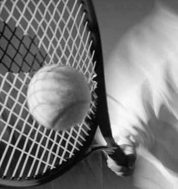
Lời Giới Thiệu
VÀO những năm 1960, chưa đến 10 triệu người chơi quần vợt ở Hoa Kỳ. Sau đó vào năm 1968, lần đầu tiên những người chuyên nghiệp và nghiệp dư được phép thi đấu cùng nhau trong các giải đấu mở, làm dấy lên sự bùng nổ về sự quan tâm và xuất hiện trên truyền hình đối với môn thể thao này. Kết quả là vào cuối những năm 1970, gần 40 triệu người Mỹ chơi quần vợt.
That is until I ended my international playing days and began coaching at the Beverly Hills Tennis Club in California as an assistant to Pancho Segura, considered one of the greatest coaches ever. I soon realized that the most important details of the top pros’ games were not only neglected but also actually violated by both conventional coaching and most entry-level teaching. My own forehand stroke had been affected by poor coaching. Formerly a powerful, stinging weapon I had found on my own as a child, it was rendered inaccurate and ineffective during my tour-playing days after I was counseled to play “the proper way. Something was amiss. Once I was free of the competitive pressures of the tennis tour, I discovered the answer to the riddle—tennis had been made too complicated.
Tuy nhiên, đến đầu năm 2000, số liệu trong ngành cho thấy số lượng người chơi chỉ dao động trong khoảng từ 16 đến 23 triệu, trong khi số liệu chính thức từ Hiệp hội quần vợt Hoa Kỳ cho thấy con số này đã rời khỏi cuộc chơi gấp ba lần trong hai mươi năm qua.
Simple. I then isolated the common denominators of the best strokes, and by establishing what was important to learn and what was not, I found that tennis was a game of hand-eye coordination only—not hand-eye-feet, as had been widely taught. When focusing a player on hand movement only, I noticed the body coordinated itself naturally, resulting in the same fluid motions as the pros. Just by following very simple but specific instructions on how to stroke the ball, and still focusing on the hand, players experienced an incredibly rapid rate of improvement.
Tại sao chuyện này lại xảy ra?
In the same way, you should expect to be a changed player after a couple of hours practicing this fundamental truth.
Nghe có vẻ khó chịu nhưng câu trả lời là do hướng dẫn không chính xác — quần vợt được dạy theo một cách, trong khi những tay vợt chuyên nghiệp hàng đầu lại chơi theo một cách hoàn toàn khác.
Beginners, when not overriding the motions they had acquired in learning to walk and run, found tennis to be an easy sport to learn. Beyond this, you, like all players, just need to determine the best way to handle the ball, maximizing your feel, power, and control—all of which the drills in this book make possible. This book will integrate the best techniques available with your own unique physique and develop your tennis based on your natural motor skills.
Đó là cho đến khi tôi kết thúc những ngày thi đấu quốc tế và bắt đầu huấn luyện tại Câu lạc bộ quần vợt Beverly Hills ở California với tư cách trợ lý cho Pancho Segura, được coi là một trong những huấn luyện viên vĩ đại nhất từ trước đến nay. Tôi nhanh chóng nhận ra rằng những chi tiết quan trọng nhất trong các trận đấu của các chuyên gia hàng đầu không chỉ bị bỏ qua mà còn thực sự bị vi phạm bởi cả cách huấn luyện thông thường và hầu hết cách giảng dạy ở cấp độ đầu vào.
The Results Encouraged by Pancho Segura, I first tested these fundamentals on a large following of Hollywood clientele, including Charlton Heston, Dinah Shore, and Dean Martin Jr.
Cú đánh thuận tay của tôi đã bị ảnh hưởng do huấn luyện kém. Trước đây là một vũ khí mạnh mẽ, nhức nhối mà tôi đã tự mình tìm thấy khi còn nhỏ, nó đã trở nên không chính xác và không hiệu quả trong những ngày tôi thi đấu sau khi tôi được khuyên nên chơi “đúng cách”. Có điều gì đó không ổn.
(whose tennis looked so good after his training that he was cast playing in the Wimbledon singles final against Guillermo Vilas in the movie “Players”).
Khi thoát khỏi áp lực cạnh tranh của giải quần vợt, tôi phát hiện ra câu trả lời cho câu đố—quần vợt đã được làm quá phức tạp. Đơn giản. Sau đó, tôi cô lập các mẫu số chung của những cú đánh tốt nhất, và bằng cách xác định điều gì quan trọng cần học và điều gì không, tôi thấy rằng quần vợt chỉ là một trò chơi phối hợp tay-mắt chứ không phải tay-mắt-chân như đã được dạy rộng rãi.
The Spanish Tennis Federation hired me in 1973 to coach the top juniors at the National Tennis School.
Khi chỉ tập trung người chơi vào chuyển động của tay, tôi nhận thấy cơ thể tự phối hợp một cách tự nhiên, dẫn đến những chuyển động linh hoạt giống như các vận động viên chuyên nghiệp. Chỉ cần làm theo những hướng dẫn rất đơn giản nhưng cụ thể về cách đánh bóng và vẫn tập trung vào tay, người chơi đã đạt được tốc độ tiến bộ cực kỳ nhanh chóng. Tương tự như vậy, bạn sẽ trở thành một người chơi thay đổi sau vài giờ thực hành lẽ thật cơ bản này.
I applied these same fundamentals, despite opposition from leading Spanish coaches, with astounding results.
Những người mới bắt đầu, khi không kiểm soát các chuyển động mà họ có được khi học đi và chạy, nhận thấy quần vợt là một môn thể thao dễ học. Ngoài ra, bạn, giống như tất cả các cầu thủ, chỉ cần xác định cách tốt nhất để xử lý bóng, tối đa hóa cảm giác, sức mạnh và khả năng kiểm soát của bạn—tất cả những điều mà các bài tập trong cuốn sách này có thể thực hiện được. Cuốn sách này sẽ tích hợp các kỹ thuật tốt nhất hiện có với vóc dáng độc đáo của riêng bạn và phát triển môn quần vợt dựa trên các kỹ năng vận động tự nhiên của bạn.
Within three months of my arrival, Spanish players using my techniques eliminated all the international competitors in the Monte Carlo Junior Tournament, resulting in four Spanish semifinalists.
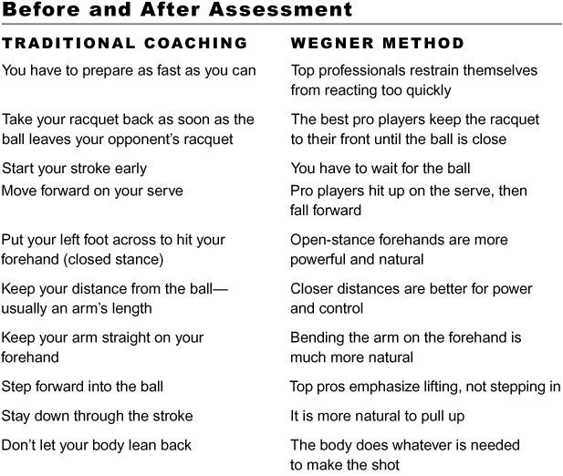
Kết quả
Được Pancho Segura khuyến khích, lần đầu tiên tôi thử nghiệm những nguyên tắc cơ bản này với một lượng lớn khách hàng ở Hollywood, bao gồm Charlton Heston, Dinah Shore và Dean Martin Jr. (người có quần vợt trông rất đẹp sau khi tập luyện đến nỗi anh ấy được chọn thi đấu trong trận chung kết đơn Wimbledon với Guillermo Vilas trong bộ phim “Người chơi”).
The coaches accepted the evidence and adopted my methods.
Liên đoàn quần vợt Tây Ban Nha đã thuê tôi vào năm 1973 để huấn luyện những đội trẻ hàng đầu tại Trường Quần vợt Quốc gia. Tôi đã áp dụng những nguyên tắc cơ bản này bất chấp sự phản đối của các huấn luyện viên hàng đầu Tây Ban Nha và thu được kết quả đáng kinh ngạc. Trong vòng ba tháng kể từ khi tôi đến, các cầu thủ Tây Ban Nha sử dụng kỹ thuật của tôi đã loại bỏ tất cả các đối thủ quốc tế trong Giải đấu trẻ Monte Carlo, kết quả là có bốn người Tây Ban Nha lọt vào bán kết. Các huấn luyện viên đã chấp nhận bằng chứng và áp dụng phương pháp của tôi. Kể từ đó trở đi, Tây Ban Nha không chỉ có một vài người chiến thắng mà còn có rất nhiều người trong số họ, một làn sóng tài năng mới vẫn tiếp tục cho đến ngày nay!
From then on, Spain didn’t have just a few winners—it had a crowd of them, an influx of new talent that continues to this day!
Trở lại Florida vào năm 1974, tôi mở câu lạc bộ quần vợt của riêng mình, dạy cho những người bị hấp dẫn bởi những kỹ thuật không chính thống nhưng rất thành công của tôi.
Returning to Florida in 1974, I opened my own tennis club, teaching those who were intrigued by my unorthodox but highly successful techniques. In the 1980s, I was invited to Brazil, where I spent half that decade coaching in a small club and teaching local pros my coaching methods. Two juniors whom I coached went on to win the Junior Davis Cup in Miami for Brazil in 1993. Some years later, one of them, Gustavo “Guga” Kuerten,
Vào những năm 1980, tôi được mời đến Brazil, nơi tôi đã dành nửa thập kỷ đó để huấn luyện trong một câu lạc bộ nhỏ và dạy các chuyên gia địa phương phương pháp huấn luyện của tôi. Hai cầu thủ trẻ mà tôi huấn luyện đã giành chức vô địch Junior Davis Cup ở Miami cho Brazil vào năm 1993. Vài năm sau, một trong số họ, Gustavo “Guga” Kuerten, đã giành được ba chức vô địch Pháp mở rộng và trở thành Nhà vô địch thế giới năm 2000 khi đánh bại Pete Sampras và Andre Agassi.
went on to win three French Open championships, and became World Champion in 2000 by beating Pete Sampras and Andre Agassi. In 1990, I returned to the United States, where I wrote the forerunner to this book, You Can Play Tennis in Two Hours, and appeared weekly for four years on a nationally syndicated tennis show, The New Tennis Magazine Show (later called Tennis Television), on the Prime Network. An ambitious tennis father, Richard Williams, saw these shows and trained his young girls on my system for four years before sending them directly into the professional tennis circuit.
Năm 1990, tôi trở lại Hoa Kỳ, nơi tôi viết tiền thân cho cuốn sách này, Bạn có thể chơi quần vợt trong hai giờ, và xuất hiện hàng tuần trong bốn năm trên một chương trình quần vợt tổng hợp toàn quốc, The New Tennis Magazine Show (sau này gọi là Tennis Television), trên Prime Network. Một người cha quần vợt đầy tham vọng, Richard Williams, đã xem những buổi biểu diễn này và huấn luyện các cô gái trẻ của mình theo hệ thống của tôi trong bốn năm trước khi đưa họ trực tiếp vào thi đấu quần vợt chuyên nghiệp. Vài năm sau, Venus và Serena Williams thống trị môn thể thao này.
A few years later, Venus and Serena Williams dominated the sport. In 1994, I became a tennis commentator for ESPN Latin America, changing the entire continent’s coaching ideas and methods. Starting in 1997, and for the next two years, ESPN International broadcast my tennis tips in English and Spanish to over 150 countries, initiating a coaching revolution around the world. Another tennis parent, this one in Thailand, had a youngster with the talent to become a pro, but very little tennis was being played in the country and even less coaching materials were available. When he saw the ESPN broadcasts, he ordered my videos to coach his son.
Năm 1994, tôi trở thành bình luận viên quần vợt cho kênh ESPN Châu Mỹ Latinh, điều này đã thay đổi các ý tưởng và phương pháp huấn luyện của toàn lục địa. Bắt đầu từ năm 1997 và trong hai năm tiếp theo, ESPN International đã phát sóng những lời khuyên về quần vợt của tôi bằng tiếng Anh và tiếng Tây Ban Nha tới hơn 150 quốc gia, khởi đầu một cuộc cách mạng huấn luyện trên toàn thế giới. Một phụ huynh quần vợt khác, người này ở Thái Lan, có một cầu thủ trẻ có tài năng để trở thành vận động viên chuyên nghiệp, nhưng rất ít môn quần vợt được chơi ở trong nước và thậm chí còn có ít tài liệu huấn luyện hơn. Khi xem chương trình phát sóng của ESPN, anh ấy đã đặt mua video của tôi để huấn luyện con trai anh ấy. Chỉ trong vòng vài năm, Paradorn Srichaphan đã trở thành một trong những kỳ thủ hàng đầu thế giới.
Within a few years, Paradorn Srichaphan became one of the top players in the world. The Russian Tennis Federation, which has worked with my first book since 1990, implemented my techniques in their junior programs, and the results are showing up in the professional ranks—a dozen Russian women are now ranked in the top one hundred of the world. The Wegner Method My system works for beginners as well as advanced club players and pros.
Liên đoàn quần vợt Nga, nơi đã làm việc với cuốn sách đầu tiên của tôi kể từ năm 1990, đã áp dụng các kỹ thuật của tôi trong các chương trình cấp cơ sở của họ, và kết quả đang thể hiện ở cấp độ chuyên nghiệp - hàng chục phụ nữ Nga hiện được xếp hạng trong top 100 thế giới.
It teaches the basics in a more natural way, hooking you on tennis forever.
Phương pháp Wegner
Hệ thống của tôi hoạt động cho người mới bắt đầu cũng như người chơi câu lạc bộ nâng cao và chuyên nghiệp. Nó dạy những điều cơ bản theo cách tự nhiên hơn, lôi cuốn bạn vào môn quần vợt mãi mãi. Bởi vì hệ thống của tôi dễ học hơn nên bạn thực sự có thể chơi quần vợt tốt hơn sau hai giờ.
Because my system is easier to learn, you really can be playing better tennis in two hours.
Những lợi ích cụ thể mà bạn và những người chơi khác có thể mong đợi từ Phương pháp Wegner là gì?
What are the specific benefits you and other players may expect from the Wegner Method?
Di chuyển dễ dàng trên sân tennis Cảm thấy bạn đang phối hợp tốt Kiểm soát các cú đánh của mình một cách xuất sắc Không sợ trượt cú đánh Dễ dàng điều chỉnh các cú đánh khó Khả năng chơi mà không cảm thấy vội vàng Chắc chắn về thời gian đánh bóng của bạn Cải thiện liên tục Phát triển sức mạnh dần dần Suy nghĩ ở mức tối thiểu Cùng với quả bóng Khả năng tập trung Biết rằng bạn biết nhiều về trò chơi Tự tin vào kỹ năng của mình
Ease of movement on the tennis court Feeling you are well coordinated Excellent control of your shots No fear of missing the shot Ease of adjustment to difficult shots Ability to play without feeling rushed Certainty in your timing of the ball Constant improvement Gradual development of power Minimal amount of thinking Togetherness with the ball Ability to stay focused Knowing that you know a lot about the game Confidence in your skill If you have ever been taught tennis before, look at the following table and note which teaching method best describes the way you play. When you have completed the book, review the list and see if anything has changed for you.
Nếu bạn đã từng được dạy quần vợt trước đây, hãy nhìn vào bảng sau và lưu ý phương pháp giảng dạy nào mô tả đúng nhất cách bạn chơi. Khi bạn đã hoàn thành cuốn sách, hãy xem lại danh sách và xem liệu có điều gì thay đổi đối với bạn không. Quần vợt là một cuộc phiêu lưu tuyệt vời. Sau khi đọc cuốn sách này, bạn sẽ yêu thích môn thể thao này hơn bao giờ hết và trò chơi của bạn sẽ không bao giờ giống như vậy nữa! Trên thực tế, tôi tin rằng khi những kỹ thuật này được áp dụng, quần vợt sẽ lấy lại và thậm chí vượt qua mức độ phổ biến trước đó.
Tennis is a wonderful adventure. After reading this book you’ll love this sport more than ever, and your game will never be the same! In fact, I believe that as these techniques are adopted, tennis will regain and even surpass its earlier popularity. How to Use This Book This book has information for players of all levels.
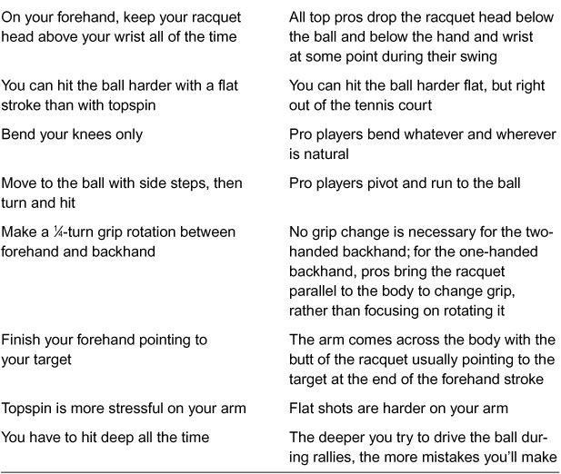
Cách sử dụng cuốn sách này
Cuốn sách này có thông tin dành cho người chơi ở mọi cấp độ. Một số phần rất cơ bản, được viết cho người mới bắt đầu, trong khi những phần khác được viết cho người chơi nâng cao. Những phần nâng cao này được gọi là “Chơi như những người chuyên nghiệp” (danh sách đầy đủ được cung cấp trong chỉ mục). Người mới bắt đầu nên bỏ qua những lời khuyên này cho đến khi đọc xong toàn bộ cuốn sách. Sau đó, họ có thể quay lại và đọc những lời khuyên nâng cao, chắc chắn sẽ có ý nghĩa hơn. Cuốn sách được thiết kế để trước tiên bạn học một phần, sau đó ra sân và thực hành bài tập cụ thể cho phần đó cho đến khi bạn thành thạo nó. Chỉ khi đó bạn mới nên chuyển sang phần tiếp theo.
Some sections are very basic, written for beginners, while others are written for advanced players. These advanced sections are called “Play Like the Pros” (a full list is provided in the index). Beginners should skip these tips until they have completed the entire book. Then they may go back and read the advanced tips which will, undoubtedly, make more sense. The book is set up so that you first study a section and then go onto a court and practice the specific drill for that section until you have mastered it. Only then should you move on to the next section.
Chương đầu tiên, Những quan niệm sai lầm, nhắm đến những người đã tiếp xúc với những lầm tưởng về cách dạy quần vợt thông thường. Nếu bạn là một người hoàn chỉnh
The first chapter, Misconceptions, is targeted to people who have been exposed to the myths of conventional tennis teaching.
người mới bắt đầu, bạn nên bỏ qua phần này lúc đầu. Nhưng nếu ai đó đang cố gắng
dạy cho bạn các khái niệm như “đi ngang”, “thu vợt về sớm”, “bước vào bóng”, “đánh qua năm quả bóng liên tiếp” hoặc “đi theo hướng tới mục tiêu”, bạn có thể cần phải xem lại chương Những quan niệm sai lầm— và có thể đưa nó cho huấn luyện viên của bạn nữa.
If you are a complete beginner, you should skip this section at first. But if someone is trying to teach you concepts such as “get sideways,” “take your racquet back early,” “step into the ball,” “hit through five balls in a row,” or “follow through toward the target,” you may need to review the Misconceptions chapter— and perhaps show it to your coach as well.
Nếu bạn là người chơi ở trình độ trung cấp, tôi khuyên bạn nên đọc toàn bộ cuốn sách để tách biệt và áp dụng bất kỳ khái niệm mới nào vào trò chơi của mình, thực hành các bài tập được chỉ định nếu cần.
If you are an intermediate player, I recommend you read the whole book in order to isolate and adopt any new concepts to your game, practicing indicated drills as necessary. Lastly, when you bump into a word that you do not understand fully, please do not guess what it means from the context—a bad habit being taught in many schools these days.
Cuối cùng, khi gặp một từ mà bạn không hiểu hết, xin đừng đoán nghĩa của nó trong ngữ cảnh - một thói quen xấu được dạy ở nhiều trường học ngày nay. Hãy tra từ điển và tìm định nghĩa chính xác của từ đang được sử dụng.*
Look it up in a dictionary and find the exact definition of the word being used.* If you have any questions or difficulties concerning your own game, you can either log onto www.tennisteacher.com for more information or e- mail me at oscar@tennisteacher.com.
Nếu bạn có bất kỳ câu hỏi hoặc khó khăn nào liên quan đến trò chơi của mình, bạn có thể đăng nhập vào www.tennisteacher.com để biết thêm thông tin hoặc gửi email cho tôi theo địa chỉ oscar@tennisteacher.com.
* Based on the technology of study developed by Mr. L.
* Dựa trên công nghệ nghiên cứu do ông L. Ron Hubbard phát triển vào những năm 1960. Để biết thêm thông tin, hãy truy cập www.appliedscholastics.org/learn_barr.php.
Ron Hubbard in the 1960s. For more information, visit www.appliedscholastics.org/learn_barr.php.
Những Hiểu Lầm Phổ Biến
TẠI SAO TENNIS được coi là môn thể thao khó học và khó cải thiện? Phần lớn là do những quan niệm sai lầm được dạy rộng rãi làm tê liệt khả năng bẩm sinh của cầu thủ và khiến việc phối hợp trở nên khó khăn như việc đi lại bằng nhiều nạng cùng một lúc.
1 misconceptions Serena Williams. [Art Seitz] WHY IS TENNIS considered a difficult sport to learn and to improve upon? Mostly because of widely taught misconceptions that cripple a player’s natural ability and make coordination as difficult as walking with several crutches at the same time. Even many tennis professionals believe these misconceptions.
Thậm chí nhiều chuyên gia quần vợt cũng tin vào những quan niệm sai lầm này. Nhưng bài kiểm tra là liệu họ có thực sự theo dõi họ khi chơi không?
But the test is, do they actually follow them when they play?
Hãy quan sát và tự mình quyết định.
Observe and decide for yourself.
Tôi đã chứng kiến những cầu thủ hàng đầu sa sút nhanh chóng trong những năm cuối sự nghiệp của họ khi thích nghi với lối chơi thông thường. Tất nhiên, trong những năm tháng huy hoàng nhất của họ, họ là những người không thể chạm tới được. Không ai có thể bảo họ sử dụng bất kỳ kỹ thuật nào khác ngoài phong cách rõ ràng là thành công của chính họ.
I have seen top players go into rapid decline in the later years of their career when adjusting to the conventional way. During their greatest years, of course, they were untouchable. Nobody could tell them to use any other technique but their own obviously successful style.
Nhưng ngay sau khi cảm thấy có vết nứt trên áo giáp, họ đã tìm kiếm lời khuyên. "Hãy vuốt phẳng các nét của bạn. Bạn đang già đi, bạn cần nhiều sức mạnh hơn," là một thủ phạm phổ biến. Đối với hầu hết người chơi hiện đại, các cú đánh xoáy lên và xoay bóng là những bậc thang lớn trên nấc thang thành công. Ở đỉnh cao của trò chơi, họ có thể đánh mạnh như họ muốn, đôi khi làm phẳng các cú đánh của họ. Nhưng khi sự tự tin của họ suy giảm, hành động thành công là dựa vào sự an toàn của những cú đánh xoáy lên mà không ảnh hưởng đến sức mạnh hoặc khả năng mắc lỗi.
But soon after they felt some cracks in their armor they sought advice. “Flatten your strokes. You are getting older, you need more power,” is one common culprit. For most modern players, topspin strokes and ball rotation are great rungs on the ladder to success. At the top of their game, they can hit as hard as they want, sometimes flattening their strokes. But when their confidence wanes, the successful course of action is to rely on the safety of the topspin shots, without compromising the power or the margin for error. Following are classic misconceptions that could impair your game.
Sau đây là những quan niệm sai lầm kinh điển có thể làm hỏng trò chơi của bạn. Những chuyên gia hàng đầu được trình bày trong cuốn sách này là những ví dụ sinh động về những người chơi đã không mắc phải những ý tưởng sai lầm này.
The top pros shown in this book are vivid examples of players who did not fall for these faulty ideas. Myths versus Facts MYTH: Learn every move—tennis is a game of positions, specific steps, and preparations that you must learn in detail.
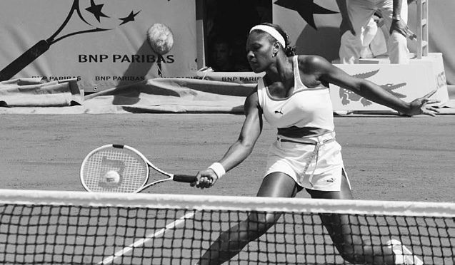
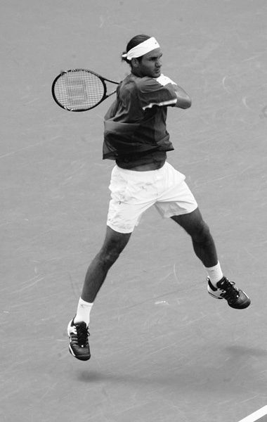
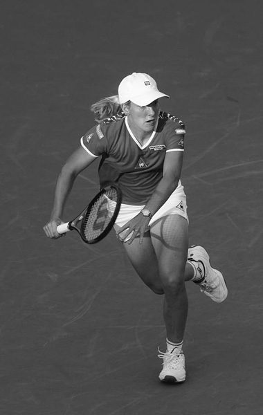
Huyền thoại và sự thật
LẦM TƯỞNG: Học từng bước di chuyển—quần vợt là một trò chơi về các vị trí, các bước cụ thể và sự chuẩn bị mà bạn phải học một cách chi tiết.
FACT: Go to the ball in a natural, instinctive way, focusing only on what you do with the racquet and the ball. In the mind of a tennis pro, a ground stroke is a channeled effort rather than thought.
SỰ THẬT: Đi bóng một cách tự nhiên, theo bản năng, chỉ tập trung vào những gì bạn làm với vợt và bóng.
His eyes are focused on the ball.
Trong suy nghĩ của một vận động viên quần vợt chuyên nghiệp, cú đánh trên mặt đất là một nỗ lực được định hướng hơn là suy nghĩ. Mắt anh ấy tập trung vào quả bóng. “Cảm giác” của anh ấy tập trung vào những gì anh ấy làm với cây vợt, vì chuyển động và góc của nó quyết định toàn bộ cú đánh của anh ấy. Anh ấy muốn cảm nhận quả bóng hơn là nghĩ đến máy móc.
His “feel” is focused on what he does with the racquet, as its movement and angle determine his whole shot. He wants to feel the ball rather than think of the mechanics. The player reaches in the proximity of the ball, finding it as if wanting to catch it. He thinks of nothing else but where he wants to send the ball, channeling all his effort into achieving this goal.
Người chơi đưa tay đến gần quả bóng, thấy bóng như thể muốn bắt nó. Anh ấy không nghĩ gì khác ngoài việc muốn đưa bóng đi đâu, dồn mọi nỗ lực của mình để đạt được mục tiêu này. Hình ảnh duy nhất trong đầu của anh ấy về vị trí là cánh tay ở cuối cú swing, điều mà anh ấy liên tưởng đến vị trí đánh bóng của mình trong nhiều năm.
His only mental image of position is the arm at the end of the swing, something he has related to his shot placement over the years. His mental effort may be nothing more than to bring the arm and racquet to this “finish. At this point, this particular effort is over. He might keep the arm in this position for a short time, feeling the end of his swing and looking to see where the ball is going.
Nỗ lực tinh thần của anh ta có thể không gì khác hơn là đưa cánh tay và cây vợt về đích này. Tại thời điểm này, nỗ lực đặc biệt này đã kết thúc. Anh ta có thể giữ cánh tay ở vị trí này trong một thời gian ngắn, cảm nhận điểm cuối của cú vung và quan sát xem bóng sẽ đi đến đâu. Tuy nhiên, đôi chân của anh không đứng yên. Anh ta có thể đã hồi phục sau cú đánh hoặc đang bao quát sân. Nhưng anh ấy chắc chắn đã liên hệ điểm cuối của cú swing với nơi anh ấy muốn cú đánh của mình tiếp đất.
However, his legs don’t stay still. He may already be recovering from the shot or covering the court. But he has certainly related the end of his swing to where he wants his shot to land. Most conventional teaching techniques have you relate the impact of the ball to the placement of your shot. This technique is excellent for your volleys.
Hầu hết các kỹ thuật giảng dạy thông thường đều yêu cầu bạn liên hệ tác động của quả bóng với vị trí đánh bóng của bạn. Kỹ thuật này rất tuyệt vời cho những cú vô lê của bạn. Nhưng trong các cú đánh trên mặt đất, các chuyên gia hàng đầu tập trung vào điểm kết thúc của cú đánh, đó là lý do chính khiến họ không “nghẹt thở”, dừng cú đánh giữa chừng. Phần duy nhất của cú swing mà họ biết chắc chắn là phần kết thúc. Phần còn lại của cú đánh sẽ điều chỉnh theo bản năng trong khi tìm bóng. LẦM TƯỞNG: Hãy chuẩn bị nhanh nhất có thể.
But on ground strokes, top pros focus on the finish of the swing, which is the main reason why they don’t “choke,” stopping their swing midway. The only part of the swing they know for sure is the finish. The rest of the stroke adjusts instinctively while finding the ball. MYTH: Prepare as fast as you can. FACT: Restrain yourself from reacting too quickly. Although sometimes you have little time to swing at the ball, you must manage the time you have.
SỰ THẬT: Hãy kiềm chế bản thân không phản ứng quá nhanh.
With the ball at a medium or slow pace, a pro looks as if he isn’t even trying.
Mặc dù đôi khi bạn có ít thời gian để vung bóng nhưng bạn phải quản lý thời gian mình có. Với quả bóng ở tốc độ trung bình hoặc chậm, một cầu thủ chuyên nghiệp trông như thể anh ta thậm chí không hề cố gắng.
So little is the effort required at this slower pace that many amateurs play great placement and control games seemingly without exerting themselves. They take their time to run and to stroke.
Cần rất ít nỗ lực ở tốc độ chậm hơn này đến nỗi nhiều người nghiệp dư chơi các trò chơi có vị trí và điều khiển tuyệt vời dường như không cần gắng sức. Họ dành thời gian để chạy và đột quỵ. Họ trông có vẻ phối hợp tuyệt vời. Tất nhiên, họ trông không giống dân chuyên nghiệp vì tốc độ bóng chậm hơn nhiều, nhưng họ chơi như dân chuyên nghiệp, quản lý thời gian và công sức một cách hiệu quả.
They look terrifically coordinated. They don’t look like pros, of course, because the speed of the ball is much slower, but they play like pros, managing time and effort efficiently. Look at pros warming up or practicing, and you’ll see how easily they move and how much time they have. At high ball speeds, pros may look rushed, but there really isn’t much upper body effort on their strokes prior to the hit.
Hãy quan sát các vận động viên khởi động hoặc luyện tập, bạn sẽ thấy họ di chuyển dễ dàng như thế nào và họ có bao nhiêu thời gian.
A pro finds the ball first, then explodes. Of course, your legs have to move fast to enable you to intercept the ball.
Ở tốc độ bóng cao, các chuyên gia có thể trông có vẻ vội vàng, nhưng thực sự không có nhiều nỗ lực của phần thân trên trong các cú đánh của họ trước khi đánh. Người chuyên nghiệp tìm thấy quả bóng trước, sau đó phát nổ.
A good opponent will make you run, slide, bend, and jump. But while the legs move fast, the arms are waiting for the right moment to swing.
Tất nhiên, chân của bạn phải di chuyển nhanh để có thể chặn được bóng. Một đối thủ tốt sẽ khiến bạn chạy, trượt, uốn cong và nhảy. Nhưng trong khi đôi chân di chuyển nhanh thì đôi tay lại chờ thời cơ thích hợp để vung lên.
What is amazing about top pros is the separation between the body effort to reach the ball and the arm effort to strike it. They run for the ball first, trying to find it as if catching it, then they swing at it. MYTH: Take your racquet back as soon as the ball leaves your opponent’s racquet.
Điều đáng kinh ngạc ở các vận động viên chuyên nghiệp hàng đầu là sự tách biệt giữa nỗ lực của cơ thể để tiếp cận bóng và nỗ lực của cánh tay để đánh bóng. Đầu tiên, họ chạy theo quả bóng, cố gắng tìm nó như thể đang bắt nó, sau đó họ vung nó.
FACT: Keep your racquet to the front until the ball is close. Conventional tennis teaching emphasizes taking the racquet back as soon as you see the ball coming your way.
LẦM TƯỞNG: Thu hồi vợt của bạn ngay khi bóng rời khỏi vợt đối thủ.
The student is taught to make this preparation before starting to run, losing valuable time that should be used to reach the ball.
SỰ THẬT: Giữ vợt của bạn ở phía trước cho đến khi bóng ở gần.
Even at high ball speeds, this preparation should be made toward the end of the run.
Việc dạy quần vợt thông thường nhấn mạnh đến việc lấy lại vợt ngay khi bạn nhìn thấy bóng bay về phía mình. Học sinh được dạy cách chuẩn bị này trước khi bắt đầu chạy, điều này sẽ làm mất đi khoảng thời gian quý báu đáng lẽ phải dùng để tiếp cận bóng. Ngay cả ở tốc độ bóng cao, việc chuẩn bị này nên được thực hiện vào cuối đường chạy.
Roger Federer hitting forehand. [Art Seitz] Holding your racquet to the front keeps the racquet closer to the ball and helps you find it well. Although pros turn their shoulders, this is different from taking the arm back. Many top pros keep the nonplaying hand on the racquet during the first part of the flight of the ball to avoid taking the racquet back too soon.
Giữ vợt của bạn ở phía trước sẽ giúp vợt gần bóng hơn và giúp bạn tìm bóng tốt hơn. Mặc dù các chuyên gia có thể xoay vai nhưng điều này khác với việc thu lại cánh tay. Nhiều chuyên gia hàng đầu giữ tay không cầm vợt trong phần đầu tiên của đường bay của bóng để tránh lấy lại vợt quá sớm. Quả bóng nảy lên trước, đến gần người chơi, sau đó người đó vung vào nó.
The ball bounces first, comes close to the player, then he swings at it. Taking the racquet back early is probably the most common barrier to advancement taught in tennis today. The racquet is already in the forehand- ready position when holding it centered at your waist.
Lấy vợt về sớm có lẽ là rào cản phổ biến nhất cho sự thăng tiến được dạy trong môn quần vợt ngày nay. Vợt đã ở vị trí sẵn sàng thuận tay khi cầm vợt ở chính giữa thắt lưng của bạn. Điều tương tự cũng đúng đối với trái tay bằng hai tay, khi việc thay đổi cách cầm là không cần thiết.
The same holds true for the two-handed backhand, where grip changes are unnecessary. Modern forehands and two-handed backhands are totally different from the old racquet-back technique. Instead of taking the racquet back right away, you “stalk” the ball with the racquet face, as if you were going to touch it. Then you hit.
Những cú thuận tay và trái tay bằng hai tay hiện đại hoàn toàn khác với kỹ thuật đánh vợt sau cũ. Thay vì lấy lại vợt ngay lập tức, bạn “đuổi” bóng bằng mặt vợt, như thể bạn sắp chạm vào nó. Sau đó bạn đánh. Kỹ thuật rình rập này giúp bạn tìm thấy bóng. Nó cũng tự động điều chỉnh backswing theo tốc độ và độ cao của bóng cũng như độ khó của cú đánh.
This stalking technique helps you find the ball. It also adjusts the backswing automatically to the speed and height of the ball and to the difficulty of the shot. Don’t commit your swing until after the ball bounces. You may approach the path of the ball from the moment it leaves your opponent’s racquet.
Đừng thực hiện cú vung của bạn cho đến khi bóng nảy lên. Bạn có thể tiếp cận đường đi của bóng kể từ thời điểm nó rời vợt đối phương. Bạn có thể bắt đầu điều chỉnh cánh tay của mình, nhưng hãy cẩn thận khi thực hiện cú đánh của mình.
You may start to adjust your arms, but beware of committing your swing. Taking your backswing early commits you to a swing path before you know exactly where the ball will be.
Việc thực hiện động tác backswing sớm sẽ khiến bạn phải đi theo đường swing trước khi bạn biết chính xác bóng sẽ ở đâu. Việc dự đoán chính xác quả bóng sẽ nảy như thế nào là điều không thể. Bề mặt sân có kết cấu không đồng đều và bóng sẽ bám đất khác nhau tùy thuộc vào tốc độ và độ xoáy của nó. Nếu bạn bắt đầu cú đánh tiếp đất trước khi nảy lên, bạn có thể hình dung ra một cú đánh hoàn hảo, nhưng bạn sẽ phải điều chỉnh nó cho phù hợp với độ nảy của bóng trong nửa cú vung về phía trước.
Predicting exactly how the ball will bounce is not possible. Court surfaces are uneven in texture, and the ball will grab the ground differently depending on its speed and spin. If you start your ground stroke prior to the bounce, you may envision a perfect stroke, but you will have to adjust it to the bounce of the ball halfway through the forward swing. This early backswing is the way most people were coached to play tennis throughout much of the sport’s history. They started their swing, and then they adjusted as they were going through the ball. Only a few players excelled in adjusting to the ball before starting their swing, and they became the best players of their time.
Động tác backswing sớm này là cách mà hầu hết mọi người được huấn luyện để chơi quần vợt trong suốt lịch sử của môn thể thao này. Họ bắt đầu cú vung của mình, và sau đó họ điều chỉnh khi đi qua quả bóng. Chỉ có một số cầu thủ xuất sắc trong việc điều chỉnh bóng trước khi bắt đầu cú vung vợt và họ đã trở thành những cầu thủ giỏi nhất trong thời đại của mình.
At the high speeds of professional play there may not seem to be enough time to wait, but there is! Bear in mind that on hard courts the ball slows down to 40 percent of its initial speed from baseline to baseline. A ball hit toward you from the other baseline at close to 50 mph will reach you at 20 mph. Justine Henin-Hardenne hitting forehand. [Art Seitz] Most pro players don’t consciously know that they wait, but they do.
Ở tốc độ cao của giải đấu chuyên nghiệp, có vẻ như không có đủ thời gian để chờ đợi, nhưng vẫn có! Hãy nhớ rằng trên sân cứng, bóng chậm lại tới 40% tốc độ ban đầu từ đường cơ sở đến đường cơ sở. Một quả bóng đánh về phía bạn từ đường cơ sở khác với tốc độ gần 50 dặm/giờ sẽ đến chỗ bạn với tốc độ 20 dặm/giờ.
It is an inner mechanism they developed in the early stages of their game. If you were to ask a world-class player, “Do you take more time to return a second serve than a first serve?” the answer would be, “Of course I do.” This shows that deep inside, the player waits for the right moment to stroke.
Hầu hết người chơi chuyên nghiệp không ý thức được rằng họ đang chờ đợi, nhưng họ thì có. Đó là một cơ chế bên trong mà họ đã phát triển trong giai đoạn đầu của trò chơi.
Here is a simple experiment that may convince some staunch supporters of the “racquet-back-early” technique that they should change their approach. Have another player serve to your forehand.
Nếu bạn hỏi một cầu thủ đẳng cấp thế giới, "Bạn có mất nhiều thời gian để trả quả giao bóng thứ hai hơn quả giao bóng đầu tiên không?" câu trả lời sẽ là, “Tất nhiên là có.” Điều này cho thấy sâu bên trong, người chơi đang chờ đợi thời điểm thích hợp để đánh.
Take your racquet back before he starts his service motion, and keep it there while he prepares to serve. When he serves, return from this backswing arm position.
Đây là một thử nghiệm đơn giản có thể thuyết phục một số người trung thành ủng hộ kỹ thuật “vợt về sớm” rằng họ nên thay đổi cách tiếp cận của mình. Nhờ người chơi khác giao bóng thuận tay cho bạn. Lấy vợt của bạn lại trước khi anh ta bắt đầu động tác giao bóng và giữ nó ở đó trong khi anh ta chuẩn bị giao bóng. Khi anh ta giao bóng, hãy quay trở lại từ vị trí cánh tay vung sau này. Bạn thấy nó có vẻ khó xử thế nào? Tôi đã thực hiện thí nghiệm này với một số người chơi rất giỏi và nó đã làm tăng lợi nhuận của họ. “Cảm thấy thật kinh khủng,” tôi nói.
See how awkward it feels? I have done this experiment with some very good players, and it stiffened their returns. “Feels awful,” I was told. If you have ever wondered why so many beginners have trouble learning with the conventional racquet-back system, this is your answer. Good coordination means doing things at the proper time. In your ground strokes, learn to play the second curve of the ball; that is, the curve after the bounce.
Nếu bạn đã từng thắc mắc tại sao rất nhiều người mới bắt đầu gặp khó khăn khi học với hệ thống mặt sau vợt thông thường thì đây là câu trả lời cho bạn. Phối hợp tốt có nghĩa là thực hiện mọi việc vào thời điểm thích hợp. Trong các cú đánh tiếp đất của bạn, hãy học cách chơi theo đường cong thứ hai của quả bóng; tức là đường cong sau khi bật lên.
Try this in practice. Start with slow, high-looping ground strokes. Choose your contact point before you take your racquet back for momentum. The contact point becomes apparent only after the bounce.
Hãy thử điều này trong thực tế. Bắt đầu với những cú đánh mặt đất chậm, có vòng lặp cao. Chọn điểm tiếp xúc trước khi bạn lấy vợt về để lấy đà. Điểm tiếp xúc chỉ trở nên rõ ràng sau khi nảy lên. Với những quả bóng chậm, có độ giật cao, nó xảy ra ngay sau khi nảy lên.
On slow, high-looping balls, it occurs well after the bounce. Can you picture waiting as long as possible before taking your racquet back? I know that this will be mentally difficult for those who have trained for years with the opposite method.
Bạn có thể hình dung việc chờ đợi càng lâu càng tốt trước khi lấy lại cây vợt của mình không? Tôi biết rằng điều này sẽ gây khó khăn về mặt tinh thần cho những người đã tập luyện nhiều năm theo phương pháp ngược lại. Bạn sẽ cảm thấy rất muộn!
You’ll feel so late! Starting your swing too early is a hard habit to break.
Bắt đầu cú swing quá sớm là một thói quen khó bỏ. Nhưng người chơi chờ đợi thời điểm thích hợp để vung vợt sẽ phát triển mạnh. Anh ấy sẽ tìm thấy bóng rất tốt - anh ấy sẽ cảm nhận được nó rất nhiều - khi đánh nhẹ nhàng hoặc ở tốc độ cực lớn.
But the player who waits for the right moment to swing will thrive. He’ll find the ball so well— he’ll feel it so much—when hitting either softly or at tremendous speeds. MYTH: Hit the ball early.
LẦM TƯỞNG: Đánh bóng sớm.
FACT: Wait for the ball.
SỰ THẬT: Chờ bóng.
Hitting the ball early is a concept that needs to be debunked, even at the highest level of the game.
Đánh bóng sớm là một khái niệm cần được vạch trần, ngay cả ở cấp độ cao nhất của trò chơi. Tôi đã chứng kiến quá nhiều người chơi trải qua những ngày nghỉ và không biết chính xác tại sao.
I have seen too many players experience off days and not know exactly why.
Tiến lên sân để cắt thời gian của đối thủ hoặc đánh theo hướng tăng lên, gây áp lực lên đối thủ là một chuyện, nhưng bắt đầu cú đánh sớm hơn mức cần thiết lại là một chuyện khác.
It is one thing to advance on the court to cut your opponent’s time or to hit on the rise, putting pressure on your opponent, but it is another thing to start the stroke earlier than needed. Of course top players like to attack the ball, hitting it firmly, but at high ball speeds, even being two-hundredths of a second too early loses the magic.
Tất nhiên những cầu thủ hàng đầu thích tấn công bóng, đánh nó chắc chắn, nhưng ở tốc độ bóng cao, thậm chí sớm hơn hai phần trăm giây sẽ mất đi sự kỳ diệu. Lỗi liên tục xuất hiện và người chơi không hiểu chuyện gì đang xảy ra. “Cảm giác” đã tắt.
Errors keep creeping in, and the player doesn’t understand what is happening. The “feel” is off.
Đối với những cầu thủ nhấc bóng bằng xoáy lên, việc đến sớm một chút sẽ khiến việc nhấc bóng khó hơn. Khi đối mặt với một cầu thủ có xoáy lên nặng, việc đến quá sớm sẽ tạo ra những cú đánh sai. Nó có thể không được coi là đánh nhầm nhưng phản hồi yếu hơn, kém sinh động hơn và đôi khi ngắn hơn.
For players who lift the ball with topspin, being slightly early makes it harder to lift. When facing a player with heavy topspin, being too early creates mis-hits. It may not be recognized as a mis-hit, but the response is weaker, less lively, and sometimes shorter. A tennis ball is very lively.
Một quả bóng tennis rất sống động. Nếu bạn đánh thẳng vào nó, nó sẽ bật ra khỏi dây của bạn trong vòng chưa đầy một phần trăm giây. Mặt khác, nếu bạn tiếp cận bóng từ từ bằng vợt và sau đó tăng tốc ở gần điểm tiếp xúc, bạn sẽ cảm thấy bóng nằm trên dây lâu hơn, sau đó bay đi.
If you hit it straight on, it will bounce off your strings in less than a hundredth of a second. If, on the other hand, you approach the ball slowly with the racquet and then accelerate near the contact, you’ll feel that the ball stays on your strings longer, then takes off.
Có thể bạn không nhìn thấy nhưng bạn sẽ cảm nhận được sự khác biệt nếu đánh một vài quả bóng theo cách này.
Your may not be able to see it, but you will feel the difference if you hit a few balls this way.
Tốc độ bóng, ngay cả khi tác dụng cùng một lực, phụ thuộc vào mức độ gần điểm tiếp xúc mà bạn bắt đầu tác dụng lực. Còn quá sớm một chút và bạn sẽ đạt được nhiều sức mạnh, nhưng khả năng kiểm soát của bạn sẽ không còn nữa.
The ball speed, even when applying the same amount of force, depends on how close to the contact point you start to apply your force. A bit too early, and you achieve plenty of power, but your control is gone.
Nếu một vận động viên chuyên nghiệp vẫn tiếp tục đánh sớm hơn bình thường—có lẽ không biết rằng anh ta chỉ chậm vài phần trăm giây vào ngày hôm đó, hoặc rằng sân đặc biệt này chơi bóng chậm hơn so với sân anh ta luyện tập—anh ta bắt đầu mất tự tin. Anh ấy bắt đầu thắt chặt hơn. Cảm giác của anh ấy giảm đi và sự tiếp xúc của anh ấy không còn nữa, và sâu bên trong anh ấy bối rối - “tại sao?”
If a pro persists in hitting earlier than usual—perhaps unaware that he is just a few hundredths of a second off that day, or that this particular court plays a shade slower than the one he practiced on—he starts losing his confidence. He starts tightening up. His feel is lessened and his touch is gone, and deep inside he is puzzled—“why?” This problem is more likely to happen to players who relish earlier timing to achieve more ball speed. They are playing with fire, very close to the boundary of being too early.
Vấn đề này có nhiều khả năng xảy ra hơn với những người chơi thích tính thời gian sớm hơn để đạt được tốc độ bóng cao hơn. Họ đang đùa với lửa, đã đến rất gần ranh giới của việc còn quá sớm. Nhưng vào những ngày tốt đẹp hơn, điều kỳ diệu và sự rực rỡ vẫn ở đó. Họ dường như chỉ chạm vào quả bóng và nó bắn như tia chớp, lao thẳng về phía sân đối phương.
But on better days, the magic and the brilliance are there. They just seem to touch the ball and it shoots like lightning, streaking to the opponent’s court. The heavy topspin players, on the other hand, wait for the ball so much that it hurts. They have to muscle the ball much more than the earlier hitters to achieve the same ball speed; but regarding timing, they are in a safer zone.
Những người chơi topspin nặng thì chờ bóng đến mức đau. Họ phải sử dụng bóng nhiều hơn những người đánh bóng trước đó để đạt được tốc độ bóng như nhau; nhưng về mặt thời gian, họ đang ở vùng an toàn hơn. Cơ hội đánh quá sớm là tối thiểu. Họ sẽ phải đi gần một phần mười giây, một thực tế dễ dàng nhận thấy hơn một phần trăm giây sẽ khiến người tấn công sớm bị loại.
The chances of hitting too early are minimal. They would have to be off close to a tenth of a second, a fact more easily noticeable than the hundredths of a second that would throw off the early hitter. If you find these concepts hard to grasp, go to a court. Toss the ball a little in front and to your side.
Nếu bạn thấy khó nắm bắt những khái niệm này, hãy ra tòa. Tung bóng một chút về phía trước và sang một bên. Hãy đợi cho đến sau khi bóng nảy lên và hầu như không sử dụng động tác vung vợt ra sau. Hãy cảm nhận rằng bạn chạm vào bóng trước khi đánh nó, sau đó nhấn mạnh vào động tác tiếp theo của bạn. Trong một vài cú đánh đầu tiên, bóng có thể chẳng đi đến đâu cả, nhưng khi bạn đánh mạnh hơn, bạn sẽ dần dần nhận ra mình phải bắt đầu tăng tốc ở gần bóng đến mức nào để đạt được cả tốc độ bóng và khả năng kiểm soát tối đa.
Wait until after the bounce and use almost no backswing. Feel that you touch the ball before you hit it, then emphasize your follow-through. In the first few shots the ball may be going nowhere at all, but as you hit harder, you’ll gradually realize how close to the ball you have to start accelerating to achieve both ball speed and maximum control. You can observe that most of the top pros play this way. Most errors in pro tennis come from taking the arm back too soon or stroking too soon. You lose feel, you lose control.
Bạn có thể nhận thấy rằng hầu hết các tuyển thủ chuyên nghiệp hàng đầu đều chơi theo cách này. Hầu hết các lỗi trong quần vợt chuyên nghiệp đều đến từ việc thu tay lại quá sớm hoặc vuốt ve quá sớm. Bạn mất cảm giác, bạn mất kiểm soát.
This doesn’t mean that you can’t hit some balls early, or well in front, thus flattening your stroke. You just have to consider the risk factor involved.
Điều này không có nghĩa là bạn không thể đánh một số quả bóng sớm hoặc đánh tốt ở phía trước, do đó làm phẳng cú đánh của bạn. Bạn chỉ cần xem xét yếu tố rủi ro liên quan. Bạn có thể đạt được một số chiến thắng tuyệt vời, nhưng nó cũng có thể khiến bạn mất một số điểm. Rủi ro thực sự là mất xoáy lên trên bóng. Vòng xoáy lên này, ngay cả khi ở mức tối thiểu, vẫn giúp đưa bóng vào sân.
You may hit some great winners, but it may also cost you some points. The real risk is loss of topspin on the ball. This topspin, even if minimal, helps drop the ball into the court. At higher speeds, the difference of one or two ball rotations between your hit and the landing of your shot may mean the difference of a foot or two in the length of your shot.
Ở tốc độ cao hơn, sự khác biệt của một hoặc hai vòng quay của quả bóng giữa cú đánh của bạn và điểm tiếp đất của cú đánh của bạn có thể có nghĩa là sự khác biệt một hoặc hai foot về chiều dài cú đánh của bạn. Quả bóng từng rơi ngay trong vạch có thể đi ra ngoài. Những lỗi lặp đi lặp lại như thế này sẽ làm xói mòn sự tự tin của người chơi, khiến anh ta sa sút.
The ball that used to drop just inside the line may go out. Repeated errors like this will erode a player’s confidence, precipitating his decline. It is better to strike farther back in relation to your body—achieving more topspin and control with plenty of power—than to seek the seemingly perfect winner that may cost you more points than it will win. MYTH: Move forward on your serve.
Tốt hơn là bạn nên tấn công xa hơn so với cơ thể của bạn—đạt được nhiều xoáy lên và kiểm soát với nhiều sức mạnh—hơn là tìm kiếm người chiến thắng có vẻ hoàn hảo nhưng có thể khiến bạn mất nhiều điểm hơn là giành chiến thắng.
FACT: Hit up on the serve, then fall forward. Pushing forward with the body on the serve causes a tendency to hit down with the arm.
LẦM TƯỞNG: Hãy tiến về phía trước khi giao bóng.
Visually, it seems that you have to hit down to get speed on a serve.
SỰ THẬT: Thực hiện cú giao bóng, sau đó ngã về phía trước.
But the more you hit down, the more you have to open the racquet to hit the ball over the net, and the ball develops back-spin instead of topspin, losing its downward curve.
Đẩy cơ thể về phía trước khi giao bóng gây ra xu hướng đánh xuống bằng cánh tay. Nhìn bề ngoài, có vẻ như bạn phải đánh xuống để đạt được tốc độ trong một cú giao bóng. Nhưng càng đánh xuống, bạn càng phải mở vợt để đánh bóng qua lưới, và bóng phát triển xoáy ngược thay vì xoáy lên, mất đi đường cong đi xuống.
At the high speeds played in professional tennis, the ball has to have some topspin, even in the hardest serves, both for accuracy and consistency. Top pros have been found to rotate their first serve above 3,000 rpm and second serves above 5,000 rpm. To produce this amount of rotation, your body needs to move up, and your arm must fully extend upward past the impact with the ball.
Ở tốc độ cao khi chơi trong quần vợt chuyên nghiệp, bóng phải có một số xoáy lên, ngay cả trong những cú giao bóng khó nhất, cả về độ chính xác và tính nhất quán. Các chuyên gia hàng đầu được phát hiện đã xoay cú giao bóng đầu tiên của họ trên 3.000 vòng/phút và cú giao bóng thứ hai trên 5.000 vòng/phút. Để tạo ra mức độ xoay này, cơ thể bạn cần phải di chuyển lên trên và cánh tay của bạn phải duỗi thẳng hoàn toàn lên trên sau tác động của quả bóng.
Most professionals hit upward on their serve, but sometimes it is not enough. I recall working with a young player at the beginning of his professional career. I had him stand on the service line, facing the back fence with a bucket of balls. I gave him one instruction—“Hit the balls over the fence with some spin.” Andy Roddick stretching up and leaning into his service motion. [Art Seitz] In the beginning he hit several balls into the fence and was slightly puzzled.
Hầu hết các chuyên gia đều đánh bóng cao hơn khi giao bóng, nhưng đôi khi điều đó là không đủ. Tôi nhớ lại đã làm việc với một cầu thủ trẻ khi anh ấy bắt đầu sự nghiệp chuyên nghiệp. Tôi để anh ta đứng trên vạch giao bóng, quay mặt về phía hàng rào phía sau với một xô bóng. Tôi đã chỉ dẫn cho anh ấy một câu— “Đánh bóng qua hàng rào bằng một cú xoay tròn.”
He thought he was hitting up, but obviously it was not up enough. He continued until he hit every ball over the fence. Then we picked up the balls and he served normally. It took him a few minutes to adjust, but soon I saw a miracle.
Lúc đầu, anh ấy đánh nhiều quả bóng vào hàng rào và hơi bối rối. Anh ấy nghĩ mình đã đánh lên, nhưng rõ ràng là chưa đủ. Anh ấy tiếp tục cho đến khi đánh hết mọi quả bóng qua hàng rào. Sau đó chúng tôi nhặt bóng và anh ấy giao bóng bình thường. Anh ấy phải mất vài phút để thích nghi, nhưng chẳng bao lâu sau tôi đã thấy được điều kỳ diệu. Anh ấy đã nâng cú giao bóng của mình lên một mức độ đáng kinh ngạc về tốc độ, độ sâu, độ chính xác và cú đá. Anh ấy có tất cả tài năng. Một khi anh ấy hiểu được khái niệm và cảm nhận chính xác, anh ấy không thể làm gì sai.
He had raised his serving to an incredible level of speed, depth, accuracy, and kick. He had all the talent. Once he understood the correct concept and feel, he could do no wrong. This upward effort combined with hitting across the ball is even more pronounced on second serves. Hitting upward on the second serve instead of hitting forward helps place the ball into the service court with both speed and spin.
Nỗ lực đi lên này kết hợp với việc đánh ngang bóng thậm chí còn rõ ràng hơn ở những cú giao bóng thứ hai. Đánh lên trên ở quả giao bóng thứ hai thay vì đánh về phía trước giúp đưa bóng vào sân giao bóng với cả tốc độ và độ xoáy. Kết quả là, bạn sẽ tạo ra một cú giao bóng kiểu “American Twist”, một cú đánh xoáy lên rõ ràng sẽ vượt qua lưới vài feet trở lên và tiếp đất ở phía trước vạch giao bóng. Ban đầu bóng có thể trông chậm nhưng sau đó sẽ đá nhanh và cao.
As a result, you’ll produce an “American Twist” serve, a pronounced topspin shot that will clear the net by a couple of feet or more and land in front of the service line. The ball may look slow at first, but it will kick fast and high. Players who don’t have this action either slow down their second serve or they risk a lot.
Những người chơi không thực hiện hành động này sẽ làm chậm cú giao bóng thứ hai của họ hoặc họ gặp nhiều rủi ro. Một máy chủ American Twist tốt không làm chậm chuyển động chút nào và cảm thấy có nhiều sức mạnh và sự tự tin trong lần giao bóng thứ hai.
A good American Twist server doesn’t slow down the motion at all and feels plenty of power and confidence on the second serve. MYTH: Put your left foot across to hit your forehand (closed stance).
LẦM TƯỞNG: Đặt chân trái của bạn ngang để đánh thuận tay (tư thế đóng).
FACT: Use an open stance for your forehand.
SỰ THẬT: Sử dụng thế đứng mở cho cú thuận tay của bạn. Nó dẫn đến một cú đánh mạnh mẽ và tự nhiên hơn.
It results in a more powerful and natural stroke.
Thế đứng mở, khá đơn giản, là đứng bằng cả hai chân hướng vào lưới. Hầu hết các bài học chính thức đều đặt học sinh nằm ngang trên lưới và bước về phía trước bằng chân trái.
An open stance is, quite simply, standing with both feet facing the net.
Tuy nhiên, những cú thuận tay vĩ đại nhất của thời hiện đại chắc chắn là những cú thuận tay có tư thế mở. Thế đứng mở không chỉ giúp người chơi đánh bóng mà còn cho phép họ quay trở lại khu vực giữa sân nhanh hơn. Ngoài ra, trong khi hầu như không thể đánh được một cú thuận tay xoáy lên tốt từ một thế đứng rất khép kín, thì điều ngược lại cũng đúng với một thế đứng rất cởi mở.
Most formal lessons put students sideways to the net and have them step forward with the left foot. However, the greatest forehands of modern times are definitely open- stance forehands. An open stance not only helps players stroke, but it also allows them to return more rapidly to the middle to cover the court.
Sự phối hợp tay-mắt, vì nó liên quan đến quần vợt, hoàn toàn phụ thuộc vào việc vận động viên phối hợp chuyển động tay của mình với nhận thức trực quan về chuyển động của quả bóng. Phần còn lại của cơ thể phản ứng một cách tự nhiên và bản năng với hành động của bàn tay mà vận động viên không cần bất kỳ nỗ lực tinh thần nào.
Also, while it is almost impossible to hit a good topspin forehand from a very closed stance, the opposite is true with a very open stance. Hand-eye coordination, as it relates to tennis, is totally dependent on an athlete coordinating his hand movement with his visual perception of the motion of the ball. The rest of the body responds naturally and instinctively to the action of the hand without any mental effort on the part of the athlete.
Như một phép tương tự đơn giản, hãy hình dung bạn đang vươn tay để bắt tay một ngôi sao điện ảnh Hollywood hấp dẫn, đồng thời nghĩ về vị trí của bàn chân, trọng lượng của bạn dồn vào bàn chân trước hay bàn chân sau, và một số chi tiết khác. Liệu bạn có thể tìm thấy bàn tay của ngôi sao không?
As a simple analogy, visualize yourself reaching out to shake hands with an attractive Hollywood movie star while at the same time thinking about the position of your feet, whether your weight is on the front foot or the back one, and several other details. Would you even be able to find the star’s hand? Hand-eye coordination means precisely that: hand-eye, not hand-eye- foot-weight coordination.
Phối hợp tay-mắt có nghĩa chính xác là: phối hợp tay-mắt, không phải phối hợp tay-mắt-chân. Phương pháp Wegner dựa trên phát hiện đơn giản rằng để cải thiện khả năng phối hợp tay và mắt của bạn, cho dù bạn là người mới bắt đầu, người chơi nâng cao hay chuyên nghiệp, bạn chỉ cần tập trung vào sự tiếp xúc giữa vợt và bóng.
The Wegner Method is based on the simple revelation that to improve your hand-eye coordination, whether you are a beginner, an advanced player, or a pro, you only need to focus on the contact between the racquet and the ball. This doesn’t mean that players don’t have favorite body positions in which they feel most comfortable, or balanced, or powerful. But they have identified those positions by feel, instinctively, not by words or mental commands.
Điều này không có nghĩa là người chơi không có những tư thế cơ thể yêu thích mà họ cảm thấy thoải mái, cân đối hoặc mạnh mẽ nhất. Nhưng họ đã xác định được những vị trí đó bằng cảm giác, theo bản năng chứ không phải bằng lời nói hay mệnh lệnh tinh thần.
MYTH: Keep your distance from the ball—usually an arm’s length. FACT: Move closer to the ball for greater power and better control. How did you catch something thrown to you when you were young?
Lầm tưởng: Giữ khoảng cách với bóng—thường là một sải tay.
Did you run as close to it as possible and then extend your arm to catch it, or did you try to keep your distance?
SỰ THẬT: Di chuyển đến gần bóng hơn để có lực lớn hơn và kiểm soát bóng tốt hơn.
You moved as close as possible.
Hồi nhỏ làm sao mà bạn lại bắt được thứ gì đó ném vào mình? Bạn đã chạy càng gần nó càng tốt rồi đưa tay ra để bắt nó hay bạn cố gắng giữ khoảng cách? Bạn đã di chuyển càng gần càng tốt. Hầu hết các kỹ thuật tennis thông thường đều dạy bạn giữ khoảng cách với bóng khi đánh. Tuy nhiên, các cầu thủ cao cấp và chuyên nghiệp chạy đến gần đường bay của bóng, sau đó giảm tốc độ và đánh bóng về phía mình.
Most conventional tennis techniques teach you to keep your distance from the ball when hitting. However, advanced players and pros run to come close to the line of flight of the ball, then they slow down and hit the ball at their side. MYTH: Keep your arm straight on your forehand. FACT: Bend your arm on the forehand.
LẦM TƯỞNG: Giữ cánh tay thẳng ở phía thuận tay.
It is a more natural movement.
SỰ THẬT: Cong cánh tay của bạn ở bên thuận tay. Đó là một chuyển động tự nhiên hơn.
On the forehand swing, bend your arm as if you were shaking hands.
Khi thực hiện cú đánh thuận tay, hãy uốn cong cánh tay của bạn như thể bạn đang bắt tay. Cánh tay cong giúp bạn điều chỉnh khoảng cách với bóng dễ dàng hơn. Nó cũng mang lại cho bạn nhiều sức mạnh hơn vì bạn đang sử dụng bắp tay, một trong những cơ khỏe nhất trên cơ thể.
A bent arm makes it easier to adjust your distance to the ball. It also gives you more power because you are using your biceps, one of the strongest muscles in the body. For a hard topspin shot, your racquet face needs to come over the ball to prevent the ball from sailing out.
Đối với một cú đánh xoáy lên mạnh, mặt vợt của bạn cần phải hướng về phía bóng để ngăn bóng bay ra ngoài. Điều này được thực hiện dễ dàng hơn bằng cách uốn cong cánh tay ở khuỷu tay thay vì giữ thẳng.
This is more easily done by bending the arm at the elbow, rather than keeping it straight. MYTH: Step forward into the ball. FACT: Emphasize lifting, not stepping forward.
LẦM TƯỞNG: Bước tới trước bóng.
Tennis is basically a vertical game.
SỰ THẬT: Nhấn mạnh vào việc nâng lên chứ không phải bước tới.
You are fighting gravity.
Quần vợt về cơ bản là một trò chơi theo chiều dọc. Bạn đang chiến đấu với trọng lực. Bạn cần bóng để phá lưới, sau đó thả vào sân.
You need the ball to clear the net, then drop into the court.
Trong các cú đánh xoáy lên của bạn, bạn muốn lực nâng nhiều hơn lực về phía trước, vừa để phá lưới vừa để xoay bóng. Trong cú thuận tay xoáy lên, có một xu hướng tự nhiên là di chuyển về phía trước bằng phần bên phải của cơ thể trong khi kéo lên. Tương tự như vậy ở cú đánh trái tay bằng hai tay, phía bên trái có xu hướng tiến về phía trước. Đây là những động tác xoay thân trên mạnh mẽ và chuyển động nâng người để tạo lực cho cú đánh.
In your topspin strokes, you want more lift than forward power, both to clear the net and to rotate the ball. In the topspin forehand, there is a natural tendency to move forward with the right side of the body while pulling up. Likewise in the two-handed backhand, the left side tends to go forward. These are forceful upper body turns and lifting motions that put power into the shot. Serena Williams in an open stance as she slides into a shot. [Art Seitz] Stepping forward or backward is a function of your adjustment to the ball.
Bước tiến hoặc lùi là chức năng điều chỉnh bóng của bạn. Nếu bóng ngắn, bạn di chuyển vào. Nếu bóng sâu, bạn có thể di chuyển lùi.
If the ball is short, you move in.
LẦM TƯỞNG: Giữ nguyên tư thế khi thực hiện cú đánh.
If the ball is deep, you may move back.
SỰ THẬT: Nâng người lên theo cú đánh.
MYTH: Stay down through the stroke.
Việc cơ thể bạn nâng lên trong khi vung là điều tự nhiên. Nâng lên giúp tăng tốc cú đánh hoặc mở rộng tầm với của bạn. Trong một số trường hợp, bạn có thể cần phải cúi xuống để chạm bóng, chẳng hạn như nếu bóng ngắn hoặc thấp. Tuy nhiên, trong những trường hợp bình thường, việc ngồi yên có thể khiến cú swing của bạn bị mắc kẹt hơn là tạo điều kiện thuận lợi cho nó. Những cầu thủ hàng đầu phát triển cảm giác về vị trí tốt nhất cho một cú đánh nhất định, cho dù đó là nâng lên hay giữ nguyên.
FACT: Lift up through the stroke. It is natural for your body to lift up during a swing. Lifting up helps accelerate the stroke or extend your reach. In some situations, you may need to stay down to reach a ball, for example, if it is short or low. However, under normal circumstances, staying down may trap your swing rather than facilitate it.
LẦM TƯỞNG: Đừng để cơ thể ngả ra sau.
Top players develop a feel for the best position for a given shot, whether it is lifting up or staying down.
SỰ THẬT: Hãy để cơ thể làm bất cứ điều gì cần thiết để thực hiện cú đánh.
MYTH: Don’t let your body lean back.
Nhiều cầu thủ giỏi và chuyên gia cố tình kéo cơ thể về phía sau để tạo ra nhiều xoáy lên hơn. Nó tăng thêm yếu tố an toàn cho cú đánh, phá lưới và làm bóng rơi xuống sân.
FACT: Let the body do whatever is needed to make the shot. Many good players and professionals purposefully pull back their body to create more topspin.
Trong một số cú đánh, nếu bạn cảm thấy quá gần bóng, hãy lùi lại khi đánh. Điều này sẽ mang lại cho bạn một khoảng cách thoải mái với bóng, khả năng kiểm soát tốt và thêm khả năng xoay xoáy lên.
It adds to the safety factor of the shot, clearing the net and making the ball drop in the court. In some shots, if you feel too close to the ball, pull back when you hit.
Cánh tay có cảm giác nhẹ hơn và khỏe hơn khi kéo lên. Bạn cũng cảm thấy rằng bạn có nhiều thời gian trong và sau cú đánh, và vợt của bạn sẽ giữ được lâu hơn một chút ở cuối cú đánh.
This will give you a comfortable distance from the ball, good control, and added topspin rotation. The arm feels lighter and more powerful when pulling up.
LẦM TƯỞNG: Giữ đầu vợt của bạn phía trên cổ tay trong suốt toàn bộ cú đánh thuận tay của bạn.
You also feel that you have plenty of time during and after the stroke, and your racquet stays up a fraction longer at the end.
SỰ THẬT: Thả đầu vợt của bạn xuống dưới quả bóng và dưới bàn tay của bạn tại một thời điểm nào đó trong cú đánh thuận tay của bạn.
MYTH: Keep your racquet head above your wrist throughout your whole forehand swing. FACT: Drop your racquet head below the ball and below your hand at some point in your forehand swing.
Thực tế này đặc biệt đúng với những quả bóng được đánh dưới mức thắt lưng.
This fact is especially true on balls hit below waist level.
Ngay cả ở những cú đánh có độ xoáy cao, đầu vợt đôi khi hạ xuống dưới bàn tay. Để đánh từ thấp đến cao, rõ ràng bạn phải ở dưới bóng tại một thời điểm nào đó, và cách thoải mái và hiệu quả nhất là thả đầu vợt xuống trước khi va chạm. Bạn càng thả nhiều, bạn càng có thể bật lên nhiều hơn và bạn sẽ càng có nhiều xoáy lên. Điều tương tự cũng xảy ra với cú đánh xoáy lên trái tay bằng hai tay.
Even on high topspin shots, the racquet head sometimes drops below the hand. To hit from low to high, you obviously have to be below the ball at some point, and the most comfortable and effective way is to drop the racquet head sometime before impact. The more you drop, the more you can come up, and the more topspin you will have. The same goes for the two- handed backhand topspin stroke.
Việc bạn giật cú đánh hay đi thẳng xuống và lên không thành vấn đề. Chỉ cần xuống dưới quả bóng và kéo nó lên.
It doesn’t matter whether you loop your stroke or go straight down and up. Just get below the ball and pull it up.
LẦM TƯỞNG: Bạn có thể đánh bóng mạnh hơn bằng một cú đánh phẳng hơn là với cú đánh xoáy lên.
MYTH: You can hit the ball harder with a flat stroke than with topspin.
SỰ THẬT: Bạn có thể đánh bóng mạnh hơn bằng một cú đánh phẳng, nhưng nó sẽ bay ra khỏi sân tennis!
FACT: You can hit the ball harder with a flat stroke, but it will go right out of the tennis court!
Một cú đánh trên mặt đất phẳng, cứng được đánh từ mức lưới trở xuống, từ bất kỳ vị trí nào trong sân của bạn, không có cơ hội hạ cánh bên trong đường cuối sân của đối thủ — cho dù bạn đánh gần đầu lưới đến đâu — trừ khi bạn đánh vào lưới, đối thủ hoặc chim.
Gustavo Kuerten following through high while pulling back. [Art Seitz] A hard, flat ground stroke hit from net level or below, from anywhere inside your court, has no chance of landing inside your opponent’s baseline —no matter how close to the top of the net you hit it—unless you hit the net, your opponent, or a bird. With enough topspin, you can hit a 60 mph shot in the court with the same downward curve as a flat 40 mph shot. Another consideration in hitting hard and flat is your chance of winning the point.
Với đủ xoáy lên, bạn có thể thực hiện một cú đánh với tốc độ 60 dặm/giờ trên sân với đường cong đi xuống tương tự như một cú đánh phẳng với tốc độ 40 dặm/giờ.
Pros go for the percentage shots. Let’s say you are a pro, and you have a 50 percent chance of hitting a flat 50 mph ground stroke to a corner (if you’re an advanced club player, you
Một điều cần cân nhắc khác khi đánh mạnh và phẳng là cơ hội giành được điểm. Ưu điểm dành cho phần trăm ảnh chụp.
have maybe a 30 percent chance).
Giả sử bạn là một người chơi chuyên nghiệp và bạn có 50% cơ hội thực hiện một cú đánh bằng phẳng với tốc độ 50 dặm/giờ vào một góc (nếu bạn là người chơi câu lạc bộ nâng cao, bạn có thể có 30% cơ hội). Điều gì sẽ xảy ra nếu đối thủ của bạn đánh trả nó bằng cách nào đó? Bạn có muốn có một cơ hội khác như vậy không?
What if your opponent hits it back somehow? Would you take another chance like that? Match results are determined more by unforced errors than by great shots. At a professional level, unless the court is slick and fast, the ball keeps coming back and coming back.
Kết quả trận đấu được quyết định bởi những lỗi không đáng có hơn là bởi những cú đánh tuyệt vời. Ở cấp độ chuyên nghiệp, trừ khi mặt sân trơn và nhanh, nếu không bóng sẽ cứ quay đi quay lại. Những cầu thủ này vừa mạnh mẽ vừa an toàn.
These players are both forceful and safe. There is a perception that the game has changed in the last few years, with top pros seeking to finish the point from the baseline in a very forceful way. This held true for a few top players in earlier decades as well.
Có quan điểm cho rằng trò chơi đã thay đổi trong vài năm gần đây, với những chuyên gia hàng đầu đang tìm cách cán đích từ vạch cuối sân một cách rất mạnh mẽ. Điều này cũng đúng với một số cầu thủ hàng đầu trong những thập kỷ trước. Những cầu thủ có độ xoáy cao nặng như Tilden, Borg và Lendl luôn thích kết thúc điểm bằng một cú sút uy lực trong khi vẫn đảm bảo an toàn cho mình với cú xoáy bóng.
Heavy topspin hitters like Tilden, Borg, and Lendl always relished finishing the point with a powerful shot while still preserving their safety with spin on the ball. Today’s powerful racquets have made this tactic easier. New equipment provides tremendous ball speed, and topspin players can hit hard winners while still focusing on landing the ball safely in the court.
Những cây vợt mạnh mẽ ngày nay đã khiến chiến thuật này trở nên dễ dàng hơn. Thiết bị mới cung cấp tốc độ bóng cực lớn và những người chơi topspin có thể đánh trúng những người chiến thắng khó khăn trong khi vẫn tập trung vào việc đưa bóng tiếp đất an toàn trên sân.
If you want to kill the ball with a ground stroke, blast it with topspin and look like a tennis pro (or at least an approximation) rather than a baseball player. MYTH: Bend your knees only. FACT: Bend whatever or wherever is natural.
Nếu bạn muốn giết bóng bằng một cú đánh chạm đất, hãy làm nổ nó bằng xoáy lên và trông giống như một vận động viên quần vợt chuyên nghiệp (hoặc ít nhất là gần đúng) hơn là một vận động viên bóng chày.
The instruction to bend only your knees combined with staying down through the stroke makes players look like broken puppets.
LẦM TƯỞNG: Chỉ uốn cong đầu gối của bạn.
Bend naturally— waist, knees, arms—looking like an athlete, not like a stiff marionette.
SỰ THẬT: Uốn cong bất cứ thứ gì hoặc bất cứ nơi nào một cách tự nhiên.
MYTH: Move to the ball with side steps, then turn and hit.
Hướng dẫn chỉ gập đầu gối kết hợp với việc giữ nguyên tư thế thực hiện cú đánh khiến người chơi trông giống như những con rối bị gãy. Uốn cong một cách tự nhiên - eo, đầu gối, cánh tay - trông giống như một vận động viên, không giống như một con rối cứng nhắc.
FACT: Pivot to run to the ball. Stepping sideways to run to the ball is the most ridiculous teaching method I ever saw.
LẦM TƯỞNG: Di chuyển tới bóng bằng bước ngang, sau đó xoay người và đánh.
It’s another technique that makes players look like puppets.
SỰ THẬT: Xoay người để chạy tới bóng.
Players who are making good progress by playing naturally can have their coordination, timing, feel, and focus on finding the ball destroyed by a teacher who makes them sidestep first in moving to a distant ball.
Bước sang một bên để chạy theo bóng là phương pháp dạy nực cười nhất mà tôi từng thấy. Đó là một kỹ thuật khác khiến người chơi trông giống như những con rối. Những người chơi đang tiến bộ tốt bằng cách chơi tự nhiên có thể có sự phối hợp, tính thời gian, cảm nhận và tập trung vào việc tìm ra quả bóng bị giáo viên phá hủy, người khiến họ phải tránh sang một bên trước khi di chuyển đến một quả bóng ở xa.
Top players sometimes sidestep while they are waiting to see their opponent’s next shot, or when the ball is right there and they want to keep their open stance. But to purposely sidestep to run to a distant ball is crazy.
Các cầu thủ hàng đầu đôi khi bước sang một bên trong khi chờ xem cú đánh tiếp theo của đối thủ, hoặc khi bóng ở ngay đó và họ muốn giữ thế đứng cởi mở. Nhưng cố tình tránh sang một bên để chạy đến một quả bóng ở xa là điều điên rồ.
Nothing is more natural, graceful, and efficient than turning toward wherever you are going, leaning in that direction, and taking a few steps, gently and nonchalantly.
Không có gì tự nhiên, duyên dáng và hiệu quả hơn là quay về bất cứ nơi nào bạn đi, nghiêng về hướng đó và bước vài bước, nhẹ nhàng và thờ ơ. Roger Federer, một trong những tay vợt chuyên nghiệp vĩ đại nhất từ trước đến nay, chơi theo cách này. Anh ấy trông uyển chuyển và nhanh nhẹn, nhưng tất cả những gì anh ấy làm là nghiêng người và rẽ hoàn hảo theo hướng anh ấy muốn đi. Anh ấy dường như có đủ tuổi để tiếp cận quả bóng. Anh ấy không phải là người nhanh nhất, anh ấy chỉ có những bước di chuyển tự nhiên nhất.
Roger Federer, one of the greatest pros ever, plays this way. He looks smooth and fast, but all he does is lean and turn perfectly in the direction he wants to go. He seems to have ages to reach the ball. He isn’t the quickest, he just has the most natural moves. MYTH: Make a ¼-turn grip rotation between the forehand and backhand.
LẦM TƯỞNG: Thực hiện xoay cán vợt ¼ vòng giữa thuận tay và trái tay.
FACT: Do not change your grip for the two-handed backhand.
SỰ THẬT: Không thay đổi cách cầm vợt của bạn đối với cú đánh trái tay bằng hai tay. Chỉ cần thêm tay trái với cách cầm thuận tay của riêng nó. Đối với cú đánh trái tay bằng một tay, hãy đưa vợt song song với cơ thể để thay đổi cách cầm vợt, thay vì chỉ tập trung vào việc xoay vợt.
Just add the left hand with its own forehand grip. For the one-handed backhand, bring your racquet parallel to your body to change your grip, rather than just focusing on rotating it. If you have a two-handed backhand, you don’t need to rotate the grip at all.
Nếu bạn thuận tay trái bằng hai tay, bạn hoàn toàn không cần phải xoay tay cầm. Tay phải có thể giữ cách cầm thuận tay, trong khi tay trái thực hiện hầu hết công việc trong suốt cú đánh.
The right hand can keep the forehand grip, while the left hand does most of the work throughout the stroke. If your backhand is one-handed, the technique is different.
Nếu trái tay của bạn là bằng một tay, kỹ thuật sẽ khác. Bạn cần thay đổi cách cầm vợt thuận tay sang cách cầm vợt trái tay để hỗ trợ vợt tốt hơn khi tiếp xúc. Di chuyển vợt của bạn đến vị trí song song với phía trước cơ thể, xoay sang trái, trong khi tay cầm trượt bên trong tay phải, thay đổi vị trí.
You need to change your forehand grip to a backhand grip to have better racquet support at impact. Move your racquet to a position parallel to the front of your body, turning to your left, while the grip slides inside your right hand, changing position. This change occurs primarily in the bottom portion of the hand, closest to the little finger.
Sự thay đổi này xảy ra chủ yếu ở phần dưới cùng của bàn tay, gần ngón út nhất. Các ngón tay đi từ vị trí xòe ra ở cách cầm vợt thuận tay đến vị trí khép sát nhau khi cầm vợt trái tay.
The fingers go from a spread-out position on the forehand grip to a close-together position for the backhand grip.
Lòng bàn tay của bạn bây giờ nằm ở phần trên cùng của cán vợt để đạt được vị trí vuông góc hơn của cánh tay với vợt. Điều này cũng mang lại cho bạn sự hỗ trợ tốt hơn nhiều khi đánh các cú topspin. Bạn có thể đi đến mức đặt ngón tay cái của bạn vào góc xiên phía sau của cán vợt.
The palm of your hand is now on the top portion of the racquet grip to achieve a more perpendicular position of the arm to the racquet. This gives you much better support while hitting topspins, too. You can go to the extent of placing your thumb in the back bevel of your racquet handle.
Bạn có thể kiểm tra cách cầm này bằng cách ép vợt phẳng vào tường hoặc hàng rào sân tennis, như thể bạn đang tiếp xúc bóng bằng trái tay. Nếu cách cầm của bạn ổn, bạn sẽ cảm nhận được nhiều sự hỗ trợ cho cú đẩy của mình.
You can test this grip by pressing the racquet flat against a wall or a tennis court fence, as if you were contacting the ball with your backhand. If your grip is OK, you’ll feel plenty of support for your push.
Đối với cú cắt trái tay bằng một tay, sự thay đổi cách cầm từ thuận tay sang trái tay nhỏ hơn và các ngón tay vẫn dang rộng ra. Ở đây, xoay ⅛-vòng trong tay cầm sẽ chính xác hơn, nhưng sự thay đổi này luôn lớn hơn về phía ngón út so với về phía ngón trỏ.
For the one-handed backhand slice, the grip change from forehand to backhand is smaller, and the fingers remain spread apart. Here a ⅛-turn in grip rotation is more accurate, but this change is always larger toward the little finger than toward the index finger. No matter what grip change you need, feel your grip, rather than looking at it.
Cho dù bạn cần thay đổi cách cầm như thế nào, hãy cảm nhận cách cầm của bạn thay vì nhìn vào nó. Nhìn vào cách cầm bóng của bạn và liên tục lo lắng xem nó có đúng không sẽ khiến bạn mất tập trung vào việc tìm bóng. LẦM TƯỞNG: Hướng vợt của bạn về phía mục tiêu ở cuối cú đánh thuận tay.
Looking at your grip and constantly worrying over it being correct takes valuable attention away from finding the ball. MYTH: Point your racquet toward your target at the end of the forehand stroke. FACT: Bring your racquet across your body toward your left shoulder to finish your stroke.
SỰ THẬT: Đưa vợt ngang cơ thể về phía vai trái để kết thúc cú đánh của bạn.
Pointing the racquet toward the target makes for a straight arm forehand.
Hướng vợt về phía mục tiêu sẽ tạo ra một cú thuận tay thẳng. Tuy nhiên, việc uốn cong cánh tay về phía vai trái sẽ mang lại cho bạn một số lợi thế. Bạn sẽ có nhiều sức mạnh, khả năng kiểm soát và xoáy lên hơn và có thể đóng góc mặt vợt tốt hơn. Bạn sẽ có sự cân bằng và động lực tốt hơn để quay trở lại giữa sân sau cú đánh của mình. Và bạn sẽ tránh được căng thẳng quá mức trên cánh tay của mình.
However bending your arm up toward your left shoulder will give you several advantages. You’ll have more power, control, and topspin and be better able to close the racquet face angle. You’ll have better balance and momentum to turn back toward the center of the court after your shot.
Điều này cũng đúng đối với trái tay bằng hai tay. Cong cả hai cánh tay về phía vai phải của bạn để đạt được cú xoay xoáy lên hoàn toàn.
And you’ll prevent undue stress on your arm. The same is true for the two-handed backhand.
Trong cú đánh trái tay bằng một tay, cánh tay phải sẽ kết thúc việc chỉ về phía mục tiêu hoặc về phía bên phải của mục tiêu, cho dù đó là một cú đánh xoáy lên, khi cánh tay kết thúc ở vị trí cao, hay một cú cắt, trong đó cánh tay kết thúc ở mức thấp. Tuy nhiên cổ tay không bao giờ bị “gãy” để đưa vợt hướng về hướng đó. Vợt sẽ kết thúc ở một góc gần như vuông góc với cánh tay, cho dù vợt di chuyển qua (topspin) hay dưới (slice) bóng.
Bend both arms toward your right shoulder to achieve a full topspin swing. In the one-handed backhand, the right arm will finish pointing approximately to the target or to the right of it, whether it is a topspin shot, where the arm finishes high, or a slice, where the arm finishes low. However the wrist never “breaks” to have the racquet point in that direction. The racquet will end up at an angle approximately perpendicular to the arm, whether the racquet moves over (topspin) or under (slice) the ball.
Lầm tưởng: Topspin gây căng thẳng hơn cho cánh tay của bạn.
MYTH: Topspin is more stressful for your arm.
SỰ THẬT: Những cú đánh phẳng khó hơn trên cánh tay của bạn.
FACT: Flat shots are harder on your arm.
Mặc dù topspin đòi hỏi nhiều nỗ lực thể chất hơn so với quần vợt thông thường, nhưng nó phân bổ tác động căng thẳng trên một khu vực rộng hơn.
Although topspin requires more physical effort overall than conventional tennis, it distributes the stress impact over a wider area.
Một quả bóng bay đến chỗ bạn và gặp vuông góc (“phẳng” trong thuật ngữ quần vợt) sẽ gây áp lực lên cánh tay của bạn và có xu hướng làm xoay vợt của bạn. Bạn cần phải siết chặt tay cầm cũng như cánh tay và vai của mình một cách đáng kể để tạo lực cho cú vung của mình.
A ball coming at you and met squarely (“flat” in tennis jargon) puts the stress on your arm and tends to turn your racquet. You need to tighten your grip substantially, as well as your arm and shoulder, to put force into your swing.
Do trọng lực tác động lên cơ thể bạn cũng như quả bóng, một phần lực tác động sẽ bị tiêu tán qua cơ thể bạn và đẩy bạn về phía mặt đất. Ở những bức ảnh chụp bằng phẳng, điều này mang lại cảm giác như bàn chân của bạn được đặt chắc chắn trên mặt đất.
Because of gravity, which affects your body as well as the ball, some of the impact force is dissipated through your body and pushes you toward the ground. On flat shots, this gives the feeling that your feet are firmly planted on the ground. The topspin shot, on the other hand, is an upward movement.
Mặt khác, cú đánh xoáy lên là một chuyển động đi lên. Lực của bạn thực sự đang chống lại trọng lực. Bạn cảm thấy nhẹ nhàng trên đôi chân của mình, đôi khi như rơi khỏi mặt đất. Lực của quả bóng tới bị tiêu tan hoặc triệt tiêu bởi lực hướng lên của bạn. Nó có thể có xu hướng tiếp đất cho bạn, nhưng vì dù sao thì bạn cũng đang kéo lên nên bạn không cảm thấy nhiều như khi thực hiện các cú đánh phẳng.
Your force is actually counteracting gravity. You feel light on your feet, sometimes coming off the ground. The force of the incoming ball is dissipated or canceled by your upward force. It may tend to ground you, but since you are pulling up anyway, you don’t feel it as much as in the flat strokes.
Andre Agassi có cả hai chân cách xa mặt đất khi anh ấy đánh một cú thuận tay lớn. [Nghệ thuật
Seitz]
Andre Agassi has both feet well off the ground as he hits a big forehand. [Art Seitz] This lift may save your lower and knees back from torsion stress.
Động tác nâng này có thể giúp phần dưới và đầu gối của bạn thoát khỏi áp lực xoắn. Tất nhiên là bạn phải cúi xuống, sau đó kéo người lên trong những cú đánh xoáy lên của mình. Đôi khi bạn có thể nhảy ngay cả khi đang chạy. Nhưng những chuyển động này thực sự là tự nhiên, không có gì mà hàng triệu năm qua con người vẫn chưa làm được.
Of course you have to bend down, then pull up in your topspin shots. Sometimes you may jump, even while on the run. But these movements are truly natural, nothing that humans haven’t done for millions of years.
Với xoáy lên, áp lực lên cánh tay cũng giảm đi do thực tế là một số tác động bị tiêu tán thành xoáy. Quả bóng tới sẽ di chuyển xuống trên dây vợt của bạn trong khi bạn đang kéo lên. Những người đánh bóng xoáy lên thường tiếp xúc bóng ở phía dưới tâm dây, giúp giữ vợt kín. Những người đánh phẳng có xu hướng đánh vào giữa dây hoặc phía trên nó.
With topspin, the stress on the arm is also diminished by the fact that some of the impact is dissipated into spin. The incoming ball travels downward on your racquet strings while you are pulling up. Topspin hitters usually contact the ball below the center of the strings, helping keep the
Đánh phía dưới tâm, bạn có thể đánh một cú đánh xoáy lên mạnh mà không cần phải dùng tay khóa vợt. Đường vợt không bị xáo trộn nhiều ngay cả khi bạn cầm vợt khá lỏng.
racquet closed. Flat hitters tend to hit either on the center of the strings or above it.
Ngược lại, bạn cần phải siết chặt tay cầm bằng một cú đánh phẳng, nếu không vợt của bạn có thể bay theo hướng khác với hướng đánh của bạn. Bạn chống lại những lực đó bằng cách siết chặt bàn tay và cánh tay và đặt chân vững chắc trên mặt đất.
Hitting below the center, you can hit a hard topspin shot without having to lock up on the racquet with your hand. The racquet path isn’t disturbed much even if your grip is quite loose. On the contrary, you need to tighten your grip with a flat shot, or your racquet may fly in a direction other than your shot.
Theo một cách rất đồ họa, việc đánh những cú đánh xoáy lên mạnh có cảm giác như đang cất cánh trên một chiếc máy bay. Để so sánh, đánh những cú đánh phẳng mạnh có cảm giác như rơi xuống đất.
You counter those forces by tightening your hand and arm and planting your feet firmly on the ground. In a very graphic way, hitting hard topspin shots feels like taking off in an airplane.
LẦM TƯỞNG: Bạn phải luôn đánh sâu.
By comparison, hitting forceful flat shots feels like crashing to the ground.
SỰ THẬT: Bạn càng cố gắng lái bóng sâu trong các pha đánh bóng, bạn sẽ càng mắc nhiều lỗi hơn.
MYTH: You have to hit deep all the time.
Trừ khi bạn thực hiện một cú đánh tiếp cận (di chuyển về phía lưới khi bạn đánh), trong đó bạn muốn một cú sút sâu để buộc đối thủ lùi lại, mục tiêu của bạn là giữ bóng tốt trong sân.
FACT: The deeper you try to drive the ball during rallies, the more mistakes you’ll make.
Nếu bạn không ngừng phấn đấu để có chiều sâu, bạn đang chơi một trò chơi có độ rủi ro cao. Bóng có thể di chuyển sâu hơn nhiều so với dự định, vượt quá đường biên ngang của đối thủ.
Unless you are hitting an approach shot (moving toward the net as you hit), where a deep shot is desired to force your opponent back, your goal is to keep the ball well inside the court. If you constantly strive for depth, you play a high-risk game.
Hơn 80 phần trăm các cú đánh chạm đất ở cấp độ chuyên nghiệp hàng đầu nảy gần đường giao bóng hơn đường cơ sở. Trong một cuộc biểu tình, chỉ cần vượt qua đường giao bóng là đủ độ sâu. Khi đó nếu bóng đi sâu hơn thì vẫn rơi xuống sân.
The ball may travel much deeper than intended, overshooting your opponent’s baseline. Over 80 percent of the ground strokes at the top professional level bounce closer to the service line than the baseline. In a rally, just clearing the service line is enough depth.
Tôi đã chứng kiến các cầu thủ hàng đầu bắt đầu trận đấu mà không có nhiều sự tự tin, nhưng giữ bóng một cách lạnh lùng và an toàn với nhiều xoáy lên, xen lẫn với một vài cú cắt trái tay, không quá gần đường biên. Họ nỗ lực hết mình trong trận đấu, cố gắng vượt qua sự kháng cự của đối thủ. Sau đó, khi trận đấu diễn ra, có lẽ với một thế trận sẵn sàng, họ sẽ áp chế đối thủ của mình, đánh một cách mạnh mẽ khắp sân. Tuyệt vời, topspin tuyệt vời, quá mạnh mẽ nhưng cũng rất an toàn!
Then if the ball goes deeper, it will still land in the court. I have seen top players start a match without much confidence, but coolly and safely keep the ball in play with plenty of topspin, mixed with a few sliced backhands, nothing too close to the lines. They work themselves into the match, grinding their way into their opponent’s resistance. Then, as the match progresses, perhaps with a set under their belt, they steamroll their opponent, hitting powerfully all over the court. Wonderful, wonderful topspin, so powerful yet so safe!
Bjorn Borg đã giành được vô số trận đấu và chức vô địch chỉ bằng những cú đánh trên mặt đất của mình, đánh bóng với nhiều xoáy lên hơn bất kỳ ai cùng thời.
Maria Sharapova getting under the ball to lift it up and over. [Art Seitz] Bjorn Borg won innumerable matches and championships doing just that on his ground strokes, hitting the ball with more topspin than anyone of his time.
Roger Federer là một trong những tay vợt có cú đánh xoáy lên xuất sắc nhất mọi thời đại. Độ sâu không quan trọng đối với anh ta, nhưng sức mạnh của anh ta khiến phần lớn các cú đánh của anh ta có độ sâu.
Roger Federer is another of the great topspin players of all time. Depth is not critical for him, but his power drives a high percentage of his shots deep.
Federer là tay vợt hoàn thiện nhất của thế hệ hiện tại và có lẽ là tay vợt thú vị nhất để xem. Anh ta có thể chuyển từ trạng thái an toàn sang sức mạnh hoặc chạm vào các cú đánh trong chớp mắt. Đôi khi anh ấy chọn cách khắc phục nó từ đường cơ sở. Lần khác, anh ấy xông vào lưới ngay từ đầu điểm. Anh ấy chắc chắn là một ví dụ hoàn hảo của trò chơi hiện đại: sức mạnh khủng khiếp được thuần hóa bằng xoáy lên. Thành công của những cầu thủ vĩ đại này rõ ràng phụ thuộc vào sự kết hợp giữa sức mạnh và khả năng kiểm soát của họ. Với những cây vợt thân rộng mới được phát triển, việc đánh bóng phẳng ở tốc độ cao sẽ mắc nhiều lỗi hơn. Một cú xoáy ngược trong các cú vô lê của bạn, ngay cả khi ở mức tối thiểu, sẽ giúp bạn kiểm soát và cảm nhận bóng tốt hơn.
Federer is the most complete player of the current generation and perhaps the most exciting to watch. He can switch from safety to power or to touch shots in the blink of an eye. Sometimes he elects to tough it out from the baseline. Other times he storms the net right from the start of the point. He is undoubtedly a perfect example of the modern game: tremendous power tamed with topspin. The success of these great players obviously depends on their mixture of power and control. With the newly developed wide-body racquets, hitting the ball flat at high speeds makes for more errors. A backspin on your volleys, even if minimal, will add to your control and feel of the ball. From the backcourt, do the opposite and roll the ball up. The more topspin, no matter how hard you hit, the sooner the ball will drop.
Từ sân sau, làm ngược lại và lăn bóng lên. Càng xoáy lên, dù bạn đánh mạnh đến đâu thì bóng sẽ rơi càng sớm.
If you want to hit the ball deeper in a rally, hit it harder or higher. Hit it with enough topspin, and it will land in front of your opponent’s baseline and jump.
Nếu bạn muốn đánh bóng sâu hơn trong một pha đánh bóng, hãy đánh mạnh hơn hoặc cao hơn. Đánh nó với đủ xoáy lên, nó sẽ tiếp đất trước đường biên ngang của đối thủ và nhảy lên. Bạn sẽ gặp ít rủi ro hơn nếu bạn dàn trải các cú đánh của mình để có chiều sâu hơn. Với topspin, các cú đánh của bạn sẽ khó bị đối thủ đánh trả hơn.
You’ll be risking less than if you flatten out your shots for more depth. With topspin, your shots will be harder for your opponent to return. In Conclusion Take a new, fresh look at the pros. Instead of watching the ball travel back and forth, fix your eyes on the player of your choice.
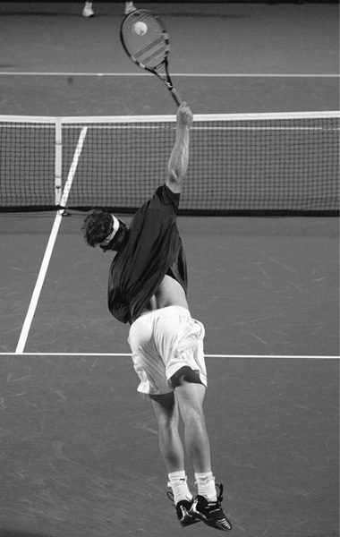
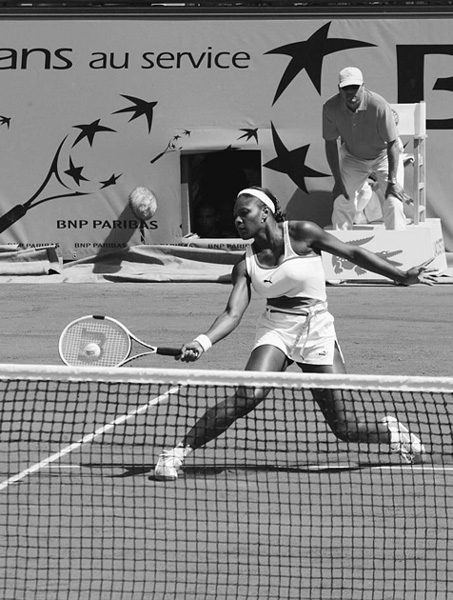
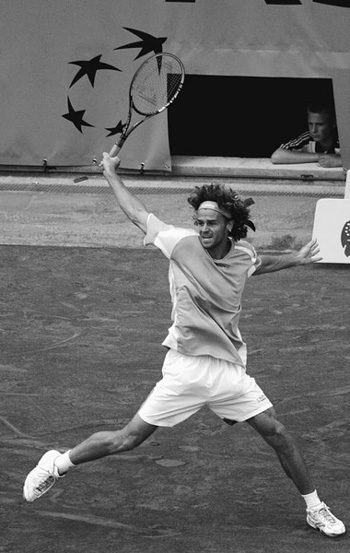
Kết luận
Hãy có một cái nhìn mới mẻ về những người chuyên nghiệp. Thay vì quan sát quả bóng di chuyển qua lại, hãy tập trung vào cầu thủ bạn chọn. Hãy quan sát các bước di chuyển của anh ấy—cách anh ấy chuẩn bị, khi nào anh ấy bắt đầu đánh, cách anh ấy đánh bóng, cách anh ấy theo bóng và kết thúc, cách anh ấy quay trở lại giữa sân, và quan trọng nhất, cách anh ấy tìm thấy bóng.
Watch his moves—how he prepares, when he starts to stroke, how he hits the ball, how he follows through and finishes, the way he returns to the middle, and most importantly, how he finds the ball. Top players are all good athletes, but they are not superhuman. Their technique is obviously the most important factor contributing to their success. Therefore, there is no reason to teach a beginner or an advanced student in opposition to how the top pros play and claim that it is the right way to learn the game. On the contrary, using the same basic principles as the top pros speeds the learning process, is more relaxing, and helps make the game more enjoyable.
Những tuyển thủ hàng đầu đều là những vận động viên giỏi nhưng họ không phải là siêu nhân. Kỹ thuật của họ rõ ràng là yếu tố quan trọng nhất góp phần vào thành công của họ. Vì vậy, không có lý do gì để dạy người mới bắt đầu hoặc một học viên cao cấp trái ngược với cách chơi của các chuyên gia hàng đầu và cho rằng đó là cách học trò chơi đúng đắn. Ngược lại, việc sử dụng các nguyên tắc cơ bản giống như các chuyên gia hàng đầu sẽ đẩy nhanh quá trình học tập, thư giãn hơn và giúp trò chơi trở nên thú vị hơn. Và đó chính là nội dung của Phương pháp Wegner.
And that is what the Wegner Method is all about. 2 basic tools and rules Switzerland’s Roger Federer, 2003 and 2004 Wimbledon champion, serves to American Andy Roddick during the semifinals at Wimbledon’s famous Centre Court.
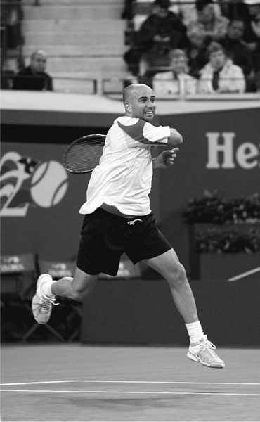
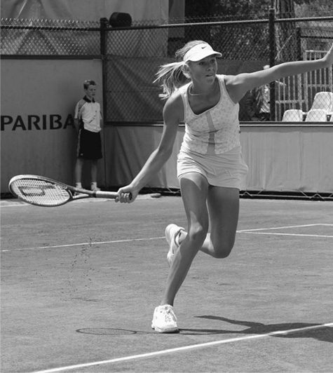
Dụng Cụ Cơ Bản & Luật Chơi
Roger Federer của Thụy Sĩ, nhà vô địch Wimbledon 2003 và 2004, giao bóng
The first Open tournament was held at Wimbledon in 1968. [Art Seitz] EVER SINCE the first tennis games were played on a grass court in England during the late nineteenth century, the sport of tennis has intrigued sports enthusiasts around the world. Today tennis is highly organized.
trước Andy Roddick người Mỹ trong trận bán kết tại giải Wimbledon nổi tiếng
Tòa án trung tâm. Giải Open đầu tiên được tổ chức tại Wimbledon vào năm 1968.
Kể từ khi trận đấu quần vợt đầu tiên được diễn ra trên sân cỏ ở Anh vào cuối thế kỷ 19, môn thể thao quần vợt đã thu hút những người đam mê thể thao trên khắp thế giới. Ngày nay quần vợt được tổ chức rất chặt chẽ. Các cuộc thi bao gồm từ các giải đấu cấp câu lạc bộ đến các giải đấu địa phương và từ các giải đấu cấp bang, quốc gia đến các giải vô địch chuyên nghiệp, chẳng hạn như bốn giải Grand Slam nổi tiếng: Wimbledon, Mỹ mở rộng, Pháp mở rộng và Úc mở rộng.
Competitions range from club tournaments to local leagues and from state and national tournaments to professional championships, such as the four famous Grand Slams: Wimbledon, the U.S. Open, the French Open, and the Australian Open. Equipment THE RACQUET Tennis is a game that combines power and feel. If you have a powerful body and an aggressive game, choose a stiff racquet and tight strings.
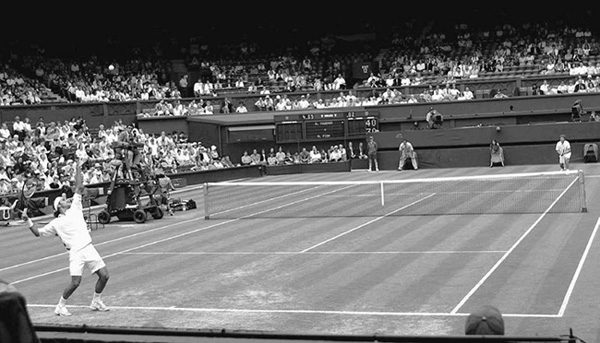
Thiết bị
Cây vợt
Quần vợt là môn thể thao kết hợp giữa sức mạnh và cảm giác. Nếu bạn có thân hình cường tráng và lối chơi năng nổ, hãy chọn cây vợt cứng và dây chặt. Nếu bạn thích chơi một cách khéo léo hơn là dùng lực, hãy chọn một cây vợt linh hoạt với độ căng vừa phải.
If you prefer to play with finesse rather than force, choose a flexible racquet with moderate tension. The area in the middle of the strings is called the sweet spot because it’s the most responsive when hitting the ball.
Khu vực ở giữa dây được gọi là điểm ngọt vì nó phản ứng nhanh nhất khi đánh bóng. Vợt linh hoạt có điểm ngọt lớn hơn. Mỗi thương hiệu đều có điểm độc đáo riêng về mức độ hấp dẫn của nó. Ý tưởng cho rằng bạn phải đánh bóng bằng tâm vợt đã có từ lâu đời. Trong các cây vợt hiện đại, đặc biệt là những cây vợt được căng bằng công nghệ cao, dây mỏng hơn, vùng phản hồi tốt gần như kéo dài đến tận khung. Thực tế, việc đánh bóng vào khoảng giữa tâm dây và mép khung giúp vợt có cảm giác ổn định nhất.
Flexible racquets have a larger sweet spot. Each brand is unique in terms of how large the sweet spot is. The idea that you have to hit the ball with the center of the racquet is an old one. In modern racquets, especially those strung with high-tech, thinner strings, the area of good response extends almost to the frame. In fact, hitting the ball about halfway between the center of the strings and the edge of the frame makes the racquet feel most stable.
Từ vợt ban đầu xuất phát từ từ tiếng Ả Rập rāhah, và gần đây hơn từ từ raquette trong tiếng Pháp Trung cổ, cả hai đều có nghĩa là lòng bàn tay và vì lý do chính đáng—quần vợt đã từng được chơi bằng tay. Mặc dù trò chơi bây giờ được chơi bằng một cây vợt, nhưng vẫn hữu ích nếu coi cây vợt của bạn như một phần mở rộng của bàn tay bạn.
The word racquet originally comes from the Arabic word rāhah, and more recently from the Middle French word raquette, both meaning palm of the hand, and for good reason—tennis was once played with the hand. Although the game is now played with a racquet, it is still useful to think of your racquet as an extension of your hand. Racquet Sizes Racquets come in an ever-increasing variety of sizes, shapes, and materials, which can make choosing one a puzzle. Modern racquets can be as light as 8 ounces, with the average around 10 to 12 ounces.
Kích cỡ vợt
Vợt ngày càng có nhiều kích cỡ, hình dạng và chất liệu khác nhau, điều này có thể khiến việc chọn vợt trở thành một câu đố. Cây vợt hiện đại có thể nhẹ tới 8 ounce, trung bình khoảng 10 đến 12 ounce. Chiều dài tối đa là 29 inch. Diện tích dây tối đa để thi đấu theo giải đấu không được dài hơn 15½ inch x rộng 11½ inch. Kích thước tay cầm dành cho người lớn bắt đầu ở mức 4⅛ inch xung quanh tay cầm, sau đó là 4¼, 4⅓, 4½ và cao hơn.
The maximum length is 29 inches. The maximum string area for tournament play cannot be more than 15½ inches long by 11½ inches wide. Adult grip sizes start at 4⅛ inches around the handle, then 4¼, 4⅓, 4½, and up. The parts of a tennis racquet. Shorter racquets with proportionally larger heads help teach children and build their confidence.
Các bộ phận của vợt tennis.
Vợt ngắn hơn với đầu vợt tương ứng lớn hơn giúp dạy trẻ em và
xây dựng sự tự tin của họ.
Những cây vợt phổ biến nhất dành cho người lớn không chuyên nghiệp là những cây vợt có đầu lớn hơn, lên tới 110 (diện tích dây tính bằng inch vuông) và nặng khoảng 10 đến 11 ounce. Các chuyên gia hàng đầu có xu hướng sử dụng vợt cỡ trung, lên tới 107 inch vuông. Những cây vợt có đầu lớn và kích thước tay cầm nhỏ, thoải mái vừa vặn với kích thước bàn tay là dễ sử dụng nhất đối với hầu hết người chơi. Nhìn chung, hãy chọn cây vợt mang lại cảm giác tốt nhất khi cầm vợt thoải mái. Nếu có thể, hãy thử vài cái trước khi mua và chơi thử những cái mà bạn cảm thấy tốt nhất. Mỗi thương hiệu có một cảm giác khác nhau đáng ngạc nhiên.
The most popular racquets for non-pro adults are those with larger heads, up to 110 (which refers to the string area in square inches) and weighing about 10 to 11 ounces. Top pros tend to use midsize racquets, up to 107 square inches. Racquets with large heads and small, comfortable grip sizes fitted to the size of the hand are easiest for most players. Overall, choose the racquet that feels best when holding it comfortably loose. If you can, try out several before buying one, and test-play those that feel best. Each brand has a surprisingly different feel.
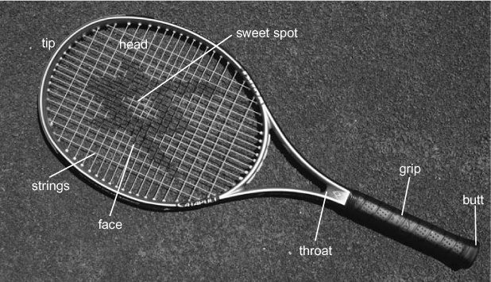
Cầm ngắn trên vợt
Đối với một số trẻ em và người lớn, việc bắt đầu chơi quần vợt sẽ dễ dàng hơn bằng cách bị nghẹn cây vợt đang giữ vợt giữa cổ họng và cán vợt. Vị trí này giúp người mới tập thể thao có thể kiểm soát bóng dễ dàng hơn. Ngoài ra, xu hướng đập bóng cũng ít hơn. Ngay khi bạn đánh thành công, hãy trượt dần tay xuống cán vợt cho đến khi bạn đạt được vị trí cầm vợt bình thường được mô tả trong Chương 4, Cú thuận tay.
Choking Up on the Racquet For some children and adults, it’s easier to start playing tennis by choking up on the racquet, which is holding the racquet between the throat and the grip. This position makes it easier for a person new to the sport to control the ball. Also there is less of a tendency to swat at the ball. As soon as you’re hitting successfully, gradually slide your hand down the handle until you reach the normal grip position described in Chapter 4, The Forehand.
Một số người thích bắt đầu với bàn tay gần cổ vợt hơn, những người khác ở giữa và những người khác trực tiếp trên cán vợt. Thay đổi vị trí của bàn tay cho đến khi bạn tìm được vị trí thoải mái và mang lại cho bạn khả năng kiểm soát tốt nhất. Sau một vài lần thử, bạn sẽ biết điều gì khiến bạn cảm thấy tốt nhất ở giai đoạn hiện tại. Một số người chơi thực hiện tất cả các bài tập cầm vợt bằng cách siết chặt vợt. Điều này cũng hoàn toàn ổn. Bạn sẽ xây dựng được sự tự tin khi tiến bộ, vì vậy hãy làm theo bản năng của mình.
Some people like to start with the hand closer to the throat of the racquet, others midway, and others directly on the racquet grip. Vary the position of your hand until you find a position that’s comfortable for you and gives you the most control. After a few tries, you will know what feels best at your current stage. Some players go through all the drills gripping the racquet by choking up. This is perfectly all right, too. You’ll build confidence as you progress, so follow your instincts.
Chơi như dân chuyên nghiệp
Kích thước tay cầm
Kích thước tay cầm thường bắt đầu ở chu vi 4⅛ inch, tăng dần lên 4¼, 4⅜, 4½, 4⅝ và 4¾. Chúng thường được gọi là kích thước tay cầm lần lượt là 1, 2, 3, 4, 5 và 6. Sự đồng thuận trong ngành là tay cầm phải đủ lớn để chừa một khoảng trống giữa đầu ngón giữa và phần đệm ngón tay cái có chiều rộng bằng ngón trỏ của người chơi.
PLAY LIKE THE PROS GRIP SIZE Grip sizes generally start at a circumference of 4⅛ inches, increasing to 4¼, 4⅜, 4½, 4⅝, and 4¾. These are usually called grip sizes 1, 2, 3, 4, 5, and 6, respectively. The consensus within the industry is that the grip must be large enough to leave a space between the tip of the middle finger and the thumb pad that is the width of the player’s index finger.
Tôi thấy quy tắc này phản tác dụng, đặc biệt với những kỹ thuật hiện đại, hiệu quả được mô tả trong cuốn sách này. Với kích thước tay cầm như vậy, người chơi cần tăng độ chặt tay cầm lên đáng kể để kiểm soát vợt. Kích thước tay cầm nhỏ hơn, cho phép đầu ngón giữa gần với phần ngón tay cái, giúp người chơi giữ vợt lỏng hơn, mang lại cảm giác tốt hơn về vị trí của vợt. Hơn nữa, kích thước tay cầm nhỏ hơn giúp chơi trên lưới dễ dàng hơn, trong khi tay cầm lớn hơn khiến việc chơi trên lưới trở nên cồng kềnh. Cuối cùng, kích thước cán vợt nhỏ hơn cho phép những thay đổi nhỏ về cách cầm vợt trở nên tự động, làm cho vợt, đặc biệt là các mẫu có trọng lượng nhẹ hơn, có cảm giác giống như những cây đũa thần tuyệt vời.
I find this rule counterproductive, especially with the modern, efficient techniques described in this book. With such grip sizes, a player needs to increase the tightness of his grip considerably to control the racquet. A smaller grip size, which allows the tip of the middle finger to be close to the thumb pad, enables the player to keep a looser grip on the racquet, resulting in a better feel of its position. Furthermore, smaller grip sizes make it easier to play at net, while larger grips make net play cumbersome. Lastly, smaller grip sizes allow slight changes of grip to become automatic, making racquets, especially lighter-weight models, feel like magnificent magic wands. I have a very large hand.
Tôi có bàn tay rất to. Trở lại những ngày tôi đi lưu diễn, tôi sử dụng một cây vợt gỗ có cán vợt lớn (4¾ inch), dẫn đến nhiều rắc rối ở khuỷu tay. Nhờ sự phát triển của đầu vợt lớn hơn, khá linh hoạt và việc sử dụng kích thước tay cầm nhỏ hơn (4¼ inch), tôi không còn bị khuỷu tay quần vợt nữa, ngay cả khi chơi trong thời gian dài tới bốn giờ. Và tôi tận hưởng cảm giác bóng tốt hơn.
Back in the days when I was on tour, I used a large-grip (4¾ inches) wooden racquet, which resulted in plenty of elbow trouble. Thanks to the development of larger racquet heads, which are fairly flexible, and the use of a smaller grip size (4¼ inches), I no longer suffer from tennis elbow, even when playing for as long as four hours. And I enjoy a greater feel for the ball. PLAY LIKE THE PROS RACQUETS AND STRING TENSION Both the ball and strings deform on impact.
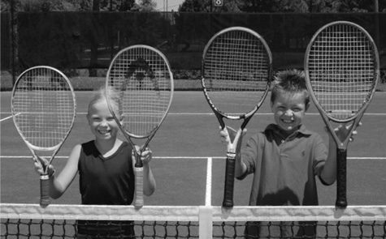
Chơi như dân chuyên nghiệp
Vợt và độ căng dây
Cả quả bóng và dây đều biến dạng khi va chạm. Dây lỏng hơn sẽ biến dạng nhiều hơn và trong thời gian dài hơn dây chặt. Vì vậy, độ căng của dây ảnh hưởng đến phản ứng của vợt. Hơn nữa, dây của các thương hiệu khác nhau có thể có những phản hồi rất khác nhau, dựa trên thành phần và độ dày của chúng.
Looser strings deform more and for a longer period of time than tight strings. Therefore, string tension affects the response of the racquet. Furthermore, strings of different brands may have widely differing responses, based on their composition and thickness.
Dây được làm bằng nylon, polyester, Kevlar hoặc ruột tự nhiên từ ruột bò. Ruột tự nhiên là sợi dây phản ứng nhanh nhất nhưng lại có độ bền ngắn nhất. Độ dày của dây, được gọi là thước đo, được đo xung quanh chu vi. Đồng hồ đo có phạm vi từ một inch (15 thước) ở độ dày nhất đến (19 thước) ở mức mỏng nhất, phản ứng nhanh nhất. Quy ước sử dụng chữ “L” sau số đo có nghĩa là một nửa số đo. Ví dụ: 16L có nghĩa là chu vi inch.
Strings are made of nylon, polyester, Kevlar, or natural gut from cow intestines. Natural gut is the most responsive string but the shortest lasting. String thickness, called gauge, is measured around the circumference. Gauges range from of an inch (15-gauge) at the thickest to (19-gauge) at the thinnest, which is the most responsive.
Khung vợt có phản ứng rất khác nhau giữa các thương hiệu và mẫu mã dựa trên kích thước của đầu và vật liệu khung. Những khác biệt này dẫn đến mức độ linh hoạt khác nhau. Kích thước dao động từ khoảng 90 inch vuông của giường dây đến khoảng 110 inch vuông— đầu càng lớn thì vợt càng linh hoạt. Trong nhiều thập kỷ, các nhà sản xuất đã tạo ra những cây vợt cứng hơn, đó là giải pháp một lần cho việc thiếu kỹ năng kỹ thuật. Với các kỹ thuật trong cuốn sách này, bạn sẽ phát triển các kỹ năng để sử dụng cây vợt linh hoạt và nhạy bén nhất. Độ căng của dây đóng một vai trò quan trọng đối với cả sức mạnh và cảm giác khi chơi trò chơi của bạn. Mặc dù độ căng dây thấp hơn dường như tạo ra nhiều vận tốc bóng – sức mạnh hơn – nhưng điều này không hẳn đúng. Một cầu thủ có thể sử dụng lực cơ gấp đôi nhưng không thể đạt được tốc độ bóng gấp đôi. Các dây bị biến dạng do va chạm có thể bắt đầu trở lại hình dạng ban đầu trong khi vẫn nén quả bóng, khiến quả bóng có vẻ như đang dính vào mặt dây và ảnh hưởng đến tốc độ của quả bóng. Hiện tượng này khác nhau tùy theo loại dây và độ căng cũng như việc người chơi đánh bóng vào điểm chết hay về phía mặt dây (lựa chọn ưa thích của các chuyên gia hàng đầu). Người chơi có thể không nhận ra tại sao hai cú vung bóng có vẻ giống nhau lại tạo ra kết quả về tốc độ bóng và do đó vị trí bóng hoàn toàn khác nhau.
The convention of using “L” after a gauge number signifies a half measure. For example, 16L means a circumference of inches. Racquet frames have widely differing responses among brands and models based on the size of the head and the frame material. These differences result in varying degrees of flexibility. Sizes range from approximately 90 square inches of string bed to about 110 square inches— the larger the head, the more flexible the racquet. For decades, manufacturers pushed stiffer racquets, which were a one-shot solution to a lack of technical skill. With the techniques in this book, you’ll develop the skills to use the most flexible and responsive racquet. String tension plays an important role in both the power and feel of your game. While lower string tension may seem to create more ball velocity— power—this is not necessarily true. A player may use twice the muscular force yet not achieve twice the ball speed. The strings, deformed by the impact, may start to return to their original shape while still compressing the ball, making it seem as if the ball is sticking to the string bed, and affecting the speed of the ball. This phenomenon differs with string type and tension and also whether a player is hitting the ball dead center or toward the side of the string bed (the preferred choice for top pros). The player may not realize why two apparently equal swings produce quite different ball speed results and therefore placement.
Những tay vợt hàng đầu chọn vợt như thế nào? Dễ dàng—bằng cảm giác. Họ thử một cây vợt và cảm thấy nó tốt hoặc không. Điều tương tự cũng xảy ra với độ căng của dây. Nếu vợt cho cảm giác khá tốt, người chơi chuyên nghiệp có thể thử nó ở độ căng dây hơi khác một chút. Nếu cảm thấy vợt quá nhẹ, anh ta có thể dán một dải băng chì nhỏ lên khung ở các vị trí khác nhau để tăng trọng lượng của vợt.
How do top players choose their racquets? Easily—by feel. They try a racquet, and either it feels good or it doesn’t. The same goes for string tension.
Với nhiều biến số như vậy, sự lựa chọn dễ dàng nhất—và khuyến nghị của tôi cho một cây vợt—là một cây vợt có khung lớn được xâu bằng ruột tổng hợp cỡ 17 (cỡ 16 quá dày, cỡ 18 bị đứt quá nhiều).
If the racquet feels fairly good, the pro may try it at a slightly different string tension. If the racquet feels too light, he may put a small strip of lead tape on the frame at different locations to increase its weight.
Nếu bạn là người chơi cảm ứng, không có cú vung vợt lớn, hãy căng vợt ở mức thấp nhất của độ căng được khuyến nghị. Tôi sử dụng dây ruột tổng hợp cỡ 17 được xâu ở lực căng 50 pound trên dây chính và 52 pound trên dây chéo. Khi xâu dây như thế này, kết quả là tổng cộng là 52 pound, vì các dây chéo sẽ thắt chặt các dây chính đã được xâu.
With this wide range of variables, the easiest choice—and my recommendation for a racquet—is a large-framed racquet strung with 17- gauge, synthetic gut (16-gauge is too thick, 18-gauge breaks too much). If you are a touch player, without a big swing, string the racquet at the low end of the recommended tension. I use 17-gauge, synthetic-gut string strung at 50 pounds of tension on the main strings and 52 pounds on the cross strings. When strung like this the result is 52 pounds overall, as the cross strings tighten the already strung main strings.
Nếu bạn là một người chơi khó, hãy sử dụng dây cỡ 17, nhưng độ căng của dây phải gần với mức cao hơn của độ căng được khuyến nghị cho khung của bạn, chẳng hạn như 60 pound trên dây chính và 62 pound trên dây chéo.
If you are a hard hitter, stick with the 17-gauge string, but the string tension should be closer to the higher end of the recommended tension for your frame, such as 60 pounds on the main strings and 62 pounds on the cross strings. If you are an average power hitter with a long swing or a big topspin player, go halfway between the recommended high- and low-end tensions.
Nếu bạn là một người đánh có sức mạnh trung bình với cú vung bóng dài hoặc một cầu thủ có xoáy lên lớn, hãy thực hiện nửa chừng giữa mức căng thẳng cao nhất và thấp nhất được khuyến nghị.
What do some of the top pros use? Professional players tend to change the string tension in response to the court surface and type of ball being used in a tournament.
Một số chuyên gia hàng đầu sử dụng gì?
These players have professional stringers who string their racquets at the tension they request for each venue.
Các cầu thủ chuyên nghiệp có xu hướng thay đổi độ căng của dây tùy theo mặt sân và loại bóng được sử dụng trong giải đấu. Những người chơi này có những người đánh dây chuyên nghiệp, họ sẽ căng vợt theo độ căng mà họ yêu cầu đối với từng địa điểm.
Choking up on the racquet. THE BALL Competition tennis balls are yellow, weigh about 2 ounces, and have a diameter between 2.5 and 2.875 inches.
Nghẹn vợt.
Quả bóng
Quả bóng tennis thi đấu có màu vàng, nặng khoảng 2 ounce và có đường kính từ 2,5 đến 2,875 inch. Được phép thay đổi một chút về kích thước và trọng lượng khi thi đấu trong các giải đấu, thậm chí cả các giải Grand Slam, nhưng tất cả các quả bóng đều phải có đặc điểm nảy cụ thể.
Slight variations in size and weight are allowed in tournament play, even the Grand Slams, but all balls must have specific bounce characteristics. Foam training balls are useful because they don’t hurt if they hit you, and they allow you to practice at home without damaging the furniture. Tennis balls are designed either for hard courts with an asphalt or cement base, or for softer indoor and outdoor clay courts.
Bóng tập bằng bọt rất hữu ích vì chúng không gây đau nếu đánh vào bạn và
chúng cho phép bạn tập luyện ở nhà mà không làm hỏng đồ đạc.
Bóng quần vợt được thiết kế cho sân cứng có nền nhựa đường hoặc xi măng, hoặc dành cho sân đất nện mềm hơn trong nhà và ngoài trời. Bạn có thể sử dụng quả bóng tập lớn hơn—3,5 inch—làm bằng xốp, có độ nảy như quả bóng thông thường nhưng cực kỳ nhẹ. Tôi nhận thấy những quả bóng sân đất nện thông thường dễ cầm trên tay hơn nhiều, mặc dù chúng không tồn tại lâu như những quả bóng sân cứng. Những quả bóng không chịu áp lực được làm bằng cao su cứng hơn và cứng hơn trên cánh tay.
You can use larger—3.5 inches—training balls made of foam, which bounce like a regular ball but are extremely light. I have found regular clay-court balls much easier on the arm, although they do not last as long as hard-court balls. Pressureless balls are made of harder rubber and are harder on the arm. THE COURT Originally, in the 1800s, the tennis court was designed only for singles play, where one person played against another. Players later added an area 4½ feet wide along each side of the court to make it competitive and roomy enough for two people playing on each side of the net (called doubles).
Sân đấu
Ban đầu, vào những năm 1800, sân quần vợt được thiết kế chỉ để chơi đơn, trong đó một người đấu với người khác. Sau đó, người chơi đã bổ sung thêm một khu vực rộng 4,5 feet dọc theo mỗi bên của sân để tạo sự cạnh tranh và đủ rộng cho hai người chơi ở mỗi bên lưới (được gọi là đánh đôi). Đối với đánh đơn, sử dụng các đường bên trong dọc theo các cạnh của sân, được gọi là đường đánh đơn. Họ tạo ra một khu vui chơi rộng 27 feet và dài 78 feet. Đối với nội dung đánh đôi, hãy sử dụng đường biên bên ngoài hoặc đường đôi để có khu vực chơi rộng hơn.
For singles, use the inside lines down the edges of the court, called the singles lines. They create a playing area 27 feet wide and 78 feet long. For doubles, use the outer sidelines, or the doubles lines, for a wider playing area. The word court was first used by Italians two thousand years ago when they said cortem to refer to an enclosed area. The net is 3½ feet high at the net posts. To keep the net taut, a vertical strap pulls down on the net in the center, bringing it to the regulation height of 3 feet. The lines establish boundaries for singles and doubles play and mark the service line (the maximum depth of the serve) and the baseline (the maximum depth of all other shots).
Từ tòa án lần đầu tiên được người Ý sử dụng cách đây hai nghìn năm khi họ nói cortem để chỉ một khu vực khép kín.
If the ball bounces beyond a boundary
Lưới cao 3½ feet tại các cột lưới. Để giữ lưới căng, một sợi dây dọc kéo lưới xuống ở giữa, đưa lưới lên độ cao quy định là 3 feet.
line, it’s out of play. If it touches the line, it’s considered good—to have landed within that area.
Các vạch thiết lập ranh giới cho các trận đấu đơn và đôi và đánh dấu
đường giao bóng (độ sâu tối đa của cú giao bóng) và đường cơ sở (đường
độ sâu tối đa của tất cả các ảnh khác). Nếu bóng nảy ra ngoài ranh giới
dòng, nó không còn hoạt động nữa. Nếu nó chạm vào đường kẻ thì được coi là tốt—có
hạ cánh trong khu vực đó.
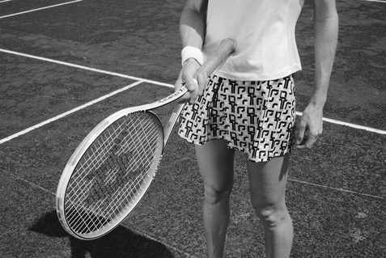
Trò chơi quần vợt
Mục đích của trò chơi là đánh bóng qua lưới để cú đánh của bạn chạm vào phần sân của đối phương, trong đường biên và đường cơ sở. Khi đối thủ của bạn không thể đánh bóng trở lại sân của bạn trong vòng một lần nảy, bạn sẽ giành được điểm.
The Game of Tennis The purpose of the game is to hit the ball over the net so your shot lands in your opponent’s side of the court, within the sidelines and baseline. When your opponent can’t hit the ball back into your court within one bounce, you win the point. The word tennis is generally attributed to the Anglo-French tenetz, from the French tenez, the imperative of tenir, meaning to hold, receive, take.
Từ tennis thường được gán cho tenetz Anh-Pháp, từ tenez của Pháp, mệnh lệnh của tenir, có nghĩa là giữ, nhận, lấy. Môn thể thao này rất phổ biến với các hiệp sĩ thời trung cổ của Pháp, họ đã nói “Tenez!” cho đối thủ (có nghĩa là “Bạn đây!” hoặc “Bắt!”) trước khi giao bóng. Đúng lúc, cuộc gọi dịch vụ này đến để xác định trò chơi.
The sport was popular with French medieval knights, who said “Tenez!” to an opponent (meaning “Here you are!” or “Catch!”) before serving. In time, this service call came to identify the game. Beware of interfering with a child’s natural stroke development. Small children see the net as a high obstacle and so naturally hit up, bending the arm.
Cẩn thận với việc cản trở sự phát triển đột quỵ tự nhiên của trẻ. Trẻ nhỏ coi lưới là chướng ngại vật cao nên tự nhiên đánh lên, cong tay. Khi họ lớn lên và có được sức mạnh, họ giữ nguyên kiểu đánh và bắt đầu đóng mặt vợt lại để giữ bóng trong sân, thay vì đánh xuống. “Trí nhớ cơ bắp” và khả năng vuốt ve hướng lên trên theo bản năng của chúng đã được thiết lập cho cuộc sống.
As they grow and gain power, they keep the same stroke pattern and start closing the racquet face to keep the ball in the court, rather than hitting down. Their “muscle memory” and instinctive upward stroking have been set for life. A fundamental part of the game that many beginners do not realize is keeping the ball in play—continuing to hit the ball so it falls safely within the court. In my international coaching experience, I’ve noticed that Americans, perhaps influenced by baseball, focus too much on hitting the ball hard. The best way to play, especially in the beginning stages, is to be patient and in control of the ball.
Một phần cơ bản của trò chơi mà nhiều người mới bắt đầu không nhận ra là giữ bóng trong cuộc—tiếp tục đánh bóng để nó rơi an toàn trong sân. Theo kinh nghiệm huấn luyện quốc tế của mình, tôi nhận thấy rằng người Mỹ, có lẽ bị ảnh hưởng bởi bóng chày, tập trung quá nhiều vào việc đánh bóng thật mạnh. Cách tốt nhất để chơi, đặc biệt là trong giai đoạn đầu, là kiên nhẫn và kiểm soát bóng. Không chỉ có nhiều người muốn luyện tập và chơi với bạn hơn mà bạn còn có thể tập luyện nhiều hơn và cuối cùng là thắng được nhiều trò chơi hơn.
Not only will more people want to practice and play with you, but you’ll be able to exercise more and ultimately win more games. When your opponent hits the ball to you, it will: 1. Hit the net and stay on your opponent’s side of the court (you win the point) 2. Land outside the sidelines or the baseline (your point again)
Khi đối thủ đánh bóng vào bạn, nó sẽ:
3.
1. Đánh vào lưới và đứng về phía sân đối phương (bạn thắng điểm) 2. Tiếp đất bên ngoài đường biên hoặc đường cuối sân (điểm của bạn lại)
Come over the net and bounce within the lines on your side (the ball is still in play) At this point, it is your job to return the ball (hit it back).
3. Qua lưới và nảy trong phạm vi đường biên bên mình (bóng vẫn trong cuộc)
4.
Lúc này, nhiệm vụ của bạn là trả bóng lại (đánh lại).
If you hit the ball after it bounces, it’s called a ground stroke, because you stroked (or hit) the ball after it bounced once on the ground
4. Nếu bạn đánh bóng sau khi nó nảy lên thì gọi là cú đánh chạm đất, vì bạn đã vuốt (hoặc đánh) quả bóng sau khi nó nảy lên một lần trên mặt đất
5. If you hit the ball in midair before it bounces, it is called a volley
5. Nếu bạn đánh bóng vào giữa không trung trước khi nó nảy lên thì gọi là cú vô lê
6.
6. Nếu bạn đánh bóng vào lưới, ngoài biên hoặc sau khi bóng đã nảy lần thứ hai, bạn sẽ bị mất điểm
If you hit the ball into the net, out-of-bounds, or after it has bounced a second time, you lose the point
Bắt đầu
Hãy nhớ quản lý thời gian của bạn trên sân. Nếu bạn là người mới bắt đầu, việc học quá nhiều bài học đầu tiên có thể dẫn đến kiệt sức về thể chất hoặc tinh thần. Tôi khuyên bạn nên dành tối đa một giờ trên sân vào ngày đầu tiên. Đối với một số trẻ nhỏ và người lớn ít thể lực hơn, 20 đến 30 phút là đủ. Khi bạn quay lại tòa vào ngày hôm sau, hãy ôn lại những gì bạn đã học được vào ngày đầu tiên trước khi tiếp tục.
GETTING STARTED Be sure to manage your time on the court. If you’re a beginner, overdoing your first lessons can result in physical or mental burnout. I suggest spending a maximum of one hour on the court your first day. For some young children and less fit adults, twenty to thirty minutes is plenty. When you return to the court the next day, go over what you learned the first day before proceeding.
1. Làm chủ các nét, Bài 1
Trong sơ đồ bên dưới, hãy sử dụng đầu ngón tay của bạn như một quả bóng tennis và xem xét từng kết quả trong số sáu kết quả có thể xảy ra cho đến khi bạn ghi nhớ chúng một cách chắc chắn:
1. MASTER THE STROKES, LESSON ONE On the diagram below, use your fingertip as a tennis ball and go through each of the six possible outcomes until you have them firmly in mind: • your opponent’s ball hits the net • your opponent hits the ball out-of-bounds • your opponent hits a good shot and • you return the ball with a ground stroke
- Bóng của đối thủ chạm lưới
- đối thủ của bạn đánh bóng ra ngoài biên
- đối thủ của bạn sút tốt
và
• you return with a volley
- bạn trả bóng bằng cú đánh chạm đất
- bạn trả bóng bằng cú vô lê
- bạn mất điểm khi đánh bóng vào lưới, ngoài biên hoặc sau khi bóng nảy hai lần
Mỗi học sinh có tốc độ học tập khác nhau. Tiếp tục luyện tập cho đến khi bạn đánh được bóng ở vị trí mong muốn và có cảm giác tốt khi thực hiện cú xoay. Thực hiện từng bài tập cho đến khi bạn có thể lặp lại động tác xoay mỗi lần và đạt được kết quả gần như tương tự.
• you lose the point by hitting the ball into the net, out-of-bounds, or after it bounces twice Each student has a different learning speed. Continue a drill until you are hitting the ball where you want and have a good feel for the swing. Do each drill until you can repeat the swing each time and achieve roughly the same results. During the early days of playing tennis you build habits that last a lifetime. Focus on the simple techniques here and don’t do anything else, no matter how good and “knowledgeable” somebody else’s suggestions may seem. Many people who are generous with their advice are not really familiar with teaching tennis in a natural way, no matter how well they play themselves. They may pass on faulty ideas they learned from conventional tennis teaching, and these ideas may impede your progress.
Trong những ngày đầu chơi quần vợt, bạn xây dựng những thói quen tồn tại suốt đời. Hãy tập trung vào các kỹ thuật đơn giản ở đây và đừng làm bất cứ điều gì khác, bất kể đề xuất của người khác có vẻ tốt và “hiểu biết” đến mức nào. Nhiều người hào phóng với lời khuyên của họ chưa thực sự quen với việc dạy tennis một cách tự nhiên, cho dù bản thân họ có chơi tốt đến đâu. Họ có thể truyền lại những ý tưởng sai lầm mà họ học được từ việc dạy quần vợt thông thường và những ý tưởng này có thể cản trở sự tiến bộ của bạn. Với Phương pháp Wegner, bạn có thể học trong vài giờ những điều mà thường phải mất hàng tháng để thành thạo. Nhưng nếu bạn đưa ra những lời khuyên bổ sung hoặc trái ngược nhau, sự tập trung của bạn có thể thay đổi, cuối cùng làm giảm cảm giác của bạn với quả bóng.
With the Wegner Method, you can learn in hours what usually takes months to master. But if you mix in additional or contradictory advice, your focus may change, eventually lessening your feel for the ball. Volley was first used by the Italians several thousand years ago when they would say volare to communicate the idea of flying. Today, in tennis, we use volley to mean hitting the ball on the fly. CHOOSING A GOOD TEACHER Choosing a good teacher, the right teacher, may mean the difference between loving tennis and hating it. There are several traits you should look for when choosing your teacher. • A good teacher spends time assessing a student’s skills, such as hand- eye coordination and balance. The teacher starts students at the lowest level, coaxing them to play so as to evaluate their hand-eye coordination. A few balls tossed to the student, some bouncing high, some low, some close, some far away, will give the teacher a good idea of the student’s abilities. If any of the students have talent, the teacher can move them along faster so as not to bore them if they learn the drills quickly or already have the skills.
Bóng chuyền lần đầu tiên được người Ý sử dụng cách đây vài nghìn năm khi họ nói volare để truyền đạt ý tưởng bay. Ngày nay, trong quần vợt, chúng ta sử dụng bóng chuyền có nghĩa là đánh bóng đang bay.
• A good teacher adjusts the speed of the learning experience to a student’s physical and mental abilities. The teacher introduces new drills at the student’s pace, allowing her to practice each drill until she totally understands it and is confident and comfortable. Only then does he move the student on to a more difficult drill.
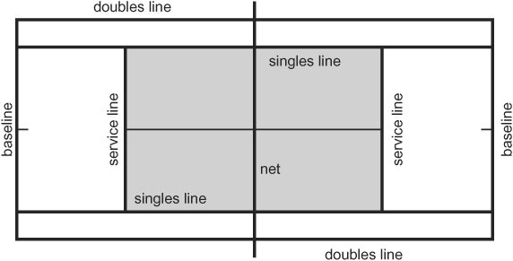
Chọn Thầy Tốt
Chọn một giáo viên giỏi, một giáo viên phù hợp, có thể tạo ra sự khác biệt giữa yêu và ghét quần vợt. Có một số đặc điểm bạn nên tìm kiếm khi chọn giáo viên của mình.
For example, your teacher may have you practice a particular stroke without the ball until your muscles become used to the natural movement and flow. Then he will feed you the ball gently, perhaps having you just catch it until you can do so proficiently.
- Một giáo viên giỏi dành thời gian đánh giá các kỹ năng của học sinh, chẳng hạn như phối hợp tay và mắt và giữ thăng bằng. Giáo viên bắt đầu học sinh ở cấp độ thấp nhất, dỗ dành các em chơi để đánh giá khả năng phối hợp tay và mắt của các em. Một vài quả bóng được ném cho học sinh, một số nảy cao, một số thấp, một số gần, một số xa, sẽ giúp giáo viên hình dung rõ về khả năng của học sinh. Nếu học sinh nào có năng khiếu, giáo viên có thể hướng dẫn các em nhanh hơn để không gây nhàm chán nếu các em học nhanh hoặc đã có kỹ năng.
- Một giáo viên giỏi điều chỉnh tốc độ trải nghiệm học tập phù hợp với khả năng thể chất và tinh thần của học sinh. Giáo viên giới thiệu các bài tập mới theo tốc độ của học sinh, cho phép học viên thực hành từng bài tập cho đến khi hoàn toàn hiểu bài và cảm thấy tự tin, thoải mái. Chỉ sau đó ông mới chuyển học sinh sang một bài tập khó hơn. Ví dụ, giáo viên có thể yêu cầu bạn thực hành một cú đánh cụ thể mà không có bóng cho đến khi cơ của bạn quen với chuyển động và chuyển động tự nhiên. Sau đó, anh ấy sẽ đưa bóng cho bạn một cách nhẹ nhàng, có thể để bạn bắt bóng cho đến khi bạn có thể thực hiện thành thạo. Sau đó, anh ta có thể tiến hành bài học bằng cách ném bóng cho bạn để bạn có thể đánh nó bằng cú đánh mà bạn vừa luyện tập. Và cứ thế, luôn làm mọi việc trở nên dễ dàng để bạn giành chiến thắng trên mọi chặng đường.
- Một giáo viên giỏi có nhiều kiên nhẫn, nhận thức và hiểu biết. Cần có tất cả những phẩm chất này để đánh giá và phát triển khả năng của học sinh đồng thời xây dựng sự tự tin của học sinh. Ngay cả khi bạn bị suy giảm nghiêm trọng về cảm giác chuyển động và định hướng không gian, một giáo viên giỏi thể hiện sự kiên nhẫn, hiểu biết và thực hiện các kỹ thuật chính xác sẽ khiến bạn yêu thích quần vợt đến hết cuộc đời.
Các bài học nhóm thường không đạt tỷ lệ thành công 100% vì giáo viên không điều chỉnh cho phù hợp với từng học sinh và có thể chuyển sang bài tập tiếp theo trong khi một số học sinh vẫn gặp khó khăn với bài tập trước. Nếu điều này xảy ra với bạn, tốt hơn hết bạn nên tham gia các lớp học riêng. Ngoài ra, đôi khi một nhóm không hòa hợp, trong trường hợp đó giáo viên nên chia nhóm thành những nhóm nhỏ hơn có khả năng ngang nhau.
Then he may progress the lesson by throwing the ball to you so you can hit it with the stroke you’ve just practiced. And so on, always making it easy so you win all the way. • A good teacher has plenty of patience, awareness, and understanding. It takes all of these qualities to assess and develop a student’s ability while also building up his or her confidence. Even if you are severely impaired in your sense of movement and spatial orientation, a good teacher showing patience and understanding and relaying correct techniques will have you loving tennis for the rest of your life. Group lessons usually fail to have a 100 percent success rate because the teacher is not adjusting to individual students and may move to the next drill while some students are still having difficulty with the previous one.
Tôi đã dạy thành công những người nói với tôi rằng họ hoàn toàn không có sự phối hợp. Bằng sự kiên nhẫn và siêng năng, tôi đã tìm thấy tỷ lệ hấp thụ thông tin mới của mỗi học sinh và từng chi tiết một, tôi đã xây dựng sự phối hợp của họ trước tiên và sau đó là trò chơi của họ. Chỉ trong khoảng thời gian ngắn như một giờ, họ đã trở thành những con người khác, tự tin rằng mình có thể biểu diễn. Vì vậy, tôi biết phương pháp giảng dạy này có tác dụng. Khi dạy nhóm, tôi thường ghép học sinh thành cặp để người chơi giỏi hơn sẽ kéo người kém hơn lên. Trao quyền ngay lập tức—bây giờ học sinh giỏi hơn sẽ trở thành huấn luyện viên! Bạn cũng có thể yêu cầu giáo viên của mình áp dụng cách tiếp cận này.
If this happens to you, you may be better off taking private lessons. Also, sometimes a group is not harmonious, in which case the teacher should divide the group into smaller groups of equal ability. I have taught people successfully who told me they were totally uncoordinated. Using patience and diligence, I found each student’s absorption rate for new information and, detail by detail, I built their coordination first and then their game. Within as short a time as one hour, they were different people, confident that they could perform. So I know this approach to teaching works. When teaching a group, I often pair up students so the better player brings the lesser one up. Instant empowerment—now the better student becomes a coach! This approach is something you could ask your teacher to adopt, too. Tennis is easy to learn and easy to teach.
Quần vợt rất dễ học và dễ dạy. Bằng cách áp dụng các nguyên tắc của Phương pháp Wegner, sẽ không có thất bại. Mọi người đều học hỏi, mọi người đều tiến bộ. Tại sao? Bởi vì phương pháp này là cách chơi tự nhiên và là cách sử dụng cơ bắp hiệu quả nhất. Ngay từ đầu, mỗi người chơi theo cách riêng của mình, thể hiện cảm nhận và sở thích của riêng mình.
By applying the principles of the Wegner Method, there will be no failures. Everyone learns, everyone improves. Why? Because this method is the natural way to play and the most efficient way to use muscles.
Những nguyên tắc này, được đặt ra ngay từ đầu, làm cho nền tảng, cảm nhận và sự phối hợp của bạn trở nên rất vững chắc. Bạn cung cấp tài năng và những kỹ thuật này sẽ làm phần còn lại.
Right from the start, everyone plays in his or her own way, expressing his or her own feel and preference. These principles, laid down at the beginning, make your foundation, feel, and coordination very strong. You provide the talent, and these techniques will do the rest.
Chơi như dân chuyên nghiệp
Nó Dễ Hơn Bạn Nghĩ
Trong gần một thế kỷ, quần vợt được coi là môn thể thao khó học. Bạn được khuyến khích lưu ý đến vị trí đặt cánh tay và bàn chân của mình cũng như theo dõi khả năng giữ thăng bằng, chuyển trọng lượng, động tác bằng chân, xoay người, v.v. Các hiệp hội giáo viên quần vợt đã nuôi dưỡng niềm tin rằng bạn không thể chơi như những người chuyên nghiệp. Cả hai tiền đề này đều sai, nhưng vẫn còn thịnh hành trên khắp thế giới.
PLAY LIKE THE PROS IT’S EASIER THAN YOU THINK For close to a century, tennis has been considered a difficult sport to learn. You are encouraged to be mindful of where to place your arms and feet and to watch your balance, weight transfer, footwork, swing, and more. Tennis teacher associations have cultivated the belief that you can’t play like the pros. Both these premises are false, and yet are still in vogue around the world. The truth is that tennis is a simple game and easy to learn.
Sự thật là quần vợt là một môn thể thao đơn giản và dễ học. Chỉ cần quan sát những cầu thủ hàng đầu để biết họ chơi tự nhiên và trôi chảy như thế nào—một phong cách mà bạn cũng có thể đạt được.
Just watch the top players to see how naturally and fluidly they play—a style that you too can achieve. At such a high level of play, of course, pros make great efforts both to reach a distant ball and to add speed to their shots. But, in terms of attention, you should concentrate solely on finding the ball well and playing it back with the racquet as if you were playing it with your hand.
Tất nhiên, ở trình độ chơi cao như vậy, các vận động viên chuyên nghiệp phải nỗ lực rất nhiều để tiếp cận một quả bóng ở xa và tăng thêm tốc độ cho các cú đánh của họ. Tuy nhiên, về mặt chú ý, bạn chỉ nên tập trung vào việc tìm bóng tốt và đánh lại bằng vợt như thể bạn đang chơi bằng tay. Người chơi chuyên nghiệp không lo lắng về vị trí cơ thể; họ chỉ cần giữ thăng bằng trong khi cố gắng tối ưu hóa các cú đánh của mình, cho dù họ đang đứng hay đang chạy đuổi theo quả bóng. Về cơ bản, họ muốn bàn tay ở gần quả bóng, để họ có thể tìm bóng tốt hơn bằng vợt và dễ dàng đánh mạnh như họ muốn. Bạn có thể học được điều này một cách nhanh chóng nếu bạn đơn giản hóa mọi thứ. Thực hành đánh bóng trong khi bạn đi tới, lùi và sang mỗi bên sân mà không chú ý đến đôi chân của mình, giống như khi bạn chỉ đơn giản là đi bộ trong bếp hoặc chạy bộ trong công viên. Điều này dạy cho bạn sự độc lập của cánh tay và bàn tay với phần còn lại của cơ thể, do đó bạn có thể kiểm soát các cú đánh của mình ngay cả khi cơ thể duỗi thẳng và chân bơm nhanh.
Pro players don’t worry about body position; they just balance themselves while trying to optimize their strokes, whether they are standing or on the run chasing the ball. They basically want the hand near the ball, so they can find the ball better with the racquet and make it easier to hit it as hard as they want. You can learn this focus quickly if you simplify things. Practice hitting balls while you walk forward, backward, and to each side of the court, without any attention on your feet, just as if you were simply walking in your kitchen or jogging in the park. This teaches you an independence of the arms and hands from the rest of your body, so you can control your shots even with the body extended and the legs pumping fast. Over time, your body will learn how to help the stroke. You’ll feel natural, balanced, safe, and increasingly powerful, but always in control. 3 strokes Roger Federer. [Art Seitz] Flow and Natural Strokes TENNIS IS a flowing game, a game of your togetherness with the ball. While the ball is in play, think of nothing—just observe, run, feel, and control the ball. Your racquet is an extension of your hand. The rest of your body accompanies the hand naturally, so you don’t have to worry about coordination or footwork. You probably learned to move like that years ago, when you learned to walk, to run, or to catch something falling or thrown to you. Nobody needs to tell you now that your right foot takes one step, then your left foot takes one step, and so on.
Theo thời gian, cơ thể bạn sẽ học cách giúp đỡ cơn đột quỵ. Bạn sẽ cảm thấy tự nhiên, cân bằng, an toàn và ngày càng mạnh mẽ nhưng luôn trong tầm kiểm soát.
Nobody should even make you think of that, changing your focus from controlling the ball or distracting your attention with things you do naturally anyway. THE FOREHAND Assuming you are right-handed, when you hit a ball to the right side of your body, it is called a forehand shot because the fore or front part of your right
Các Cú Đánh
Dòng chảy và nét tự nhiên
TENNIS LÀ một trò chơi trôi chảy, một trò chơi thể hiện sự hòa hợp của bạn với quả bóng. Khi bóng đang trong cuộc, đừng nghĩ gì cả—chỉ cần quan sát, chạy, cảm nhận và kiểm soát bóng. Cây vợt của bạn là một phần mở rộng của bàn tay của bạn. Phần còn lại của cơ thể sẽ đồng hành với bàn tay một cách tự nhiên nên bạn không phải lo lắng về việc phối hợp hay động tác bằng chân. Có lẽ bạn đã học cách di chuyển như vậy từ nhiều năm trước, khi bạn học cách đi, chạy hoặc bắt một vật gì đó rơi hoặc ném vào mình.
hand is leading the shot. For more, see Chapter 4, The Forehand. Forehand: the palm of the hand is facing the ball. THE BACKHAND When you stroke a ball coming in on your left side, it is called a backhand shot because the stroke is led with the back side of your right hand. Ground strokes—the forehand and back-hand—are hit after the ball has bounced once in your court. Volleys are hit in the air before the bounce.
Bây giờ không ai cần phải nói với bạn rằng chân phải của bạn bước một bước, sau đó chân trái của bạn bước một bước, v.v. Thậm chí không ai có thể khiến bạn nghĩ đến điều đó, thay đổi sự tập trung của bạn từ việc kiểm soát bóng hoặc đánh lạc hướng sự chú ý của bạn bằng những việc bạn làm một cách tự nhiên.
The word shot describes the fact that you have hit a tennis ball with a racquet. It comes from English spoken 1,500 years ago, when ge-sceot referred to an implement used for shooting. Strike, stroke, and hit all describe the action of hitting the ball. Think of stroking the ball rather than striking it, to increase your feel of the racquet brushing the ball.
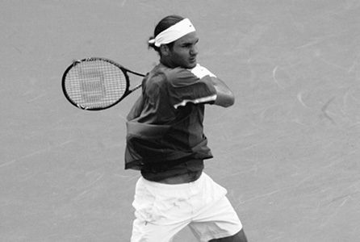
Cú thuận tay
Giả sử bạn thuận tay phải, khi bạn đánh bóng về phía bên phải cơ thể, nó được gọi là cú đánh thuận tay vì phần trước hoặc phần trước của tay phải của bạn đang dẫn đầu cú đánh. Để biết thêm, xem Chương 4, Cú thuận tay.
The Two-Handed Backhand Some people use both hands to hold the racquet when hitting a backhand. For this stroke, the left hand drives the power, with the right hand still in the forehand position. For more, see Chapter 5, The Backhand.
Thuận tay: lòng bàn tay hướng về phía bóng.
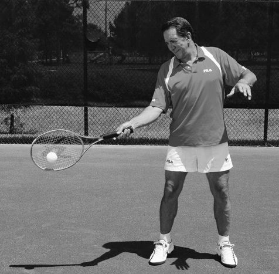
Cú trái tay
Khi bạn đánh một quả bóng đến từ bên trái của bạn, nó được gọi là cú đánh trái tay vì cú đánh được thực hiện bằng mặt sau của bàn tay phải của bạn.
THE VOLLEY When you move up to the net and hit the ball before it bounces on your side of the court, it is referred to as a volley. When you hit the ball on your right before it hits the ground, it is called a forehand volley.
Các cú đánh chạm đất — thuận tay và thuận tay — được thực hiện sau khi bóng nảy một lần trong sân của bạn. Những cú vô lê được tung ra trên không trước khi nảy lên. Từ cú đánh mô tả việc bạn đánh một quả bóng tennis bằng vợt. Nó xuất phát từ tiếng Anh cách đây 1.500 năm, khi ge-sceot đề cập đến một dụng cụ dùng để bắn súng.
When you hit the ball to your left before it hits the ground, it is called a backhand volley. See the photos opposite. For more, see Chapter 8, The Volley. Backhand: the back of the hand is facing the ball (left).
Cú đánh, cú đánh và cú đánh đều mô tả hành động đánh bóng. Hãy nghĩ đến việc vuốt bóng thay vì đánh nó, để tăng cảm giác vợt đang lướt vào bóng.
With two hands on the racquet, it is still called a backhand.
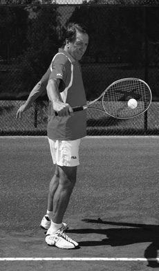
Cú trái tay bằng hai tay
Một số người sử dụng cả hai tay để cầm vợt khi đánh trái tay. Đối với cú đánh này, tay trái điều khiển lực, tay phải vẫn ở vị trí thuận tay.
The left hand drives the power, with the right hand more relaxed than the left (right). THE OVERHEAD The ball may be coming at you high above your head in what is called a lob.
Để biết thêm, xem Chương 5, Trái tay.
In this case, when you hit down on the ball, it is called an overhead or smash (see right photo below).
Cú vô lê
Khi bạn di chuyển lên lưới và đánh bóng trước khi nó nảy về phía sân của bạn, nó được gọi là cú vô lê. Khi bạn đánh bóng ở bên phải trước khi nó chạm đất, nó được gọi là cú vô lê thuận tay.
The smash can be taken on the fly (be-fore it hits the ground) or after the ball has bounced well above your head. For more, see Chapter 9, The Lob and Smash.
Khi bạn đánh bóng sang trái trước khi nó chạm đất, nó được gọi là cú vô lê trái tay. Xem những bức ảnh đối diện.
Forehand volley (top left). Backhand volley (bottom left).
Để biết thêm, xem Chương 8, Cú vô lê.
The overhead, or smash, is hitting a ball coming to you high above your head.
Trái tay: mu bàn tay hướng về phía bóng (trái).
Với hai tay cầm vợt, nó vẫn được gọi là trái tay. Tay trái
điều khiển trợ lực, tay phải thoải mái hơn tay trái (phải).
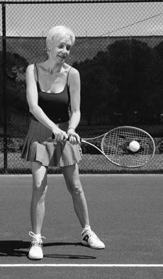
Cú đập trên đầu
Bóng có thể bay tới phía trên đầu bạn theo kiểu được gọi là lốp bóng. Trong trường hợp này, khi bạn đánh bóng xuống, nó được gọi là cú đánh trên cao hoặc cú đập bóng (xem ảnh bên phải). Cú đập có thể được thực hiện ngay lập tức (trước khi chạm đất) hoặc sau khi bóng đã nảy lên trên đầu bạn. Để biết thêm, xem Chương 9, The Lob and Smash.
WHAT IF I’M LEFT-HANDED? For those of you who are left-handed, you use a forehand shot when the ball comes to the left side of your body (because the fore—front—part of your left hand is leading the shot) and a backhand shot for a ball that comes to your right (because the stroke is led with the back side of your left hand). Throughout the book, you’ll find instruction on strokes, grips, and shots detailed for right-handers. You’ll also find key strokes explained and illustrated for left-handers.
Cú vô lê thuận tay (trên cùng bên trái).
Cú vô lê trái tay (phía dưới bên trái).
Cú đánh trên cao, hay còn gọi là cú đập bóng, là đánh một quả bóng bay tới cao hơn bạn
đầu.
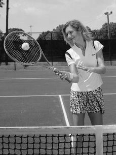
Nếu tôi thuận tay trái thì sao?
Đối với những người thuận tay trái, bạn sử dụng cú đánh thuận tay khi bóng đến bên trái cơ thể bạn (vì phần trước—phía trước—của tay trái của bạn đang dẫn đầu cú đánh) và cú đánh trái tay cho bóng đến bên phải của bạn (vì cú đánh được dẫn trước bằng mặt sau của tay trái của bạn). Xuyên suốt cuốn sách, bạn sẽ tìm thấy hướng dẫn chi tiết về các cú đánh, cách cầm vợt và cú đánh dành cho người thuận tay phải. Bạn cũng sẽ tìm thấy các thao tác gõ phím được giải thích và minh họa cho người thuận tay trái. Đối với tất cả các cách huấn luyện khác, người thuận tay trái có thể đảo ngược hướng trái-phải.
For all other coaching, left-handers can reverse the left-right directions. A left-hander’s forehand (left). A left-hander’s one-handed backhand (right). A left-hander’s two-handed backhand. Racquet Angle A fundamental rule for any stroke is that the angle of the racquet face determines almost exclusively the direction in which the ball goes when you hit it. The finer points in your game will come as you realize that you are basically playing tennis with your hand, not the racquet. The angle of your hand is, in effect, the angle of your racquet. For top pros, the hand and the racquet are synonymous.
Cú thuận tay của người thuận tay trái (trái).
Cú trái tay bằng một tay của người thuận tay trái (phải).
Cú trái tay bằng hai tay của người thuận tay trái.
Góc vợt
Một nguyên tắc cơ bản cho bất kỳ cú đánh nào là góc của mặt vợt hầu như chỉ xác định hướng bóng đi khi bạn đánh nó. Những điểm tốt hơn trong trò chơi của bạn sẽ đến khi bạn nhận ra rằng về cơ bản bạn đang chơi tennis bằng tay chứ không phải vợt. Trên thực tế, góc của bàn tay chính là góc của cây vợt của bạn. Đối với những tay vợt chuyên nghiệp, tay và vợt đồng nghĩa với nhau.
Conventional teachers tell players to place their body and feet in certain precise positions to hit the ball to a certain spot. They even tell players to follow the path of the ball with the racquet for a certain period of time during the swing to ensure the ball flies in that direction. This is all too complex and unnecessary, and you can prove it to yourself. If you sit on a chair on the court, you will still be able to hit the ball to the right corner of the court while moving your racquet to the left. How? Because you just have to angle your racquet face to the right.
Giáo viên thông thường yêu cầu người chơi đặt cơ thể và bàn chân của họ vào những vị trí chính xác nhất định để đánh bóng đến một vị trí nhất định. Họ thậm chí còn yêu cầu người chơi đi theo đường đi của quả bóng bằng vợt trong một khoảng thời gian nhất định trong quá trình vung vợt để đảm bảo quả bóng bay theo hướng đó. Điều này quá phức tạp và không cần thiết, và bạn có thể chứng minh điều đó cho chính mình. Nếu bạn ngồi trên ghế trên sân, bạn vẫn có thể đánh bóng vào góc bên phải của sân trong khi di chuyển vợt sang bên trái. Làm sao? Bởi vì bạn chỉ cần nghiêng mặt vợt của mình sang bên phải. Hướng của quả bóng phụ thuộc vào góc của vợt.
The direction of the ball depends on the angle of the racquet. The same principle applies for how high or low the ball flies when you hit it. Open the racquet by rotating your forearm to bring the top edge back (don’t change your grip), and the ball flies higher than if you hold the racquet perpendicular to the ground. Close the racquet angle (top edge forward), and the ball goes lower. In the early stages of learning, angle your hand and racquet slightly upward. As you become more proficient, it becomes second nature to swing upward and across the body. You’ll notice the racquet face will be almost vertical to the ground, not angled open or closed. As you practice, you will find that small angles can make a big difference. The top pros hit the ball upward so forcefully for topspin that they need to keep the racquet face relatively closed so the ball does not sail out of the court.
Nguyên tắc tương tự cũng áp dụng cho việc bóng bay cao hay thấp khi bạn đánh nó. Mở vợt bằng cách xoay cẳng tay để đưa mép trên về phía sau (không thay đổi cách cầm vợt) và bóng bay cao hơn so với khi bạn cầm vợt vuông góc với mặt đất. Đóng góc vợt (cạnh trên về phía trước) và bóng đi thấp hơn.
Obviously, if you close the racquet too much, the ball won’t clear the net. Angle the racquet face toward the right side of the court to send the ball there (left). Angle the racquet face to the left, and the ball goes left (right). 2.
Trong giai đoạn đầu học, hãy nghiêng tay và vợt hơi hướng lên trên. Khi bạn trở nên thành thạo hơn, việc vung lên và ngang cơ thể trở thành bản chất thứ hai. Bạn sẽ nhận thấy mặt vợt sẽ gần như thẳng đứng với mặt đất, không có góc mở hoặc đóng. Khi thực hành, bạn sẽ thấy rằng những góc nhỏ có thể tạo ra sự khác biệt lớn. Các vận động viên chuyên nghiệp hàng đầu đánh bóng hướng lên trên mạnh đến mức họ cần giữ mặt vợt tương đối khép để bóng không bay ra khỏi sân. Rõ ràng, nếu bạn đóng vợt quá nhiều, bóng sẽ không qua lưới.
MASTER THE STROKES, LESSON TWO Use your hand to mimic a few swings for each of the following: 1. Forehand 2. Backhand with one hand and two hands 3. Forehand volley 4.
Nghiêng mặt vợt về phía bên phải của sân để đưa bóng
đó (trái).
Nghiêng mặt vợt sang trái và bóng đi sang trái (phải).
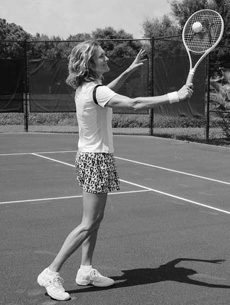
2. Làm chủ các nét, Bài hai
Sử dụng tay của bạn để bắt chước một số động tác xoay người cho mỗi động tác sau:
Backhand volley with one hand
1. Thuận tay
5.
2. Trái tay bằng một tay và hai tay
Overhead
3. Cú vô lê thuận tay
Open the racquet face to send the ball higher (left).
4. Cú vô lê trái tay bằng một tay
Close the racquet face to send the ball lower (right).
5. Chi phí chung
THE SERVE The first hit in any game is called a service or serve.
Mở mặt vợt để đưa bóng lên cao hơn (trái).
Đóng mặt vợt để đưa bóng xuống thấp hơn (phải).
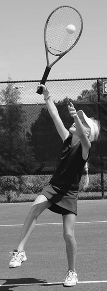
Giao bóng
Cú đánh đầu tiên trong bất kỳ trò chơi nào được gọi là giao bóng hoặc giao bóng. Khi giao bóng, hãy đứng sau đường biên ngang sang một bên. Nhìn qua lưới và chú ý đến đường kẻ ở giữa sân. Đây được gọi là đường trung tâm. Đường cắt ngang sân bên phía đối thủ được gọi là đường giao bóng. Để giao bóng, bạn phải đánh bóng qua lưới theo đường chéo để bóng rơi vào ô được đánh dấu bằng đường giữa và đường giao bóng. Người nhận bóng đứng gần đường biên ngang, điều chỉnh vị trí để trả giao bóng tốt nhất sau khi bóng đã nảy lên. Để biết thêm, xem Chương 6, Người phục vụ.
When you serve, stand behind the baseline to one side. Look over the net and notice the line down the middle of the court. This is called the centerline. The line that cuts across the court on your opponent’s side is called the service line. To serve, you have to hit the ball over the net diagonally to land in the box marked by the centerline and service line.
Đứng ở một bên sân, giao bóng chéo lưới để chạm đất
bóng bên trong phần sân giao bóng của đối phương (trái).
Di chuyển theo bóng một cách tự nhiên để trả lại quả giao bóng, cho dù nó đến với bạn
thuận tay hoặc trái tay (phải).
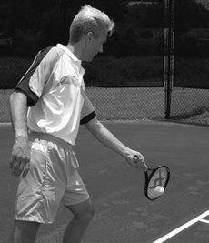
3. Làm chủ giao bóng, Bài 1
Trong sơ đồ bên dưới, hãy sử dụng ngón tay của bạn để theo dõi quỹ đạo của quả bóng và độ nảy của nó trong phần sân giao bóng từ cả hai phía của đường cuối sân.
The person receiving the ball stands near the baseline, adjusting his position to best return the serve after the ball has bounced.
Bạn giao bóng một điểm từ bên phải, điểm tiếp theo từ bên trái, v.v.
Chơi như dân chuyên nghiệp
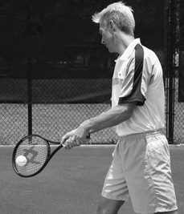
Động lực học và Cơ học
Trong quần vợt, bạn có thể coi động lực là sự thay đổi về lực và cường độ trong thành tích của người chơi. Lực là vận tốc mà người chơi truyền vào quả bóng. Cường độ là sự quyết tâm liên tục của cầu thủ di chuyển theo đường chéo qua sân hoặc về phía trước để chặn đường đi của bóng và do đó cắt giảm thời gian phục hồi của đối phương sau cú đánh vừa thực hiện. Cơ học là các thành phần vật lý khác nhau—và sự co hoặc giãn cơ—tạo nên một cú đánh.
For more, see Chapter 6, The Serve. Standing on one side of the court, serve across the net diagonally to land the ball inside your opponent’s service court (left). Move naturally to the ball to return the service, whether it comes to your forehand or backhand (right). 3. MASTER THE SERVE, LESSON ONE On the diagram below, use your finger to trace the trajectory of the ball and its bounce in the service court from both sides of the baseline.
Nhiều người chơi nâng cao coi đây là điều tương tự. Họ không tập trung vào cơ chế mà thay vào đó chơi năng động. Họ đuổi theo quả bóng và tất cả những gì họ làm là quyết định khi nào, độ mạnh và vị trí họ sẽ đánh nó. Họ biết rằng họ đang áp dụng cơ chế chính xác ở mức độ sâu mà không cần suy nghĩ. Giống như một nghệ sĩ piano hòa nhạc, họ tập trung vào cảm giác chứ không phải “làm thế nào”. Những người chơi khác tập trung vào cơ chế và không cảm thấy quyết đoán và tự nhiên.
You serve one point from the right, the next point from the left, and so on. PLAY LIKE THE PROS DYNAMICS VERSUS MECHANICS In tennis, you can think of dynamics as the variations in force and intensity in a player’s performance. Force is the velocity the player imparts to the ball. Intensity is the constant determination of the player to move diagonally across the court or forward to intercept the ball’s path and thus cut the opponent’s time to recover from the shot just made. Mechanics are the different physical components—and muscular contractions or elongations—that make up a stroke. Many advanced players see these as the same thing.
Cách chơi tối ưu là gì?
They don’t focus on the mechanics and instead play dynamically.
Cho đến nay, yếu tố số một là có cơ chế tự nhiên, chính xác cho phép bạn chơi linh hoạt. Bạn đã thực hành cú đánh đủ lâu để biết nó chính xác và hiệu quả, cảm giác thực sự tốt và bóng đang bay trong sân. Bạn đánh đi đánh lại cùng một cú đánh, đôi khi từ một vị trí cố định, đôi khi đang di chuyển mà không có nhiều nghi ngờ về kết quả. Nói cách khác, cơ chế là bản chất thứ hai và bạn đang chơi linh hoạt, tập trung vào quả bóng và vị trí của nó.
They go after the ball, and all they do is decide when, how hard, and where they are going to hit it. They know they’re applying correct mechanics at a deep level, without even thinking. Just like a concert pianist, they focus on the feel, not the “how to.” Other players focus on the mechanics and don’t feel as decisive and natural. What’s the optimum way to play?
Đây là ý chính những lời dạy của tôi. Ngay từ đầu, tôi đã dạy bạn chuyển động của cánh tay trong mỗi cú đánh độc lập với phần còn lại của cơ thể. Khi bạn tiến bộ, cơ thể bắt đầu hỗ trợ nỗ lực một cách tự nhiên.
By far the number one factor is having correct, natural mechanics that allow you to play dynamically. You have practiced a shot long enough so that you know it is correct and efficient, it feels really good, and the ball is going in the court. You hit the same shot over and over, sometimes from a stationary position, sometimes on the move, without much doubt as to the result.
Nếu cú đánh của bạn kém, bạn phải tập trung chú ý vào cơ học. Đó là lý do tại sao người mới bắt đầu cần nghĩ cú đánh đơn giản là chuyển động của cánh tay không phụ thuộc vào chân. Nếu không, nó sẽ trở nên khó hiểu và phức tạp. Đây là vấn đề chính của việc dạy quần vợt thông thường. Cơ học thông thường có quá nhiều bổ sung không cần thiết và không tự nhiên khiến bạn mất tập trung.
In other words, the mechanics are second nature, and you’re playing dynamically, focusing on the ball and its placement. This is the gist of my teachings. Right from the beginning, I teach you the arm movement of each stroke independent of the rest of the body. As you progress, the body starts to help the effort in a natural way. If your stroke is poor, your attention has to be focused on the mechanics.
Vì vậy, đừng đổ lỗi cho bản thân về những lỗi không đáng có (mất điểm mà đối thủ không ép bạn bằng vị trí khéo léo hoặc lực lượng tuyệt đối). Các lỗi không được thực hiện thường là kết quả của các sai sót kỹ thuật, chẳng hạn như cơ chế thực hiện sai, tính thời gian gấp gáp hoặc góc vợt không phù hợp khi thực hiện cú đánh.
That is why a beginner needs to think of the stroke simply as the movement of the arm independent of the legs. Otherwise, it becomes confusing and complicated. This is the main problem with conventional tennis teaching. Conventional mechanics have too many unnecessary and unnatural additions that distract you. Therefore, don’t blame yourself for unforced errors (lost points that your opponent did not force on you by skillful placement or sheer force).
Hãy nghiên cứu cuốn sách này và dành thời gian thực hành tất cả các bài tập để bạn có thể di chuyển về cơ học trong quá khứ để tận hưởng sự năng động của trò chơi tuyệt đẹp này!
Unforced errors are usually the result of technical flaws, such as falsely enforced mechanics, rushing the timing, or an inappropriate racquet angle when making the hit. Study this book and take the time to practice all of the drills, so you can move past mechanics to enjoy the dynamics of this beautiful game!
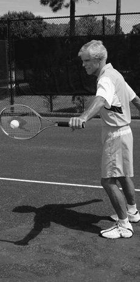
Cách đánh bóng
Một yêu cầu rõ ràng khi đánh bóng là phải phá lưới, nghĩa là bạn phải vượt qua lực hấp dẫn liên tục kéo bóng đi xuống. Bạn có ba lựa chọn:
How to Hit the Ball An obvious need in hitting the ball is to clear the net, which means you have to overcome the force of gravity that is constantly pulling the ball downward. You have three options:
- Nhấc bóng qua lưới bằng cách kéo vợt lên trên khi bạn đánh bóng, thay vì chỉ chuyển động về phía trước
- Nghiêng mặt vợt hơi hướng lên trên
- Sử dụng cả kỹ thuật nâng và nghiêng vợt cùng một lúc (nhưng đánh bóng nhẹ nhàng nếu không bóng sẽ bay ra ngoài đường biên cuối của đối thủ) (xem ảnh trang tiếp theo)
Chìa khóa của các kỹ thuật đánh bóng chuyên nghiệp, hiện đại này là uốn cong cánh tay khi tiếp xúc với bóng. Lý do rõ ràng là bạn sử dụng các nhóm cơ lớn và do đó đạt được nhiều sức mạnh hơn. Những người mới bắt đầu có thể hưởng lợi rất nhiều từ việc áp dụng kỹ thuật cơ bản này ngay từ đầu.
• Lift the ball over the net with an upward pull of the racquet as you stroke the ball, rather than just a forward motion • Angle the racquet face slightly upward • Use both lifting and angling techniques at the same time (but hit the ball gently or it will sail out over your opponent’s baseline) (see photo next page) Key to these modern, professional hitting techniques is bending the arm on impact with the ball. The obvious reason is that you involve large muscle groups and so achieve more power.
Chúng tôi sử dụng các cơ cụ thể làm động lực chính cho các cú đánh. Khi các cơ này co lại, chúng sẽ cung cấp lực cho cú vung của bạn. Bắp tay và cơ tam đầu của bạn nằm ở cánh tay trên. Bắp tay trước uốn cong cẳng tay của bạn (uốn cong nó, như trong tay trước) và cơ tam đầu mở rộng cẳng tay của bạn (duỗi thẳng nó, như trong cú giao bóng). Cơ ngực là cơ ở ngực hỗ trợ cú thuận tay. Cơ hình thang chạy từ sau gáy và che từng vai, hỗ trợ thực hiện cú đánh trái tay bằng một tay.
Beginners can benefit greatly from applying this basic technique from the get-go. We use specific muscles as the main driving force behind strokes. As these muscles contract, they provide the power for your swing. Your biceps and triceps are located in your upper arm. The biceps flex your forearm (bend it, as in the fore-hand), and the triceps extend your forearm (straighten it, as in the serve). The pectorals are muscles in the chest that assist with the forehand. The trapezius run from the back of the neck and cover each shoulder, assisting with the one-handed backhand.
Chuyến bay của quả bóng
Quả bóng tennis có thể bay với tốc độ hơn 100 dặm một giờ trong những cú giao bóng chuyên nghiệp khó nhất. Nhưng dù bị đánh mạnh đến đâu, quả bóng vẫn mất tốc độ trong quá trình bay vì kích thước lớn và lớp vỏ thô ráp, kém khí động học. Nó cũng chậm lại đáng kể sau khi nảy lên. Một người chơi ở một đường cơ sở có thể đánh một quả bóng với tốc độ 60 dặm một giờ và vào thời điểm nó nảy lên và chạm đến đường cơ sở của đối phương, nó có thể chỉ di chuyển với tốc độ 25 dặm một giờ hoặc chậm hơn.
THE FLIGHT OF THE BALL The tennis ball can fly at well over 100 miles per hour in the hardest pro serves. But no matter how hard it is hit, the ball loses speed during flight because of its size and rough, unaerodynamic covering. It also slows down considerably after it bounces. A player at one baseline can hit a ball at 60 mph, and by the time it bounces and reaches the opponent’s baseline, it may be traveling only 25 mph or slower. A fast ball drops down with less arc. A slow ball drops down more steeply, before and after the bounce. Your arm and the racquet angle help lift the ball over the net.
Một quả bóng rơi nhanh xuống với ít cung hơn.
Một quả bóng chậm rơi xuống dốc hơn, trước và sau khi nảy lên.
Cánh tay và góc vợt giúp nâng bóng qua lưới. Bạn càng
mở mặt vợt, bóng đi càng cao.
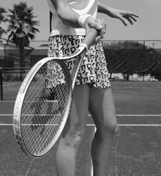
4. Bậc thầy đánh bóng
Để phát triển cảm giác với bóng, hãy nhờ ai đó nhẹ nhàng ném cho bạn một số quả bóng và đánh trả chúng bằng tay thay vì dùng vợt. Tập đánh bóng lại nhẹ nhàng với:
The more you open the face of the racquet, the higher the ball travels. 4.
- Chỉ một chuyển động về phía trước của cánh tay của bạn
- Một chuyển động của cánh tay về phía trước cộng với một chút nghiêng lên trên của bàn tay
- Một chuyển động về phía trước của cánh tay của bạn, một lực kéo lên trên—uốn cong cánh tay của bạn— cộng với một chút nghiêng lên trên của bàn tay của bạn
- Chuyển động về phía trước và hướng lên trên của cánh tay, uốn cong nó và kiểm soát độ cao của quả bóng theo góc của bàn tay bạn
Trong mỗi trường hợp, hãy chú ý cẩn thận xem bóng sẽ đi đến đâu. Giữ bài tập này đơn giản. Bạn chỉ đang xác định điều gì sẽ xảy ra với quả bóng khi bạn đánh nó theo những cách nhất định. Khi bắt đầu chơi quần vợt, bạn sẽ thấy rằng hầu hết các cú đánh trên mặt đất đều bao gồm chuyển động hướng lên trên chứ không chỉ là cú vung về phía trước.
MASTER HITTING THE BALL To develop feel for the ball, have someone gently throw you some balls and hit them back with your hand instead of a racquet. Practice hitting the ball back gently with: • Only a forward motion of your arm • A forward arm motion plus a slight upward angling of your hand • A forward motion of your arm, an upward pull—bending your arm— plus a slight upward angling of your hand
Điều này đáng được minh họa để làm rõ điều gì xảy ra khi bạn thực hiện những chuyển động này với vợt.
• A forward and upward motion of your arm, bending it and controlling the height of the ball by the angle of your hand In each case, carefully notice where the ball goes. Keep this drill simple.
Chỉ chuyển động cánh tay về phía trước, mặt vợt thẳng đứng.
Chuyển động của cánh tay về phía trước, vợt góc cạnh (mở).
Chuyển động của cánh tay về phía trước và hướng lên trên (uốn cong), vợt góc cạnh (mở).
Chuyển động của cánh tay về phía trước và hướng lên trên (uốn cong), mặt vợt gần như thẳng đứng.
Quan sát tốc độ của quả bóng sau khi nó nảy lên. Bóng tiến về phía bạn càng chậm thì nó càng cong xuống trước và sau khi nảy.
You’re only establishing what happens to the ball when you hit it in certain ways.
Khi chơi, bạn sẽ có thể phối hợp thời gian và chuyển động của mình với các cung này. Các kỹ thuật trong cuốn sách này sẽ dạy bạn chờ đợi và đánh giá quả bóng sau khi nảy lên trước khi thực hiện cú swing. Dự đoán không chính xác đặc điểm của cung quan trọng thứ hai trước khi bóng nảy lên là một trong những nguyên nhân phổ biến nhất gây ra những cú đánh sai. Đừng cố gắng quyết định sớm. Hãy nhìn và làm theo.
As you begin playing tennis, you’ll see that most ground strokes include an upward motion, not just a forward swing. This is worth illustrating to clarify what happens when you do these motions with a racquet. Forward arm motion only, racquet face vertical. Forward arm motion, angled racquet (open). Forward and upward arm motion (bending it), angled racquet (open). Forward and upward arm motion (bending it), racquet face nearly vertical.
Một pha giao bóng là sự trao đổi các cú đánh tiếp tục qua lại trên lưới trong một thời gian. Nó xuất phát từ tiếng Pháp rallier, có nghĩa là tập hợp lại với nhau.
Observe a ball’s speed after it bounces. The slower the ball is coming toward you, the more it curves downward before and after the bounce. As you play, you will be able to coordinate your timing and movement with these arcs.
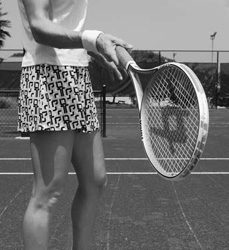
Xoáy lên
Bạn có thể bắt đầu nhận thấy rằng quả bóng có một chuyển động xoay nhẹ về phía trước, được gọi là xoáy lên. Topspin là kết quả của việc nâng cánh tay và vợt nhiều hơn mức cần thiết để phá lưới. Quả bóng lăn xuống mặt vợt đồng thời được nâng lên nhờ chuyển động hướng lên trên của vợt. Để tránh đánh bóng quá cao với kỹ thuật này khi bạn chơi với lực mạnh hơn, hãy đóng mặt vợt lên trên quả bóng. Điều này tạo ra sự xoay bóng cực lớn về phía trước - xoáy lên. (Hành động ngược lại—bóng lăn lên mặt vợt trong khi vợt đang đi xuống—được gọi là cú đánh cắt lát. Để biết thêm, xem phần Cắt lát trái tay, trang 124–28.) Bạn càng ở dưới bóng và nhấc cánh tay lên khi thực hiện cú đánh, bạn càng đạt được nhiều xoáy lên với bóng. Tạo ra hai hoặc ba lần xoay quả bóng trước khi nó nảy sang phần sân bên kia là đủ xoáy lên cho bạn ở giai đoạn này. Sử dụng một ít xoáy lên khi bạn mới bắt đầu chơi sẽ dạy cho bạn cảm giác này ngay từ đầu trong sự nghiệp quần vợt của bạn và giúp bạn dễ dàng thêm nhiều xoáy lên hơn sau này.
The techniques in this book will teach you to wait and judge the ball after the bounce before committing to a swing. Incorrectly anticipating the character of the second critical arc before the ball even bounces is one of the most common causes of mis-hits. Do not try to make up your mind early. Look and follow. A rally is an exchange of strokes that continues back and forth across the net for a while. It comes from the French rallier, meaning to bring together again. TOPSPIN You may start noticing that the ball has a slight forward rotation to it, called topspin. Topspin is the result of lifting the arm and racquet more than needed to clear the net. The ball rolls down the face of the racquet while being raised up by the upward motion of the racquet. To avoid hitting the ball too high with this technique as you play with more power, close the racquet face over the ball. This generates tremendous forward ball rotation —topspin. (The opposite action—the ball rolls up the face of the racquet while the racquet is going down—is called a slice shot. For more, see The Backhand Slice section, pages 124–28.) The more you get under the ball and lift your arm on the stroke, the more topspin you can achieve with the ball.
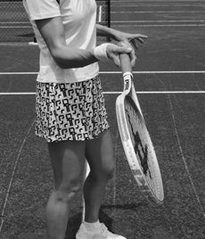
Chơi như dân chuyên nghiệp
Cải thiện bằng cách xem
Sau khi học các kỹ thuật trong cuốn sách này, hãy xem các chuyên gia yêu thích của bạn sử dụng chúng và sau đó bắt chước các cú đánh của họ.
Creating two or three rotations of the ball before it bounces in the other court is enough topspin for you at this stage. Using a little topspin when you first start playing will teach you this feel early in your tennis career and make it much easier for you to add more topspin later.
Hãy để mắt đến cầu thủ hơn là vào quả bóng. Hãy chú ý cách người chơi điều chỉnh để có những cú đánh nhanh hơn bằng cách giữ cho cú vung vợt ngắn hơn và vợt gần bóng hơn.
PLAY LIKE THE PROS IMPROVE BY WATCHING After learning the techniques in this book, watch your favorite pros use them and then mimic their strokes.
Bằng cách để mắt đến người chơi thay vì theo dõi quả bóng, bạn sẽ nắm bắt được nhiều chi tiết, chẳng hạn như người chơi theo dõi quả bóng trong bao lâu và tìm thấy nó từ từ, sau đó tăng tốc và theo dõi. Bạn sẽ nhận thấy rằng cánh tay thường bị kéo vào khi va chạm chứ không phải duỗi ra. Về bản chất, bạn sẽ gần cảm nhận được cảm giác của họ hơn khi họ chơi nếu bạn quan sát cầu thủ chứ không phải quả bóng.
Keep your eyes on the player rather than the ball. Notice how players adjust to faster shots by keeping the swing shorter and the racquet closer to the ball. By keeping your eyes on the player instead of following the ball, you’ll catch many details, such as how long players track the ball and, finding it slowly, then accelerate and follow through. You’ll notice that the arm is usually pulled in on impact, rather than extended. In essence, you’ll be closer to feeling what they feel as they play if you watch the player and not the ball. Another point, hardly noticeable except in slow-motion replay, is that players typically hit the ball to the side of the strings rather than on the center.
Một điểm khác, hầu như không đáng chú ý ngoại trừ khi phát lại chuyển động chậm, đó là người chơi thường đánh bóng sang một bên của dây hơn là vào giữa. Chúng đánh xoáy lên về phía cuối dây, giúp vợt ổn định hơn. Mô-men xoắn (lực xoắn khi tiếp xúc bóng cố gắng xoay vợt trong tay bạn) giữ cho vợt đóng lại, giúp việc cầm vợt dễ dàng hơn và đánh bóng an toàn hơn. Điều ngược lại cũng đúng với những cú vô lê. Những người chuyên nghiệp đánh chúng về phía đầu vợt, giúp vợt luôn mở. Tuy nhiên, những cú vô lê không được đánh gần khung thành như những cú đánh trên mặt đất, nơi mà người chơi thích thắt bóng. Thích xem những cầu thủ yêu thích của bạn nhưng cũng nghiên cứu kỹ họ để bạn có thể học được nhiều nhất có thể. Cuốn sách này sẽ trả lời bất kỳ câu hỏi nào bạn có thể gặp trong hành trình hướng tới một trò chơi tốt hơn.
They hit topspin toward the bottom of the strings, making the racquet more stable. The torque (the twisting force of ball contact that tries to turn the racquet in your hand) keeps the racquet closed, making the handling of the racquet easier and the shot safer. The opposite is true for volleys. Pros hit them toward the top of the racquet, helping the racquet stay open. However, volleys aren’t hit as close to the frame as ground strokes, where the player relishes belting the ball. Enjoy watching your favorite players but also study them closely so you can learn as much as you can. This book will answer any questions you may come up with during your journey to a better game. PLAY LIKE THE PROS HIGH TOPSPIN IS MORE THAN A DEFENSIVE SHOT A ball hit high with a lot of topspin slows down as it travels forward and up. Then the ball accelerates as it comes down, making it difficult to judge how the ball will bounce. Such a ball usually kicks high and toward the backcourt. This makes high topspin effective, even on hard courts, as an offensive shot to keep your opponent stuck in the backcourt. Topspin is also a great tool for building confidence.
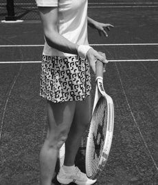
Chơi như dân chuyên nghiệp
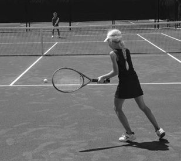
Topspin cao không chỉ là một cú đánh phòng thủ
Một quả bóng được đánh lên cao với nhiều xoáy lên sẽ chậm lại khi nó di chuyển về phía trước và lên trên. Sau đó, quả bóng tăng tốc khi rơi xuống, khiến việc đánh giá quả bóng sẽ nảy lên như thế nào trở nên khó khăn. Quả bóng như vậy thường đá cao và hướng về phía sân sau. Điều này làm cho xoáy lên cao có hiệu quả, ngay cả trên sân cứng, như một cú đánh tấn công để giữ đối thủ của bạn bị mắc kẹt ở phần sân sau.
When you are afraid of missing your shot, you don’t have to hit a softer stroke to keep it in the court. With topspin, if you can clear the net and rotate the ball enough, you know the ball will drop in the court. Your fear doesn’t show to your opponent because you don’t need to slow down the ball to keep it in the court. With topspin, you also can clear the net by a wider margin. On a flat, hard shot, you have to skim the net to keep the ball in play. By practicing topspin assiduously, even in an exaggerated way at first, you acquire the feel that the more you hit up, the more the ball comes down.
Topspin cũng là một công cụ tuyệt vời để xây dựng sự tự tin. Khi bạn sợ trượt cú đánh, bạn không cần phải đánh một cú đánh nhẹ nhàng hơn để giữ cú đánh trong sân. Với topspin, nếu bạn có thể phá lưới và xoay bóng vừa đủ, bạn biết bóng sẽ rơi xuống sân. Sự sợ hãi của bạn không thể hiện với đối thủ vì bạn không cần phải giảm tốc độ bóng để giữ nó trong sân.
For beginning, intermediate, and advanced players, and for pros who haven’t mastered this topspin technique yet, learning it encourages them to hit much harder, even under pressure. Yet another factor in competition is that ball rotation onto an opponent’s racquet lessens their control of their shot. When to Learn Topspin The techniques used in this book to teach ground strokes develop topspin naturally, right from the beginning. Although this learning is done first at slow speeds, the swing developed is the same low-to-high stroke used by the pros. I consider the following a very basic part of learning to play tennis well.
Với xoáy lên, bạn cũng có thể phá lưới với biên độ rộng hơn. Khi thực hiện một cú đánh phẳng và mạnh, bạn phải lướt qua lưới để giữ bóng trong cuộc. Bằng cách chăm chỉ luyện tập topspin, thậm chí theo cách cường điệu lúc đầu, bạn sẽ có được cảm giác rằng bạn càng đánh lên thì bóng càng đi xuống nhiều hơn. Đối với những người mới bắt đầu, trung cấp và cao cấp cũng như đối với những người chơi chuyên nghiệp chưa thành thạo kỹ thuật xoáy lên này, việc học nó sẽ khuyến khích họ đánh mạnh hơn nhiều, ngay cả khi chịu áp lực.
Topspin requires that you apply much more upward force to the ball than the intended path of your shot. If, on the other hand, you learn from the beginning to apply your force along the intended line of flight of your shot, this flat shot will become an instinctive habit that will be difficult to shake in the future. If for years you have been hitting the ball with a straight effort and relating this to the speed, height, and placement of your shot, trying now to lift your strokes with topspin will probably make you panic. You’ll be afraid of hitting the ball too high and too far. Although you may understand my point intellectually, deep inside you’ve been conditioned differently. You haven’t instinctively built the feel that comes with top-spin, knowing that the more you hit up on the ball and the more you roll it, the more it comes down. Players who have hit flat shots most of their lives and now want to hit topspin may need hundreds of hours of practice to master this new feel.
Tuy nhiên, một yếu tố khác trong cạnh tranh là việc xoay bóng vào vợt của đối thủ làm giảm khả năng kiểm soát cú đánh của họ.
By exaggerating the new style, they can succeed in time. From the start, a beginner needs to develop the feel that lifting the stroke causes the ball to curve down.
Khi nào nên học Topspin
Các kỹ thuật được sử dụng trong cuốn sách này để dạy các cú đánh chạm đất phát triển xoáy lên một cách tự nhiên, ngay từ đầu. Mặc dù việc học này được thực hiện đầu tiên ở tốc độ chậm, cú xoay được phát triển cũng giống như cú đánh từ thấp đến cao được các chuyên gia sử dụng. Tôi coi những điều sau đây là một phần rất cơ bản của việc học chơi quần vợt giỏi. Topspin yêu cầu bạn tác dụng lực hướng lên trên quả bóng nhiều hơn so với đường đánh dự định của bạn.
Their tennis instinct is virgin territory. Beginners who learn topspin from the start aren’t afraid of hitting the ball out of the court. Whenever their shots fall beyond the baseline, they roll the next ball more. Topspin builds confidence because a player can hit harder and higher and still bring the ball down into the court. It provides a much larger margin for error when hitting a ball hard. Flat hits cause innumerable errors, lessening confidence. As you progress as a topspin player, you’ll learn to rotate the ball more and more efficiently, whether on your forehand, backhand, or serve.
Mặt khác, nếu bạn học ngay từ đầu cách áp dụng lực dọc theo đường bay dự kiến của cú đánh, thì cú đánh thẳng này sẽ trở thành một thói quen bản năng và khó bỏ trong tương lai. Nếu trong nhiều năm, bạn đã đánh bóng bằng nỗ lực thẳng và liên hệ điều này với tốc độ, độ cao và vị trí cú đánh của bạn, thì bây giờ việc cố gắng nâng các cú đánh của bạn bằng xoáy lên có thể sẽ khiến bạn hoảng sợ. Bạn sẽ sợ đánh bóng quá cao và quá xa.
Should you decide to risk a few shots, you may choose to hit some flatter strokes, but you can always revert to the safer topspin shots when needed. Follow these guidelines to fine-tune your topspin: • The tendency in most sports is to go forward toward your intended target and to release the power too soon, thinking you don’t have enough time. These two habits cause too many errors. Instead, wait a bit after the bounce, approach the ball slowly from below, almost touching it before accelerating, and stroke upward but emphasize going across the ball, in a windshield wiper arc (for more, see pages 91–95).
Mặc dù bạn có thể hiểu quan điểm của tôi về mặt trí tuệ, nhưng sâu bên trong bạn đã bị quy định khác. Theo bản năng, bạn chưa xây dựng được cảm giác đi kèm với cú xoáy lên, biết rằng bạn càng đánh bóng lên và bạn càng lăn nó thì nó càng rơi xuống. Những người chơi đã đánh những cú đánh phẳng trong phần lớn cuộc đời của họ và bây giờ muốn đánh xoáy lên có thể cần hàng trăm giờ luyện tập để thành thạo cảm giác mới này. Bằng cách phóng đại phong cách mới, họ có thể thành công kịp thời.
• Let your body go to the left rather than “stepping into” the ball. • Use your biceps to bend your arm, bringing your racquet closer to your body, rather than extending your arm and following the line of the ball. If you look carefully at the top pros, you’ll see that they make contact toward the bottom of the racquet, below the sweet spot. • If you are starting anew to add topspin to your forehand, end your stroke above your left shoulder (for right-handers). On two-handed backhands, hit up and across to your right, ending over your right shoulder. • If you have a one-handed backhand, meet the ball by moving your fist toward the net, with the racquet laid back almost perpendicular to your arm. Approach the ball slowly.
Ngay từ đầu, người mới bắt đầu cần phát triển cảm giác rằng việc nâng cú đánh sẽ khiến bóng cong xuống. Bản năng quần vợt của họ là lãnh thổ trinh nguyên. Những người mới bắt đầu học topspin ngay từ đầu sẽ không sợ đánh bóng ra ngoài sân. Bất cứ khi nào cú đánh của họ vượt quá đường biên ngang, họ sẽ lăn quả bóng tiếp theo nhiều hơn. Topspin tạo dựng sự tự tin vì người chơi có thể đánh mạnh hơn và cao hơn mà vẫn đưa bóng xuống sân. Nó mang lại tỷ lệ mắc lỗi lớn hơn nhiều khi đánh bóng mạnh. Những cú đánh ngang gây ra vô số lỗi, làm giảm đi sự tự tin.
Accelerate on contact, up and somewhat across to your right. The nonhitting arm should move back and the shoulder blades come together, while lifting your body. You don’t need to step forward into the ball. It is usually more helpful letting your body move up and slightly back. While this is different from the traditional instruction of stepping into the ball, going backward gives you more room and allows a more natural and efficient acceleration of the backhand stroke. You can confirm this by flicking a whip while pulling back and then trying it while stepping forward, and comparing the results. • In training, exaggerate the finish of these strokes, leaving the arm up a bit, relating your finish to the landing of your shot.
Khi bạn tiến bộ với tư cách là một người chơi xoáy lên, bạn sẽ học cách xoay bóng ngày càng hiệu quả hơn, cho dù là ở cú thuận tay, trái tay hay giao bóng. Nếu bạn quyết định mạo hiểm thực hiện một vài cú đánh, bạn có thể chọn đánh một số cú đánh phẳng hơn, nhưng bạn luôn có thể quay lại những cú đánh xoáy lên an toàn hơn khi cần.
Ironically, bringing the racquet slowly to the ball, then accelerating gives you more power and control. PUSHING THE BALL Push means to exert pressure or force against something so as to move it. Hit means to give a blow to or strike something. In tennis, pushing the ball has been vilified as hitting the ball too softly, while hitting is used for stronger strokes.
Thực hiện theo các nguyên tắc sau để tinh chỉnh xoáy lên của bạn:
But in fact, you can push something with more force than you can hit it.
- Xu hướng trong hầu hết các môn thể thao là tiến về phía mục tiêu đã định và giải phóng sức mạnh quá sớm vì nghĩ rằng mình không có đủ thời gian. Hai thói quen này gây ra quá nhiều lỗi lầm. Thay vào đó, hãy đợi một chút sau khi nảy, tiếp cận quả bóng từ từ từ bên dưới, gần như chạm vào nó trước khi tăng tốc và đánh lên trên nhưng nhấn mạnh việc đi ngang qua quả bóng, theo hình vòng cung gạt nước trên kính chắn gió (để biết thêm, xem trang 91–95).
- Để cơ thể nghiêng về bên trái thay vì “bước vào” quả bóng.
- Dùng bắp tay để gập cánh tay, đưa vợt lại gần cơ thể hơn là duỗi tay và đi theo đường bóng. Nếu bạn quan sát kỹ những tay vợt chuyên nghiệp hàng đầu, bạn sẽ thấy rằng họ tiếp xúc về phía đáy vợt, bên dưới điểm ngọt.
- Nếu bạn đang bắt đầu thêm xoáy lên vào cú thuận tay của mình, hãy kết thúc cú đánh của bạn phía trên vai trái của bạn (đối với người thuận tay phải). Với cú trái tay bằng hai tay, đánh lên và ngang sang phải, kết thúc qua vai phải.
- Nếu bạn đánh trái tay bằng một tay, hãy đón bóng bằng cách di chuyển nắm tay của bạn về phía lưới, với vợt đặt về phía sau gần như vuông góc với cánh tay của bạn. Tiếp cận bóng từ từ. Tăng tốc khi tiếp xúc, lên trên và hơi sang bên phải của bạn. Cánh tay không bị đánh phải di chuyển về phía sau và hai xương bả vai chạm vào nhau đồng thời nâng cơ thể của bạn lên. Bạn không cần phải bước tới trước quả bóng. Thường sẽ hữu ích hơn khi để cơ thể bạn di chuyển lên và lùi lại một chút. Mặc dù điều này khác với hướng dẫn truyền thống là bước vào bóng, nhưng việc lùi về phía sau giúp bạn có nhiều khoảng trống hơn và cho phép tăng tốc cú đánh trái tay một cách tự nhiên và hiệu quả hơn. Bạn có thể xác nhận điều này bằng cách quất roi trong khi kéo lại và sau đó thử thực hiện trong khi bước về phía trước và so sánh kết quả.
- Trong luyện tập, hãy phóng đại kết thúc của những cú đánh này, giơ cánh tay lên một chút, liên hệ kết quả của bạn với điểm tiếp đất của cú đánh.
Trớ trêu thay, đưa vợt từ từ vào bóng, sau đó tăng tốc lại cho
bạn có thêm sức mạnh và khả năng kiểm soát.
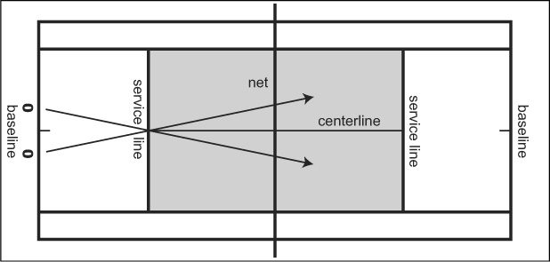
Đẩy bóng
Đẩy có nghĩa là tạo áp lực hoặc lực tác động lên một vật nào đó để làm nó di chuyển. Hit có nghĩa là đánh hoặc đánh một cái gì đó. Trong quần vợt, việc đẩy bóng bị coi là đánh bóng quá nhẹ, trong khi đánh được sử dụng để có những cú đánh mạnh hơn. Nhưng trên thực tế, bạn có thể đẩy một vật với lực mạnh hơn lực bạn có thể đánh vào nó.
Imagine yourself in front of a large barrel of water. If you hit it with your hand, it will barely move. If you push it, you may tip it over. Top pros use this concept in tennis. They approach the ball slowly, almost touching it before discharging all their power.
Hãy tưởng tượng bạn đang đứng trước một thùng nước lớn. Nếu bạn đánh nó bằng tay, nó sẽ hầu như không di chuyển. Nếu bạn đẩy nó, bạn có thể lật nó lại. Những chuyên gia hàng đầu sử dụng khái niệm này trong quần vợt. Họ tiếp cận quả bóng một cách chậm rãi, gần như chạm vào nó trước khi xả hết sức lực. Chỉ khi họ gặp bóng thì phần lớn sự co cơ của họ mới xảy ra. Nếu bạn phân tích vận tốc đầu vợt của họ trên phim tốc độ cao, bạn sẽ thấy rằng phần nhanh nhất của cú vung vợt diễn ra ngay sau khi tiếp xúc, đôi khi xảy ra ở khoảng cách 2 feet sau khi va chạm.
It’s only when they meet the ball that most of their muscular contraction occurs. If you were to analyze their racquet-head velocity on high-speed film, you would see that the fastest part of the swing is well after contact, sometimes occurring as much as 2 feet after the impact. Try to keep the idea of pushing in mind. The slower you approach the ball, the more you can accelerate. Force, if you remember from physics, is mass (weight) times acceleration, not mass times velocity. In addition, the pro’s muscular contractions upon meeting the ball connect the weight of the body to the impact with the ball, generating even more power. PLAY LIKE THE PROS TOPSPIN OR FLAT?
Hãy cố gắng ghi nhớ ý tưởng đẩy. Bạn tiếp cận bóng càng chậm thì bạn càng có thể tăng tốc. Lực, nếu bạn nhớ từ vật lý, là khối lượng (trọng lượng) nhân gia tốc chứ không phải khối lượng nhân vận tốc. Ngoài ra, sự co cơ của vận động viên chuyên nghiệp khi gặp bóng sẽ kết nối trọng lượng của cơ thể với tác động của bóng, thậm chí còn tạo ra nhiều lực hơn.
There is a misconception that top players play flat on hard courts, meaning they hit the ball with a flat racquet face versus adding spin. The latest research, carried out during tournaments on hard court surfaces, shows that top players such as Andre Agassi and Roger Federer hit their ground strokes with plenty of topspin, well above 1,500 rpm. Pete Sampras’s first serves have approached 3,000 rpm, while some of his second serves have been recorded to spin above 5,000 rpm. Study the top players of all time, and you’ll see a lot of ball rotation: Bill Tilden’s and Jack Kramer’s forehands, Pancho Gonzalez’s serve, Don Budge’s and Tony Trabert’s backhands, Manuel Santana’s forehand, Rod Laver’s and Ivan Lendl’s strokes on both sides. In the last two decades, this phenomenon has become more prevalent.
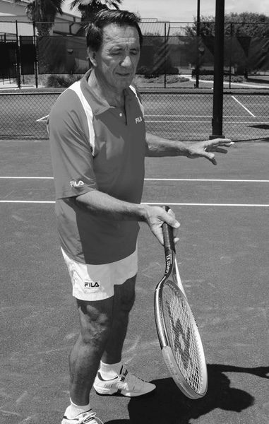
Chơi như dân chuyên nghiệp
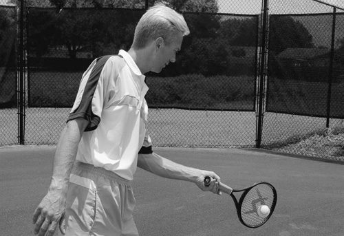
Topspin hay Flat?
Có một quan niệm sai lầm rằng các tay vợt hàng đầu chơi phẳng trên sân cứng, nghĩa là họ đánh bóng bằng mặt vợt phẳng thay vì thêm độ xoáy. Nghiên cứu mới nhất, được thực hiện trong các giải đấu trên mặt sân cứng, cho thấy những tay vợt hàng đầu như Andre Agassi và Roger Federer thực hiện các cú đánh mặt đất của họ với nhiều xoáy lên, tốc độ trên 1.500 vòng/phút. Những cú giao bóng đầu tiên của Pete Sampras đã đạt tới tốc độ 3.000 vòng/phút, trong khi một số cú giao bóng thứ hai của anh ấy được ghi nhận là quay trên 5.000 vòng/phút.
Witness Andre Agassi, Boris Becker, Pete Sampras, Gustavo Kuerten, Lleyton Hewitt, Roger Federer, Justine Henin-Hardenne, Andy Roddick, and all the Spanish players. Venus Williams hits ground strokes with an average topspin of 2,000 rpm.
Nghiên cứu những cầu thủ hàng đầu mọi thời đại, và bạn sẽ thấy rất nhiều pha xoay bóng: cú thuận tay của Bill Tilden và Jack Kramer, cú giao bóng của Pancho Gonzalez, cú trái tay của Don Budge và Tony Trabert, cú thuận tay của Manuel Santana, cú đánh của Rod Laver và Ivan Lendl ở cả hai bên. Trong hai thập kỷ qua, hiện tượng này đã trở nên phổ biến hơn. Chứng kiến Andre Agassi, Boris Becker, Pete Sampras, Gustavo Kuerten, Lleyton Hewitt, Roger Federer, Justine Henin-Hardenne, Andy Roddick, và tất cả các cầu thủ Tây Ban Nha. Venus Williams đánh những cú chạm đất với tốc độ xoáy lên trung bình là 2.000 vòng / phút. Serena Williams, Justine Henin-Hardenne, Lindsay Davenport, Jennifer Capriati, và các tay vợt nữ người Nga cũng chế ngự được sức mạnh khủng khiếp của mình bằng nhiều cú giật xoáy lên.
Serena Williams, Justine Henin-Hardenne, Lindsay Davenport, Jennifer Capriati, and the Russian female players likewise tame their tremendous power with plenty of topspin sting. Topspin is a forward roll, as if the ball were rolling forward on the ground. You create topspin by brushing up on the ball while stroking, lifting the racquet much higher than the intended line of flight of the ball. The forward rotation of the ball makes the air friction on top of the ball considerably higher than that on the underside. The air above the ball is pushed forward, increasing the pressure on the ball and pushing it downward. The air below the ball is pushed backward by the felt of the ball, thereby separating the air molecules below the ball and creating a zone of lower air pressure that pulls it down toward the ground. Topspin, in addition to the force of gravity, makes for a much more pronounced downward curve in the ball’s flight path. The ball drops much sooner than if it had no spin at all (a “flat” ball).
Topspin là một cú lăn về phía trước, như thể quả bóng đang lăn về phía trước trên mặt đất. Bạn tạo ra xoáy lên bằng cách đánh bóng lên trong khi vuốt bóng, nâng vợt lên cao hơn nhiều so với đường bay dự định của bóng.
The faster the ball rotates forward, the more downward force it has, accelerating it as if thrown down. Although still not widely taught at the beginner and intermediate levels, topspin is clearly a tremendous advantage to any player.
Chuyển động quay về phía trước của quả bóng làm cho ma sát không khí ở phía trên quả bóng cao hơn đáng kể so với ở mặt dưới. Không khí phía trên quả bóng bị đẩy về phía trước, làm tăng áp lực lên quả bóng và đẩy nó xuống. Không khí bên dưới quả bóng bị nỉ của quả bóng đẩy về phía sau, từ đó tách các phân tử không khí bên dưới quả bóng và tạo ra một vùng có áp suất không khí thấp hơn kéo nó xuống mặt đất.
It allows you to hit the ball with great force, well above the net, knowing that it will come down in the opponent’s court. A topspin ball is also going to take quite a jump after the bounce, making it difficult for your opponent to advance to the net or to hit a winner from the backcourt. Furthermore, its rotation impairs your opponent’s control of his shot. This happens very often at the professional level. You’ll see many rallies between the top players in the world where the ball doesn’t pass the service line by much, but it is still effective at keeping the other player back.
Topspin, ngoài lực hấp dẫn, còn tạo ra một đường cong đi xuống rõ rệt hơn nhiều trên đường bay của quả bóng. Quả bóng rơi xuống sớm hơn nhiều so với khi nó không hề quay (một quả bóng “phẳng”). Quả bóng quay về phía trước càng nhanh thì lực hướng xuống càng lớn, khiến nó tăng tốc như thể bị ném xuống.
The ball rotation also forces your opponent to resort to a safer shot than usual. This is a subtle factor not easily seen when you watch the pros, but if you observe just the racquet head as it approaches the ball and then accelerates, you’ll see how your favorite player pushes rather than hits the ball. Even today’s ultralight racquets are about five times heavier than tennis balls.
Mặc dù vẫn chưa được dạy rộng rãi ở cấp độ mới bắt đầu và trung cấp, nhưng xoáy lên rõ ràng là một lợi thế to lớn đối với bất kỳ người chơi nào. Nó cho phép bạn đánh bóng với một lực rất lớn, ở trên lưới, biết rằng nó sẽ rơi xuống phần sân đối phương. Một quả bóng xoáy lên cũng sẽ nhảy khá cao sau khi nảy lên, khiến đối thủ của bạn khó tiến vào lưới hoặc đánh trúng người chiến thắng từ phần sân sau. Hơn nữa, vòng quay của nó làm suy yếu khả năng kiểm soát cú đánh của đối thủ. Điều này xảy ra rất thường xuyên ở cấp độ chuyên nghiệp. Bạn sẽ thấy nhiều pha tranh bóng giữa các cầu thủ hàng đầu thế giới mà bóng không vượt qua đường giao bóng nhiều nhưng vẫn hiệu quả trong việc giữ chân cầu thủ kia ở lại. Việc xoay bóng cũng buộc đối thủ của bạn phải dùng đến cách đánh an toàn hơn bình thường.
Taking a hard swipe at a ball, as in baseball, results in too heavy a hit, with a resulting loss of control over its direction. You’ll achieve maximum control with a ground stroke that seems first to almost touch the ball with the racquet, then accelerate, generating plenty of ball speed. Unlike baseball, where the swing of the bat speeds up well before contacting the ball, the tennis stroke starts accelerating much closer to the impact. As a beginner, think of it happening from the impact point onward. At higher levels, tennis is not only a game of power but also a game of extreme precision and feel. This means the player tends to move the ball across the strings as if caressing it—in the same way you caress a cheek rather than slapping it. HAND-EYE COORDINATION Hand-eye coordination in tennis means tracking the ball with your eyes and connecting with it comfortably using your racquet. I call this finding the ball, and it’s the most underrated factor in tennis and the most important skill to learn. Without it, you can’t play well.
Đây là một yếu tố tinh tế không dễ thấy khi bạn quan sát các vận động viên chuyên nghiệp, nhưng nếu bạn chỉ quan sát đầu vợt khi nó tiếp cận bóng và sau đó tăng tốc, bạn sẽ thấy cầu thủ yêu thích của bạn đẩy hơn là đánh bóng như thế nào.
The forehand stroke in tennis is quite similar to catching a ball and then releasing it with an underhand throw over the net and into your opponent’s court. To coordinate your catch with the flight of the ball after the bounce, you track the ball with your right hand until you grab the ball. If you rush, putting your hand out too soon or closing your fingers before the ball arrives, you’ll miss the catch.
Ngay cả những cây vợt siêu nhẹ ngày nay cũng nặng hơn bóng tennis khoảng 5 lần. Vuốt mạnh vào một quả bóng, như trong bóng chày, sẽ dẫn đến một cú đánh quá mạnh, dẫn đến mất khả năng kiểm soát hướng của nó. Bạn sẽ đạt được khả năng kiểm soát tối đa với cú đánh chạm đất mà đầu tiên dường như gần như chạm bóng bằng vợt, sau đó tăng tốc, tạo ra nhiều tốc độ cho bóng. Không giống như bóng chày, nơi cú vung vợt tăng tốc trước khi tiếp xúc với bóng, cú đánh quần vợt bắt đầu tăng tốc gần hơn nhiều so với thời điểm va chạm. Khi mới bắt đầu, hãy nghĩ nó xảy ra từ điểm va chạm trở đi.
If you don’t follow the ball well with your eyes and hand, you’ll also miss the catch. The same goes for your strokes in tennis. If you want good control of your shots, you need to bring your racquet close to the ball before releasing your power. This is the most important skill that all top pros have mastered. To develop your eye for the bounce and subsequent flight of the tennis ball and to prime your coordination for tennis, practice the drills on pages 63–67. Do them barehanded (without a racquet) by yourself or with someone else, either at home, on the court, or anywhere with a firm surface. Even if you feel competent at it, do each drill a few times to become even more familiar with the bounce and changing speeds of the ball.
Ở cấp độ cao hơn, quần vợt không chỉ là trò chơi sức mạnh mà còn là trò chơi có độ chính xác và cảm giác cực cao. Điều này có nghĩa là người chơi có xu hướng di chuyển quả bóng qua dây như thể đang vuốt ve nó — giống như cách bạn vuốt ve má thay vì tát nó.
5. MASTER PUSHING 1.
Phối hợp tay mắt
Phối hợp tay-mắt trong quần vợt có nghĩa là theo dõi bóng bằng mắt và kết nối với bóng một cách thoải mái bằng vợt của bạn. Tôi gọi đây là việc tìm bóng, và đó là yếu tố bị đánh giá thấp nhất trong quần vợt và là kỹ năng quan trọng nhất cần học. Không có nó, bạn không thể chơi tốt. Cú đánh thuận tay trong quần vợt khá giống với việc bắt bóng rồi thả nó bằng cú ném thuận tay qua lưới và sang phần sân đối phương. Để phối hợp việc bắt bóng của bạn với đường bay của bóng sau khi nảy lên, bạn theo dõi quả bóng bằng tay phải cho đến khi bạn tóm được bóng. Nếu bạn vội vàng, đưa tay ra quá sớm hoặc khép ngón tay trước khi bóng đến, bạn sẽ bỏ lỡ cơ hội bắt bóng. Nếu bạn không theo dõi bóng tốt bằng mắt và tay, bạn cũng sẽ bỏ lỡ cơ hội bắt bóng.
To see how the pros push ground strokes at speeds in excess of 60 mph, grab a small cushion and go to an open space. Have someone hold it lightly at the top corner between two fingers or place the cushion on a raised surface such as a table. 2. With your hand open, take a swing and hit the side of the pillow as hard as you can. Observe how far it moves. 3. Repeat, placing the pillow on the table. Now place your hand on the side of the pillow, barely touching it, and then push it forward and upward as hard as you can. Observe that it moves much farther.
Điều tương tự cũng xảy ra với các cú đánh của bạn trong quần vợt. Nếu muốn kiểm soát tốt các cú đánh của mình, bạn cần đưa vợt lại gần bóng trước khi nhả lực. Đây là kỹ năng quan trọng nhất mà tất cả các chuyên gia hàng đầu đều thành thạo.
You may have to do some light running while doing these drills. Do things as slowly and efficiently as you can, keeping your eyes and your attention focused on the ball in flight. If some balls are uncomfortably out of reach, just let them go; you can pick them up later.
Để phát triển mắt của bạn về độ nảy và đường bay tiếp theo của quả bóng quần vợt cũng như để rèn luyện kỹ năng phối hợp khi chơi quần vợt, hãy thực hành các bài tập ở trang 63–67. Thực hiện chúng bằng tay không (không cần vợt) một mình hoặc với người khác, ở nhà, trên sân hoặc bất cứ nơi nào có bề mặt chắc chắn. Ngay cả khi bạn cảm thấy thành thạo, hãy thực hiện mỗi bài tập một vài lần để làm quen hơn với độ nảy và tốc độ thay đổi của quả bóng.
The emphasis here is on control and coordination, not speed. FORGET YOUR FEET Since you learned how to move your body at an early age, you have no need to relearn what you already know. At home, on the street, or at work, when you have to move to your left or right, you naturally turn and walk or run facing the direction you are heading. The same applies in tennis. Your body will move naturally to reach the ball.
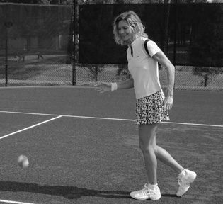
5. Bậc Thầy Đẩy
1. Để xem các chuyên gia đẩy các cú đánh trên mặt đất ở tốc độ vượt quá 60 dặm/giờ như thế nào, hãy lấy một chiếc đệm nhỏ và đi đến một không gian rộng mở. Nhờ ai đó giữ nhẹ ở góc trên cùng giữa hai ngón tay hoặc đặt đệm lên bề mặt nâng cao chẳng hạn như bàn.
You want to focus your attention on connecting your racquet with the ball, nothing else. Your eyes and hand lead, your body follows. WATCH OTHER PLAYERS If you have the opportunity, watch people playing tennis at a local club or on television and observe the following:
2. Mở tay ra, vung một cú và đập mạnh vào cạnh gối nhất có thể. Quan sát xem nó di chuyển bao xa.
• A forehand • A one-handed backhand
3. Lặp lại, đặt gối lên bàn. Bây giờ đặt tay của bạn lên thành gối, hầu như không chạm vào nó, sau đó đẩy nó về phía trước và hướng lên trên hết sức có thể. Quan sát thấy nó di chuyển xa hơn nhiều.
• A two-handed backhand • A forehand volley
Bạn có thể phải chạy nhẹ trong khi thực hiện các bài tập này. Làm mọi việc chậm rãi và hiệu quả nhất có thể, giữ cho đôi mắt và sự chú ý của bạn tập trung vào quả bóng đang bay. Nếu một số quả bóng nằm ngoài tầm với một cách khó chịu, hãy để chúng đi; bạn có thể nhặt chúng sau. Sự nhấn mạnh ở đây là kiểm soát và phối hợp chứ không phải tốc độ.
• A backhand volley • A service • An overhead • The racquet’s approach to the ball on a ground stroke
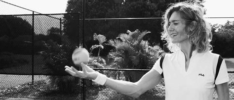
Hãy quên đôi chân của bạn đi
Vì bạn đã học cách di chuyển cơ thể từ khi còn nhỏ nên bạn không cần phải học lại những gì bạn đã biết. Ở nhà, trên đường hoặc ở nơi làm việc, khi bạn phải di chuyển sang trái hoặc phải, bạn sẽ quay đầu lại và đi hoặc chạy một cách tự nhiên theo hướng bạn đang hướng tới. Điều tương tự cũng được áp dụng trong quần vợt. Cơ thể bạn sẽ di chuyển tự nhiên để tiếp cận bóng. Bạn muốn tập trung sự chú ý của mình vào việc kết nối cây vợt của bạn với quả bóng, không có gì khác. Mắt và tay bạn dẫn dắt, cơ thể bạn đi theo.
• Acceleration of the racquet head after ball contact • Lifting the ball • Pushing the ball • How the ball slows in flight and at the bounce • How the arc after the bounce is much more pronounced • How the ball slows by the time it reaches the other baseline
Xem người chơi khác
Nếu bạn có cơ hội, hãy xem mọi người chơi tennis ở câu lạc bộ địa phương hoặc trên tivi và quan sát những điều sau:
Stand comfortably facing the net (left). The natural, easy way to approach the ball is to turn while tracking the ball with your hand, as if intending to catch it (right).
- Cú thuận tay
- Cú trái tay một tay
- Cú đánh trái tay bằng hai tay
- Cú vô lê thuận tay
- Cú vô lê trái tay
- Cú giao bóng
- Cú đánh qua đầu
- Cách tiếp cận bóng của vợt trong một cú đánh trên mặt đất
- Gia tốc của đầu vợt sau khi tiếp xúc với bóng
- Nâng bóng
- Đẩy bóng
- Bóng bay chậm lại như thế nào khi bay và khi nảy lên
- Vòng cung sau khi nảy rõ ràng hơn nhiều như thế nào
- Bóng chậm lại như thế nào khi nó chạm tới đường cơ sở khác
Đứng thoải mái hướng mặt vào lưới (trái).
Cách tiếp cận bóng tự nhiên, dễ dàng là xoay người trong khi theo dõi bóng
bằng tay như thể có ý định bắt nó (phải).
Hướng mặt về phía quả bóng để tìm nó bằng tay (trái).
Giơ tay lên trong khi quay về phía giữa (giữa).
Quay trở lại trung tâm, sẵn sàng cho quả bóng tiếp theo (phải).
Khi bạn bắt một quả bóng chày hoặc bóng đá, bạn không nghĩ về từng bước đi hoặc chuyển động của cơ thể. Bạn chỉ cần chạy nhanh, tiết kiệm sức lực và tập trung phần lớn sự chú ý vào quả bóng và đôi tay khi bắt bóng. Bạn di chuyển về phía quả bóng theo bản năng mà không cần nghĩ đến đôi chân của mình.
Face the ball to find it with your hand (left). Keep your hand up while you turn toward the center (middle). Return to the center, ready for the next ball (right).
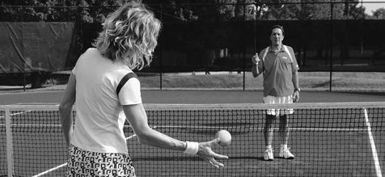
Thời gian và sự phối hợp
Bạn di chuyển càng chậm với tốc độ bóng chậm này (xem trang 63–67), bạn càng dễ hiểu cơ chế của cú đánh và bạn càng có thể điều chỉnh nhanh hơn ở tốc độ bóng cao hơn khi bạn trở nên thành thạo hơn.
When you catch a baseball or football, you don’t think about every step or body movement. You just run fast with economy of effort and keep most of your attention on the ball and your hands as you catch it. You move toward the ball instinctively, without thinking of your feet.
Hãy tính toán thời gian của bạn tùy theo tốc độ bóng bay về phía bạn và mức độ di chuyển tiết kiệm của bạn. Bạn chắc chắn sẽ nhận thấy nếu bạn thực hiện cú swing muộn vì bạn sẽ cảm thấy bóng đã bay qua mình. Nếu bạn chỉ muộn một chút, bạn sẽ có thể giữ bóng trong cuộc. Nếu đến quá sớm, bạn có nhiều khả năng sẽ mất quyền kiểm soát bóng. Đợi cho đến khi bóng nảy lên trước khi di chuyển vợt qua lại để tạo lực. Nó gần giống như chạm vào quả bóng trước khi đánh nó.
TIMING AND COORDINATION The slower you move with these slow ball speeds (see pages 63–67), the easier it will be for you to understand the mechanics of the swing, and the faster you’ll be able to make adjustments at higher ball speeds as you become more skilled. Work out your timing according to the speed of the ball coming toward you and how economically you can move. You will definitely notice if you are late in your swing because you will feel the ball is past you. If you are only slightly late, you will be able to keep the ball in play. If you are too early, you’re more likely to lose control of the ball.
Đừng để ai thúc ép bạn. Một số người có thể thúc giục bạn mang vợt về sớm nhưng điều này sẽ chỉ cản trở việc tính toán thời gian của chính bạn. Bạn cần phải tự mình giải quyết vấn đề này. Bạn có tất cả “dữ liệu” cần thiết để đánh giá thời gian của mình và thế giới xung quanh bạn càng yên tĩnh thì bạn càng làm tốt hơn. Tiếp cận quả bóng tennis theo cách tương tự như thể bạn sắp bắt nó. Bạn sẽ sớm nhận ra rằng trong quần vợt, cánh tay và bàn tay có thể di chuyển độc lập với phần còn lại của cơ thể. Hãy để đôi chân của bạn tự chăm sóc và tập trung vào quả bóng và bàn tay của bạn.
Wait until well after the bounce before moving your racquet back and then forth to generate power. It is almost like touching the ball before hitting it. Don’t let anyone rush you. Some people may urge you to bring the racquet back early, but this will only interfere with your own timing. You need to work this out for yourself. You have all the “data” you need to judge your timing, and the quieter the world around you, the better you will do. Approach the tennis ball the same way—as if you were going to catch it.
Khi được kéo ra mép xa của sân để tiếp bóng, các cầu thủ hàng đầu quay người và chạy thẳng về phía bóng. Hãy chú ý điều này vào lần tới khi bạn xem một giải đấu. Trong huấn luyện thông thường, bạn được dạy thực hiện các bước ngang trước, sau đó xoay người trước khi đánh bóng. Những bước lùi mà đôi khi bạn nhìn thấy giữa các cú đánh ở cấp độ chuyên nghiệp là phản ứng tự nhiên của một vận động viên được đào tạo bài bản, từ từ drift trong khi quan sát xem đối thủ sẽ đánh tiếp theo ở đâu. Nhưng việc yêu cầu thực hiện các bước sang bên này mỗi khi bạn di chuyển sang một bên sân sẽ buộc người chơi phải thực hiện một chuyển động không tự nhiên. Phương pháp xoay người để chạy về phía bóng một cách tự nhiên này là một trong những kỹ thuật khiến hệ thống huấn luyện của tôi khác biệt với các hệ thống thông thường.
You’ll soon realize that in tennis the arms and hands can move independently of the rest of the body. Let your feet look after themselves and focus on the ball and your hands. When pulled to the far edge of the court to reach the ball, top players turn and run straight to the ball. Notice this the next time you watch a tournament. In conventional coaching, you are taught to take side steps first, and then turn before you hit the ball. The side steps you sometimes see between shots at the professional level are a natural response of a well- trained athlete slowly drifting while watching to see where the opponent hits next. But demanding these side steps every time you move to the side of the court forces an unnatural motion on a player. This natural method of turning to run toward the ball is one of the techniques that sets my coaching system apart from conventional systems. Conventional tennis teaching makes you think about the position of your feet practically all the time you’re playing. This is hand-eye-foot coordination, which effectively destroys hand-eye coordination.
Việc dạy quần vợt thông thường khiến bạn phải suy nghĩ về vị trí của bàn chân một cách thực tế trong suốt thời gian bạn chơi. Đây là sự phối hợp tay-mắt-chân, có tác dụng phá hủy sự phối hợp tay-mắt. Di chuyển theo bản năng là một trong những điểm nổi bật của Phương pháp Wegner.
Moving instinctively is one of the hallmarks of the Wegner Method. PLAY LIKE THE PROS THE DISCIPLINE OF WAITING How do you define instinct? At the highest level of performance, perceptions come in and decisions go out at speeds too fast for the conscious mind to grasp. Ironically, you can develop this by waiting—by taking your time.
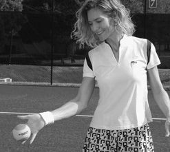
Chơi như dân chuyên nghiệp
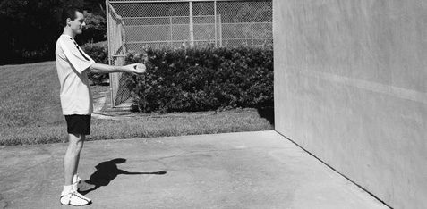
Kỷ luật chờ đợi
Bạn định nghĩa bản năng như thế nào? Ở mức độ hiệu suất cao nhất, nhận thức xuất hiện và các quyết định được đưa ra với tốc độ quá nhanh để tâm trí có ý thức có thể nắm bắt được. Trớ trêu thay, bạn có thể phát triển điều này bằng cách chờ đợi - bằng cách dành thời gian. Ngược lại, bạn có thể đánh mất nó nếu vội vã.
Conversely, you can lose it by rushing. In professional tennis, when the player is well focused, playing by instinct and feel, the ball can be traveling at a high velocity, but the player feels no need to rush. He looks for the ball with the racquet as if it is part of his body, an extension of his hand. Finding the ball, he explodes with power, guiding the ball over the net in the intended direction. The focus is on finding the ball and repeating a certain feel in each stroke.
Trong quần vợt chuyên nghiệp, khi người chơi tập trung tốt, chơi theo bản năng và cảm giác, bóng có thể di chuyển với vận tốc cao nhưng người chơi cảm thấy không cần phải vội vàng. Anh ta tìm kiếm quả bóng bằng vợt như thể nó là một phần cơ thể anh ta, một phần mở rộng của bàn tay anh ta. Tìm thấy bóng, anh ta bùng nổ sức mạnh, dẫn bóng qua lưới theo hướng đã định. Trọng tâm là tìm bóng và lặp lại một cảm giác nhất định trong mỗi cú đánh. Về cơ bản, tuyển thủ chuyên nghiệp đang cố gắng ngăn chặn việc đến sớm, điều mà theo kinh nghiệm anh ta biết là nguyên nhân chính gây ra hầu hết các sai lầm. Càng đến sớm, bạn càng mất cảm giác.
Basically, the pro player is trying to prevent being early, which by experience he knows is the main cause of most mistakes. The earlier you are, the more you lose feel. Attention to the sound of each shot is equally important when focusing on feel and using the discipline of waiting. It takes the mind off distractions. That is why top pros play better when there is absolute silence during a point. They hear the opponent’s stroke, the bounce, and then their own stroke. These sounds help the player focus and stay in the present time. One of the most difficult things in tennis is to avoid rushing the shot. Even at the high speeds of a top-level game, I have counted more than 80 percent of pro errors resulting from rushing.
Việc chú ý đến âm thanh của mỗi cú đánh cũng quan trọng không kém khi tập trung vào cảm giác và áp dụng kỷ luật chờ đợi. Nó giúp tâm trí thoát khỏi phiền nhiễu. Đó là lý do tại sao các chuyên gia hàng đầu chơi tốt hơn khi có sự im lặng tuyệt đối trong một thời điểm. Họ nghe thấy cú đánh của đối thủ, cú nảy và sau đó là cú đánh của chính họ. Những âm thanh này giúp người chơi tập trung và ở lại thời điểm hiện tại.
Only a small percentage of errors came from hitting late. To find out how much time you have after the bounce of the ball, count (silently) “1” at the bounce, then “2,” “3,” “4,” and “5” at the hit. You’ll see how much time you have. After trying this counting drill, many players, including pros, are usually in disbelief of their former “rushing to prepare” strategy, realizing how much trouble it has created for them. Work the other way around by finding out how you can expand the waiting time while stalking the ball. You don’t want to be standing still, but beware of bringing your racquet back early. By taking your time, you’ll become a smoother player and your errors will be less frequent.
Một trong những điều khó khăn nhất trong quần vợt là tránh đánh bóng vội vàng. Ngay cả ở tốc độ cao của một trò chơi cấp cao nhất, tôi đã đếm được hơn 80% lỗi chuyên nghiệp do vội vàng. Chỉ có một tỷ lệ nhỏ lỗi xảy ra do đánh muộn.
6. MASTER HAND-EYE COORDINATION • Toss the ball underhand higher than your head and catch it underhand on its way down (see photos below). Repeat until you can catch the ball comfortably every time.
Để biết bạn có bao nhiêu thời gian sau khi bóng nảy lên, hãy đếm (âm thầm) “1” khi bóng nảy, sau đó là “2,” “3,” “4” và “5” khi bóng nảy. Bạn sẽ thấy bạn có bao nhiêu thời gian.
• Toss the ball underhand higher than your head. Let it bounce up, then catch it underhand on its way down. Repeat, tossing the ball to different heights, until you can catch it smoothly every time.
Sau khi thử bài tập đếm này, nhiều người chơi, bao gồm cả những người chơi chuyên nghiệp, thường không tin vào chiến lược "vội vã chuẩn bị" trước đây của họ, nhận ra rằng nó đã tạo ra bao nhiêu rắc rối cho họ.
• On a tennis court or other firm surface, stand about 15 feet away from your partner and have her toss the ball to you. The highest point of the toss should be about 6 feet. The ball should bounce well in front of you so that it starts to arc down by the time you catch it underhand (see top photo next page).
Hãy làm ngược lại bằng cách tìm ra cách bạn có thể kéo dài thời gian chờ đợi trong khi theo dõi quả bóng. Bạn không muốn đứng yên nhưng hãy cẩn thận khi mang vợt về sớm. Bằng cách dành thời gian, bạn sẽ trở thành một người chơi mượt mà hơn và lỗi của bạn sẽ ít xảy ra hơn.
Throw it back underhand. (If you don’t have someone to work with, skip to the solo drills beginning on page 65.) • Using the palm of your hand, practice pushing up the ball toward your partner, who catches it. Repeat until you connect with the ball every time (see middle photo next page).
6. Bậc thầy phối hợp tay mắt
- Tung bóng bằng tay cao hơn đầu và bắt bóng bằng tay khi bóng rơi xuống (xem ảnh bên dưới). Lặp lại cho đến khi bạn có thể bắt bóng thoải mái mỗi lần.
- Tung bóng bằng tay cao hơn đầu. Hãy để nó bật lên, sau đó dùng tay đỡ nó khi nó rơi xuống. Lặp lại, tung bóng lên các độ cao khác nhau cho đến khi bạn có thể bắt bóng một cách trơn tru mỗi lần.
- Trên sân tennis hoặc bề mặt chắc chắn khác, đứng cách bạn tập khoảng 15 feet và để cô ấy ném bóng cho bạn. Điểm cao nhất của cú ném phải là khoảng 6 feet. Bóng phải nảy tốt trước mặt bạn để nó bắt đầu cong xuống khi bạn bắt bóng bằng tay (xem ảnh trên cùng trang tiếp theo). Ném nó trở lại dưới tay. (Nếu bạn không có người cùng luyện tập, hãy chuyển sang phần luyện tập solo bắt đầu từ trang 65.)
- Dùng lòng bàn tay, tập đẩy bóng lên về phía đối tác của bạn, người sẽ bắt bóng. Lặp lại cho đến khi bạn luôn kết nối với quả bóng (xem ảnh ở giữa trang tiếp theo).
- Bây giờ hãy hoàn thành động tác vung cánh tay của bạn với bàn tay của bạn đưa qua vai trái và chạm vào vai này bằng ngón trỏ. Điều này giúp bạn quen với việc di chuyển cánh tay của mình một cách chính xác khi đánh bóng bằng vợt. Cú đẩy của bạn phải nâng quả bóng lên trên tầm mắt và về phía đối tác của bạn (xem ảnh dưới cùng).
Tung bóng lên bằng tay.
Bắt bóng bằng tay.
Bắt bóng bằng tay.
- Đánh bóng qua lại, dùng lòng bàn tay phải đẩy bóng qua lưới. (Sử dụng bàn hoặc ghế đặt giữa bạn và đối tác nếu bạn không ở trên sân.) Lặp lại cho đến khi bạn có thể dễ dàng tập hợp lại. Tập trung vào việc tìm bóng mọi lúc và đẩy nó lên về phía đối tác của bạn, đồng thời dứt điểm qua vai của bạn (xem hình minh họa).
Đẩy bóng lên về phía đối tác của bạn.
Kết thúc bằng mu bàn tay sát má bạn.
Tập hợp trên một chiếc ghế.
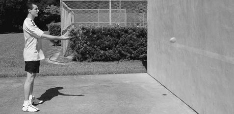
Bài tập một mình
- Ném bóng bằng tay vào tường. Hãy để nó bật lại và bật lên khỏi mặt đất. Bắt nó bằng tay khi nó bắt đầu rơi xuống đất lần nữa. Bắt bóng ở độ cao thoải mái, thấp hơn thắt lưng một chút. Thực hành tăng khoảng cách của bạn với tường và thay đổi độ cao nơi bạn chạm vào tường cho đến khi bạn có thể bắt được nó một cách trơn tru mọi lúc. Xem ảnh bên dưới và trang tiếp theo.
- Tiếp theo, dựa vào tường, đánh bóng bằng lòng bàn tay thay vì bắt bóng (xem ảnh trên trang tiếp theo).
- Đảm bảo bạn hoàn thành động tác vung cánh tay với bàn tay của bạn đặt qua vai trái và chạm vào bằng ngón trỏ (xem ảnh dưới cùng ở trang tiếp theo). Điều này giúp bạn quen với việc uốn cong cánh tay khi đánh bóng bằng vợt. Lực đẩy của bạn sẽ nâng quả bóng lên cao hơn tầm mắt về phía tường.
Giữ bóng bằng tay và ném nó.
Tung bóng bằng tay.
Theo dõi bóng.
Bắt bóng bằng tay.
Lúc này, thay vì lao vào đánh bóng, bạn nên:
• Now complete the swing of your arm with your hand ending up over your left shoulder, which you touch with your index finger.
- Đưa tay của bạn đến gần quả bóng và ở dưới nó một chút
- Tăng tốc từ điểm tiếp xúc trở đi theo chuyển động hướng lên trên
- Kết thúc bằng cách chạm vào vai của bạn (để biết thêm về cách dứt điểm, hãy xem thanh bên ở trang 68)
Ngay cả khi chân bạn đang lao tới để chạm bóng, cánh tay và bàn tay của bạn cần phải di chuyển nhịp nhàng để tìm bóng, với toàn bộ sức lực được áp dụng từ điểm tiếp xúc trở đi.
This accustoms you to moving your arm correctly when hitting a ball with a racquet. Your push should lift the ball above eye level and toward your partner (see bottom photo). Toss the ball up underhand.
Nếu bạn gặp khó khăn với bất kỳ bài tập nào, hãy tiếp tục thực hiện bài tập cụ thể đó.
Catch the ball underhand.
Đánh bóng lên.
Nâng và kết thúc qua vai.
Đạt đến mức mà bạn có thể thực hiện một cách thoải mái trước khi thử chơi bằng vợt.
Catch the ball underhand. • Play the ball back and forth, using the palm of your right hand to push the ball over the net.
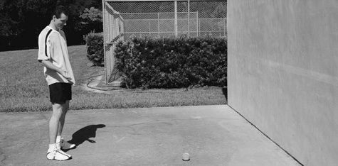
7. Bước chân bậc thầy
- Yêu cầu đồng đội của bạn ném bóng vào từng góc của sân khi bạn đứng ở giữa đường cuối sân. Xoay và chạy để bắt chúng.
- Bây giờ hãy cố gắng bước sang một bên để chạm bóng. Bạn sẽ nhanh chóng thấy điều này kém hiệu quả như thế nào.
- Lần này, yêu cầu đối tác của bạn thực hiện các cú đánh nhanh hơn, sâu hơn và rộng hơn tới từng góc cho đến khi bạn có thể tiếp cận chúng mà không cần chú ý đến đôi chân và hoàn toàn tập trung vào tay và bóng.
Tập trung vào phần hoàn thiện
Tôi đã phát hiện ra rằng chìa khóa để chinh phục nỗi sợ hãi và lo lắng của mọi người khi thực hiện bất kỳ cú đánh nào trong quần vợt là luôn cố gắng hoàn thành cú đánh ở cùng một vị trí. Trên thực tế, mục tiêu quan trọng nhất của bạn khi chơi là hoàn thành cú đánh của mình, bất kể điều gì có thể xảy ra với quả bóng. Bóng đến có thể nảy không tốt hoặc không thể đoán trước nhưng chỉ cần tập trung tìm bóng và kết thúc cú đánh như bình thường. Khi bạn tiến bộ, theo bản năng, bạn sẽ điều chỉnh các phần khác của cú đánh, chẳng hạn như góc vợt, để hướng bóng sang phần sân khác.
(Use a table or chair placed halfway between you and your partner if you’re not on a court.) Repeat until you can easily rally back and forth. Focus on finding the ball all the time and pushing it upward toward your partner, while finishing over your shoulder (see illustration). Push the ball upward toward your partner. Finish with the back of the hand by your cheek. Rally over a chair. Solo Drills • Toss the ball underhand against a wall. Let it rebound and bounce off the ground. Catch it underhand when it starts to fall toward the ground again.
Tập trung vào việc dứt điểm là một trong những bí mật được giữ kín nhất của các chuyên gia hàng đầu. Nó cho phép bạn ngừng chú ý đến việc băn khoăn về cách kết nối với quả bóng và thay vào đó tập trung vào việc đưa nó đến nơi bạn muốn. Nó cũng cho phép bạn di chuyển tự nhiên hơn, không tập trung vào hướng di chuyển của chân mà tập trung vào cảm giác của trận đấu—cảm giác cầm vợt trong tay bạn và cảm giác bóng trên dây vợt của bạn. Con người có xu hướng lo lắng quá nhiều về cơ chế thực hiện mọi việc. Vì vậy, đừng là con người. Vào những ngày thi đấu đỉnh cao của mình, các chuyên gia hàng đầu có thể trông giống như những vị thần trên sân vì họ tập trung vào cảm giác, đặc biệt là cảm giác tăng tốc khi đi qua bóng và kết thúc cú đánh. Dành quá nhiều sự chú ý vào các lĩnh vực khác và bạn sẽ có mười cú xoay chuyển khác nhau. Cú vung vợt chuyên nghiệp cho mỗi cú đánh (thuận tay, trái tay và giao bóng) luôn trông giống nhau. Mỗi cú swing luôn được xác định rõ ràng, được phân biệt chủ yếu ở cách nó kết thúc.
Catch the ball at a comfortable height, a bit below your waist. Practice increasing your distance from the wall and varying the height where you hit the wall until you can catch it smoothly every time. See photos below and next page. • Next, rally against the wall, hitting the ball with the palm of your hand instead of catching it (see top photo next page). • Ensure you complete the swing of your arm with your hand ending up over your left shoulder, which you touch with your index finger (see bottom photo next page). This accustoms you to bending your arm when hitting a ball with a racquet. Your push should lift the ball above eye level toward the wall. Hold the ball underhand and toss it. Toss the ball underhand. Track the ball. Catch the ball underhand. By now, rather than rushing to hit the ball, you should be: • Bringing your hand near the ball and a little below it • Accelerating from the contact point onward in an upward motion • Finishing by touching your shoulder (for more on finishing, see the sidebar on page 68) Even if your feet are rushing to reach the ball, your arm and hand need to move smoothly to find the ball, with all your effort applied from the contact point onward. If you have difficulty with any drill, keep working on that particular one. Hit the ball up.
Tìm quả bóng hơi ở phía trước bạn (trái).
Tập trung vào cú dứt điểm giúp đưa bóng đến nơi bạn muốn dễ dàng hơn
(phải).
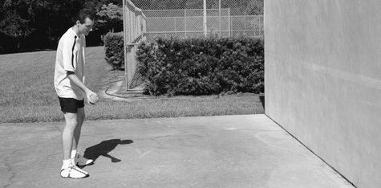
Chơi như dân chuyên nghiệp
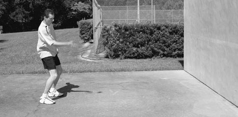
Chơi bằng tay
Trong quần vợt, cũng như trong nhiều môn thể thao khác, bạn càng ít nghĩ về vị trí cơ thể và càng tập trung vào quả bóng ở hiện tại, bạn sẽ càng có nhiều cảm giác hơn. Các chuyên gia quần vợt chơi ở hiện tại và bạn cũng vậy.
Lift and finish over the shoulder. Reach the point where you can do it comfortably before you try to play with a racquet. 7. MASTER FOOTWORK
Cố gắng đánh giá tốc độ của quả bóng bằng tâm trí chỉ khiến quần vợt trở nên khó khăn hơn. Nhưng đây là bí mật – bạn không cần phải phán xét nó. Chỉ cần nhìn vào quả bóng một cách cẩn thận. Bạn sẽ thấy nó chậm lại như thế nào, đầu tiên là trong không khí khi nó tiến về phía bạn, và sau đó giảm đáng kể sau khi bật lên. Nghiên cứu đã chỉ ra rằng từ đường cơ sở này đến đường cơ sở khác, quả bóng mất gần 60% tốc độ. Quả bóng luôn cong xuống. Tốc độ càng giảm thì càng giảm rõ nét.
• Have your partner throw balls to each corner of the court as you stand in the middle of the baseline. Pivot and run to catch them. • Now try to sidestep to reach the ball. You’ll quickly see how inefficient this is. • This time have your partner send faster, deeper, and wider shots to each corner until you can reach them with zero attention on your feet and all your focus on your hand and the ball. FOCUSING ON THE FINISH I have found that the key to conquering the fears and worries people have when executing any stroke in tennis is to work on always finishing the stroke in the same spot. In fact, your most important goal as you play is to finish your stroke, no matter what may happen to the ball. An incoming ball may bounce badly or unpredictably but just focus on finding it and finishing the stroke as usual.
Hãy dành thời gian và trở thành người quan sát khi bạn chạy tới quả bóng. Chân của bạn có thể di chuyển nhanh để tiếp cận bóng, nhưng cánh tay của bạn có thể đợi lâu hơn để bóng đến trong tầm tay của bạn. Các chuyên gia quần vợt có những tư thế cơ thể yêu thích khi họ không vội vã thực hiện cú đánh. Nhưng khi vội vã, họ sẵn sàng từ bỏ sở thích tiếp cận bóng bằng vợt; tiếp cận bóng là mối quan tâm chính của họ chứ không phải sự cân bằng của họ.
As you progress, you’ll instinctively adjust the other parts of your stroke, such as the racquet angle, to guide the ball into the other court. Focusing on the finish is one of the best-kept secrets among the top pros. It enables you to take your attention off wondering about how to connect with the ball and focus instead on sending it where you want. It also allows you to move more naturally, taking your attention off where your feet are going and putting it on the feel of the game—the feel of the racquet in your hands and the feel of the ball on your racquet strings. Human beings tend to worry too much about the mechanics of how things are done. So don’t be human. On their best days, top pros can look like gods on the court because they’re focusing on feel, especially the feel of the acceleration through the ball and the finish of the stroke.
Khi một vận động viên chuyên nghiệp hàng đầu có bóng trong tầm tay, anh ta tập trung đánh nó qua lưới, di chuyển bàn tay độc lập với phần còn lại của cơ thể để hoàn thành mục tiêu đó. Những chuyên gia hàng đầu chơi tennis bằng tay và phần còn lại của cơ thể di chuyển theo bản năng để hỗ trợ cho bàn tay.
Put too much attention on other areas and you’ll have ten different swings. A pro’s swing for each stroke (forehand, backhand, and serve) always looks the same. Each swing is always well defined, distinguished mostly by the way it ends. Find the ball slightly in front of you (left). Focusing on the finish makes it easier to put the ball where you want it (right).
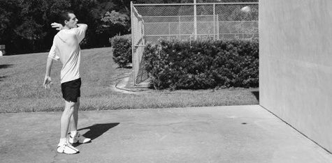
Chơi như dân chuyên nghiệp
Dạy học thông thường và tài năng
Khi bạn xem một vận động viên quần vợt chuyên nghiệp hàng đầu, bạn có thể ngạc nhiên về khả năng đặt bóng của cô ấy bất kể lực tạo ra bởi cú đánh. Bạn cũng có thể ngưỡng mộ sự tập trung, những bước di chuyển duyên dáng, thái độ, thái độ và ý chí chiến thắng của cô ấy, cũng như cách người chơi chuyên nghiệp xử lý sức mạnh của người chơi khác.
PLAY LIKE THE PROS PLAY WITH THE HAND In tennis, as in many other sports, the less you think about body positions and the more you focus on the ball in the present, the more feel you’ll have. Tennis pros play in the present and so should you. Trying to judge the speed of the ball with your mind only makes tennis more difficult. But here’s the secret—you don’t need to judge it. Just look at the ball carefully.
Trình độ kỹ năng của những chuyên gia này có vẻ siêu phàm nhưng cực kỳ đơn giản và hiệu quả. Các sinh viên quần vợt đã tin rằng họ không nên sao chép những người chuyên nghiệp, đặc biệt là trong giai đoạn đầu học chơi. Nhưng những tay vợt chuyên nghiệp hàng đầu đó rất tự nhiên, rất mạnh mẽ trong môn quần vợt của họ, tại sao không sao chép các cú đánh của họ?
You’ll see how much it slows down, first in the air as it comes toward you, and then appreciably more after the bounce. Research has shown that from baseline to baseline, the ball loses close to 60 percent of its speed. The ball always curves downward. The more it decreases in speed, the sharper it drops. Take your time and become an observer as you run to the ball. Your legs may be moving fast to reach the ball, but your arm can wait far longer for the ball to come within your reach.
Một trong những lý do thường xuyên nhất khiến mọi người ngại sao chép các tay vợt hàng đầu là sự đồng thuận trong ngành giảng dạy quần vợt rằng đây là một đề xuất không hợp lý, rằng các kỹ thuật mà các tay vợt chuyên nghiệp sử dụng chỉ phù hợp với những người có năng khiếu siêu phàm, những người sinh ra với trình độ kỹ năng không thể tin được. Họ khuyên bạn chỉ nên sao chép những chuyên gia hàng đầu sau khi bạn đã giỏi. Đây là điều vô nghĩa. Những chuyên gia này rất giỏi vì họ đã bắt đầu chơi theo cách họ chơi. Việc né tránh sự đơn giản tột độ trong trò chơi của một tay vợt hàng đầu đang gây ra những vấn đề nghiêm trọng trong nghề dạy quần vợt cũng như mức độ phổ biến của trò chơi này. Và điều này thật đáng buồn vì bất kỳ ai cũng có thể học quần vợt một cách nhanh chóng và đạt đến trình độ chơi cao hơn bằng cách sao chép những tay vợt giỏi nhất thế giới. Về bản chất, bạn có thể tài năng hơn và có nhiều khả năng hơn những gì bạn được các hệ thống thông thường đánh giá cao (hoặc những gì bạn tự đánh giá cao). Bạn sẽ chỉ thể hiện được những tài năng này nếu bạn bắt đầu sử dụng đúng kỹ thuật.
Tennis professionals have favorite body positions when they are not rushed to stroke. But when rushed, they readily abandon their preferences to reach the ball with the racquet; reaching the ball is their main concern, not their balance. When a top pro has the ball within his reach, he concentrates on hitting it over the net, moving the hand independently of the rest of the body to accomplish that aim. Top pros play tennis with the hand, and the rest of the body moves instinctively to help the hand. PLAY LIKE THE PROS CONVENTIONAL TEACHING AND TALENT When you watch a top tennis pro, you may marvel at her ability to place the ball regardless of the power generated by the shot. You may also admire her focus, graceful moves, demeanor, attitude, and will to win, as well as how the pro handles the power of the other player. The skill level of these pros seems superhuman yet extremely simple and efficient. Tennis students have been led to believe they should not copy the pros, especially in the beginning stages of learning the game. But those top pros are so natural, so powerful in their tennis, why not copy their strokes? One of the most frequent reasons people shy away from copying the top players is the consensus within the tennis teaching industry that this is an unreasonable proposition, that the techniques used by pro players are only suited to the super-gifted, to those born with an unbelievable level of skill. They recommend that you copy the top pros only after you are good. This is nonsense. These pros are good because they started playing the way they play. Shying away from the extreme simplicity of a top player’s game is causing severe problems in the tennis teaching profession and in the popularity of the game. And this is sad because anyone can learn tennis quickly and reach a higher level of playing by copying the best players in the world. In essence, you may be much more talented and have much more ability than you are credited with by conventional systems (or that you credit yourself with). You’ll show these talents only if you start using the right techniques.
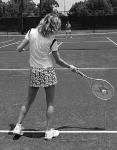
Chơi như dân chuyên nghiệp
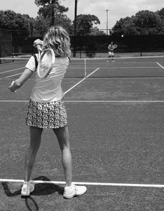
Nằm xuống hay đi lên?
Một trong những điều không tự nhiên nhất khi chơi quần vợt là buộc bản thân phải nằm xuống trong khi thực hiện cú đánh, như thể bạn đang ngồi xuống trong khi thực hiện cú đánh của mình. Không có chuyên gia hàng đầu nào làm điều này. Tại sao các chuyên gia lại xuất hiện? Bởi vì việc cúi xuống sẽ bẫy cú swing thay vì tạo điều kiện thuận lợi cho nó. Thân thể tự nhiên muốn đi lên. Hãy thử vung vật gì đó giống như một con lắc từ tay bạn và nhận thấy rằng nếu bạn hạ tay xuống, con lắc sẽ chậm lại. Nếu bạn giơ tay lên, con lắc sẽ tăng tốc.
PLAY LIKE THE PROS STAY DOWN OR COME UP? One of the most unnatural things to do while playing tennis is to force yourself to stay down through the stroke, as if you were sitting down while executing your stroke. None of the top pros do this. Why do the pros come up? Because staying down traps the swing instead of facilitating it. The body naturally wants to come up. Try swinging something resembling a pendulum from your hand and notice that if you lower your hand, the pendulum slows down. If you raise your hand, the pendulum accelerates. Lifting from the trunk and legs helps pros accelerate the stroke.
Nâng từ thân và chân giúp các chuyên gia tăng tốc cú đánh. Những ví dụ điển hình là Andre Agassi, Serena Williams, Roger Federer, Justine Henin-Hardenne và Lleyton Hewitt, những người đã nâng rất nhiều cú đánh thuận tay đến nỗi họ thường rơi khỏi mặt đất.
Prime examples are Andre Agassi, Serena Williams, Roger Federer, Justine Henin-Hardenne, and Lleyton Hewitt, who lift so much on the forehand stroke that often they come off the ground. In actuality, a minimum of body lift is necessary to feel comfortable. Otherwise you’ll lock up your body, twisting it forcefully, and be more prone to back and hip injuries than players who lift up. Staying down combined with the traditional closed stance on the forehand is also a major contributor to knee injuries.
Trên thực tế, cần phải nâng cơ thể ở mức tối thiểu để cảm thấy thoải mái. Nếu không, bạn sẽ khóa chặt cơ thể, vặn vẹo mạnh và dễ bị chấn thương lưng và hông hơn so với những người chơi nâng người lên. Nằm xuống kết hợp với tư thế khép kín truyền thống ở cú thuận tay cũng là nguyên nhân chính gây ra chấn thương đầu gối.
If the ball is short and low or you are reaching far in front, you may need to get down to reach it. But making a player stay down for every shot is a major block to improvement. Top players develop a feel for the optimum move in a particular situation, staying down for some shots, coming up for others. This is true even for the backhand slice and volley.
Nếu bóng ngắn và thấp hoặc bạn đang vươn xa về phía trước, bạn có thể phải cúi xuống để chạm bóng. Nhưng việc buộc một cầu thủ phải ngồi yên sau mỗi cú đánh là một trở ngại lớn để cải thiện. Những cầu thủ hàng đầu phát triển cảm giác về nước đi tối ưu trong một tình huống cụ thể, đứng xuống trong một số cú đánh, tiến lên để thực hiện những cú đánh khác. Điều này đúng ngay cả với cú cắt bóng trái tay và cú vô lê. John McEnroe, cầu thủ ghi bàn giỏi nhất mọi thời đại theo đánh giá của tôi, đã áp dụng phong cách này. Vì vậy hãy cẩn thận với cái bẫy buộc bản thân phải nằm yên. Làm bất cứ điều gì cảm thấy tự nhiên và hỗ trợ tốt nhất cho cú đánh của bạn.
John McEnroe, the best net player of all time in my estimation, employed this style. So beware of the trap of forcing yourself to stay down. Do whatever feels natural and most aids your stroke. 4 the forehand Maria Sharapova. [Art Seitz] The Forehand Grip The way you hold a racquet in your hand for a particular shot is called your grip. Professionals develop their own particular grips for each of their shots, making gradual adjustments during their early playing years until they find the ones that are most comfortable and effective. Players usually have a forehand grip, a backhand grip, and slight variations for serves and volleys. As you progress through this book, you will find yourself making subtle changes to your grips until you find the ones that are most comfortable for you. Then you’ll automatically be able to change smoothly between one grip and another. Place the racquet on the ground to your right, with the head of the racquet facing forward (left). Bring the racquet butt up against your navel, with the face vertical and the tip slightly down (right).
Cú Thuận Tay
Cách cầm vợt thuận tay
Cách bạn cầm vợt trong tay cho một cú đánh cụ thể được gọi là cách cầm vợt của bạn. Các chuyên gia phát triển cách cầm vợt đặc biệt của riêng họ cho mỗi cú đánh của họ, điều chỉnh dần dần trong những năm đầu chơi cho đến khi họ tìm được cách cầm vợt thoải mái và hiệu quả nhất. Người chơi thường có cách cầm vợt thuận tay, cách cầm vợt trái tay và có những biến thể nhỏ trong cách giao bóng và cú vô lê. Khi bạn đọc cuốn sách này, bạn sẽ thấy mình thực hiện những thay đổi tinh tế đối với cách cầm vợt của mình cho đến khi bạn tìm thấy những cách cầm vợt thoải mái nhất cho mình. Sau đó, bạn sẽ tự động có thể thay đổi dễ dàng giữa cách cầm này và cách cầm khác.
Placing the racquet on the ground will help you grip it comfortably when you pick it up naturally. Grasp the racquet by the handle with your right hand while keeping the racquet face vertical and touching the racquet butt against your navel. Let your fingers spread slightly apart and relax. Rest the middle of the racquet in your left hand, just above your right hand. The position of your left hand can vary according to your liking, and may adjust itself as you continue to play. The goal is to help balance and distribute the weight of the racquet between both hands when you are not hitting the ball. While you’re waiting for your opponent’s next shot, hold the racquet in both hands close to the center of your body and pointing forward. This puts you in the ready position. Release your left hand to hit the ball.
Đặt vợt xuống đất phía bên phải của bạn, với đầu vợt
hướng về phía trước (trái).
Đưa mông vợt lên ngang rốn của bạn, với mặt thẳng đứng và
đầu hơi hướng xuống (phải).
Đặt vợt xuống đất sẽ giúp bạn cầm vợt thoải mái khi nhặt vợt một cách tự nhiên. Nắm vợt bằng tay cầm bằng tay phải trong khi giữ mặt vợt thẳng đứng và chạm mông vợt vào rốn. Hãy để các ngón tay của bạn tách ra một chút và thư giãn. Đặt phần giữa vợt vào tay trái, ngay phía trên tay phải.
After finishing the swing, bring the racquet back into your left hand in the ready position. If you’re left-handed, follow the same grip instructions, reversing hands, and practice the drills until you can find your grip with your eyes closed. 8. MASTER THE GRIP A few minutes with these drills will help you develop a solid, steady grip. • Walk around the court with the racquet in the ready position until you become used to the position of your arms while you move around.
Vị trí của tay trái có thể thay đổi tùy theo ý thích của bạn và có thể tự điều chỉnh khi bạn tiếp tục chơi. Mục đích là giúp cân bằng và phân bổ trọng lượng của vợt giữa hai tay khi bạn không đánh bóng. Trong khi chờ đợi cú đánh tiếp theo của đối thủ, hãy cầm vợt bằng cả hai tay gần giữa cơ thể và hướng về phía trước. Điều này đặt bạn vào vị trí sẵn sàng. Thả tay trái ra để đánh bóng. Sau khi kết thúc cú vung vợt, hãy đưa vợt trở lại tay trái ở tư thế sẵn sàng.
Walk or jog toward both your left and right sides. • Close your eyes while standing still. Release your right hand from the grip and reach out away from your body while keeping the racquet in position with your left hand. Bring your right hand back onto the grip, discovering the same feel as before. Practice until you can find your grip without looking at your racquet or hand. • With your eyes still closed, release your right hand from the grip, but this time move your racquet to the left with your left hand. Bring the racquet back to the ready position and grip it again with your right hand, feeling your grip.
Nếu bạn thuận tay trái, hãy làm theo hướng dẫn cách cầm tương tự, đảo tay,
và thực hành các bài tập cho đến khi bạn nhắm mắt có thể nắm được khả năng cầm nắm của mình.
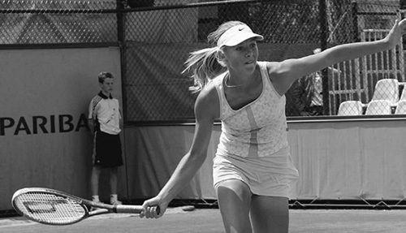
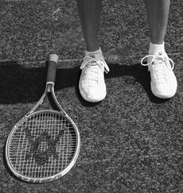
8. Làm chủ cách cầm vợt
Một vài phút với những bài tập này sẽ giúp bạn phát triển khả năng cầm vợt chắc chắn và ổn định.
Repeat until you have it down. • With your eyes open, again practice releasing your right hand, reaching out to the right, and replacing your hand without looking at your grip.
- Đi bộ quanh sân với vợt ở vị trí sẵn sàng cho đến khi bạn quen với vị trí của cánh tay khi di chuyển. Đi bộ hoặc chạy bộ về phía bên trái và bên phải của bạn.
- Nhắm mắt lại trong khi đứng yên. Thả tay phải của bạn ra khỏi tay cầm và vươn ra khỏi cơ thể trong khi vẫn giữ vợt ở vị trí bằng tay trái. Đưa tay phải của bạn trở lại báng cầm và khám phá cảm giác giống như trước. Luyện tập cho đến khi bạn có thể tìm được cách cầm vợt mà không cần nhìn vào vợt hoặc tay.
- Vẫn nhắm mắt, thả tay phải ra khỏi cán vợt, nhưng lần này hãy di chuyển vợt sang trái bằng tay trái. Đưa vợt trở lại vị trí sẵn sàng và cầm vợt lại bằng tay phải, cảm nhận độ bám của bạn. Lặp lại cho đến khi bạn có nó xuống.
- Mở mắt, tập thả tay phải ra, đưa tay về bên phải và đổi tay mà không nhìn vào tay cầm.
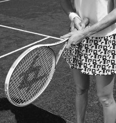
Cảm nhận cảm giác cầm nắm của bạn
Nhìn về phía trước, không phải nhìn vào cây vợt của bạn. Cảm nhận độ bám. Không có gì phức tạp về nó. Bạn không cần phải suy nghĩ về nó, và bạn không cần phải nhìn vào nó. Nó chỉ cần cảm thấy thoải mái và an toàn, với các ngón tay của bạn được thư giãn. Vợt phải hướng về phía trước, mặt vợt vuông góc hoặc gần như vuông góc với mặt đất. Nó phải bằng phẳng hoặc hơi nghiêng xuống. Cảm nhận trọng lượng của vợt trong tay bạn. Khi vung vợt, bạn thay đổi áp lực ngón tay, thường siết chặt ngón tay vào thời điểm tiếp xúc. Tay cầm quá lỏng sẽ khiến bạn mất kiểm soát và lực trong cú đánh. Hãy nhớ rằng, cuối cùng bạn sẽ tìm được cách cầm thoải mái và hiệu quả nhất. Đừng ép bản thân làm theo ý tưởng của người khác về điều gì là tốt nhất cho bạn.
FEEL YOUR GRIP Look ahead, not at your racquet. Feel the grip. There is nothing complicated about it. You don’t need to think about it, and you don’t need to look at it. It just needs to feel comfortable and secure, with your fingers relaxed. The racquet should point forward, with the racquet face perpendicular, or nearly so, to the ground. It should be level or have a slight downward tilt. Feel the weight of the racquet in your hand. When swinging the racquet, you vary the finger pressure, usually tightening your fingers at the moment of impact. Too loose a grip will cause you to lose control and power in your shots. Remember, you will eventually find the most comfortable and efficient grip.
Lưu ý rằng tư thế nghỉ bằng hai tay này cũng là cơ sở cho cách cầm vợt trái tay bằng hai tay. Trong cú đánh này, tay trái điều khiển cú đánh, tay phải khá thoải mái và duy trì cách cầm vợt thuận tay. Sự khác biệt thực sự duy nhất là bạn sẽ trượt tay trái xuống phía tay phải, đánh bóng bằng cả hai tay khá gần hoặc chạm vào nhau. (Để biết thêm, xem Chương 5, Cú trái tay.)
Don’t force yourself to follow someone else’s idea of what is best for you. Note that this two-handed resting position is also the basis for the two- handed backhand grip. In this stroke, the left hand drives the shot, with the right hand fairly relaxed and maintaining the forehand grip. The only real difference is that you’ll slide your left hand down toward the right hand, hitting the ball with both hands fairly close to or touching each other. (For more, see Chapter 5, The Backhand.) PLAY LIKE THE PROS
Chơi như dân chuyên nghiệp
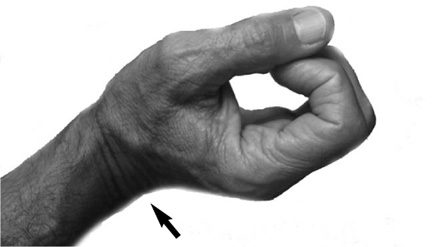
Cú thuận tay của Jim Courier
Jim Courier có cú thuận tay mạnh nhất trong thời đại của anh ấy. Sự kết hợp giữa sức mạnh và topspin đã đưa anh trở thành tay vợt số một thế giới vào năm 1992. Anh đã vô địch hai giải Úc mở rộng (1992 và 1993) và hai giải Pháp mở rộng (1991 và 1992).
THE JIM COURIER FOREHAND Jim Courier had the strongest forehand of his time. His combination of power and topspin made him the number one player in the world in 1992. He won two Australian Opens (1992 and 1993) and two French Opens (1991 and 1992). What made his forehand such a strong but simple shot was keeping his racquet between his body and the ball as long as possible. He followed it as if he were going to stop it in front of his face with the palm of his right hand.
Điều khiến cú thuận tay của anh ấy trở nên mạnh mẽ nhưng đơn giản như vậy là việc giữ vợt giữa người và bóng càng lâu càng tốt. Anh ta làm theo nó như thể định chặn nó lại ngay trước mặt mình bằng lòng bàn tay phải. Từ đó, thật dễ dàng. Ngay khi cảm thấy quả bóng đã nằm trong tầm tay của mình, anh ấy tung ra cú vung mạnh nhất có thể, ngang cơ thể sang trái. Ngay cả cơ thể của anh ta cũng dịch chuyển sang trái, hỗ trợ cho cú đấm mạnh mẽ này. Một dấu hiệu khác là sự tự tin của anh ấy trong cuộc tấn công không ngừng nghỉ này. Anh ta đập không thương tiếc mọi quả bóng thuận tay.
From there, it was easy. As soon as he felt the ball was within his grasp, he released the strongest swing possible, across his body to his left. Even his body shifted to the left, aiding this forceful punch up and across. Another trademark was his confidence in this relentless attack. He mercilessly hammered every forehand ball. To help you understand this type of stroke, ask someone to feed you slow, high balls to your forehand side. Keep your hand and racquet pointing up and in front of you (your wrist in a cocked position). As the ball comes toward you, look at the ball through the strings as if looking at the back of your hand, not your palm. (This is an exaggerated movement.
Để giúp bạn hiểu kiểu đánh này, hãy nhờ ai đó đưa cho bạn những quả bóng chậm, cao về phía thuận tay của bạn. Giữ bàn tay và vợt của bạn hướng lên trên và ở phía trước bạn (cổ tay của bạn ở tư thế nghiêng). Khi quả bóng tiến về phía bạn, hãy nhìn quả bóng qua dây như thể đang nhìn vào mu bàn tay chứ không phải lòng bàn tay. (Đây là một động tác cường điệu. Đừng nghĩ rằng bạn nên nhìn quả bóng qua dây trong một trận đấu.)
Don’t think you should look at the ball through the strings in a match.) After the bounce, just find the ball well, preferably near waist height or above, and hit it quite hard, as naturally as you can, with topspin and sidespin, shifting your body to the left (for a right-hander). Your wrist will become used to this cocked position, giving you plenty of power and maximizing control. Do not force your wrist or tighten up too much on your grip (a cause of tennis elbow). This stroke may be helpful, but if it causes you any physical trouble, it may not be for you. Cocked wrist position. Forehand 1-2-3-4 The modern forehand is one of the most effective and powerful weapons in professional tennis, and the trademark of most of the best players over the past century.
Sau khi nảy lên, chỉ cần tìm bóng tốt, tốt nhất là ở gần ngang thắt lưng hoặc cao hơn, và đánh nó khá mạnh, tự nhiên nhất có thể, với xoáy lên và xoáy ngang, dịch chuyển cơ thể của bạn sang trái (đối với người thuận tay phải).
Students have often been discouraged from copying these incredible forehands on the grounds that they were unique to those players and almost a freak of nature, rather than a specific technique that could be learned. This is a misconception, which you’ll find out as you apply the principles in this chapter. The forehand has four easy steps. 1.
Cổ tay của bạn sẽ quen với vị trí nghiêng này, mang lại cho bạn nhiều sức mạnh và khả năng kiểm soát tối đa. Không ép cổ tay hoặc siết quá chặt vào tay cầm (nguyên nhân gây ra khuỷu tay quần vợt). Cơn đột quỵ này có thể hữu ích, nhưng nếu nó gây ra bất kỳ rắc rối nào về thể chất cho bạn thì nó có thể không dành cho bạn.
Start in the ready position in the middle of the court, with your racquet near your navel. 2. Move to the ball naturally, as if you were going to catch it, holding your racquet in front of you and watching the ball. The ready position (left). Tracking the ball (right). Finding the ball slowly (left).
Vị trí cổ tay nghiêng.
Thuận tay 1-2-3-4
Cú thuận tay hiện đại là một trong những vũ khí hiệu quả và mạnh mẽ nhất trong quần vợt chuyên nghiệp, đồng thời là thương hiệu của hầu hết những tay vợt giỏi nhất trong thế kỷ qua. Các học viên thường không được khuyến khích sao chép những cú thuận tay đáng kinh ngạc này với lý do chúng là duy nhất đối với những người chơi đó và gần như là một bản chất kỳ dị, chứ không phải là một kỹ thuật cụ thể có thể học được. Đây là một quan niệm sai lầm mà bạn sẽ phát hiện ra khi áp dụng các nguyên tắc trong chương này.
Accelerate over your shoulder (right). 3. Find the ball slowly, positioning your racquet to connect with it slightly below the center of the strings, while already having your finish in mind. 4. Accelerate the racquet up and across your body, finishing with your hand and racquet over your opposite shoulder. Feel as if you’ve pushed the ball up and over the net. Remember that you create the momentum of your swing from near the point of contact with the ball onward. You also want to lead the swing with the upper edge of the racquet going up and across toward your left shoulder. Finishing is important.
Cú thuận tay có bốn bước đơn giản.
Make sure your racquet ends up over your left shoulder and neither stuck in front of you nor pointing at the other court.
1. Bắt đầu ở tư thế sẵn sàng ở giữa sân, với vợt gần rốn.
Your elbow should be fully bent and the back of your hand near your left ear.
2. Di chuyển đến bóng một cách tự nhiên, như thể bạn sắp bắt bóng, cầm vợt trước mặt và quan sát bóng.
The left-handed forehand uses the same steps, but the directions are reversed. 1.
Vị trí sẵn sàng (trái).
Theo dõi bóng (phải).
Tìm bóng từ từ (trái).
Tăng tốc qua vai (phải).
3. Tìm quả bóng từ từ, đặt vợt của bạn để kết nối với nó ở phía dưới tâm dây một chút, trong khi đã có sẵn ý định dứt điểm.
Start in the ready position in the middle of the court. 2.
4. Tăng tốc vợt lên và ngang cơ thể của bạn, kết thúc bằng tay và vợt qua vai đối diện của bạn. Cảm giác như thể bạn đã đẩy bóng lên và qua lưới. Hãy nhớ rằng bạn tạo đà cho cú vung vợt của mình từ gần điểm tiếp xúc với bóng trở đi. Bạn cũng muốn thực hiện cú swing với mép trên của vợt đi lên và ngang về phía vai trái của bạn. Việc hoàn thiện là quan trọng. Hãy chắc chắn rằng cây vợt của bạn nằm trên vai trái của bạn và không bị mắc kẹt trước mặt bạn cũng như không hướng vào sân bên kia. Khuỷu tay của bạn phải cong hoàn toàn và mu bàn tay gần tai trái.
Move to the ball naturally, holding your racquet in front of you. The ready position (left). Tracking the ball (right). Finding the ball slowly (left). Accelerate over your shoulder (right). 3. Find the ball well, positioning your racquet to connect with it slightly below the center of the strings, while already having your finish in mind. 4. Accelerate the racquet up and across your body, finishing with your hand and racquet over your right shoulder. Feel as if you’ve pushed the ball up and over the net.
Cú thuận tay trái sử dụng các bước tương tự, nhưng hướng đảo ngược. 1. Bắt đầu ở tư thế sẵn sàng ở giữa sân.
Remember that you create the momentum of your swing from near the point of contact with the ball onward. You also want to lead the swing with the upper edge of the racquet going up and across toward your right shoulder.
2. Di chuyển tới bóng một cách tự nhiên, cầm vợt trước mặt.
Finishing is important.
Vị trí sẵn sàng (trái).
Theo dõi bóng (phải).
Tìm bóng từ từ (trái).
Tăng tốc qua vai (phải).
3. Tìm bóng thật tốt, đặt vợt của bạn để kết nối với nó ở phía dưới tâm dây một chút, đồng thời đã tính đến cú dứt điểm của mình.
Make sure your racquet ends up over your right shoulder and neither stuck in front of you nor pointing at the other court. Your elbow should be fully bent and the back of your hand almost touching your right ear. Caution: Do not “break” your wrist, which can drastically affect your shot.
4. Tăng tốc vợt lên trên và ngang cơ thể bạn, kết thúc bằng tay và vợt qua vai phải của bạn. Cảm giác như thể bạn đã đẩy bóng lên và qua lưới. Hãy nhớ rằng bạn tạo đà cho cú vung vợt của mình từ gần điểm tiếp xúc với bóng trở đi. Bạn cũng muốn thực hiện cú swing với mép trên của vợt đi lên và ngang về phía vai phải của bạn. Việc hoàn thiện là quan trọng. Hãy chắc chắn rằng cây vợt của bạn kết thúc ở phía trên vai phải của bạn và không bị mắc kẹt trước mặt bạn cũng như không hướng vào sân bên kia. Khuỷu tay của bạn phải cong hoàn toàn và mu bàn tay gần như chạm vào tai phải.
Your wrist should be laid back slightly with the racquet’s upper edge moving upward, together with your arm. 9. MASTER THE FOREHAND 1-2-3-4 Bring a friend who is good at tossing balls and a bucket with a dozen or more balls. • To establish how balls bounce on the type of surface you’re on, toss a ball back and forth over the net with your friend, letting it bounce once each time. Then play it barehanded (without a racquet) a few times. • Now, using a racquet but no ball, practice the forehand steps until you can perform them fluidly without having to think about how to do them. Repeat with your eyes closed to increase your feel of the motion. • Move to the middle of the court, slightly in front of the service line, facing the net (see top left photo opposite). Place your racquet in the ready position. (For an easier start, choke up and slide your right hand up on the racquet.) Have your friend stand in the opposite court near the net to toss balls to you.
Thận trọng: Đừng “gãy” cổ tay của bạn, điều này có thể ảnh hưởng nghiêm trọng đến cú đánh của bạn. Cổ tay của bạn phải hơi ngả ra sau với cạnh trên của vợt di chuyển lên trên cùng với cánh tay của bạn.
If you’re using soft training balls, your friend can try to catch them, but if you’re using regular tennis balls, he should stand to one side, leaving the middle of the court open for you to hit balls into without hitting him. • Next, have your friend slowly toss balls a foot or two to your right side, high enough so they bounce well in front of you, are about waist high, and start to drop by the time they reach you. This allows you plenty of time to find the ball (see top right photo). Wait for the bounce and then for the ball to come near you, moving your body as little as possible.
9. Nắm vững cú thuận tay 1-2-3-4
Mang theo một người bạn giỏi ném bóng và một xô có chục quả bóng trở lên.
Get in the ready position, slightly in front of the service line (left).
- Để xác định cách bóng nảy trên loại bề mặt mà bạn đang đứng, hãy ném bóng qua lại trên lưới với bạn của bạn, để nó nảy một lần mỗi lần. Sau đó chơi bằng tay không (không dùng vợt) vài lần.
- Bây giờ, sử dụng vợt nhưng không có bóng, hãy luyện tập các bước thuận tay cho đến khi bạn có thể thực hiện chúng một cách trôi chảy mà không cần phải suy nghĩ về cách thực hiện. Lặp lại với đôi mắt nhắm lại để tăng cảm giác chuyển động.
- Di chuyển ra giữa sân, hơi về phía trước vạch giao bóng, mặt hướng vào lưới (xem ảnh trên cùng bên trái đối diện). Đặt vợt của bạn ở vị trí sẵn sàng. (Để bắt đầu dễ dàng hơn, hãy siết chặt và trượt tay phải của bạn lên vợt.) Nhờ bạn của bạn đứng ở phần sân đối diện gần lưới để ném bóng cho bạn. Nếu bạn sử dụng bóng tập mềm, bạn của bạn có thể cố gắng bắt chúng, nhưng nếu bạn sử dụng bóng tennis thông thường, anh ấy nên đứng sang một bên, để trống giữa sân để bạn đánh bóng vào mà không đánh anh ấy.
- Tiếp theo, nhờ bạn của bạn từ từ ném những quả bóng về phía bên phải của bạn một hoặc hai foot, đủ cao để chúng nảy tốt trước mặt bạn, cao khoảng thắt lưng và bắt đầu rơi xuống khi chúng chạm tới bạn. Điều này giúp bạn có nhiều thời gian để tìm bóng (xem ảnh trên cùng bên phải). Đợi bóng nảy lên và sau đó bóng đến gần bạn, di chuyển cơ thể bạn càng ít càng tốt.
Vào tư thế sẵn sàng, hơi ở phía trước vạch giao bóng (trái).
Tìm bóng từ từ và về phía trước của bạn bằng bề mặt vợt của bạn
chuỗi (phải).
Tăng tốc tay phải và vợt lên trên và ngang cơ thể cho đến khi tay bạn chạm vào phần trên của vai trái (xem ảnh phía dưới bên phải). Thực hiện chuyển động này bằng cách kéo nhẹ lên trên khi bạn chạm bóng, tăng tốc động lượng của cánh tay kể từ khi tiếp xúc với bóng trở đi. Bạn sẽ có cảm giác như đang đẩy bóng lên và bay qua lưới. Dẫn đầu cú xoay bằng mép trên của vợt, sao cho nó đi lên và qua vai trái của bạn. Chuyển động này sẽ đẩy bóng với tốc độ khoảng 20 dặm/giờ và cách lưới từ 2 đến 4 feet. Hãy thực hiện bài tập này bốn mươi hoặc năm mươi lần. Một lần nữa, hãy nhẹ nhàng. Đừng thực hiện một cú swing mạnh nếu không bạn sẽ mất cảm giác khi thực hiện cú đánh. Khi tiếp tục luyện tập, bạn có thể bắt đầu trượt tay xuống tay cầm về vị trí cầm bình thường nếu muốn. Giữ kết thúc qua vai, cho dù bạn có bị nghẹn vợt hay không.
Find the ball slowly and to your front with the surface of your racquet strings (right). Accelerate your right hand and racquet up and across your body until your hand touches the upper part of your left shoulder (see bottom right photo). Make this motion with a gentle upward pull as you touch the ball, speeding up the momentum of your arm from contact with the ball onward. It should feel like you pushed the ball up and over the net. Lead the swing with the upper edge of the racquet, so that it goes up and over your left shoulder. This motion should propel the ball at about 20 mph and 2 to 4 feet over the net. Do this drill forty or fifty times. Again, be gentle. Do not take a hard swing or you’ll lose the feel for the stroke. As you continue to practice, you can start to slide your hand down the handle toward a normal grip position, if you like. Keep the finish over the shoulder, whether or not you are choking up on the racquet. Finish the swing with the racquet over your shoulder. Open or Closed Stance? A key element in my teaching method differs completely from the conventional tennis teaching systems, especially with the forehand. Conventional systems demand that you turn your feet sideways to the net, facing the sideline as you hit—a closed stance.
Kết thúc cú vung vợt với vợt qua vai.
Thế mở hay đóng?
Một yếu tố quan trọng trong phương pháp giảng dạy của tôi khác hoàn toàn với các hệ thống giảng dạy quần vợt thông thường, đặc biệt là với cú thuận tay. Các hệ thống thông thường yêu cầu bạn xoay bàn chân sang ngang về phía lưới, hướng mặt về phía đường biên khi bạn đánh - một tư thế khép kín. Hệ thống của tôi khuyến khích bạn đánh đối diện với lưới—một thế đứng cởi mở. Xem hình ảnh đối diện.
My system encourages you to hit facing the net—an open stance. See photos opposite. Let’s look at the pros. Unless they’re hitting a forehand on the run, they open up their stance to face the net. Why? Because an open stance has so many benefits: 1. It’s easier to hit and control the ball with your right side close to the ball.
Hãy nhìn vào những ưu điểm. Trừ khi họ đánh thuận tay trên đường chạy, họ sẽ mở tư thế đối mặt với lưới. Tại sao? Bởi vì lập trường cởi mở có rất nhiều lợi ích:
2. You generate more power.
1. Sẽ dễ dàng hơn để đánh và kiểm soát bóng khi phía bên phải của bạn gần bóng.
Your body, coiled backward from the waist up, releases that energy into the ball when you naturally unwind into the open position. It’s similar to twisting a spring and then letting it return to its original position.
2. Bạn tạo ra nhiều năng lượng hơn. Cơ thể của bạn, cuộn về phía sau từ thắt lưng trở lên, sẽ giải phóng năng lượng đó vào quả bóng khi bạn thả lỏng một cách tự nhiên ở tư thế mở. Nó tương tự như việc vặn một lò xo rồi để nó trở về vị trí ban đầu. Các cơ ở bên trái cơ thể giúp tạo lực cho cơ thể bạn xoay người vào bóng nhanh hơn. Trong tư thế khép kín, bạn thiếu lực đẩy và lực quay này vì cơ thể đang ở trạng thái nghỉ.
Muscles on the left side of your body help power a faster turn of your body into the ball. In a closed stance, you lack this thrust and rotational power because the body is at rest. 3. It’s easier to reach the ball and maintain your balance during a powerful hit. When you hit the ball facing sideways, your hand starts the swing farther from the ball, and you have to strain to reach it, resulting in some loss of balance. A closed stance means your feet face the sideline. An open stance means your feet face the net. 10.
3. Bạn sẽ dễ dàng tiếp cận bóng hơn và giữ thăng bằng khi thực hiện một cú đánh mạnh. Khi bạn đánh bóng theo hướng sang một bên, tay của bạn bắt đầu vung bóng xa hơn và bạn phải căng người mới chạm được bóng, dẫn đến mất thăng bằng.
MASTER THE OPEN STANCE Watch some top pros play and notice how they use an open stance for their forehands. • Have a friend throw balls about a foot or two to your right side and practice the four forehand steps using an open stance to strike the ball. Pivot back and forth, coming back to the middle after each shot. Then practice with the balls thrown at increasing distances to your right, making you move to the balls before assuming the open stance.
Thế đứng khép kín có nghĩa là bàn chân của bạn hướng về phía bên lề.
Thế đứng mở có nghĩa là bàn chân của bạn hướng vào lưới.
10. Làm chủ tư thế mở
Xem một số vận động viên chuyên nghiệp hàng đầu thi đấu và chú ý cách họ sử dụng tư thế mở cho các cú thuận tay của mình.
Come back to the middle after each shot. • Now have your friend throw a few balls about a foot or two to your right side and practice the four forehand steps with a closed stance.
- Nhờ một người bạn ném bóng về phía bên phải của bạn khoảng một hoặc hai foot và thực hành bốn bước thuận tay bằng tư thế mở để đánh bóng. Xoay qua lại, quay lại giữa sau mỗi lần bắn. Sau đó, luyện tập với những quả bóng được ném với khoảng cách ngày càng tăng về phía bên phải của bạn, khiến bạn phải di chuyển đến những quả bóng trước khi vào tư thế mở. Trở lại giữa sau mỗi lần bắn.
- Bây giờ hãy nhờ bạn của bạn ném một vài quả bóng về phía bên phải của bạn khoảng một hoặc hai foot và thực hành bốn bước thuận tay với tư thế khép kín. Trở lại giữa sau mỗi lần bắn. Sau đó thực hành với một vài quả bóng được ném ở khoảng cách ngày càng tăng về phía bên phải của bạn, khiến bạn phải di chuyển đến các quả bóng trước khi thực hiện tư thế đóng. Trở lại giữa sau mỗi lần bắn. Điều này có khó chịu không?
- Bây giờ hãy tập lại phần đầu tiên của bài tập, đánh với tư thế mở. Một khi bạn đã thành thạo thế đứng mở và cảm thấy rằng việc đánh thuận tay của bạn sẽ dễ dàng và hiệu quả hơn, hãy kết thúc bằng một số động tác đánh bóng thoải mái. Tập luyện cho đến khi bạn có thể chơi mà không cần nghĩ đến đôi chân của mình.
4. Bạn có thể nhìn thấy bóng rõ hơn. Ví dụ, khi bạn muốn xem xét một bức tranh, điều tự nhiên là bạn nhìn thẳng vào nó chứ không nhìn sang một bên.
Come back to the middle after each shot. Then practice with a few balls thrown at increasing distances to your right, making you move to the balls before assuming the closed stance.
5. Sau khi đánh bóng, bạn có thể quay trở lại trung tâm nhanh hơn và tự nhiên hơn, giúp bạn hồi phục tốt hơn, bao quát sân và chuẩn bị cho cú đánh tiếp theo. Khi đối thủ của bạn đang đánh bóng sang một bên sân của bạn rồi sang bên kia sân, bạn sẽ mất quá nhiều thời gian để quay trở lại từ một thế đứng khép kín. Ngay cả khi chạy dọc theo đường cuối sân để đánh bóng ở xa vị trí của họ, các cầu thủ hàng đầu có xu hướng mở tư thế thuận tay để đánh, mặt hướng vào lưới. Đó là một phản ứng tự nhiên và có hiệu quả cao. Một thế đứng khép kín phải được truyền một cách mạnh mẽ vào người chơi.
Come back to the middle after each shot. Isn’t this uncomfortable? • Now practice the first part of the drill again, hitting with an open stance. Once you’ve mastered the open stance and feel that it is easier and more effective for your forehand shots, finish with some relaxed rallying. Rally until you can play without thinking about your feet. 4. You can see the ball better. When you want to examine a painting, for example, it’s natural for you to look at it head-on, not turned sideways. 5. After hitting the ball, you can turn back to the center more quickly and naturally, leading to better recovery, court coverage, and preparation for your next shot.
Chơi như dân chuyên nghiệp
Năng lượng tạo và xử lý
Như võ thuật dạy, việc làm chệch hướng một lực đang tới sẽ hiệu quả hơn là chống lại nó. Trong quần vợt, điều này có nghĩa là việc đánh trả quả bóng đang đến bằng cách làm chệch hướng nó – làm biến dạng đường đi của nó – sẽ dễ dàng hơn là đánh thẳng vào. Để đạt được điều này, cú swing của bạn chuyển từ trạng thái thư giãn sang trạng thái co lại mạnh mẽ. Tiếp tục so sánh võ học, trạng thái thoải mái là âm và mạnh hơn là dương. Âm càng dài thì bạn càng có thể tạo ra nhiều dương.
When your opponent is hitting balls to one side of your court and then to the other, it takes you far too long to turn back from a closed stance. Even while running along the baseline to a ball hit far from their position, top players tend to open their forehand stance to strike, facing the net. It is a natural and highly effective response. A closed stance has to be drilled forcefully into a player. PLAY LIKE THE PROS GENERATING AND HANDLING POWER As martial arts teaches, it’s more efficient to deflect an incoming force than to oppose it. In tennis, this means that it’s easier to return an incoming ball by deflecting it—distorting its path—than hitting it straight on. To achieve this, your swing moves from a relaxed state to a forceful contraction. To continue the martial arts comparison, the relaxed state is the yin and the more forceful one is the yang.
Trạng thái thoải mái không có nghĩa là vợt của bạn đứng yên. Quá trình bắt đầu khi bạn vung vợt về phía quả bóng với lực nhẹ, sau đó đột ngột chuyển cú đánh sang hướng khác. Theo hướng mới này, ban đầu các cơ của bạn khá thư giãn, nhưng ngay lập tức bạn co chúng lại một cách mạnh mẽ (cơ bắp khỏe hơn khi bạn rút ngắn chúng), đạt được một lực chính (dương) theo hướng mới.
The longer the yin, the more yang you can generate. A relaxed state does not mean that your racquet is stationary. The process starts when you swing toward the ball with mild force, then suddenly switch your stroke in another direction. In this new direction, your muscles are fairly relaxed at first, but all at once you contract them powerfully (muscles are stronger when you shorten them), achieving a major force (yang) in the new direction. Andre Agassi and Roger Federer are prime examples of these principles, especially on the return of serve. They accomplish this by hitting up and across the body, rather than following the ball forward in the follow- through.
Andre Agassi và Roger Federer là những ví dụ điển hình của những nguyên tắc này, đặc biệt là khi trả giao bóng. Họ thực hiện điều này bằng cách đánh lên và ngang cơ thể, thay vì theo bóng về phía trước trong động tác theo sau. Agassi, trong những năm cuối sự nghiệp của mình, đã đi sâu hơn nhiều vào việc thực hiện những điều tinh tế này.
Agassi, in the later years of his career, has gone much deeper into executing these subtleties.
Một ví dụ khác là cú giao bóng của Andy Roddick. Anh ta thả lỏng và co cơ tam đầu—một cơ dài và khỏe—để uốn cong và duỗi cánh tay, sử dụng mép trước của khung vợt để đánh bóng, gần như chạm vào nó. Đột nhiên, anh ta xoay cây vợt và đập nó lên về phía bên phải. Kết quả là có được sức mạnh đáng kinh ngạc mà không cần dùng quá nhiều lực. Cú giao bóng của anh ấy là một động tác co và giải phóng các cơ khác nhau theo thời gian một cách tinh tế để khuếch đại kết quả tổng thể.
Another example is Andy Roddick’s serve. He relaxes and contracts his triceps—a long, strong muscle—to bend and extend his arm, using the front edge of the racquet frame to address the ball, almost touching it. All of a sudden, he turns the racquet and hammers it up and to the right. The result is astonishing power without the need for too much force. His serve is an exquisitely timed contraction and release of different muscles to amplify the overall result. Pete Sampras’s serve was phenomenal. Even though not the fastest in men’s tennis, his ball has been called the “heaviest” to return. He transformed some of his force into a more damaging weapon than ball speed—ball rotation.
Cú giao bóng của Pete Sampras thật phi thường. Dù không phải là người có tốc độ nhanh nhất trong quần vợt nam nhưng quả bóng của anh vẫn được coi là quả bóng có lực đánh trả “nặng nhất”. Anh ta đã biến một phần lực của mình thành một vũ khí gây sát thương mạnh hơn tốc độ bóng—xoay bóng. Một số cú giao bóng đầu tiên của Sampras quay nhanh hơn 3.000 vòng/phút và một số cú giao bóng thứ hai của anh ấy quay với tốc độ hơn 5.000 vòng/phút. Việc xoay quả bóng này làm tăng sức cản không khí phía trên quả bóng và tạo ra chân không bên dưới, tạo ra lực hướng xuống làm tăng thêm “độ nặng” của quả bóng.
Some of Sampras’s first serves rotated faster than 3,000 rpm, and some of his second serves rotated at more than 5,000 rpm. This ball rotation increases the air resistance on top of the ball and creates a vacuum below, producing a downward force that adds to the “heaviness” of the ball. Conventional coaches usually advise you to imagine that you’re stroking through five balls in a straight line with the forehand, but this makes players lose muscle power and control, and remember—control is the major goal of a great tennis player. Be aware that the force you’re applying to the ball is not straight on, but works to deflect it.
Các huấn luyện viên thông thường thường khuyên bạn hãy tưởng tượng rằng bạn đang vuốt ve năm quả bóng theo đường thẳng bằng thuận tay, nhưng điều này khiến người chơi mất sức mạnh cơ bắp và khả năng kiểm soát, đồng thời hãy nhớ—kiểm soát là mục tiêu chính của một tay vợt giỏi.
On the forehand, it’s better to reach the ball slowly, then almost at contact, contract your arm and swing across your body, practically missing the second or third imaginary ball in that straight line. The ball’s trajectory will not be straight in and straight out of your racquet, but will follow a tiny, semicircular curve to return it from where it came, and so you achieve your martial arts effect.
Hãy lưu ý rằng lực bạn tác dụng lên quả bóng không thẳng mà có tác dụng làm chệch hướng nó. Ở cú thuận tay, tốt hơn là bạn nên tiếp cận bóng từ từ, sau đó gần như khi tiếp xúc, co cánh tay của bạn và vung ngang cơ thể, thực tế là đã đánh trượt quả bóng tưởng tượng thứ hai hoặc thứ ba trên đường thẳng đó. Quỹ đạo của quả bóng sẽ không đi thẳng vào và ra khỏi vợt của bạn mà sẽ đi theo một đường cong hình bán nguyệt nhỏ để đưa nó trở lại từ nơi nó đến, và do đó bạn đạt được hiệu quả võ thuật của mình. Do cơ bắp và trọng lượng bạn tác dụng một cách tinh tế như vậy, quả bóng sẽ đi ra ngoài nhanh hơn khi nó đi vào.
As a result of the muscle and weight you are applying in such a subtle way, the ball will go out faster than it came in. Here’s an example. Let’s say Venus Williams serves to Serena Williams at 120 mph. By the time the ball bounces once and approaches Serena, the serve has lost about 55 percent of its speed, reaching Serena’s racquet at about 54 mph (actual measurements taken on a hard court).
Đây là một ví dụ. Giả sử Venus Williams giao bóng cho Serena Williams ở tốc độ 120 mph. Vào thời điểm quả bóng nảy lên một lần và tiếp cận Serena, cú giao bóng đã mất khoảng 55% tốc độ, chạm tới vợt của Serena với vận tốc khoảng 54 dặm/giờ (số đo thực tế được thực hiện trên sân cứng). Serena ngay lập tức làm chệch hướng nó bằng một cú đánh nhanh ngang cơ thể mà không gặp nhiều khó khăn. (Những cú trả bóng như vậy đã được đo ở tốc độ lên tới 80 dặm / giờ.) Cô ấy sử dụng chuyển động hất bóng này để làm chệch hướng quả bóng, có thể qua sân hoặc dọc theo đường biên.
Serena immediately deflects it with a quick flick across her body, without much strain. (Such returns have been measured at up to 80 mph.) She uses this flicking movement to deflect the ball, perhaps across the court or down the line. What is amazing about Pete Sampras’s long career—hitting cannonball serves day in and day out—is that his serving arm and shoulder have been practically injury free. He mainly used the larger, longer, stronger triceps, instead of the shorter shoulder muscles, in the most efficient and powerful way. Agassi’s long career has been similarly injury free.
Điều đáng kinh ngạc về sự nghiệp lâu dài của Pete Sampras - đánh bóng bằng súng thần công ngày này qua ngày khác - là cánh tay và vai giao bóng của anh ấy thực tế không bị chấn thương. Anh ấy chủ yếu sử dụng cơ tam đầu to hơn, dài hơn, khỏe hơn thay vì cơ vai ngắn hơn một cách hiệu quả và mạnh mẽ nhất.
Although he serves differently from Sampras, the same martial arts principles apply to his delivery. And on ground strokes, Agassi and Roger Federer may be the masters of all time. Notice how the best one-handed backhands are hit.
Sự nghiệp lâu dài của Agassi cũng không có chấn thương tương tự. Mặc dù anh ấy giao bóng khác với Sampras, nhưng các nguyên tắc võ thuật tương tự cũng áp dụng cho việc giao bóng của anh ấy. Và về những cú đánh trên mặt đất, Agassi và Roger Federer có thể là những bậc thầy của mọi thời đại.
Gustavo Kuerten, Roger Federer, Paradorn Srichaphan, Justine Henin-Hardenne, and Amelie Mauresmo contract their back muscles (bringing the shoulder blades closer together) and hit across the ball. The best sliced backhands also are hit across, using the back muscles.
Chú ý cách đánh trái tay bằng một tay tốt nhất. Gustavo Kuerten, Roger Federer, Paradorn Srichaphan, Justine Henin-Hardenne và Amelie Mauresmo co cơ lưng (đưa hai bả vai lại gần nhau hơn) và đánh ngang qua quả bóng. Những cú đánh trái tay cắt lát tốt nhất cũng được đánh ngang bằng cách sử dụng cơ lưng. Và ở các cú thuận tay và trái tay bằng hai tay, Agassi, Serena Williams và Marat Safin đạt được sức mạnh và sự thoải mái to lớn của mình bằng cách co bắp tay và ngực, vuốt ve khắp cơ thể. Họ đưa vợt đến gần quả bóng một cách chậm rãi, tăng khả năng kiểm soát, sau đó tạt mạnh, tin tưởng rằng quả bóng sẽ ở lại sân.
And on forehands and two-handed backhands, Agassi, Serena Williams, and Marat Safin achieve their tremendous power and ease by contracting their biceps and pectorals, stroking across their bodies. They bring the racquet close to the ball slowly, magnifying control, then power across, confident the ball will stay in the court. PLAY LIKE THE PROS ENVISION THE CONTACT POINT BEFORE STARTING THE SWING On the forehand, practice keeping the racquet in front of you as long as possible to help deepen your awareness of where the ball will be before you commit your swing. This will also increase the velocity of your stroke. Conversely, if you take the racquet back before knowing precisely where you are going to meet the ball, then you have to figure out during the forward motion where the exact contact will be, which disturbs your swing. This is the conventional idea of preparing early. Instead, practice this stalking action with your racquet in front of you until you are comfortable with it. In the beginning you may think you don’t have enough time to do this.
Chơi như dân chuyên nghiệp
Hình dung điểm tiếp xúc trước khi bắt đầu
Xoay
Ở bên thuận tay, hãy tập giữ vợt trước mặt bạn càng lâu càng tốt để giúp bạn nhận thức sâu sắc hơn về vị trí của quả bóng trước khi bạn thực hiện cú vung vợt. Điều này cũng sẽ làm tăng tốc độ đột quỵ của bạn. Ngược lại, nếu bạn thu vợt lại trước khi biết chính xác nơi bạn sẽ gặp bóng, thì bạn phải tìm ra trong quá trình chuyển động về phía trước nơi tiếp xúc chính xác sẽ làm xáo trộn cú đánh của bạn. Đây là ý tưởng thông thường về việc chuẩn bị sớm.
But as you do it over and over, you’ll be amazed at the results. Try combining this with counting silently to 5: “1” at the bounce, then “2,” “3,” “4,” a little pause, and hit at “5.” Track the ball with your racquet in front and then take your swing, finishing up and across your body. You may have a windshield wiper topspin (see pages 91–95), finishing around your hip, or a higher finish, ending above the shoulder. Either is fine. Don’t take the racquet back early, then track the ball, and then take a swing. This creates a flawed swing that is too tight and mechanical.
Thay vào đó, hãy thực hành hành động rình rập này với cây vợt của bạn trước mặt cho đến khi bạn cảm thấy thoải mái với nó. Ban đầu bạn có thể nghĩ rằng mình không có đủ thời gian để làm việc này. Nhưng khi bạn làm đi làm lại, bạn sẽ ngạc nhiên về kết quả. Hãy thử kết hợp điều này với việc đếm thầm đến 5: “1” khi nảy lên, sau đó là “2,” “3,” “4”, tạm dừng một chút và nhấn vào “5”.
It would be like answering someone before they finished asking a question. And it’s awkward, especially when done too often. Apply the same technique—stalking the ball with your racquet in front of you—to the two-handed backhand. On the one-handed backhand, track the ball with the butt of the racquet, without taking your arm back all the way. Wait for the bounce, then time your swing and finish all the way. Natural Footwork Synchronizing your whole body to your strokes is an instinctive process you will refine by practicing the drills in this book.
Theo dõi bóng bằng vợt của bạn ở phía trước và sau đó thực hiện cú đánh, kết thúc và ngang cơ thể. Bạn có thể có phần xoáy lên của cần gạt nước kính chắn gió (xem trang 91–95), hoàn thiện quanh hông hoặc kết thúc cao hơn, kết thúc phía trên vai. Hoặc là tốt.
The more naturally you move, as naturally as if walking down the street or window-shopping, the better you will play. The tennis court is quite small. You can cover it all by taking only three or four steps to each side and a few more to move forward or backward. In a game, you will need to hurry sometimes, just as you would speed up at a pedestrian crossing when the light starts to blink and the waiting vehicles rev their engines.
Đừng lấy vợt về sớm, sau đó theo bóng, rồi vung vợt. Điều này tạo ra một cú swing thiếu sót, quá chặt và máy móc. Nó giống như trả lời ai đó trước khi họ hỏi xong câu hỏi. Và điều đó thật bất tiện, đặc biệt là khi thực hiện quá thường xuyên.
Many players start their swing before they run, thereby losing valuable time that would be better used reaching to the ball. Swing preparation should occur on the run, after the bounce of the ball. With practice, your arms will begin to feel independent of the position and movement of the rest of your body. Your body will instinctively adjust
Áp dụng kỹ thuật tương tự—đuổi bóng bằng vợt trước mặt bạn—cho trái tay bằng hai tay. Ở cú đánh trái tay bằng một tay, hãy theo dõi bóng bằng mông vợt mà không cần rút tay lại hoàn toàn. Đợi cú nảy lên, sau đó căn thời gian cho cú vung của bạn và hoàn thành cú đánh.
its balance to help the motion of your arm. You will be able to find the ball easily, move through the swing, and finish smoothly whether you are on the run, falling forward or backward, or completely stationary and facing the net. Remember to keep your racquet comfortably in front of your body while running to where you will hit the ball. Focus on tracking the ball with your eyes and your racquet hand as you’re moving. (Tracking is the coordination of your racquet with the flight of the ball so as to meet it in the right place.) Observe how the ball arcs after the bounce and how it loses speed, so you can find it perfectly.
Động tác chân tự nhiên
Đồng bộ hóa toàn bộ cơ thể với các cú đánh là một quá trình bản năng mà bạn sẽ tinh chỉnh bằng cách thực hành các bài tập trong cuốn sách này. Bạn càng di chuyển tự nhiên, tự nhiên như khi đi bộ xuống phố hoặc đi dạo qua cửa sổ, bạn sẽ chơi càng tốt. Sân tennis khá nhỏ. Bạn có thể hoàn thành tất cả bằng cách chỉ thực hiện ba hoặc bốn bước cho mỗi bên và một vài bước nữa để tiến hoặc lùi.
Finish your stroke with your hand and racquet over your opposite shoulder. Finally, leave the racquet in the finish position while you turn back toward the center position to reinforce the finish and relate this finish to where you placed the ball. Do not bring your racquet back early as many conventional teachers recommend. Wait until well after the ball has bounced before starting your swing. 11. MASTER FOREHAND FOOTWORK
Trong trò chơi, đôi khi bạn sẽ cần phải nhanh lên, giống như bạn tăng tốc ở vạch qua đường dành cho người đi bộ khi đèn bắt đầu nhấp nháy và các phương tiện chờ đợi nổ máy. Nhiều người chơi bắt đầu cú swing của họ trước khi họ chạy, do đó làm mất đi khoảng thời gian quý giá mà lẽ ra nên sử dụng để tiếp cận bóng sẽ tốt hơn. Việc chuẩn bị cho cú đánh nên diễn ra trên đường chạy, sau khi bóng nảy.
• Start from the service line. Have your friend toss balls slightly short so that you have to move forward to stroke them. You will be walking forward continuously while he tosses shorter and shorter balls. Find the ball slowly with the racquet as you’re moving forward and finish by touching your opposite shoulder at the finish. This is your forehand swing, whether you’re moving or stationary. You can add momentum by slightly increasing the swing length.
Khi luyện tập, cánh tay của bạn sẽ bắt đầu có cảm giác độc lập với vị trí và chuyển động của phần còn lại của cơ thể. Cơ thể bạn sẽ theo bản năng điều chỉnh sự cân bằng để hỗ trợ chuyển động của cánh tay. Bạn sẽ có thể tìm thấy bóng dễ dàng, di chuyển qua cú xoay và kết thúc một cách suôn sẻ cho dù bạn đang chạy, ngã về phía trước hay phía sau, hay hoàn toàn đứng yên và hướng mặt vào lưới.
• Have your friend toss balls as you walk backward. The tosses should be long enough to force you to move back to hit them comfortably. • Start from the left sideline, close to the service line (young children should start a bit closer to the net, according to their build, age, and coordination). Turn to your right, and start walking parallel to the net. Have your friend toss a ball a little in front of you so that you can hit it while walking (just as if walking down the street). Emphasize your finish of the stroke.
Hãy nhớ giữ vợt thoải mái ở phía trước cơ thể trong khi chạy đến nơi bạn sẽ đánh bóng. Tập trung theo dõi bóng bằng mắt và tay cầm vợt khi bạn di chuyển. (Theo dõi là sự phối hợp của cây vợt của bạn với đường bay của quả bóng để gặp nó ở đúng vị trí.) Quan sát cách quả bóng chuyển động sau khi nảy và nó mất tốc độ như thế nào để bạn có thể tìm thấy nó một cách hoàn hảo. Kết thúc cú đánh của bạn bằng tay và vợt qua vai đối diện. Cuối cùng, để vợt ở vị trí kết thúc trong khi bạn quay trở lại vị trí trung tâm để củng cố cú dứt điểm và liên hệ cú dứt điểm này với nơi bạn đặt bóng.
Your friend also walks across his side of the court, a little behind you so you have an open court to hit into. You should hit four or five balls. (Hitting open stance is not emphasized here because you are practicing hitting on the run.) • Now walk backward from the right sideline to the left sideline while hitting only forehands. Your friend tosses the ball close to you so that you have to move back before hitting each ball, which teaches you to put some distance between you and the ball when it is coming too close to you or right at you. • Now hit four or five balls while walking forward, then four or five balls while walking backward. You’ll have to walk slower or faster to find the ball, depending on the speed and placement of your friend’s toss and where you want to meet the ball. Remember, the action is still like catching a ball, whether you have to run to reach it or not. Always find it first and don’t rush the stroke.
Đừng mang vợt về sớm như nhiều giáo viên thông thường khuyên dùng. Đợi cho đến khi bóng đã nảy lên trước khi bắt đầu cú đánh của bạn.
• To work on pivoting—turning quickly while leaning to go in one direction, then turning and leaning to go in the opposite direction— place a can of balls in the center of the court between the service line and the baseline and stand in front of it. Your friend tosses a ball to your right, a few feet from you.
11. Bậc thầy thuận tay
- Bắt đầu từ tuyến dịch vụ. Nhờ bạn của bạn ném bóng hơi ngắn để bạn phải tiến về phía trước để đánh bóng. Bạn sẽ liên tục đi về phía trước trong khi anh ta tung những quả bóng ngày càng ngắn hơn. Dùng vợt từ từ tìm bóng khi bạn di chuyển về phía trước và kết thúc bằng cách chạm vào vai đối diện khi kết thúc. Đây là cú đánh thuận tay của bạn, cho dù bạn đang di chuyển hay đứng yên. Bạn có thể thêm đà bằng cách tăng nhẹ độ dài cú swing.
- Nhờ bạn của bạn ném bóng khi bạn đi lùi. Cú tung phải đủ dài để buộc bạn phải lùi lại để đánh chúng một cách thoải mái.
- Bắt đầu từ biên trái, gần vạch giao bóng (trẻ nhỏ nên xuất phát gần lưới hơn một chút, tùy theo thể trạng, độ tuổi và khả năng phối hợp của các em). Rẽ sang phải và bắt đầu đi song song với lưới. Nhờ bạn của bạn ném một quả bóng trước mặt bạn một chút để bạn có thể đánh nó khi đang đi bộ (giống như khi đang đi bộ trên phố). Nhấn mạnh sự kết thúc của cú đánh. Bạn của bạn cũng đi ngang qua phía sân của anh ấy, lùi lại phía sau bạn một chút để bạn có một sân rộng rãi để tấn công. Bạn nên đánh bốn hoặc năm quả bóng. (Tư thế đánh mở không được nhấn mạnh ở đây vì bạn đang tập đánh trên đường chạy.)
- Bây giờ đi lùi từ đường biên phải sang đường biên trái trong khi chỉ đánh thuận tay. Bạn của bạn ném quả bóng lại gần bạn để bạn phải lùi lại trước khi đánh từng quả bóng, điều này dạy bạn cách đặt một khoảng cách giữa bạn và quả bóng khi nó đến quá gần bạn hoặc ngay sát bạn.
- Bây giờ đánh bốn hoặc năm quả bóng khi đi về phía trước, sau đó đánh bốn hoặc năm quả bóng khi đi lùi. Bạn sẽ phải đi bộ chậm hơn hoặc nhanh hơn để tìm bóng, tùy thuộc vào tốc độ và vị trí tung bóng của người bạn cũng như nơi bạn muốn gặp bóng. Hãy nhớ rằng, hành động vẫn giống như việc bắt một quả bóng, dù bạn có phải chạy để với lấy nó hay không. Luôn luôn tìm thấy nó đầu tiên và đừng đột quỵ.
- Để thực hiện động tác xoay người—quay nhanh trong khi nghiêng người để đi theo một hướng, sau đó xoay người và nghiêng người để đi theo hướng ngược lại— đặt một hộp bóng ở giữa sân, giữa đường giao bóng và đường cuối sân và đứng trước nó. Bạn của bạn ném một quả bóng về phía bên phải của bạn, cách bạn vài bước chân. Hãy di chuyển về phía nó, luôn đi hoặc chạy về phía trước, không đi ngang hoặc lùi. Tiếp cận và đánh bóng. Nhấn mạnh việc kết thúc cú đánh của bạn bằng cách để vợt trên vai trong vài bước khi bạn quay trở lại giữa sân, vượt qua phía sau lon và giật ngược về bên phải. Luôn đi vòng quanh lon từ phía sau để bạn luôn có thể nhìn thấy sân của đối thủ. (Đừng quay lưng về phía bạn của bạn hoặc lưới bất cứ lúc nào.) Trở lại vị trí ban đầu trước hộp, quay sang phải để thực hiện quả bóng tiếp theo. Xem ảnh trang này và ngược lại.
- Tiếp theo, di chuyển hộp đến gần đường cơ sở hơn một chút. Yêu cầu bạn của bạn ném bóng sâu hơn và xa bạn hơn, từ từ tăng độ khó cho đến khi bạn chuyển động xuống và cú đánh mượt mà, lần nào cũng kết thúc cú đánh qua vai.
Đứng trước cái lon.
Di chuyển về phía quả bóng.
Tiếp cận và đánh trong tư thế mở.
Giữ vợt của bạn ở cuối cú đánh khi bạn xoay người và thực hiện cú đánh
lùi lại vài bước đầu tiên.
Di chuyển xung quanh lon theo chiều kim đồng hồ.
Quay lại để di chuyển sang bên phải của bạn.
Bạn của bạn chỉ nên ném quả bóng tiếp theo khi bạn quay lại giữa và bắt đầu di chuyển về bên phải. Anh ta nên ném nó với tốc độ và theo hướng không quá khó để bạn tiếp cận. Một quả bóng được ném quá xa, quá nhanh hoặc trước khi bạn sẵn sàng có thể làm hỏng cú đánh của bạn. Luôn kiểm soát những gì bạn đang làm. Bạn có thể phải chạy một chút để tiếp cận bóng, nhưng hãy từ từ quay lại giữa. Nếu bạn bắt đầu mất kiểm soát, hãy quay lại bài tập dễ dàng hơn. Tập trung vào việc tìm bóng tốt và kết thúc cú đánh đúng cách. Nếu bạn không thể, bạn của bạn nên ném bóng chậm hơn hoặc ném bóng gần tầm với của bạn hơn hoặc cả hai.
Move toward it, always walking or running forward, not sideways or backward. Reach and hit the ball. Emphasize the finish of your stroke by leaving the racquet on your shoulder for a couple of steps as you head back to the center of the court, passing behind the can and looping back to your right. Always go around the can from behind so you can see your opponent’s court at all times. (Don’t turn your back toward your friend or the net at any time.) End up back at your original spot in front of the can, turning to your right for the next ball. See photos this page and opposite. • Next, move the can a little closer to the baseline. Have your friend toss the ball deeper and farther from you, slowly increasing the difficulty until you have the movement down and the stroke smooth, finishing the stroke over your shoulder every time. Stand in front of the can. Move toward the ball.
- Để thêm một mức độ khó nữa, hãy nhờ bạn của bạn đưa bóng cho bạn bằng vợt tennis (nhưng chỉ khi anh ta có thể kiểm soát bóng bằng vợt). Nhấn mạnh những điều sau: Chạy một cách thoải mái để đánh chặn bóng Giữ vợt ở phía trước bạn khi bóng nảy lên Chạy chậm lại, mở thế đứng và chờ bóng, vẫn bám theo nó với vợt ở phía trước Với một chút động tác lùi về phía sau, tìm bóng nhẹ nhàng, tạo đà cho cú vung của bạn Tăng tốc cánh tay khi tiếp xúc, uốn cong cánh tay một chút khi bạn chạm bóng Kết thúc cú đánh bằng ngón tay cái bên phải chạm vào vai trái Để tay ở đó trong khi bạn xoay về phía giữa sân, quan sát vị trí bạn đặt bóng trên phần sân của đối thủ Đưa vợt của bạn nhẹ nhàng xuống về phía tay trái của bạn trong khi từ từ quay trở lại giữa sân Vòng tròn phía sau lon và trở lại vị trí ban đầu của bạn ở phía trước nó, sẵn sàng cho cú đánh tiếp theo Luyện tập cho đến khi chuyển động của bạn trơn tru và dễ dàng
Vòng quay trên của cần gạt nước kính chắn gió
Với những cây vợt đáng gờm ngày nay cung cấp rất nhiều lực, các vận động viên quần vợt hàng đầu sử dụng chuyển động gạt nước trên kính chắn gió (uốn cánh tay sang trái để mặt vợt quét phẳng theo hình vòng cung trước mặt bạn) trên thuận tay của họ để tạo ra xoáy lên và ép bóng xuống trong đường. Lực tới bị làm chệch hướng và được sử dụng để tăng tốc quả bóng theo hướng ngược lại.
Reach and hit in an open stance. Keep your racquet up at the finish of your stroke as you pivot and take the first few steps back. Move around the can in a clockwise direction. Turn again to move to your right. Your friend should toss the next ball only when you’re back in the middle and starting to move back to your right. He should throw it at a speed and in a direction that is not too challenging for you to reach.
Chuyển động của cần gạt nước trên kính chắn gió trượt quả bóng qua các dây để nó tiếp xúc với nhiều bề mặt dây hơn trước khi rời khỏi vợt, mang lại cảm giác dài hơn. Bằng cách đưa cánh tay của bạn ngang qua cơ thể, bạn đang co các nhóm cơ lớn ở cánh tay và ngực, do đó kết nối nhiều trọng lượng cơ thể hơn với vợt và tạo ra nhiều lực hơn với ít nỗ lực hơn. Học kỹ thuật này dễ dàng hơn ở tốc độ chậm hơn. Bạn đưa vợt vào bóng càng chậm và sau đó tăng tốc thì cảm giác của những hành động này sẽ càng rõ rệt đối với bạn.
A ball tossed too far away or too fast or before you are ready could end up ruining your swing. Always remain in control of what you’re doing. You may have to do some running to reach the ball, but return slowly to the middle. If you start losing control, return to an easier drill. Concentrate on finding the ball well and finishing the stroke properly. If you can’t, your friend should either use a slower toss or throw a ball closer to your reach, or both. • To add one more level of difficulty, have your friend feed you the balls using a tennis racquet (but only if he can control the ball with the racquet). Emphasize the following: Run in a relaxed way to intercept the ball Keep your racquet in front of you as the ball bounces Slow down, open your stance, and wait for the ball, still stalking it with your racquet in front With little backswing, find the ball gently, adding momentum to your swing Accelerate the arm on contact, bending it a bit forcefully when you touch the ball Finish your stroke with your right thumb touching your left shoulder Leave your hand there while you turn toward the middle of the court, observing where you placed the ball in your opponent’s court
Quần vợt thông thường dạy người chơi đánh bóng trực diện và làm cho nó nảy thẳng ra khỏi vợt. Vấn đề với cách tiếp cận này là cánh tay trở nên mỏi vì tác động thẳng, gây nhiều căng thẳng hơn cho các cơ và khớp, đồng thời người chơi có cảm giác bóng ngắn hơn nhiều.
Bring your racquet down gently toward your left hand while slowly returning to the center of the court Circle behind the can and resume your original position in front of it, ready for the next shot Practice until your motions are smooth and easy Windshield Wiper Topspin With today’s formidable racquets offering so much power, top tennis pros use a windshield wiper motion (bending the arm across to the left so the racquet face sweeps flat across in an arc in front of your face) on their forehands to produce topspin and force the ball down within the lines. The incoming force is deflected and used to accelerate the ball in the opposite direction. The windshield wiper motion slides the ball across the strings so it’s in contact with more string surface before leaving the racquet, providing a longer feel. By bringing your arm across the body, you are contracting large muscle groups in the arms and chest, thus connecting more body weight to the racquet and generating more power with less effort. Learning this technique is easier at slower speeds.
Chuyển động của cần gạt nước trên kính chắn gió cũng tạo ra xoáy ngang. Lực hướng lên và ngang làm cho quả bóng quay theo trục chéo và vòng cung hướng xuống và sang một bên. Đường cong đi xuống rõ ràng là rõ ràng nhất, là ảnh hưởng của cả độ xoáy và trọng lực.
The slower you bring the racquet to the ball and then accelerate, the more pronounced the feel of these actions will be for you. Conventional tennis teaches players to hit the ball head-on and have it bounce straight off the racquet. The problem with this approach is the arm becomes tired because the impact is straight on, putting more stress on the muscles and joints, and the player develops a much shorter feel for the ball. The windshield wiper motion also creates sidespin.
Kỹ thuật này là một phần nâng cao trong quá trình phát triển của bạn và có thể xảy ra một cách tự nhiên. Để đạt được hiệu ứng làm chệch hướng này, bạn cần phải đưa vợt vào dưới bóng và đưa vợt lên cao và ngang qua cơ thể. Khi bạn trở nên thành thạo hơn với chuyển động này, vợt có thể không phải lúc nào cũng ở vị trí qua vai trái. Nó có thể kết thúc thấp hơn ở phía bên trái của bạn. Làm bất cứ điều gì bạn cảm thấy tự nhiên, miễn là tay bạn ở bên trái chứ không phải thẳng về phía trước. Xem ảnh trang 92 và 93.
Upward and sideways forces cause the ball to spin on a diagonal axis and arc downward and sideways. The downward curve is obviously the most pronounced, being the effect of both the spin and gravity. This technique is an advanced part of your development and may occur naturally. To achieve this deflecting effect you need to get under the ball with the racquet and bring the racquet up and across your body. As you become more proficient with this motion, the racquet may not always end up positioned over the left shoulder. It may finish lower on your left side. Do whatever feels natural, as long as your hand ends up on your left side, not straight ahead of you. See photos pages 92 and 93.
Những người chơi trẻ tuổi, cũng như người lớn mới tham gia trò chơi, cần phải xây dựng sức mạnh ở cổ tay và cẳng tay của cánh tay đánh bóng của mình trước khi cố gắng sử dụng chuyển động gạt nước kính chắn gió với sự hung hãn của những tay vợt lớn.
Young players, as well as adults new to the game, need to build strength in the wrist and forearm of their hitting arm before attempting to use the windshield wiper motion with the ferocity of big hitters. Get under the ball with the racquet (left). Hit the ball, bringing the racquet up and across your body and up toward your left side (right). Some professional players, especially those who hit the backhand one- handed, have a noticeable difference between the size of their hitting arm and the other.
Dùng vợt đi dưới bóng (trái).
Đánh bóng, đưa vợt lên và ngang cơ thể bạn và hướng lên phía
bên trái của bạn (phải).
Một số cầu thủ chuyên nghiệp, đặc biệt là những người đánh trái tay bằng một tay, có sự khác biệt đáng chú ý giữa kích thước cánh tay đánh của họ và tay kia. Rod Laver và Guillermo Vilas, hai cựu tuyển thủ hàng đầu, có cánh tay đánh bóng trông gần như to gấp đôi cánh tay còn lại của họ.
Rod Laver and Guillermo Vilas, two former top players, had hitting arms that looked almost double the size of their other arm. Big hitters with topspin strokes use the wrist and forearm, as well as the biceps and pectorals, to move the racquet from below the ball all the way across to the left and down on the other side. The wrist doesn’t flip forward, but the forearm rotates to the left, so the fingers move similarly to when you’re waving at someone. When Gustavo Kuerten was a young boy, I coached him to finish his forehand over the shoulder. Gradually, in his later teens, he started to develop so much windshield wiper movement that the racquet did not go over his shoulder, but down the other side. His elbow also finished higher or level with the right hand.
Những người đánh lớn với các cú đánh xoáy lên sử dụng cổ tay và cẳng tay, cũng như bắp tay và ngực, để di chuyển vợt từ bên dưới quả bóng sang bên trái và xuống phía bên kia. Cổ tay không lật về phía trước mà cẳng tay xoay sang trái nên các ngón tay cử động tương tự như khi bạn vẫy tay với ai đó. Khi Gustavo Kuerten còn là một cậu bé, tôi đã huấn luyện cậu ấy thực hiện cú thuận tay qua vai. Dần dần, ở tuổi thiếu niên sau này, anh bắt đầu phát triển chuyển động gạt nước kính chắn gió nhiều đến mức cây vợt không đi qua vai anh mà xuôi xuống phía bên kia. Khuỷu tay của anh ấy cũng hoàn thành cao hơn hoặc ngang bằng với tay phải. Thành công của Kuerten là minh chứng cho sức mạnh của kỹ thuật này.
Kuerten’s success is testament to the power of this technique. Finish in a natural way, even if the racquet finishes low. 12. MASTER WINDSHIELD WIPER TOPSPIN • Stand in front of a wall, fence, or other flat, vertical surface with your hand down to your right and the palm facing forward. Then sweep your hand up and across the surface, ending on your left side—like a windshield wiper. See photos next page. • Repeat, using a racquet. The racquet should skim across the surface of the wall.
Kết thúc một cách tự nhiên, ngay cả khi vợt kết thúc ở vị trí thấp.
12. Vòng xoáy lên của gạt nước kính chắn gió chính
- Đứng trước một bức tường, hàng rào, hoặc bề mặt phẳng, thẳng đứng khác với bàn tay của bạn hướng xuống bên phải và lòng bàn tay hướng về phía trước. Sau đó quét bàn tay của bạn lên trên bề mặt, kết thúc ở phía bên trái của bạn giống như cần gạt nước kính chắn gió. Xem ảnh trang tiếp theo.
- Lặp lại, sử dụng vợt. Vợt phải lướt trên bề mặt tường. Xem ảnh trang 95.
- Khi bạn đã cảm thấy thoải mái với chuyển động, hãy đứng gần đường biên ngang, mặt hướng về phía lưới và nhờ một người bạn đưa bóng cho bạn. Đánh chúng bằng một chuyển động nhẹ của cần gạt nước trên kính chắn gió, kết thúc qua vai của bạn. Sau đó thử kết thúc ở vị trí thấp hơn một chút, gần vai hoặc xương sườn trên. Luân phiên giữa hai cách hoàn thiện cho đến khi bạn có thể chọn được cách hoàn thiện phù hợp với mình hơn và mang lại kết quả tốt nhất.
Bắt đầu với lòng bàn tay hướng vào hàng rào, ngón tay hướng xuống (trái).
Đưa tay qua bề mặt hàng rào theo chuyển động gạt nước kính chắn gió
(phải).
Tiếp tục quét tay qua phía trước cơ thể (trái).
Tiếp tục xoay cẳng tay của bạn khi bạn hoàn thành cú đánh ở phía bên kia
(phải).
Bắt đầu với cây vợt ở dưới tay, hướng về phía hàng rào (trái).
Nhấc vợt ngang qua bề mặt hàng rào theo chuyển động gạt nước trên kính chắn gió
(phải).
Tiếp tục quét vợt theo hình vòng cung phía trước cơ thể (trái).
Tiếp tục xoay cẳng tay khi bạn kết thúc cú đánh ở phía bên kia
(phải).
Chơi như dân chuyên nghiệp
Ít hơn là nhiều hơn
Sự khác biệt giữa một hacker chưa có tay nghề và một hacker chuyên nghiệp là gì? Có thể bạn đã từng thắc mắc về điều này trước đây và cũng có thể đã nghe nói rằng không một người nghiệp dư nào có thể chơi như dân chuyên nghiệp. Không đúng sự thật!
See photos page 95. • Once you’re comfortable with the motion, stand near the baseline, facing the net, and have a friend feed you balls. Hit them with a slight windshield wiper motion, finishing over your shoulder.
Sự khác biệt cơ bản nhất là các chuyên gia dường như có một kiểu thuận tay, một kiểu trái tay, một cú giao bóng, v.v., trong khi hầu hết những người nghiệp dư dường như có một số kiểu như vậy, tùy thuộc vào mức độ khẩn cấp của tình huống và dường như không phải lúc nào cũng nằm trong tầm kiểm soát của họ.
Then try finishing a bit lower, near your shoulder or upper ribs. Alternate between the two finishes until you can choose the one that feels better to you and produces the best results. Start with your palm facing the fence, fingers pointing down (left). Lift your hand across the surface of the fence in a windshield wiper motion (right).
Nếu bạn xem các cầu thủ ở câu lạc bộ địa phương của mình, sau vài phút bạn có thể biết họ có kỹ năng hay không. Họ có thể không phải là chuyên gia, nhưng những người có tay nghề cao không có những cú thuận tay khác nhau cho từng tình huống. Hầu hết người chơi xây dựng được sự đơn giản và nhất quán này qua nhiều năm kinh nghiệm, nhưng với phương pháp của tôi, bạn có thể làm điều đó trong vài ngày thay vì nhiều năm. Làm thế nào điều này có thể xảy ra? Câu trả lời rất đơn giản. Cách đánh của các chuyên gia hàng đầu là hiệu quả nhất và họ sử dụng nó cho hầu hết mọi tình huống, thậm chí cả những trường hợp khẩn cấp.
Continue to sweep your hand across the front of your body (left). Continue rotating your forearm as you finish the stroke on the other side (right). Start with the racquet below your hand, facing the fence (left). Lift the racquet across the surface of the fence in a windshield wiper motion (right). Continue to sweep the racquet in an arc across the front of your body (left). Continue rotating your forearm as you finish the stroke on the other side (right). PLAY LIKE THE PROS LESS IS MORE What’s the difference between a hacker who’s still unskilled and a pro?
Tôi đã phân tích những cảnh quay đẹp nhất trong trò chơi kể từ những năm 1930 (những cảnh quay đầu tiên trên phim). Tôi đã thấy sự tiến bộ qua nhiều thập kỷ, mỗi thế hệ tướng đều tốt hơn và hoàn thiện hơn thế hệ trước. Tôi đã cô lập những gì cần học hỏi từ mỗi.
You may have wondered about this before, and you may have also heard that no amateur can play like a pro. Not true! The most fundamental difference is that pros seem to have one forehand style, one backhand, one serve, and so on, while most amateurs seem to have several of each, depending on the urgency of the situation, and apparently not always within their control. If you watch players at your local club, after a few minutes you can tell if they’re skilled or not.
Nếu bạn học từng cú đánh theo cách chúng ta đã thảo luận—tính thời gian cho mỗi cú đánh bằng cách đợi đến phút cuối cùng thay vì chuẩn bị sớm—những gì bạn học sẽ hiển thị trong mọi tình huống trên sân, thậm chí là kịch tính nhất. Nếu chuẩn bị quá sớm, bạn sẽ có quá nhiều thời gian để suy nghĩ và có thể phản ứng thái quá với một số động tác đánh quá mạnh. Bằng cách chờ đợi, những điều cơ bản của bạn, là những điều duy nhất bạn luyện tập cho đến khi chúng trở thành bản chất thứ hai, sẽ hướng dẫn bạn thực hiện những động tác tương tự hết lần này đến lần khác.
They may not be pros, but the skilled ones don’t have a different forehand for each situation. Most players build this simplicity and consistency through years of experience, but with my method you can do it in days rather than years. How is this possible? The answer is simple. The way top pros hit is the most efficient, and they use it for almost every situation, even emergencies. I have analyzed the best shots in the game since the 1930s (the early ones on film). I’ve seen the progress through the decades, each generation of champions better and more complete than the one before.
Trong cuộc sống bình thường, khi gặp áp lực hoặc khi có điều gì đó bất ngờ khiến họ bất ngờ, con người thường phản ứng thái quá. Điều tương tự cũng có thể xảy ra trong môn quần vợt cạnh tranh trừ khi bạn giữ bình tĩnh, kiềm chế bản thân không phản ứng thái quá và lặp đi lặp lại các động tác cụ thể phù hợp với mình.
I have isolated what to learn from each. If you learn each stroke in the way we’ve discussed—timing each stroke by waiting until the last minute instead of preparing early—what you learn will show up in any situation on the court, even the most dramatic. If you prepare too early, you’ll have too much time to think and you may overreact with some outrageous stroke movement. By waiting, your basics, being the only ones you’ve practiced until they’re second nature, will guide you to make the same moves time after time.
Đôi khi người chơi phản ứng thái quá vì họ không biết giải pháp tốt nhất để giải quyết tình huống hoặc họ chưa thực hành đúng nước đi trong khi loại bỏ những nước đi khác. Đây là điều mà phương pháp của tôi đạt được: nó dạy bạn chơi như một người chuyên nghiệp. Ngay cả một người đã chơi nhiều năm cũng có thể học lại một số kỹ năng nhất định và sau đó trông giống như một người chơi chuyên nghiệp – điềm tĩnh, tự chủ và hiệu quả một cách tuyệt vời. Tiềm năng và khả năng bẩm sinh của mỗi người có thể được phát huy nhờ những kỹ thuật này. Ý tưởng đơn giản nhưng có sức mạnh trong tay bất kỳ ai.
In normal life when under pressure or when something unexpected takes them by surprise, people usually overreact. The same can happen in competitive tennis unless you keep your cool, restrain yourself from overreacting, and repeat the particular moves that work for you, over and over. Sometimes players overreact because they don’t know the best solution to meet the situation, or they haven’t practiced the right move well enough while discarding the others. This is what my method achieves: it teaches you to play like a pro. Even someone who has played for years can relearn certain skills and then look like a pro—cool, collected, and marvelously efficient. Each person’s innate potential and ability can be brought out by these techniques. Simple ideas, but powerful in anyone’s hands. PLAY LIKE THE PROS THE TRUTH ABOUT THE “WRAP” “Show me the butt of the racquet!” is what a good coach should say when teaching a forehand finish.
Chơi như dân chuyên nghiệp
Sự thật về “bọc”
“Cho tôi xem mông vợt!” là điều mà một huấn luyện viên giỏi nên nói khi dạy một cú dứt điểm thuận tay. Đến thăm hầu hết các học viện quần vợt dành cho trẻ em, bạn sẽ thấy hàng chục tay vợt trẻ háo hức vung đầu vợt lên và qua vai, chĩa mông vợt vào người hướng dẫn khi kết thúc cú đánh. Trước đây, nhiều huấn luyện viên không khuyến khích điều này. Tuy nhiên, kiểu quấn này nhanh chóng nhận được sự chấp nhận của người chơi và huấn luyện viên như là chìa khóa để tăng tốc đầu vợt trong cú thuận tay xoáy lên và trái tay bằng hai tay. Trong kỹ thuật này, vợt đi ngang qua đường đánh, thay vì tiến về phía lưới, đạt đến vị trí kết thúc đặc trưng với cánh tay vòng qua cơ thể. Vợt đã di chuyển sang trái ở bên thuận tay và sang bên phải ở bên trái tay bằng hai tay, thay vì kéo dài dọc theo đường bóng.
Visit almost any junior tennis academy, and you’ll see dozens of eager younger players whipping the racquet head up and over the shoulder, pointing the butt of the racquet at the instructor at the end of the stroke. Previously, many coaches discouraged this. However, this wrap follow-through is rapidly gaining acceptance among players and coaches as the key to racquet-head acceleration in the topspin forehand and two-handed backhand. In this technique, the racquet goes across the line of the shot, rather than forward toward the net, reaching a characteristic finish position with the arm wrapping across the body. The racquet has already moved to the left on the forehand and to the right on the two-handed backhand, instead of extending along the line of the ball. All the top players have big wrap finishes, so there’s no reason other players shouldn’t copy them. The wrap isn’t the effect of a good forehand, it’s the cause. By beginning to wrap the finish, junior players are changing the fundamental shape of their swings in a way that has significantly positive consequences. Their forehands are similar to those of top pros. Video analysis shows there are no critical differences.
Tất cả những người chơi hàng đầu đều có những pha dứt điểm lớn, vì vậy không có lý do gì những người chơi khác không nên sao chép chúng. Sự bao bọc không phải là kết quả của một cú thuận tay tốt mà đó là nguyên nhân. Bằng cách bắt đầu hoàn thành cú dứt điểm, những người chơi trẻ đang thay đổi hình dạng cơ bản của cú swing của họ theo cách có những hậu quả tích cực đáng kể. Những cú thuận tay của họ tương tự như những cú thuận tay của những chuyên gia hàng đầu. Phân tích video cho thấy không có sự khác biệt quan trọng. Những cầu thủ như Gustavo Kuerten, Marat Safin, Serena Williams, Justine Henin-Hardenne, Andy Roddick, Roger Federer và Lleyton Hewitt đều có những pha cản phá đáng chú ý, đánh bóng xuyên qua vùng tiếp xúc.
Players such as Gustavo Kuerten, Marat Safin, Serena Williams, Justine Henin-Hardenne, Andy Roddick, Roger Federer, and Lleyton Hewitt all have a remarkable wrap, hitting across the ball through the contact zone. The contraction of the biceps and pectorals is the driving force in the forehand and the two-handed backhand. Moving the racquet along the line of the shot, the traditional recommendation, weakens this muscle contraction, which is the critical factor in racquet-head acceleration and ball speed. Most of the muscle-contraction effort in the wrap is expended diagonally upward and across the body (not forward) to counteract the downward force of gravity and the power of the incoming ball. These two motions (upward and across) combine to give the ball topspin and sidespin as well as forward velocity. This spin can be seen in very young players, whose steeper swing planes often generate a lot of topspin, although their balls don’t penetrate the court much.
Sự co lại của bắp tay và ngực là động lực của cú đánh thuận tay và trái tay bằng hai tay. Di chuyển vợt dọc theo đường đánh, khuyến nghị truyền thống, làm suy yếu sự co cơ này, đây là yếu tố quan trọng trong việc tăng tốc đầu vợt và tốc độ bóng. Hầu hết nỗ lực co cơ trong vòng quấn được sử dụng theo đường chéo hướng lên trên và ngang cơ thể (không hướng về phía trước) để chống lại lực hấp dẫn hướng xuống và sức mạnh của quả bóng bay tới. Hai chuyển động này (hướng lên và ngang) kết hợp để tạo ra bóng xoáy lên và xoáy ngang cũng như vận tốc về phía trước.
But give them time. They’re just learning to tame the physical universe and beginning to feel powerful. They’re not holding back on force for fear of errors, and they’re developing strength. As they grow bigger and stronger, the force can appear without a loss of control. PLAY LIKE THE PROS
Kiểu xoáy này có thể thấy ở những cầu thủ còn rất trẻ, những người có mặt phẳng xoay dốc hơn thường tạo ra nhiều xoáy lên, mặc dù bóng của họ không xuyên qua sân nhiều. Nhưng hãy cho họ thời gian. Họ chỉ đang học cách chế ngự vũ trụ vật chất và bắt đầu cảm thấy mạnh mẽ. Họ không kiềm chế lực lượng vì sợ mắc sai lầm và họ đang phát triển sức mạnh. Khi chúng ngày càng lớn hơn và mạnh hơn, sức mạnh có thể xuất hiện mà không mất kiểm soát.
FOCUS ON THE FINISH Tennis is a game of movement, and perhaps no other motion is as critical as the finish. As you stroke the ball by instinct and feel, use your mind to reinforce one thing: finishing your swing. Picture the position of your arm at the end of the swing and repeat that position over and over.
Chơi như dân chuyên nghiệp
Tập trung vào phần Kết thúc
Quần vợt là một trò chơi của sự chuyển động, và có lẽ không có chuyển động nào quan trọng bằng việc kết thúc. Khi bạn đánh bóng theo bản năng và cảm giác, hãy sử dụng trí óc của bạn để củng cố một điều: hoàn thành cú đánh của bạn. Hãy hình dung vị trí cánh tay của bạn ở cuối cú swing và lặp đi lặp lại vị trí đó. Để vợt ở vị trí kết thúc này một lúc trong khi bạn quan sát nơi cú đánh của bạn tiếp đất. Tiếp tục để nó ở đó ngay cả khi đang xoay người và hồi phục. Hãy liên hệ vị trí vợt của bạn với vị trí đặt bóng để thấy rõ nhân quả: vợt ở trên này, bóng đáp xuống ở kia. Dễ! Sự tự tin được xây dựng.
Leave the racquet in this finish position for a moment while you watch where your shot lands. Continue to leave it there even while turning and recovering. Relate the position of your racquet to the placement of the ball to clearly see the cause and effect: the racquet is up here, the ball landed there. Easy! Confidence builds. The best way to minimize distractions and focus your mind is to track the ball into your racquet as long as possible, trying to see the seams of the ball.
Cách tốt nhất để giảm thiểu sự xao lãng và tập trung tâm trí của bạn là theo dõi quả bóng vào vợt của bạn càng lâu càng tốt, cố gắng nhìn thấy các đường nối của quả bóng. Sau đó kết thúc cú đánh một cách đầy đủ và để vợt của bạn ở vị trí kết thúc trong giây lát. Điều này sẽ làm dịu nỗi sợ hãi của bạn và giúp bạn không bị đơ hoặc thay đổi chuyển động giữa chừng trong cú đánh. Bạn có thể vung vợt chậm hoặc nhanh, nhưng hãy đảm bảo vợt của bạn đi đến vị trí kết thúc. Lặp lại điều này mỗi lần.
Then finish the stroke fully and leave your racquet in the finish for a moment. This will calm your fears and keep you from freezing up or changing the motion halfway through the stroke. You may swing slow or fast, but make sure your racquet goes all the way to the finishing position. Repeat this each time.
Hãy quan sát Andre Agassi, Roger Federer, Gustavo Kuerten, Justine Henin-Hardenne, Venus và Serena Williams, Lleyton Hewitt, Jennifer Capriati và Lindsey Davenport. Những chuyên gia này hoàn thành mọi cú đánh.
Observe Andre Agassi, Roger Federer, Gustavo Kuerten, Justine Henin- Hardenne, Venus and Serena Williams, Lleyton Hewitt, Jennifer Capriati, and Lindsey Davenport. These pros finish every shot. On the volley, which is more of a punch, this picture of the finish is the impact point, when the ball and the racquet meet.
Trong cú vô lê, giống một cú đấm hơn, hình ảnh kết thúc này là điểm tác động, khi bóng và vợt gặp nhau. Một ví dụ điển hình về điều này là John McEnroe, người dẫn chương trình của những năm 1980 và có lẽ là tay vô lê giỏi nhất mọi thời đại.
A prime example of this is John McEnroe, the showman of the 1980s, and perhaps the best volleyer of all time. If you are just learning this finish technique, practice your ground strokes by simply finding the ball, tracking it onto your racquet, feeling it on your strings, and pushing it over the net while finishing your stroke.
Nếu bạn chỉ mới học kỹ thuật dứt điểm này, hãy thực hành các cú đánh chạm đất bằng cách đơn giản là tìm bóng, theo dõi bóng trên vợt, cảm nhận bóng trên dây và đẩy bóng qua lưới trong khi kết thúc cú đánh của bạn. Chưa có điện; chủ yếu là cảm nhận. Lặp lại điều này cho đến khi nó trở thành bản chất thứ hai. Hãy để sức mạnh của cú đánh của bạn tăng dần. Bạn sẽ cảm nhận được cách đánh bóng ngày càng mạnh hơn mà không bị mất kiểm soát.
No power yet; mainly feel. Repeat this until it becomes second nature. Let the power of your strokes increase gradually. You’ll feel how to hit the ball harder and harder without losing control. Paying attention to something else (such as foot position) will negatively affect your hand-eye coordination.
Việc chú ý đến thứ khác (chẳng hạn như vị trí của bàn chân) sẽ ảnh hưởng tiêu cực đến khả năng phối hợp tay và mắt của bạn. Sự “phân tâm” này lấy đi thứ gì đó bạn đã học được bằng cảm giác, theo bản năng, khi còn rất trẻ và khiến bạn phải suy nghĩ về nó, khiến tâm trí bạn tràn ngập những thông tin không cần thiết. Các thử nghiệm đã chỉ ra rằng các cầu thủ bắt đầu giống những con rối khi họ cố gắng tìm ra chân nào sẽ đặt ở đâu và khi nào. Và trong khi họ đang lo lắng về điều đó thì quả bóng có thể đập vào đầu họ! Một thói quen quá phổ biến khác có thể cản trở việc kết thúc là cầm vợt về quá sớm. Điều này cũng làm cản trở quá trình suy nghĩ vì nó buộc bạn phải tưởng tượng và điều chỉnh trước đường đi của quả bóng. Việc đưa vợt về sớm sẽ khiến vợt bị lệch khỏi đường đi của bóng, làm mất đi khả năng tính toán thời gian, khả năng phối hợp và tính dễ chơi của bạn.
This “distraction” takes something you learned by feel, instinctively, at a very young age, and makes you think about it, flooding your mind with unnecessary information. Tests have shown that players begin to resemble marionettes when they try to work out which foot to put where, and when. And while they’re worrying about that, the ball may hit them on the head! Another all-too-common habit that can interfere with the finish is taking your racquet back too soon. This also clouds the thought process because it forces you to imagine and adjust to the ball’s path ahead of time. Bringing your racquet back early separates it from the path of the ball, killing your timing, coordination, and ease of play. Forehand Rally A long rally implies control, yet most players taught conventionally have trouble sustaining a rally of more than a few shots. One of the many benefits of my method is being able to keep the ball in play.
Cuộc tập hợp thuận tay
Một pha đánh bóng dài bao hàm sự kiểm soát, tuy nhiên hầu hết người chơi được dạy theo cách thông thường đều gặp khó khăn trong việc duy trì một pha đánh bóng nhiều hơn một vài cú đánh. Một trong nhiều lợi ích của phương pháp của tôi là có thể giữ bóng trong cuộc. Học sinh của Phương pháp Wegner không bị gián đoạn khả năng phối hợp tay-mắt vì họ chưa được dạy cách tập trung vào vị trí và cách đặt chân. Khi bạn chú ý đến bàn tay và quả bóng của mình và để phần còn lại của cơ thể di chuyển tự nhiên, khả năng phối hợp tay và mắt của bạn sẽ tốt hơn và kỹ năng chơi quần vợt của bạn sẽ tiến bộ theo cấp số nhân.
Students of the Wegner Method have not had their hand-eye coordination disrupted because they haven’t been taught to focus on where and how to place their feet. When you pay attention to your hand and the ball and let the rest of the body move naturally, your hand-eye coordination blossoms, and your tennis skills will progress exponentially. I have coached thousands of people, and more than 90 percent already had a good deal of coordination. Some needed a little “refresher course,” spending more time on the earlier drills. However, better than nine in ten of my beginner students learned to keep the ball in play, looking smooth and with a nice finish of the stroke within an hour or two. If you have successfully mastered the earlier drills, you are ready for the forehand rally. You need a partner who has comparable or better skills than you. Your partner must agree to rally the ball at a deliberate, slow-to- medium pace, and only to your forehand side, close enough for you to reach without straining.
Tôi đã huấn luyện hàng nghìn người và hơn 90% đã có sự phối hợp tốt. Một số cần một “khóa học bồi dưỡng” nhỏ, dành nhiều thời gian hơn cho các bài tập trước đó. Tuy nhiên, hơn chín trong số mười học viên mới bắt đầu của tôi đã học được cách giữ bóng trong cuộc, trông mượt mà và có cú đánh kết thúc đẹp mắt trong vòng một hoặc hai giờ.
With no one slamming the ball or hitting it to your backhand side, rallies of fifty or more shots shouldn’t be unusual. Your game is in your hands. At this stage you want to learn to put the ball where your partner can reach and return it. You are learning to aim, and this is best learned by rallying—keeping the ball in play. Most beginners try to hit the ball so hard that their opponent can’t return it, thus there’s no rally.
Nếu bạn đã thành thạo các bài tập trước đó, bạn đã sẵn sàng cho cú đánh thuận tay. Bạn cần một đối tác có kỹ năng tương đương hoặc tốt hơn bạn. Đối tác của bạn phải đồng ý đánh bóng với tốc độ có chủ ý, chậm đến trung bình và chỉ về phía thuận tay của bạn, đủ gần để bạn có thể tiếp cận mà không cần gắng sức. Khi không có ai đập bóng hoặc đánh nó về phía trái tay của bạn, những pha tập trung từ năm mươi cú đánh trở lên không phải là điều bất thường.
This isn’t the best way to learn, and it’s certainly not fun to play for five seconds and then spend the next twenty seconds (or five minutes, if it went over the fence) picking up another ball to hit. 13. MASTER THE RALLY • Stand midway between the service line and the baseline (or closer to the service line if you prefer). Hit balls back and forth using only your forehand, making sure you hit only to your partner’s forehand if you’re both at the same level. Hit at a slow pace, finding the ball well, lifting it a few feet over the net with a nice finish.
Trò chơi nằm trong tay bạn.
Ở giai đoạn này, bạn muốn học cách đưa bóng ở nơi đối tác của bạn có thể với tới và trả lại. Bạn đang học cách nhắm mục tiêu và điều này được học tốt nhất bằng cách tập trung lại - giữ bóng trong cuộc. Hầu hết những người mới bắt đầu cố gắng đánh bóng mạnh đến mức đối thủ của họ không thể trả lại, do đó không có cuộc tập hợp lại. Đây không phải là cách học tốt nhất và chắc chắn sẽ không thú vị nếu chơi trong năm giây rồi dành 20 giây tiếp theo (hoặc năm phút, nếu bóng vượt qua hàng rào) để nhặt một quả bóng khác để đánh.
Always pivot to return at least a couple of steps toward the center after each hit, taking your time. Remember to leave your racquet up at your finish position for a step or two, while you are watching where the ball went, then pivot again to go for the next shot. When you can hit ten or twenty balls back and forth without errors, move farther back on the court. Gradually increase the speed to a medium-paced rally. You’ll find there is plenty of time between each of your hits because the ball slows down considerably in flight and during the bounce. In a slow- paced rally, the ball can take about four seconds from the time you strike it to the moment it comes back onto your racquet again. This is plenty of time to finish your stroke all the way, take a few steps back toward the middle, turn again, and find the ball when it comes back to your court.
13. Làm chủ cú đánh qua lại
- Đứng ở giữa đường giao bóng và đường cơ sở (hoặc gần đường giao bóng hơn nếu bạn muốn). Đánh bóng qua lại chỉ bằng cú thuận tay của bạn, đảm bảo bạn chỉ đánh vào cú thuận tay của đối tác nếu cả hai bạn ở cùng trình độ. Đánh với tốc độ chậm, tìm bóng tốt, nhấc bóng qua lưới vài mét và dứt điểm đẹp mắt. Luôn xoay người để lùi lại ít nhất một vài bước về phía trung tâm sau mỗi lần đánh, hãy dành thời gian của bạn. Hãy nhớ để vợt của bạn ở vị trí kết thúc trong một hoặc hai bước, trong khi bạn đang quan sát nơi bóng đi, sau đó xoay lại để thực hiện cú đánh tiếp theo. Khi bạn có thể đánh đi đánh lại mười hoặc hai mươi quả bóng mà không mắc lỗi, hãy di chuyển xa hơn về phía sau sân. Tăng dần tốc độ lên mức trung bình.
Bạn sẽ thấy có nhiều thời gian giữa mỗi lần đánh của mình vì bóng chậm lại đáng kể khi bay và trong khi nảy. Trong một pha đánh bóng có nhịp độ chậm, quả bóng có thể mất khoảng bốn giây kể từ khi bạn đánh cho đến khi nó quay trở lại vợt của bạn. Đây là khoảng thời gian đủ để bạn hoàn thành cú đánh của mình, lùi lại vài bước về phía giữa, quay lại và tìm bóng khi nó quay trở lại sân của bạn. Vì vậy hãy nhấn mạnh việc chờ đợi, di chuyển chậm và duy trì sự kiểm soát.
Đừng siết tay quá chặt vào báng cầm. Thư giãn nó giữa các lần truy cập. Bạn nên cảm nhận cây vợt chứ không nên cầm vợt quá chặt. Xoay nhẹ nhàng và chắc chắn, không làm mất cảm giác nhấc bóng và hoàn thành cú vung của bạn.
So emphasize waiting, moving slowly, and maintaining control. Don’t tighten your hand too much on the grip. Relax it between hits.
Khi bạn tiến bộ hơn, tất cả những điều chỉnh nhỏ mà bạn thực hiện để chặn quả bóng đang tới và đưa nó đi tiếp—chẳng hạn như chuyển động cơ thể và vị trí—sẽ bắt đầu diễn ra theo bản năng. Chúng sẽ tự động được xây dựng nếu bạn tập trung vào việc tìm bóng và hoàn thành cú đánh của mình.
You should be feeling the racquet, not gripping it tightly. Swing smoothly and firmly, without losing the feel of lifting the ball and completing your swing. As you improve, all the small adjustments you make to intercept the incoming ball and send it on its way again—such as body motion and position—will start happening instinctively. They’ll build automatically if you keep your focus on finding the ball and finishing your stroke.
Bjorn Borg, một trong những tay vợt hàng đầu mọi thời đại, đã nói một cách khéo léo rằng bản chất của quần vợt là “đánh bóng qua lưới nhiều hơn đối thủ một lần”. Nhưng lần tới khi bạn đánh một số quả bóng xung quanh, hãy cố gắng tiếp tục cuộc đánh bóng của mình.
Bjorn Borg, one of the top players of all time, aptly said that the essence of tennis is “to hit the ball over the net one more time than your opponent.” But the next time you hit some balls around, try to keep your rally going. PLAY LIKE THE PROS INSTINCT AND FEEL
Chơi như dân chuyên nghiệp
Bản năng và cảm nhận
Để xử lý tốt việc gì đó bạn cần phải chú ý đến nó. Bạn có thể tập trung vào nhiều việc cùng một lúc hoặc chỉ tập trung vào một việc một lúc. Một hiện tượng thú vị trong quần vợt là khi bạn gần như chỉ tập trung vào một thứ - yếu tố quan trọng nhất trong tình huống đó - thì mọi thứ khác sẽ tự động điều chỉnh theo thứ đó. Bạn sẽ không cần phải nghĩ đến hai việc cùng một lúc. Điều này xảy ra đặc biệt khi bạn vận hành bằng cảm giác. Chỉ chơi quần vợt ở mức độ có ý thức, nghĩ đến nhiều hình ảnh liên tiếp trong đầu về các vị trí cơ thể liên tiếp là quá máy móc và chậm chạp.
To handle something well you need to pay attention to it. You can place your attention on many things at once or focus on just one thing at a time. An interesting phenomenon in tennis is that when you focus on one thing almost exclusively—the most important factor for that situation— everything else automatically aligns with that thing. You won’t need to think of two things at once. This occurs especially when you operate by feel. Playing tennis only on a conscious level, thinking of several mental images of consecutive body positions, is too mechanical and slow. Pros operate on an instinctive level, avoiding stray thoughts as much as possible. They focus on the ball and on the finish. They remember a stroke by the way it feels, not how it looks.
Ưu điểm hoạt động ở mức độ bản năng, tránh những suy nghĩ lạc lối càng nhiều càng tốt. Họ tập trung vào quả bóng và những pha dứt điểm. Họ nhớ về cơn đột quỵ bằng cảm giác chứ không phải hình dáng của nó. Họ không nhìn vào tâm trí để nhớ lại cơ chế của nó. Họ chơi bằng cảm giác, làm chậm tâm trí một cách có ý thức hoặc xoa dịu nó bằng cách tập trung toàn bộ sự chú ý vào việc quan sát và cảm nhận bóng. Hít thở và bước đi là những việc bạn làm theo bản năng; chúng diễn ra trôi chảy và dễ dàng (thường là vậy!), chẳng hạn như không giống như làm một bài kiểm tra, vốn có thể đòi hỏi nỗ lực tinh thần rất lớn.
They don’t look into their mind to recall its mechanics. They play by feel, consciously slowing down their mind, or calming it by placing all their attention on observing and feeling the ball. Breathing and walking are things you do instinctively; they are smooth and effortless (usually!), unlike taking an exam, for example, which can require great mental effort. Judge each of your strokes by these simple criteria: Does it feel natural? Does it keep the ball in the court? Do I vaguely resemble my favorite pro (who has obviously mastered the stroke)? By copying your favorite pro you can benefit from all the years of practice he or she needed to perfect feel and technique. If that pro’s stroke doesn’t work well for you, emulate the stroke of another pro. By imitating their strokes, you can learn in a few days what it took them years to achieve. The simpler you make your task, the easier it is to know what to practice and put your attention on and what not to focus on.
Đánh giá từng nét vẽ của bạn theo những tiêu chí đơn giản sau: Nó có tự nhiên không? Nó có giữ bóng trong sân không? Tôi có giống một cách mơ hồ với vận động viên chuyên nghiệp yêu thích của tôi không (người rõ ràng đã thành thạo cú đánh)? Bằng cách sao chép chuyên gia yêu thích của bạn, bạn có thể hưởng lợi từ nhiều năm luyện tập mà họ cần để hoàn thiện cảm giác và kỹ thuật. Nếu cú đánh của chuyên gia đó không phù hợp với bạn, hãy bắt chước cú đánh của chuyên gia khác. Bằng cách bắt chước các nét vẽ của họ, trong vài ngày bạn có thể biết được điều mà họ đã phải mất nhiều năm để đạt được.
Again, you need to trust your instincts and develop feel. As you play more and more, you’ll feel how ineffective it is to strike the ball head-on—it doesn’t stay on your strings much, and the feel is too short. Brushing the ball up with topspin makes it stay on your strings much longer. Striking the ball away from the center of the racquet increases your feel for the ball. Focus on repeating what feels best. 5 the backhand Gustavo Kuerten. [Art Seitz] The Backhand Grip YOU CAN EITHER grip the racquet with one hand or two hands to hit a backhand but you don’t need to make an immediate decision on this. It’s a matter of personal preference. Unless you already have an idea of which type of backhand you prefer, try some tests using your left hand. Bounce the ball left-handed, play it back and forth barehanded against a wall, or hit a few balls over the net with your left hand.
Bạn thực hiện nhiệm vụ của mình càng đơn giản thì càng dễ dàng biết được điều gì cần thực hành và tập trung vào điều gì và điều gì không nên tập trung vào. Một lần nữa, bạn cần tin vào bản năng của mình và phát triển cảm giác. Khi bạn chơi nhiều hơn, bạn sẽ cảm thấy việc đánh bóng trực diện không hiệu quả như thế nào—nó không bám vào dây của bạn nhiều và cảm giác bóng quá ngắn. Vuốt bóng lên bằng topspin khiến nó ở trên dây của bạn lâu hơn nhiều. Đánh bóng ra xa tâm vợt sẽ làm tăng cảm giác của bạn đối với bóng. Tập trung vào việc lặp lại những gì cảm thấy tốt nhất.
If this feels comfortable, consider adopting a two-handed backhand. If it doesn’t feel comfortable, you’re probably better off trying a one-handed backhand first (see pages 114–22). You may come back to the two-hander later if you’re curious. The Two-Handed Backhand The two-handed backhand is easier for children to learn because it gives them more strength and doesn’t require a grip change. Many of the current top pros, who learned the two-handed backhand at an early age, perfected it into an awesome shot fit for a professional career. Other pros, starting with a two-hander, decided to switch to the one-handed stroke early in their junior years. A two-handed backhand provides power similar to a one-handed backhand but with a shorter stroke, making it easier to make minute adjustments. Because it works the left side of the body, it also develops a more balanced body.
Cú Trái Tay
Cách cầm vợt trái tay
BẠN CÓ THỂ cầm vợt bằng một hoặc hai tay để đánh trái tay nhưng bạn không cần phải đưa ra quyết định ngay lập tức về việc này. Đó là vấn đề sở thích cá nhân. Trừ khi bạn đã biết mình thích kiểu đánh trái tay nào hơn, hãy thử một số bài kiểm tra bằng tay trái. Ném bóng bằng tay trái, chơi qua lại bằng tay trần vào tường hoặc đánh một vài quả bóng qua lưới bằng tay trái. Nếu cảm thấy thoải mái, hãy cân nhắc áp dụng cú đánh trái tay bằng hai tay. Nếu cảm thấy không thoải mái, có lẽ tốt hơn bạn nên thử đánh trái tay bằng một tay trước (xem trang 114–22). Bạn có thể quay lại trò chơi hai tay sau nếu tò mò.
The only disadvantage is a slight reduction in reach compared to the one-handed backhand, but this is offset by several advantages. If you hit the two-handed backhand in an open stance, it’s easier to recover toward the center. It also can be hit powerfully with almost no backswing. And your arms can be bent, which makes returning a ball close to your body or a high bouncing ball easier. Both of these are more difficult to return with a one-handed backhand. Most top players who use a two-handed backhand also employ a one- handed backhand slice (chop under the ball with the racquet) to reach a ball that is too far away for a two-handed stroke. THE TWO-HANDED BACKHAND GRIP Hitting a two-handed backhand is like hitting a forehand with your left hand while keeping the right hand on the racquet. The left hand does most of the work while the right hand steadies the racquet. To establish your grip, place the butt of the racquet against your navel.
Cú trái tay bằng hai tay
Trẻ em học trái tay bằng hai tay dễ dàng hơn vì nó mang lại cho chúng nhiều sức mạnh hơn và không cần phải thay đổi cách cầm. Nhiều vận động viên chuyên nghiệp hàng đầu hiện nay, những người đã học trái tay bằng hai tay từ khi còn nhỏ, đã hoàn thiện nó thành một cú đánh tuyệt vời phù hợp cho sự nghiệp chuyên nghiệp. Những chuyên gia khác, bắt đầu với người đánh bằng hai tay, đã quyết định chuyển sang đánh bằng một tay ngay từ những năm cuối cấp.
The right hand stays in the same position as the forehand stroke, toward the bottom of the grip. The left hand holds the grip above the right hand, fairly close or even touching it (see top photo opposite). Some players change the right-hand position a bit, but it is not necessary for the effectiveness of the shot unless you feel more comfortable doing so. At this point, relax your hands and feel the weight of the racquet as you let the head of the racquet drop slightly. Have your fingers extended somewhat to give you more comfort and feel of the ball as it contacts the strings. 14. MASTER HAND-EYE COORDINATION FOR THE TWO-
Cú đánh trái tay bằng hai tay cung cấp lực tương tự như cú đánh trái tay bằng một tay nhưng có cú đánh ngắn hơn, giúp việc điều chỉnh phút dễ dàng hơn. Bởi vì nó hoạt động ở bên trái của cơ thể nên nó cũng giúp cơ thể phát triển cân đối hơn. Nhược điểm duy nhất là phạm vi tiếp cận bị giảm một chút so với cú đánh trái tay bằng một tay, nhưng điều này được bù đắp bằng một số ưu điểm. Nếu bạn đánh trái tay bằng hai tay ở tư thế mở, việc phục hồi về phía giữa sẽ dễ dàng hơn. Nó cũng có thể được đánh một cách mạnh mẽ mà hầu như không cần phải vung ngược lại. Và cánh tay của bạn có thể uốn cong, điều này giúp việc trả bóng gần cơ thể hoặc bóng nảy cao dễ dàng hơn. Cả hai cú đánh này đều khó trả bóng hơn bằng trái tay bằng một tay.
HANDED BACKHAND These are similar to the hand-eye coordination drills on pages 63–67 applied to the left hand since most right-handers need to improve their left- hand dexterity. (If you’re left-handed, practice these with your right hand.) • Toss the ball underhand higher than your head and catch it underhand on its way down. Repeat until you can catch the ball comfortably every time. • Toss the ball underhand higher than your head. Let it bounce up, then catch it underhand on its way down. Repeat, tossing the ball to different heights until you can catch it smoothly every time. • Throw the ball against a wall and catch it with your left hand (palm up) after it bounces, preferably on its way down. You can also have someone toss you balls. • Practice hitting the ball back and forth against a wall with the palm of your left hand. • Repeat this last drill, but finish with your left elbow up and your left hand over your shoulder, with the back of your hand facing your right ear, which mimics the topspin racquet motion.
Hầu hết các cầu thủ hàng đầu sử dụng trái tay bằng hai tay cũng sử dụng cú cắt trái tay bằng một tay (cắt dưới bóng bằng vợt) để tiếp cận bóng quá xa đối với cú đánh bằng hai tay.
THE TWO-HANDED BACKHAND 1-2-3-4 The two-handed backhand has four easy steps: 1. Start in the middle of the court, waiting for the ball in the ready position, with your racquet butt touching your navel.
Cách cầm trái tay bằng hai tay
Đánh trái tay bằng hai tay cũng giống như đánh thuận tay bằng tay trái trong khi vẫn giữ tay phải trên vợt. Tay trái thực hiện hầu hết công việc trong khi tay phải cầm vợt.
2. Turn and move to the ball naturally when you notice it coming to your left side.
Để thiết lập độ bám của bạn, hãy đặt mông vợt vào rốn của bạn. Tay phải giữ nguyên vị trí như cú đánh thuận tay, hướng về phía dưới của cán vợt. Tay trái giữ tay cầm phía trên tay phải, khá gần hoặc thậm chí chạm vào nó (xem ảnh trên cùng đối diện). Một số người chơi thay đổi vị trí bên tay phải một chút, nhưng điều đó không cần thiết để đảm bảo hiệu quả của cú đánh trừ khi bạn cảm thấy thoải mái hơn khi làm như vậy. Lúc này, hãy thả lỏng tay và cảm nhận trọng lượng của vợt khi bạn để đầu vợt hơi hạ xuống. Để các ngón tay của bạn mở rộng ra một chút để bạn cảm thấy thoải mái hơn và cảm nhận được bóng khi tiếp xúc với dây.
As you first pivot and start moving, slide your left hand down the grip until it touches your right hand. The racquet face is fairly vertical at this point. Your two-handed backhand grip is now complete. In the two-handed backhand both hands are close to each other. The ready position (left). Pivot and move naturally (right). 3. Give yourself some room after the bounce. As you are about to hit the ball, open your stance, facing toward the net and the ball. Find the ball well with your racquet so that you connect with the ball slightly below the center of the string bed.
14. Bậc thầy phối hợp tay-mắt cho trái tay bằng hai tay
Những bài tập này tương tự như các bài tập phối hợp tay-mắt ở trang 63–67 áp dụng cho tay trái vì hầu hết người thuận tay phải đều cần cải thiện sự khéo léo của tay trái. (Nếu bạn thuận tay trái, hãy thực hành những động tác này bằng tay phải.)
You already have the above-the- shoulder finish in mind. 4. Bend your arms, accelerating the racquet all the way over the shoulder and emphasizing the over-the-shoulder finish. This finish should find your left elbow slightly higher than the right elbow, with the back of the left hand toward your right ear.
- Tung bóng bằng tay cao hơn đầu và bắt bóng bằng tay khi bóng rơi xuống. Lặp lại cho đến khi bạn có thể bắt bóng thoải mái mỗi lần.
- Tung bóng bằng tay cao hơn đầu. Hãy để nó bật lên, sau đó dùng tay đỡ nó khi nó rơi xuống. Lặp lại, tung bóng lên các độ cao khác nhau cho đến khi bạn có thể bắt bóng một cách trơn tru.
- Ném bóng vào tường và bắt bóng bằng tay trái (lòng bàn tay hướng lên) sau khi bóng nảy lên, tốt nhất là khi bóng rơi xuống. Bạn cũng có thể nhờ ai đó ném bóng cho bạn.
- Tập đánh bóng qua lại vào tường bằng lòng bàn tay trái.
- Lặp lại bài tập cuối cùng này, nhưng kết thúc với khuỷu tay trái hướng lên và tay trái đặt qua vai, mu bàn tay hướng về phía tai phải, mô phỏng chuyển động xoáy lên của vợt.
Cú trái tay hai tay 1-2-3-4
Cú đánh trái tay bằng hai tay có bốn bước đơn giản:
Hit open stance (left).
1. Bắt đầu ở giữa sân, chờ bóng ở tư thế sẵn sàng, mông vợt chạm rốn.
Finish over your shoulder (right).
2. Xoay người và di chuyển đến bóng một cách tự nhiên khi bạn nhận thấy nó đang di chuyển về phía bên trái của bạn. Khi bạn xoay và bắt đầu di chuyển lần đầu tiên, hãy trượt tay trái xuống tay cầm cho đến khi chạm vào tay phải. Mặt vợt lúc này khá thẳng đứng. Cách cầm trái tay bằng hai tay của bạn bây giờ đã hoàn tất.
The left-handed backhand uses the same steps, but the directions are reversed: 1. Start in the middle of the court, waiting for the ball in the ready position, with your racquet butt touching your navel. 2. Move to the ball naturally when you notice it coming to your right side.
Trong trái tay bằng hai tay, cả hai tay đều ở gần nhau.
Vị trí sẵn sàng (trái).
Xoay và di chuyển tự nhiên (phải).
3. Hãy cho mình một khoảng trống sau khi bật lên. Khi bạn chuẩn bị đánh bóng, hãy mở tư thế đứng, hướng mặt về phía lưới và bóng. Tìm bóng tốt bằng vợt của bạn sao cho bạn kết nối với quả bóng ở phía dưới tâm của mặt dây một chút. Bạn đã có sẵn ý tưởng hoàn thiện trên vai.
As you first pivot and start moving, slide your right hand down the grip until it touches your left hand. The racquet face is fairly vertical at this point. Your two-handed backhand grip is now complete. The ready position.
4. Cong cánh tay của bạn, tăng tốc vợt hết vai và nhấn mạnh vào cú dứt điểm qua vai. Kết thúc này sẽ khiến khuỷu tay trái của bạn cao hơn khuỷu tay phải một chút, mu bàn tay trái hướng về phía tai phải.
Pivot and move naturally (left). Hit open stance (right). 3.
Đánh thế mở (trái).
Kết thúc qua vai (phải).
Cú đánh trái tay trái sử dụng các bước tương tự, nhưng hướng đảo ngược: 1. Bắt đầu ở giữa sân, chờ bóng ở tư thế sẵn sàng, mông vợt chạm vào rốn.
Give yourself some room after the bounce. As you are about to hit the ball, open your stance, facing toward the net and the ball. Find the ball well with your racquet so that you connect with the ball slightly
2. Di chuyển tới bóng một cách tự nhiên khi bạn nhận thấy nó đang di chuyển về phía bên phải của bạn. Khi bạn xoay và bắt đầu di chuyển lần đầu tiên, hãy trượt tay phải xuống tay cầm cho đến khi chạm vào tay trái của bạn. Mặt vợt lúc này khá thẳng đứng. Cách cầm trái tay bằng hai tay của bạn bây giờ đã hoàn tất.
below the center of the string bed. You already have the over-the- shoulder finish in mind. 4. Bend your arms, accelerating the racquet all the way over the right shoulder and emphasizing the over-the-shoulder finish. This finish should find your right elbow slightly higher than the left elbow, with the back of your right hand toward your left ear.
Vị trí sẵn sàng.
Xoay và di chuyển tự nhiên (trái).
Đánh thế mở (phải).
3. Hãy cho mình một khoảng trống sau khi bật lên. Khi bạn chuẩn bị đánh bóng, hãy mở tư thế đứng, hướng mặt về phía lưới và bóng. Tìm bóng tốt bằng vợt của bạn sao cho bạn kết nối với quả bóng ở phía dưới tâm của mặt dây một chút. Bạn đã nghĩ đến đòn kết thúc qua vai rồi.
Finish over your shoulder. OPEN-STANCE BACKHANDS The easiest way to hit a two-handed backhand is facing the net—an open stance. Your hands are closer to the ball, enabling you to reach it better and giving you more control of the shot. Although many pros hit the two- handed backhand starting in a position sideways to the net (a closed stance), those who use an open stance can drive more efficient shots and wait until the last second to change the direction of their shot.
4. Cong cánh tay của bạn, tăng tốc vợt hết vai phải và nhấn mạnh vào cú dứt điểm qua vai. Kết thúc này sẽ khiến khuỷu tay phải của bạn cao hơn khuỷu tay trái một chút, mu bàn tay phải hướng về phía tai trái.
For beginners, a closed stance makes it quite awkward to reach the ball, and it may feel like an imposition, rather than the natural thing to do. Open stance: feet facing the net. CONTROLLING THE TWO-HANDED BACKHAND As with the forehand, the easiest and fastest way to move for a distant ball on your backhand side is to pivot and face the direction you’re running in and then face the net (if possible) as you hit the shot.
Kết thúc qua vai bạn.
Các cú đánh trái tay ở thế mở
Cách dễ nhất để đánh trái tay bằng hai tay là hướng mặt vào lưới—một tư thế cởi mở. Bàn tay của bạn ở gần bóng hơn, giúp bạn tiếp cận bóng tốt hơn và giúp bạn kiểm soát cú đánh tốt hơn. Mặc dù nhiều chuyên gia đánh trái tay bằng hai tay bắt đầu ở tư thế nghiêng về phía lưới (tư thế đóng), nhưng những người sử dụng tư thế mở có thể thực hiện các cú đánh hiệu quả hơn và đợi đến giây cuối cùng để thay đổi hướng đánh của họ. Đối với những người mới bắt đầu, tư thế khép kín khiến việc tiếp cận bóng khá khó khăn và có thể khiến bạn cảm thấy như một sự áp đặt hơn là điều tự nhiên phải làm.
Closed stance: feet sideways to the net. If you are at a dead run across court and turning toward the net is just about impossible, do your best to finish your stroke while keeping your stride. Pivoting to your right is the fastest way to change direction and get back to the center of the court. 15. MASTER THE TWO-HANDED BACKHAND 1-2-3-4 • Using your racquet, repeat the steps of the two-handed backhand without a ball until your motion is fluid and feels natural every time. Lead the stroke with the upper edge of your racquet as you bring it up. Accelerate upward and across your body. Let the path be dictated by what feels most natural, but keep in mind the emphasis on your finish.
Thế đứng mở: chân hướng vào lưới.
Kiểm soát trái tay bằng hai tay
Giống như cú thuận tay, cách dễ nhất và nhanh nhất để di chuyển bóng xa ở phía trái tay của bạn là xoay người và quay mặt về hướng bạn đang chạy rồi quay mặt vào lưới (nếu có thể) khi bạn đánh cú đánh.
• Have a friend stand near the net while you stand about 12 feet away. Have him toss balls a foot or two to your left side, fairly slowly, and about 6 feet at their highest points, so they bounce 4 or 5 feet in front of you and come up comfortably to waist height. Start in the ready position.
Thế đứng khép kín: chân hướng sang một bên về phía lưới.
Nếu bạn đang trong tình thế bế tắc trên sân và việc quay về phía lưới là điều gần như không thể, hãy cố gắng hết sức để hoàn thành cú đánh của mình trong khi vẫn giữ sải bước. Xoay người sang phải là cách nhanh nhất để đổi hướng và quay trở lại giữa sân.
Reach each ball and lift your shots at least a couple of feet over the net, finishing over your shoulder as usual. Since the balls are close to your reach, you don’t have to run and can maintain your open stance. Repeat thirty or forty times. Become familiar with keeping your hands near your waist while waiting for the ball, and then adjust as needed.
15. Nắm vững kỹ thuật trái tay hai tay 1-2-3-4
- Sử dụng vợt của bạn, lặp lại các bước của cú đánh trái tay bằng hai tay không có bóng cho đến khi chuyển động của bạn trôi chảy và cảm thấy tự nhiên. Dẫn đầu cú đánh bằng mép trên của vợt khi bạn nâng vợt lên. Tăng tốc lên trên và khắp cơ thể của bạn. Hãy để con đường được quyết định bởi những gì cảm thấy tự nhiên nhất, nhưng hãy ghi nhớ sự nhấn mạnh vào phần kết thúc của bạn.
- Nhờ một người bạn đứng gần lưới trong khi bạn đứng cách xa khoảng 12 feet. Yêu cầu anh ấy ném bóng một hoặc hai foot về phía bên trái của bạn, khá chậm và khoảng 6 foot ở điểm cao nhất của chúng, để chúng nảy lên 4 hoặc 5 foot trước mặt bạn và cao đến ngang thắt lưng một cách thoải mái. Bắt đầu ở vị trí sẵn sàng. Tiếp cận từng quả bóng và nâng cú đánh của bạn qua lưới ít nhất vài feet, kết thúc qua vai như thường lệ. Vì bóng ở gần tầm với của bạn nên bạn không cần phải chạy và có thể duy trì thế đứng cởi mở. Lặp lại ba mươi hoặc bốn mươi lần. Làm quen với việc giữ tay gần thắt lưng trong khi chờ bóng và sau đó điều chỉnh nếu cần. Tìm bóng chủ yếu bằng tay trái của bạn. Thực hiện theo vai phải, để vợt ở đó trong một giây, đồng thời quan sát xem cú đánh của bạn đã tiếp đất ở đâu.
Cuộc tập hợp trái tay bằng hai tay
Bây giờ bạn đã sẵn sàng giao tranh với bạn mình, từ trái tay sang trái tay, đánh bóng về phía trái tay của đối tác nhiều nhất có thể. Điều này có thể được thực hiện bằng cách nghiêng vợt của bạn sang bên phải một chút.
Find the ball primarily with your left hand. Follow through over the right shoulder, leaving the racquet there for a second, while looking to see where your shot has landed. THE TWO-HANDED BACKHAND RALLY Now you are ready to rally with your friend, backhand to backhand, hitting the ball to your partner’s backhand as much as possible.
Quay trở lại trung tâm một chút sau mỗi cú đánh, giữ vợt trên vai của bạn càng lâu càng tốt để củng cố cú dứt điểm. Tập trung vào việc tìm bóng và kết thúc cú đánh. Hãy bắt đầu với tốc độ chậm cho đến khi bạn có thể đánh bóng lại ít nhất hai mươi đến ba mươi lần mà không bỏ lỡ. Sau đó tăng tốc độ đánh của bạn lên mức trung bình.
This can be accomplished by angling your racquet to the right slightly. Return a bit toward the center after each stroke, keeping your racquet over your shoulder as long as possible to reinforce the finish. Focus on finding the ball and finishing the stroke. Keep to a slow pace to start until you can rally the ball at least twenty to thirty times without a miss. Then increase your shots to a medium pace.
Bắt đầu Topspin
Khi bạn học các cú đánh bằng Phương pháp Wegner, xoáy lên phát triển một cách tự nhiên cả ở cú đánh thuận tay và trái tay bằng hai tay của bạn. Một khi bạn có thể đánh xoáy lên ở cả hai bên một cách nhất quán từ sân sau với tốc độ trung bình và cách lưới từ 3 đến 6 feet, bạn đang trên đường trở thành một cầu thủ giỏi. Topspin được sử dụng rộng rãi bởi những người chơi giỏi nhất. Tôi khuyến khích bạn sử dụng topspin ngay từ đầu để bạn có được cú đánh tốt nhất để chơi ổn định và trông giống như một người chuyên nghiệp.
GETTING ON TOP OF TOPSPIN When you learn strokes with the Wegner Method, topspin develops naturally both in your forehand and two-handed backhand. Once you can hit topspin on both sides consistently from the backcourt at a medium pace and 3 to 6 feet over the net, you are on the way to becoming a good player. Topspin is widely used by the best players. I encourage you to use topspin right from the beginning so you have the best stroke production to play consistently and look like a pro. 16. MASTER TWO-HANDED BACKHAND FOOTWORK • Put a can of balls in the center of the court behind the service line and stand in front of it. Now turn left and start walking while your friend tosses the ball in front of you. Track the ball with your racquet butt in front of your navel. Open your stance toward the net prior to finding the ball with the racquet. Determine the height and direction of your shot with the angle of the racquet. At slow speeds, you may need to open the racquet angle slightly. Lift and push the ball over the net, swinging slowly at first, always in control. Do not slap at the ball, changing the angle of your wrists. Instead, move your hands smoothly through the stroke, feeling the lift you are giving to the ball. Follow through over your right shoulder. Pivot right immediately and return toward the can, keeping the racquet in your finish position. This firmly establishes in your mind the relationship between the finish of your stroke and the ball placement in your opponent’s court. Look at the ball over your shoulder to see where it landed. Never turn your back to your opponent after the hit. Turn to your right after your shot and walk back toward the can. Cut around behind the can to circle it counterclockwise (making a figure-eight pattern). After you move around the can from the backcourt, turn to your left and move in front of the can for the next ball. When you again begin walking toward the left side of the court, your friend tosses you another ball. After a while, the stroke will become quite automatic, going from the ball to the shoulder, whether the ball is high or low, close to you, or away from you. See photos opposite and this page. Track the ball with your racquet (left). With an open stance, adjust the angle of your racquet and lift the ball over the net (right). Keep your racquet over the shoulder while returning to the middle and watching where the ball went (left). Bring the racquet back to your navel as you are rounding the can (right). • When you’re hitting comfortably from near the service line, move the can farther back toward the baseline a few feet at a time.
16. Bậc thầy về động tác chân trái bằng hai tay
- Đặt một hộp bóng ở giữa sân phía sau vạch giao bóng và đứng trước vạch giao bóng. Bây giờ rẽ trái và bắt đầu đi bộ trong khi bạn của bạn ném bóng trước mặt bạn. Theo dõi bóng bằng mông vợt ở phía trước rốn. Mở tư thế đứng về phía lưới trước khi tìm bóng bằng vợt. Xác định độ cao và hướng đánh của bạn bằng góc của vợt. Ở tốc độ chậm, bạn có thể cần mở góc vợt một chút. Nhấc và đẩy bóng qua lưới, lúc đầu vung chậm, luôn trong tầm kiểm soát. Không tát vào bóng bằng cách thay đổi góc của cổ tay. Thay vào đó, hãy di chuyển bàn tay của bạn một cách nhẹ nhàng trong cú đánh, cảm nhận lực nâng mà bạn đang tạo ra cho quả bóng. Thực hiện theo qua vai phải của bạn. Xoay sang phải ngay lập tức và quay trở lại hộp, giữ vợt ở vị trí kết thúc của bạn. Điều này thiết lập một cách chắc chắn trong tâm trí bạn mối quan hệ giữa kết thúc cú đánh của bạn và vị trí bóng trên sân đối phương. Nhìn vào quả bóng qua vai của bạn để xem nó đã hạ cánh ở đâu. Không bao giờ quay lưng lại với đối thủ sau khi đánh. Rẽ sang phải sau khi bắn và đi bộ về phía cái lon. Cắt xung quanh phía sau lon để khoanh tròn ngược chiều kim đồng hồ (tạo thành hình số tám). Sau khi bạn di chuyển xung quanh lon từ sân sau, rẽ sang trái và di chuyển về phía trước lon để lấy quả bóng tiếp theo. Khi bạn lại bắt đầu đi về phía bên trái của sân, bạn của bạn sẽ ném cho bạn một quả bóng khác. Sau một thời gian, cú đánh sẽ trở nên khá tự động, đi từ bóng đến vai, dù bóng cao hay thấp, ở gần bạn hay ở xa bạn. Xem hình ảnh đối diện và trang này.
Theo dõi bóng bằng vợt của bạn (trái).
Với thế đứng mở, hãy điều chỉnh góc vợt của bạn và nhấc bóng lên
lưới (phải).
Giữ vợt của bạn qua vai trong khi quay trở lại giữa và
xem bóng đi đâu (trái).
Đưa vợt trở lại rốn khi bạn vòng tròn hộp (phải).
- Khi bạn đánh thoải mái từ gần vạch giao bóng, hãy di chuyển lon lùi xa hơn về phía đường biên một vài feet mỗi lần. Sau đó, nhờ bạn của bạn ném bóng xa hơn một chút về bên trái mỗi lần để khiến bạn với lấy nó. Đánh và xoay trở lại tâm trong khi giữ nguyên cú dứt điểm và xem bạn đã đặt cú đánh của mình ở đâu. Luôn tăng độ khó của bất kỳ bài tập nào thật chậm để bạn vẫn có thể cảm nhận được bóng và điểm kết thúc của cú đánh.
Vòng quanh lon để lấy quả bóng tiếp theo.
Cách bạn tạo ra xoáy lên là đánh bóng lên trong khi đưa vợt ngang cơ thể.
Then have your friend toss the ball slightly farther to your left each time to make you reach for it. Hit and pivot back to the center while holding the finish and watching where you placed your shot. Always increase the difficulty of any drill very slowly, so you can still feel the ball and the finish of the stroke. Loop around the can to go for the next ball. The way you generate topspin is by brushing up on the ball while bringing the racquet across the body.
Đạt được sự tự tin với Topspin
Điểm nhấn khi học theo Phương pháp Wegner là khả năng kiểm soát. Bằng cách bắt đầu với những cú đánh chậm, có kiểm soát, bạn sẽ tìm hiểu được mối quan hệ giữa cú vung vợt của bạn với vận tốc, vị trí và độ xoáy của cú đánh. Bạn có thể thử nghiệm, nhưng hãy cẩn thận để không đi quá xa khỏi bản chất của kỹ thuật này. Chơi quá cuồng nhiệt ở giai đoạn này hoặc luyện tập với một cầu thủ trả bóng quá mạnh có thể dẫn đến các cú đánh lộn xộn. Mục tiêu là sự nhất quán trong việc thực hiện các cú đánh của bạn. Bạn sẽ xây dựng sự tự tin bằng cách đánh đi đánh lại cùng một cú đánh và biết nó sẽ tiếp đất ở đâu mỗi lần. Điều quan trọng là bạn phải nhận ra rằng mình thực hiện mỗi cú đánh bằng một chuyển động cụ thể, một kỹ thuật cụ thể. Có hàng triệu cách để sút bóng, nhưng rất ít trong số đó thực sự hiệu quả.
GAINING CONFIDENCE WITH TOPSPIN The emphasis when learning with the Wegner Method is control. By starting with slow, controlled strokes, you will learn the relationship between your swing and your shot’s velocity, placement, and spin. You can experiment, but be careful not to stray too far from the essence of this technique. Playing too wildly at this stage or practicing with a player who returns the ball wildly can result in confused strokes. The goal is consistency in making your shots. You’ll build confidence by hitting the same shot over and over and knowing where it landed each time. It is important that you realize you made each shot with a specific movement, a specific technique. There are a million ways to strike the ball, but very few of them are really effective. 17. MASTER TOPSPIN WITH THE FOREHAND AND TWO- HANDED BACKHAND • Have a friend feed you one ball to your forehand and then one to your two-handed backhand, over and over. (Ideally, you’d ask the best player you could find to hit slowly and accurately, without making you run too much.) Start halfway between the baseline and the service line. As you become more proficient, continue to move back slightly until you’re at the baseline.
17. Làm chủ Topspin với cú thuận tay và trái tay hai tay
- Nhờ một người bạn đưa cho bạn một quả bóng về phía thuận tay và sau đó một quả bóng về phía trái tay bằng hai tay của bạn, lặp đi lặp lại. (Lý tưởng nhất là bạn nên yêu cầu cầu thủ giỏi nhất mà bạn có thể tìm được đánh chậm và chính xác, không khiến bạn phải chạy quá nhiều.) Bắt đầu ở giữa đường cơ sở và đường giao bóng. Khi bạn trở nên thành thạo hơn, hãy tiếp tục lùi lại một chút cho đến khi bạn ở mức cơ bản. Đánh bóng qua lại. Hãy dành thời gian, theo dõi bóng (đặc biệt là sau khi nảy), tìm bóng tốt và nhấn mạnh vào điểm dứt điểm. Ở cả cú đánh thuận tay và trái tay, khi kết thúc, hãy giữ vợt qua vai bạn trong giây lát, củng cố mối quan hệ giữa cú dứt điểm và vị trí đặt bóng của bạn. Giữ bóng trong cuộc với tốc độ đủ chậm để bạn vẫn có thể tìm thấy bóng dễ dàng và trả bóng bằng một cú đánh đầy đủ và có kiểm soát. Từ từ tăng tốc độ vợt của bạn khi bạn thấy mình có thể xử lý được tốc độ và chuyển động của bóng nhiều hơn trên sân. Hãy nhớ tăng tốc từ điểm tiếp xúc trở đi như bạn đã làm với cú thuận tay của mình. Hãy cẩn thận với cú đánh vội vã của bạn. Nếu đấu thủ kia đánh bóng mạnh hơn, đừng vội vàng và chuẩn bị quá sớm. Với kiểu đánh đang học, bạn vẫn có thể theo dõi độ nảy, đợi bóng đến gần, tìm bóng và kết thúc. Bạn di chuyển vợt về phía trước càng nhanh thì điểm tiếp xúc của bạn sẽ càng xa bạn, do đó khả năng kiểm soát bóng của bạn sẽ giảm đi. Để ngăn chặn điều này, hãy đợi thêm một chút nếu bạn muốn đánh mạnh. Tạm dừng ngày càng lâu hơn khi bạn muốn đánh mạnh hơn.
Chơi như dân chuyên nghiệp
Mở rộng trái tay bằng hai tay của bạn
Một bước phát triển mới trong trò chơi hiện đại là đối mặt với lưới ở cú trái tay bằng hai tay, phản ánh thế đứng cởi mở của cú thuận tay. Mặc dù chưa phải là phương pháp thực hành phổ biến nhưng một số chuyên gia hàng đầu đã chứng minh được tính ưu việt của kỹ thuật này.
Hit the ball back and forth. Take your time, tracking the ball (especially after the bounce), finding it well, and emphasizing the finish. On both the forehand and backhand, at the finish, keep your racquet over your shoulder for an instant, reinforcing the relationship between the finish and your placement of the ball. Keep the ball in play at a slow enough pace so you can still find the ball easily and return it with a full and controlled stroke. Slowly build up your racquet speed as you find yourself able to handle more ball speed and movement on the court.
Đầu tiên, tiếp đất bằng chân ngoài (chân trái đối với người thuận tay phải) sẽ hỗ trợ nhiều hơn để đi qua bóng một cách mạnh mẽ, tạo ra tốc độ bóng bằng trọng lượng của cơ thể. Việc chuyển từ chân trái sang chân phải một cách tự nhiên như vậy sẽ tạo ra cú đánh hiệu quả một cách đáng ngạc nhiên.
Remember to accelerate from the contact point onward as you did with your forehand. Beware of rushing your stroke. If the other player hits a harder ball, refrain from hurrying and preparing too early. With the type of stroke you are learning, you can still watch the bounce, wait for the ball to get near you, find it, and finish. The faster you move your racquet forward, the farther away from you your contact point will be, thus lessening your control of the ball.
Thứ hai, cú đánh trái tay bằng hai tay trong tư thế mở giúp việc phục hồi về phía trung tâm sau cú đánh dễ dàng hơn, giảm thiểu thời gian và công sức bỏ ra. Thay vì phải đặt lại vị trí của bàn chân để di chuyển về trung tâm, bạn chỉ cần nghiêng về hướng đó và một trục xoay đơn giản sẽ giúp bạn quay mặt về phía trung tâm để có thể tiếp tục bao quát toàn bộ sân.
To prevent this, wait a tiny bit longer if you want to hit hard. Pause increasingly longer the harder you want to hit. PLAY LIKE THE PROS OPEN YOUR TWO-HANDED BACKHAND A new development in the modern game is facing the net on the two- handed backhand, mirroring the open stance of the forehand. Although not yet a universal practice, some of the top pros have demonstrated the superiority of this technique. First, landing on the outside foot (the left foot for a right-hander) provides much more support to come across powerfully through the ball, generating ball speed with the weight of the body. Shifting from the left foot to the right foot in such a natural way powers the shot surprisingly well.
Trên hết, tư thế mở giúp tay của bạn gần bóng hơn mà không cần phải đưa tay ra ngang cơ thể. Chỉ riêng yếu tố này đã giúp bạn thực hiện cú đánh dễ dàng hơn, chính xác hơn, bất kể tốc độ bắn của đối thủ là bao nhiêu.
Second, the two-handed backhand hit in an open stance makes it easier to recover toward the center after the hit, minimizing the time and effort involved. Rather than having to reposition the feet to move back to the center, you just lean in that direction and a simple pivot has you facing back toward the center so you can continue to cover the whole court. Above all, the open stance keeps your hands closer to the ball, without having to reach across your body. This factor alone makes for an easier, more accurate shot, regardless of the speed of your opponent’s shot.
Bạn sẽ nhận thấy ý tưởng về quyền lực không tồn tại trong những giai đoạn đầu học hỏi về Phương pháp Wegner. Hãy tập trung vào cảm nhận và kiểm soát. Khi bạn đã thành thạo những kỹ năng này, sức mạnh có thể dần dần đi vào trò chơi của bạn và bạn có thể đánh mạnh hơn một cách tự tin và kiểm soát. Bằng cách thêm nhiều xoáy lên, cuối cùng bạn sẽ đánh ngày càng mạnh hơn và vẫn làm cho bóng rơi sang phần sân đối diện. Chỉ cần đảm bảo rằng bạn không gây áp lực cho đối tác học tập của mình và người đó không áp đảo bạn.
You’ll notice the idea of power is absent from the early learning stages in the Wegner Method. Stay focused on feel and control. Once you’ve mastered these skills, power can gradually come into your game, and you can stroke harder with confidence and control. By adding more and more topspin, you will eventually hit harder and harder and still make the ball drop into the opposite court. Just make sure you’re not overwhelming your learning partner, and that he or she isn’t overwhelming you. Bring the racquet parallel to your body, and your hand perpendicular to the handle (grip). The One-Handed Backhand Many players prefer all shots be one-handed. For the right-hander, this could result in an unbalanced use of the body, not giving as much exercise to the upper left side. If you want to play tennis in a more balanced way, try the two-handed backhand to exercise both sides of the upper body. However, if you feel, like me, that you will perform better hitting backhands only with your right hand, here’s how to make them strong and accurate. THE ONE-HANDED BACKHAND GRIP Hold the racquet with your left hand at the throat, your right hand on the grip, and your right thumb behind the grip—as if pasting a stamp on a letter with your thumb (see photo above).
Đưa vợt song song với cơ thể, tay vuông góc với mặt tay cầm
(tay nắm).
Cú trái tay bằng một tay
Nhiều người chơi thích tất cả các cú đánh đều bằng một tay. Đối với người thuận tay phải, điều này có thể dẫn đến việc sử dụng cơ thể không cân bằng, không tập trung nhiều cho phần trên bên trái. Nếu bạn muốn chơi tennis cân bằng hơn, hãy thử trái tay bằng hai tay để rèn luyện cả hai bên thân trên.
Notice the player in this photo has let her arms down, with the racquet head at a right angle to both arms and parallel to the front of her body. THE ONE-HANDED BACKHAND 1-2-3-4 The backhand has four easy steps: 1. Stand in the ready position in the center of the court with the racquet butt against your navel. Hold the racquet with your forehand grip. 2.
Tuy nhiên, nếu bạn cảm thấy, giống như tôi, rằng bạn sẽ thực hiện các cú đánh trái tay tốt hơn chỉ bằng tay phải, đây là cách làm cho chúng mạnh mẽ và chính xác.
Pivot and move to the ball naturally, changing your grip to the backhand grip as you turn to the left, as shown in the photo opposite. Move to intercept the ball while pointing the butt of the racquet toward it. 3.
Cách cầm vợt trái tay bằng một tay
Giữ vợt bằng tay trái của bạn ở cổ vợt, tay phải của bạn ở trên cán vợt và ngón cái bên phải của bạn phía sau cán vợt—như thể bạn đang dán một con tem lên một lá thư bằng ngón tay cái của bạn (xem ảnh ở trên).
Still facing sideways, find the ball by extending your arm slowly to the right until your racquet is parallel to the net. Meet the ball well to your right and slightly below the center of the strings. The ready position (left). Point to the ball with the butt of the racquet (right). Meet the ball to your right (left).
Lưu ý rằng người chơi trong bức ảnh này đã thả tay xuống, với đầu vợt vuông góc với cả hai cánh tay và song song với phía trước cơ thể.
Follow through upward (right). 4. Accelerate your arm up and across to your right, finishing with your arm at or well above shoulder level and your racquet pointing straight up.
Cú trái tay một tay 1-2-3-4
Cú trái tay có bốn bước đơn giản:
The left arm stays down and moves farther back, bringing the shoulder blades close to each other.
1. Đứng ở tư thế sẵn sàng ở giữa sân, mông vợt áp vào rốn. Giữ vợt bằng cách cầm thuận tay của bạn.
Point to the ball with the butt of the racquet.
2. Xoay người và di chuyển đến bóng một cách tự nhiên, thay đổi cách cầm vợt của bạn sang cách cầm vợt trái tay khi bạn xoay sang trái, như minh họa trong ảnh đối diện. Di chuyển để chặn bóng trong khi hướng mông vợt về phía nó.
The left-handed one-handed backhand uses the same steps, but the directions are reversed: 1. Stand in the ready position in the center of the court with the racquet butt against your navel. Hold the racquet with your forehand grip. Meet the ball to your left (left).
3. Vẫn quay mặt sang một bên, tìm bóng bằng cách từ từ duỗi cánh tay sang bên phải cho đến khi vợt song song với lưới. Tiếp bóng tốt ở bên phải của bạn và hơi thấp hơn tâm dây một chút.
Follow through upward (right). 2. Pivot and move to the ball naturally, changing your grip to the backhand grip as you turn to the right, as shown in the bottom photo on page 116. Move to intercept the ball while pointing the butt of the racquet toward it.
Vị trí sẵn sàng (trái).
Chỉ vào quả bóng bằng mông vợt (phải).
Gặp bóng ở bên phải (trái).
Theo hướng lên trên (phải).
4. Tăng tốc cánh tay của bạn lên và ngang sang bên phải, kết thúc bằng cánh tay của bạn ở ngang hoặc cao hơn vai và vợt của bạn hướng thẳng lên. Cánh tay trái giữ nguyên và lùi xa hơn, đưa hai bả vai lại gần nhau.
3. Still facing sideways, find the ball by extending your arm slowly to the left until your racquet is parallel to the net. Meet the ball well to your left and slightly below the center of the strings. 4. Accelerate your arm up and across to your left, finishing with your arm at or well above shoulder level and your racquet pointing straight up.
Chỉ vào quả bóng bằng mông vợt.
Cú trái tay một tay trái sử dụng các bước tương tự, nhưng hướng đảo ngược:
The right arm stays down and moves farther back, bringing the shoulder blades close to each other.
1. Đứng ở tư thế sẵn sàng ở giữa sân, mông vợt áp vào rốn. Giữ vợt bằng cách cầm thuận tay của bạn.
18. MASTER THE ONE-HANDED BACKHAND 1-2-3-4 Thumb position.
Gặp bóng ở bên trái (trái).
Theo hướng lên trên (phải).
2. Xoay người và di chuyển đến bóng một cách tự nhiên, thay đổi cách cầm vợt của bạn sang cách cầm trái tay khi bạn xoay sang phải, như minh họa trong ảnh dưới cùng ở trang 116. Di chuyển để chặn bóng trong khi hướng mông vợt về phía nó.
• Practice the one-handed backhand motions without a racquet until you have the motions down fluidly. Repeat with your eyes closed to increase your feel of the motion. • Put your right thumb behind the strings. Turn sideways to the net, bringing your racquet parallel to your body and steadying the racquet with your left hand.
3. Vẫn quay mặt sang một bên, tìm bóng bằng cách từ từ duỗi cánh tay sang trái cho đến khi vợt song song với lưới. Đánh bóng ở bên trái và hơi thấp hơn tâm dây một chút.
Have a friend slowly toss the ball a foot to your left side, so it hits the ground 3 or 4 feet in front of you and bounces to waist height. Using this shortened grip, execute the backhand, lifting your arm above your shoulder. After your swing, leave the arm up at the finish for a couple of seconds to solidify the relationship between your finish and the placement of your shot in your opponent’s court. Repeat, gradually moving your thumb onto the grip to lengthen the racquet.
4. Tăng tốc cánh tay của bạn lên và ngang sang trái, kết thúc bằng cánh tay của bạn ở ngang hoặc cao hơn vai và vợt của bạn hướng thẳng lên. Cánh tay phải giữ nguyên và lùi xa hơn, đưa hai bả vai lại gần nhau.
Keep practicing until you are consistently connecting with the ball and placing it successfully where you want it. Now have your friend throw the ball farther out from your left side. Increase your focus on the finish by bringing your left arm back for balance, feeling your shoulder blades moving close to each other. By focusing on the finish, you lose any tightness from overattention on how to hit the ball, and you train your arm to lift pronouncedly.
18. Nắm vững kỹ thuật trái tay một tay 1-2-3-4
Vị trí ngón tay cái.
When comfortable with the movement, move your hand to the normal grip position and exaggerate the finish.
- Thực hành các động tác trái tay bằng một tay mà không cần vợt cho đến khi bạn thực hiện các động tác một cách trôi chảy. Lặp lại với đôi mắt nhắm lại để tăng cảm giác chuyển động.
- Đặt ngón tay cái bên phải của bạn vào phía sau dây đàn. Xoay người sang bên lưới, đưa vợt song song với cơ thể và giữ vợt bằng tay trái. Nhờ một người bạn từ từ ném quả bóng sang bên trái của bạn một chân, sao cho nó chạm đất cách mặt bạn 3 hoặc 4 feet và nảy đến ngang thắt lưng. Sử dụng cách cầm vợt rút ngắn này, thực hiện cú đánh trái tay, nâng cánh tay của bạn lên trên vai. Sau cú vung của bạn, hãy giơ cánh tay lên khi kết thúc trong vài giây để củng cố mối quan hệ giữa cú dứt điểm của bạn và vị trí cú đánh của bạn trên phần sân của đối thủ. Lặp lại, di chuyển dần dần ngón tay cái của bạn lên cán vợt để kéo dài vợt. Tiếp tục luyện tập cho đến khi bạn liên tục kết nối với quả bóng và đặt nó thành công ở nơi bạn muốn. Bây giờ hãy nhờ bạn của bạn ném bóng ra xa hơn từ phía bên trái của bạn. Tăng cường sự tập trung của bạn vào việc kết thúc bằng cách đưa cánh tay trái của bạn về phía sau để giữ thăng bằng, cảm nhận hai bả vai của bạn đang di chuyển gần nhau. Bằng cách tập trung vào việc kết thúc, bạn sẽ không còn cảm giác căng thẳng do quá chú ý đến cách đánh bóng và bạn rèn luyện cánh tay của mình để nâng lên rõ rệt. Khi đã thoải mái với chuyển động, hãy di chuyển bàn tay của bạn về vị trí cầm nắm bình thường và tăng cường độ hoàn thiện. Xem hình ảnh đối diện và trang này.
Vị trí bắt đầu.
Khi bạn tiến bộ, hãy di chuyển tay cầm của bạn dần dần về phía tay cầm vợt.
Khi bạn tự tin, hãy di chuyển bàn tay của bạn đến hết tay cầm,
trong khi tay trái của bạn giữ vợt khỏi cổ họng.
Luôn về đích cao, siết chặt bả vai.
19. Bậc thầy về động tác trái tay bằng một tay
Mặc dù bạn không muốn tập trung quá mức vào động tác bằng chân, nhưng bạn vẫn cần trở nên thoải mái với những chuyển động theo bản năng mà cơ thể thực hiện khi bạn di chuyển về phía quả bóng ở bên trái.
See photos opposite and this page. The starting position. As you progress, move your grip gradually toward the racquet grip. When you are confident, move your hand all the way to the end of the grip, while your left hand steadies the racquet from the throat.
Luôn duy trì cách cầm vợt trái tay để làm quen với nó. Bạn có thể sẽ thực hiện những điều chỉnh nhỏ trong cách cầm và xoay khi bạn phát triển cảm giác tốt hơn đối với cú đánh trái tay bằng một tay và cú xoay hiệu quả nhất có thể. Miễn là bạn đang dọn lưới một cách an toàn và kiểm soát được tốc độ bóng, hãy tiếp tục nâng bóng lên. Cơ lưng trên của bạn sẽ trở nên khỏe hơn theo thời gian, vì vậy đừng tập quá sức trong ngày tập đầu tiên, nếu không bạn có thể bị đau.
Always finish high, squeezing your shoulder blades. 19. MASTER ONE-HANDED BACKHAND FOOTWORK While you don’t want to overfocus your attention on your footwork, you still need to become comfortable with the instinctive motions your body makes as you move toward a ball on your left. Maintain the backhand grip all the time to familiarize yourself with it. You will probably make slight adjustments in your grip and swing as you develop a better feel for the one-handed backhand and the most efficient swing possible. As long as you are clearing the net safely and have the ball speed under control, keep lifting away. Your upper back muscles will become stronger with time, so do not overdo your first practice day, or you may become sore. • Place a can of balls a few feet in front of the baseline in the center of the court. Stand in front of the can, holding the racquet in the one- handed backhand grip. Turn to your left and start walking, looking to your right at your friend, who is ready to toss the ball toward your backhand side.
- Đặt một hộp bóng cách đường biên ngang ở giữa sân vài feet. Đứng trước thùng, cầm vợt theo kiểu cầm trái tay bằng một tay. Quay sang trái và bắt đầu bước đi, nhìn sang bên phải người bạn của bạn, người đang sẵn sàng ném bóng về phía trái tay của bạn. Nhờ bạn của bạn ném quả bóng nhẹ về phía trước bạn, đảm bảo rằng nó nảy tốt trước khi chạm tới bạn và bạn có thời gian và chỗ để điều chỉnh. Tìm quả bóng về phía bên phải cơ thể, cánh tay phải duỗi thẳng hoàn toàn. Khi bạn chạm vào bóng, hãy tăng tốc cánh tay của bạn lên trên để nâng bóng qua lưới. Kết thúc với cánh tay phải duỗi thẳng hoàn toàn về phía lưới và cánh tay trái duỗi thẳng xuống và ra sau để giữ thăng bằng. Sau khi hoàn thành cú vung vợt, hãy rẽ sang phải, giữ vợt ở trên cao khi bạn đi bộ về phía giữa sân. Quan sát vị trí cú đánh của bạn tiếp đất để củng cố cú dứt điểm trong khi cảm thấy bả vai của bạn gần nhau. Để giữ bóng và đối thủ trong tầm nhìn, tránh quay lưng về phía sân đối phương. Xem ảnh trang 120–22.
Trong bài tập này, giữ cánh tay của bạn mở rộng và sử dụng cách cầm trái tay bằng một tay
mọi lúc (trái).
Xoay người và bước đi tự nhiên, hướng mông vợt về phía người đang lao tới
bóng (phải).
Tìm quả bóng ở bên phải của bạn, hơi thấp hơn tâm của dây (trái).
Phóng đại kết thúc, lên và về phía bên phải của bạn (phải).
Sau khi đánh trái tay, luôn quay sang phải và khi đến giữa sân, quay sang trái để đối mặt với lưới. Đi ngược chiều kim đồng hồ phía sau hộp đựng bóng trong khi hạ vợt xuống. Quay về phía lưới và đánh quả bóng tiếp theo. Luyện tập cho đến khi bạn liên tục kết nối với quả bóng và đặt nó ở nơi bạn muốn. Bây giờ dần dần di chuyển lon về phía đường cơ sở. Bạn có thể để ngón tay cái của mình tựa vào mặt sau của báng cầm hoặc bạn có thể thả ngón tay cái ra xung quanh báng cầm. Khi người chơi trở nên rất giỏi, họ thường đưa ngón tay cái xuống và xung quanh cán vợt, điều này giúp điều chỉnh vợt đến những quả bóng thấp dễ dàng hơn.
Have your friend toss the ball slightly in front of you, making sure it bounces well before it reaches you and that you have time and room to adjust. Find the ball toward the right side of your body, your right arm fully extended. As you touch the ball, accelerate your arm upward to lift the ball over the net. Finish with your right arm fully extended toward the net and your left arm extended down and backward to maintain your balance. After finishing your swing, turn to your right, keeping the racquet up as you walk back toward the center of the court. Watch where your shot lands to reinforce the finish while feeling your shoulder blades close together. To keep the ball and your opponent in sight, avoid turning your back to your opponent’s court. See photos pages 120–22. On this drill, keep your arm extended and use a one-handed backhand grip at all times (left). Turn and walk naturally, pointing the butt of the racquet to the incoming ball (right). Find the ball to your right, slightly below the center of the strings (left). Exaggerate the finish, up and toward your right (right).
Với vợt vẫn giơ lên để củng cố cú dứt điểm, quay về phía giữa (trái).
Vẫn giữ tay cầm trái tay, đi vòng qua lon từ sân sau và
lặp lại bài tập (phải).
20. Làm chủ cú đánh trái tay
- Đánh qua lại với người khác chỉ trả bóng về phía trái tay của bạn với tốc độ chậm. Bạn không cần phải quay trở lại đường giữa sân sau mỗi cú đánh mà có thể thoải mái ở phía bên trái tay của mình, quay sang phải sau khi kết thúc cú đánh, sau đó lại sang trái cho quả bóng tiếp theo. Hãy tiếp tục luyện tập cho đến khi bạn cảm thấy chắc chắn về mối liên hệ giữa cú dứt điểm hoàn toàn và vị trí đặt bóng của mình, và bạn có thể đánh bóng hai mươi đến ba mươi lần mà không bỏ sót. Điều này có thể mất nhiều hơn một phiên để hoàn thành. Lắng nghe tín hiệu của cơ thể về thời điểm dừng lại. Cơ bắp quá mệt mỏi dẫn đến việc kiểm soát đột quỵ kém và thậm chí có thể bị đau.
Chơi như dân chuyên nghiệp
Xây dựng cú trái tay xoáy lên
Để cải thiện cú đánh trái tay topspin của bạn, hãy cầm vợt theo cách cầm trái tay của bạn. Đứng nghiêng về phía hàng rào sân tennis, cách hàng rào một sải tay, cánh tay hướng về phía hàng rào. Vợt và các đốt ngón tay của bạn phải chạm vào hàng rào. Giữ vợt và cánh tay vuông góc với nhau—cánh tay của bạn hướng về phía hàng rào và vợt của bạn song song với nó. Nếu bạn cần hỗ trợ cho vợt, bạn có thể đặt ngón tay cái của mình phía sau cán vợt.
After you hit a backhand, always turn to your right, and when you reach the center of the court, turn to your left to face the net. Walk counterclockwise behind the can of balls while bringing your racquet down. Turn toward the net and go for the next ball. Practice until you’re consistently connecting with the ball and placing it where you want it. Now gradually move the can toward the baseline. You can leave your thumb against the back side of the grip, or you can drop it all the way around the grip. As players become very good, they usually end up with the thumb down and around the grip, which makes it easier to adjust the racquet to low balls. With the racquet still up to reinforce the finish, turn toward the center (left). Still holding the backhand grip, go around the can from the backcourt and repeat the drill (right).
Đầu tiên, ấn vợt vào hàng rào, với đầu vợt hơi thấp hơn nắm tay của bạn. Sau đó di chuyển ra xa vài inch để tránh các đốt ngón tay của bạn chạm vào hàng rào. Đưa vợt về phía trước với mông hướng về phía hàng rào. Sau đó, đưa vợt của bạn từ từ đến hàng rào với cánh tay dang rộng, sau đó vung nhanh qua bề mặt hàng rào mà không đánh hoặc chạm vào nó. Nâng cánh tay của bạn lên và xoay vợt lên trên theo chuyển động gạt nước trên kính chắn gió, như thể đang lướt qua hàng rào. Khi bạn lắc lư, cơ thể bạn có thể hỗ trợ chuyển động này bằng cách nâng thân mình lên, di chuyển về phía sau và kéo hai bả vai lại với nhau. Hãy thử từng cách (nâng, di chuyển, kéo) riêng biệt, sau đó thử chúng theo các cách kết hợp khác nhau. Hãy chọn sự kết hợp mà bạn cảm thấy tốt nhất. Các chuyên gia hàng đầu thường kết hợp cả ba yếu tố này để hỗ trợ cho cánh tay và cú đánh.
20. MASTER THE BACKHAND RALLY • Hit back and forth with someone returning the ball only to your backhand at a slow pace. You don’t have to return all the way to the center-line after each shot but can remain comfortably on your backhand side of the court, turning to the right after you finish the stroke, then to the left again for the next ball. Keep practicing until you feel sure of the connection between your full finish and your placement of the ball, and you can rally twenty to thirty times without missing. This may take more than one session to accomplish. Listen to your body’s signals about when it is time to stop. Overtired muscles lead to poorly controlled strokes and possibly even pain. PLAY LIKE THE PROS BUILDING A TOPSPIN BACKHAND To improve your topspin backhand, hold your racquet in your backhand grip. Stand sideways to the tennis court fence, an arm’s length away from the fence, with your arm pointing to the fence. The racquet and your knuckles should touch the fence. Keep the racquet and arm perpendicular to each other—your arm pointing to the fence and your racquet parallel to it. If you need support for the racquet, you can put your thumb behind the grip. First, press the racquet into the fence, with the head of the racquet slightly lower than your fist. Then move a couple of inches away to prevent your knuckles from hitting the fence. Bring the racquet to your front with the butt pointing to the fence. Then bring your racquet slowly to the fence with your arm extended, and then rapidly swing across the surface of the fence without hitting or touching it.
Sau khi bạn đã ăn sâu vào chuyển động này trong cơ thể, hãy ra sân và nhờ ai đó ném bóng nhẹ nhàng về phía trái tay của bạn. Nhấc bóng qua lưới và dứt điểm hết cỡ, có lẽ còn phóng đại lực nâng và cú dứt điểm hơn nữa. Giữ thăng bằng bằng cách kéo ra xa quả bóng và hướng lên trên, đặc biệt nếu bạn ở quá gần quả bóng. Việc kéo về phía sau mang lại nhiều không gian để xoay người, với cánh tay của bạn mở rộng về phía mục tiêu và sau đó ngang cơ thể về phía bên phải. Lưu ý rằng bạn uốn cong cánh tay của bạn một cách rõ rệt ở cú thuận tay xoáy lên, trong khi ở cú đánh trái tay xoáy lên bằng một tay, cánh tay của bạn duỗi ra—duỗi thẳng—càng xa càng tốt. Kỹ thuật này liên quan đến các cơ lớn hơn ở lưng trên của bạn.
Lift your arm and rotate the racquet upward in a windshield wiper motion, as if brushing the fence. As you swing, your body can help this motion by lifting your trunk, moving it backward, and pulling your shoulder blades together. Try each of these (lifting, moving, pulling) separately, and then try them in different combinations. Choose the combination that feels best to you. The top pros usually combine all three to help the arm and the stroke. After you have this movement well grooved into your body, go on the court and have someone toss balls gently to your backhand. Lift the ball well over the net and finish all the way, perhaps exaggerating the lift and the finish even further. Maintain your balance by pulling away from the ball and up, especially if you are too close to the ball. Pulling back provides plenty of room to swing, with your arm extending toward the target and then across your body toward the right. Note that you bend your arm pronouncedly on the topspin forehand, while on the one-handed top-spin backhand, your arm extends—straightens—as far as it will go. This technique involves the larger muscles in your upper back. Gradually, let the ball come closer to you. This forces you to lift your body and back up, accelerating your racquet in a much more pronounced way, thus increasing the speed of your shot. This back-and-up movement combination has been shunned by conventional tennis teaching (which tells you to step forward into the hit and stay down). This, unfortunately, destroys the natural acceleration of the arm.
Dần dần, hãy để quả bóng đến gần bạn hơn. Điều này buộc bạn phải nâng cơ thể lên và lùi lại, tăng tốc vợt theo cách rõ rệt hơn nhiều, do đó làm tăng tốc độ đánh của bạn. Sự kết hợp chuyển động lùi và lên này đã bị phương pháp dạy quần vợt thông thường tránh xa (điều này yêu cầu bạn bước về phía trước khi đánh và giữ nguyên). Thật không may, điều này sẽ phá hủy khả năng tăng tốc tự nhiên của cánh tay. Hãy thử cả hai cách—cách thông thường và Phương pháp Wegner—và bạn sẽ nhận thấy sự khác biệt.
Try it both ways—the conventional way and the Wegner Method—and you’ll notice the difference. The Backhand Slice The backhand slice, whether one-handed or two-handed, is a backhand shot hit from high to low with the racquet face opened sharply. It is similar to the backhand volley, except that you accelerate from the ball onward, continuing well past the contact with the ball, while with the volley, you stop as you hit. By hitting down and leading the stroke with the bottom edge of the racquet, you brush underneath the ball and make it spin backward. This is the opposite of topspin and is called underspin or slice. This spin creates more air friction at the bottom of the ball than on the top, keeping it in the air longer.
Cú cắt trái tay
Cú cắt trái tay, dù bằng một tay hay hai tay, là cú đánh trái tay được đánh từ cao xuống thấp với mặt vợt mở mạnh. Nó tương tự như cú vô lê trái tay, ngoại trừ việc bạn tăng tốc từ bóng trở đi, tiếp tục vượt qua điểm tiếp xúc với bóng, trong khi với cú vô lê, bạn dừng lại khi đánh.
The ball tends to hang in the air longer than the pronounced downward curve of topspin shots. Sliced ground stokes have to be hit lower, with smaller clearances over the net than topspin shots, or they will go out-of-bounds. Professionals with one-handed backhands usually return fast serves with the sliced backhand because it can be shortened, blocking the return efficiently while still producing ball speed and accuracy. If the serve comes to your forehand, it is a different story, because you can hit a forehand hard with topspin without the need for preparation. A very hard return will give your opponent trouble even when it doesn’t go very deep.
Bằng cách đánh xuống và dẫn đầu cú đánh bằng mép dưới của vợt, bạn lướt bên dưới quả bóng và làm cho nó quay về phía sau. Điều này trái ngược với xoáy lên và được gọi là xoáy xuống hoặc cắt lát. Vòng quay này tạo ra nhiều ma sát không khí ở phần dưới của quả bóng hơn là ở phần trên, giữ nó ở trong không khí lâu hơn. Bóng có xu hướng lơ lửng trong không khí lâu hơn đường cong đi xuống rõ rệt của các cú đánh xoáy lên.
The same principle holds true for the two-handed backhand, which doesn’t need any preparation prior to the hit. You jump at that fast serve and follow through hard, up and over the ball. On the one-handed backhand return, you need more preparation, such as a shoulder turn and a backhand grip, to drive through the ball. A top pro may wait for the first serve favoring his one-handed backhand side, ready to slam a hard, flat or topspin backhand return. But this backhand return is a risky shot that requires tremendous skill and precision. You can’t muscle the ball as well as with your forehand or a two-handed backhand.
Các cú đánh chạm đất cắt lát phải được đánh thấp hơn, với khoảng cách qua lưới nhỏ hơn so với các cú đánh xoáy lên, nếu không chúng sẽ đi ra ngoài giới hạn. Những người chuyên nghiệp có cú đánh trái tay bằng một tay thường trả giao bóng nhanh bằng cú trái tay cắt lát vì nó có thể rút ngắn, chặn cú trả giao hiệu quả trong khi vẫn tạo ra tốc độ và độ chính xác của bóng.
If you are a beginning or intermediate one-handed player, your safest choice for a booming first serve coming to your backhand is a blocked slice return. While rallying, a slice backhand hit firmly can give your opponent trouble by skidding and staying low. You may prefer one style of backhand over another. If you feel that you can do better with just one type of stroke, I wouldn’t disturb that feeling. Your confidence depends on what you feel about your game, not what others think about it. On the other hand, adding this slice stroke to your repertoire will make you a more complete player, helping you vary your strokes when needed, mixing slices with topspin strokes.
Nếu quả giao bóng đến thuận tay của bạn thì đó lại là một câu chuyện khác, bởi vì bạn có thể đánh một cú thuận tay mạnh bằng xoáy lên mà không cần chuẩn bị. Một cú trả bóng quá khó sẽ khiến đối thủ của bạn gặp rắc rối ngay cả khi nó không đi sâu lắm. Nguyên tắc tương tự cũng đúng đối với trái tay bằng hai tay, không cần bất kỳ sự chuẩn bị nào trước khi đánh. Bạn nhảy ở cú giao bóng nhanh đó và thực hiện cú giao bóng mạnh, lên và qua bóng.
Personally, I consider this backhand easy and effective. I not only hit down on the slice, but also across to the right, squeezing my shoulder blades together. Open the racquet face and use a backhand grip, with the fingers spread slightly apart. Learning this stroke is easy. To start, you only have to point the butt of the racquet at the incoming ball to be ready. The racquet face stays open, as shown in the photo on page 125.
Trong cú trả bóng trái tay bằng một tay, bạn cần chuẩn bị nhiều hơn, chẳng hạn như xoay vai và cầm vợt trái tay, để đánh bóng qua bóng. Một vận động viên chuyên nghiệp hàng đầu có thể chờ đợi quả giao bóng đầu tiên thiên về phía trái tay bằng một tay của anh ta, sẵn sàng thực hiện một cú trả bóng trái tay mạnh, phẳng hoặc xoáy lên. Nhưng cú trả bóng trái tay này là một cú đánh mạo hiểm đòi hỏi kỹ năng và độ chính xác cao. Bạn không thể tạo cơ cho bóng tốt bằng cú thuận tay hoặc trái tay bằng hai tay. Nếu bạn là người mới bắt đầu hoặc người chơi thuận tay ở trình độ trung cấp, lựa chọn an toàn nhất cho cú giao bóng đầu tiên bùng nổ đến phía trái tay của bạn là một cú trả bóng bị chặn. Trong khi đánh bóng, một cú đánh trái tay chắc chắn có thể khiến đối thủ của bạn gặp khó khăn do trượt và ở mức thấp.
This will automatically change your grip to the backhand. The grip change doesn’t need to be as pronounced as for the topspin backhand, as your fingers remain spread apart, similar to the forehand grip. The main change occurs at the bottom of the hand, which mounts the top bevel of the racquet grip. The best way to make this grip change is to pull from the throat of the racquet with the left hand while pointing the butt of the racquet to the ball. This brings the racquet to a position closer to perpendicular with your right forearm. Pulling the racquet with your left hand toward your left side is all the backswing you need for returning a fast ball. You’ll be able to block the ball instinctively with a short stroke. In the beginning, it is a good idea to point both the butt of the racquet and your elbow to the incoming ball while still holding the racquet with both hands. Then straighten your right arm at the elbow and separate the arms, squeezing your shoulder blades together. The left arm should stretch back to keep your balance and to prevent you from turning too early to your right, thus misdirecting the shot. See photos below. The height of your shot will depend on how much your racquet face is open.
Bạn có thể thích một kiểu đánh trái tay hơn kiểu khác. Nếu bạn cảm thấy mình có thể làm tốt hơn chỉ với một kiểu đánh, tôi sẽ không làm phiền cảm giác đó. Sự tự tin của bạn phụ thuộc vào những gì bạn cảm nhận về trò chơi của mình chứ không phải những gì người khác nghĩ về nó. Mặt khác, việc thêm cú đánh lát cắt này vào danh mục của bạn sẽ giúp bạn trở thành một người chơi hoàn thiện hơn, giúp bạn thay đổi các cú đánh của mình khi cần thiết, trộn lẫn các lát cắt với các cú đánh xoáy lên.
While learning, keep the racquet face angle quite open and hit down on the ball. Make it very different from your topspin stroke, so you do not confuse them. Point the butt of the racquet to the incoming ball. Keep pointing it after the bounce (left). At the last possible moment, meet the ball with a downward stroke. The face of the racquet is slightly open (middle). Open both arms, hitting across the line (or trajectory) of the ball (right).
Cá nhân tôi cho rằng cú đánh trái tay này dễ dàng và hiệu quả. Tôi không chỉ đánh xuống lát cắt mà còn đánh sang bên phải, ép hai bả vai lại với nhau.
PLAY LIKE THE PROS A PROFESSIONAL BACKHAND SLICE The best way to control a backhand slice is to cock your wrist as if you were looking at a ring on your middle finger.
Mở mặt vợt và sử dụng cách cầm vợt trái tay, các ngón tay xòe ra
cách nhau một chút.
Học nét này rất dễ. Để bắt đầu, bạn chỉ cần hướng mông vợt vào quả bóng đang đến để sẵn sàng. Mặt vợt vẫn mở, như trong ảnh ở trang 125.
This could be part of tracking the ball, cocking the wrist at the same time that you point the butt of the racquet at the incoming ball. You need to perfect this racquet-butt alignment after the bounce, tracking the ball with it as long as possible, and letting the ball onto your racquet, rather than chasing the ball with the racquet’s head.
Thao tác này sẽ tự động thay đổi cách cầm vợt của bạn sang kiểu đánh trái tay. Sự thay đổi cách cầm vợt không cần phải rõ rệt như đối với cú đánh trái tay xoáy lên, vì các ngón tay của bạn vẫn dang rộng ra, tương tự như cách cầm vợt thuận tay. Sự thay đổi chính xảy ra ở phần dưới của tay cầm, nơi gắn phần vát trên của tay cầm vợt. Cách tốt nhất để thực hiện sự thay đổi cách cầm này là kéo từ cổ vợt bằng tay trái trong khi hướng mông vợt vào quả bóng. Điều này đưa vợt đến vị trí gần vuông góc hơn với cẳng tay phải của bạn. Kéo vợt bằng tay trái về phía bên trái là tất cả những động tác vung vợt sau mà bạn cần để trả bóng nhanh. Bạn sẽ có thể chặn bóng theo bản năng chỉ bằng một cú đánh ngắn.
As the ball is nearing you, follow it with the butt of the racquet, and let the ball cross over your hand and into your racquet’s head. At that point you “push” it, moving the butt of the racquet forward (toward the net) and then sharply across, squeezing your shoulder blades together. Aid this motion by lifting your trunk. Find the ball well first, making sure your elbow is far enough from your body to allow your arm free motion across the ball. Strike firmly at the last possible moment, using your back muscles to pull your arms back even farther, bringing your shoulder blades together as you strike. The ball speed attained with this type of stroke is amazing. The ball stays low and has “bite. Your hand and racquet are not only moving across the body, but across the line of the ball as well. If you have a two-handed backhand and also want to slice the ball using both hands, simply open the racquet face, find the ball well, and hit from high to low. Practice will tell you all the refinements as to racquet angle and spin.
Lúc đầu, bạn nên hướng cả mông vợt và khuỷu tay của bạn vào quả bóng đang đến trong khi vẫn cầm vợt bằng cả hai tay. Sau đó duỗi thẳng cánh tay phải ở khuỷu tay và tách hai cánh tay ra, ép hai bả vai lại với nhau. Cánh tay trái phải duỗi ra sau để giữ thăng bằng và ngăn bạn quay quá sớm sang phải, do đó đánh sai hướng. Xem hình ảnh dưới đây.
There are no complications or secrets. On your top-spin, close the racquet face and hit up. On your slice, open the racquet face and hit down. Some of the top pros have a two-handed topspin backhand but use a one-handed backhand slice. You can emulate them by pulling from the throat of the racquet with your left hand as you turn to your left, pushing away with your right hand, and pointing the butt of the racquet to the incoming ball.
Độ cao của cú đánh của bạn sẽ phụ thuộc vào mức độ mở mặt vợt của bạn. Trong khi học, hãy giữ góc mặt vợt khá mở và đánh bóng xuống. Hãy làm cho nó thật khác với cú đánh xoáy lên của bạn để bạn không nhầm lẫn chúng.
This will automatically bring about the backhand-slice grip in your right hand while imparting greater firmness to your stroke than would result from maintaining the forehand grip. Even if you are strictly a two-hander in your backhand, you should practice the one-handed slice. In some situations it is very difficult or even impossible to reach the ball with both hands on the racquet.
Hướng mông vợt vào quả bóng đang bay tới. Tiếp tục trỏ nó sau
nảy lên (trái).
Vào thời điểm cuối cùng có thể, đón bóng bằng một cú đánh hướng xuống. khuôn mặt
của vợt hơi mở (ở giữa).
Mở rộng cả hai tay, đánh ngang đường (hoặc quỹ đạo) của bóng (phải).
Chơi như dân chuyên nghiệp
Một cú cắt trái tay chuyên nghiệp
Cách tốt nhất để kiểm soát một cú cắt trái tay là nghiêng cổ tay của bạn như thể bạn đang nhìn vào chiếc nhẫn trên ngón giữa của mình. Đây có thể là một phần của việc theo dõi bóng, nghiêng cổ tay cùng lúc với việc bạn hướng đầu vợt vào quả bóng đang đến.
If you have practiced a one-handed backhand slice, you’ll instinctively reach for the ball that way and possibly keep the ball in play, saving you from a certain point loss. Changing Grips If you use a one-handed backhand, you’ll need to develop a smooth, fluid transition between your forehand and backhand grips. Your left hand can help by pulling back at the throat of the racquet, which allows the grip to slide down slightly inside your right hand. You can set your thumb behind the racquet or keep your fingers close together, whichever feels more comfortable and natural at this point for the one-handed backhand grip.
Bạn cần phải hoàn thiện việc căn chỉnh mông vợt này sau khi nảy, theo dõi bóng với nó càng lâu càng tốt và để bóng lên vợt của bạn, thay vì đuổi bóng bằng đầu vợt. Khi quả bóng đến gần bạn, hãy di chuyển theo nó bằng mông vợt và để bóng đi qua tay bạn và đi vào đầu vợt của bạn.
One-handed backhand grips are usually tighter throughout the stroke than forehand grips where you can relax the hand much more. As a further subtlety, many professionals turn their right shoulder toward the ball in the backhand. Just be sure you find the ball with your hand and racquet and not with your shoulder.
Tại thời điểm đó, bạn “đẩy” nó, di chuyển mông vợt về phía trước (về phía lưới) rồi đột ngột ngang qua, ép hai bả vai của bạn lại với nhau. Hỗ trợ chuyển động này bằng cách nâng thân cây của bạn lên.
Start with the forehand grip. Then change to the backhand grip. To practice changing grips, start with the forehand grip (see photo opposite).
Trước tiên, hãy tìm bóng thật tốt, đảm bảo khuỷu tay của bạn cách cơ thể đủ xa để cho phép cánh tay của bạn tự do di chuyển trên quả bóng. Tấn công chắc chắn vào thời điểm cuối cùng có thể, sử dụng cơ lưng để kéo cánh tay của bạn về phía sau xa hơn, đưa hai bả vai lại gần nhau khi tấn công.
Put the racquet butt against your navel, perpendicular to the body. Your left hand steadies and balances the racquet in the basic ready position. To change to the backhand grip, straighten your right arm, setting your right thumb behind the grip, with the racquet parallel to the body (see photo above).
Tốc độ bóng đạt được với kiểu đánh này thật đáng kinh ngạc. Bóng vẫn ở mức thấp và có “cắn”. Tay và vợt của bạn không chỉ di chuyển dọc theo cơ thể mà còn di chuyển dọc theo đường bóng.
21. MASTER CHANGING GRIPS • Change from your forehand grip to the one-handed backhand grip without looking at the racquet until you can do so smoothly.
Nếu bạn thuận tay trái bằng hai tay và cũng muốn cắt bóng bằng cả hai tay, chỉ cần mở mặt vợt, tìm bóng tốt và đánh từ cao xuống thấp. Thực hành sẽ cho bạn biết tất cả những cải tiến về góc vợt và độ xoáy. Không có sự phức tạp hoặc bí mật. Ở cú xoáy đỉnh của bạn, hãy đóng mặt vợt lại và đánh lên. Trên lát cắt của bạn, mở mặt vợt và đánh xuống.
Repeat with your eyes closed to feel the two positions and the transition between them. • Practice swinging at an imaginary ball, alternating between forehand and backhand strokes, until you are comfortable switching to the proper grip. Emphasize the finish. • Stand in the center of the court behind the service line, facing the net in the ready position. First, have your friend feed a ball to your forehand side and hit a forehand.
Một số chuyên gia hàng đầu có cú trái tay xoáy lên bằng hai tay nhưng lại sử dụng cú cắt trái tay bằng một tay. Bạn có thể mô phỏng chúng bằng cách kéo từ cổ vợt bằng tay trái khi bạn quay sang trái, đẩy ra bằng tay phải và hướng mông vợt vào quả bóng đang bay tới. Điều này sẽ tự động mang lại cách cầm vợt trái tay ở tay phải của bạn đồng thời mang lại độ chắc chắn hơn cho cú đánh của bạn so với việc duy trì cách cầm vợt thuận tay.
Turn to your left, leaving the racquet over your shoulder until you see the ball bounce in your opponent’s court. As you walk past the centerline, change to your backhand grip, pointing the butt of the racquet toward the ball in your friend’s hand. Have your friend feed a ball to your backhand side and hit a backhand. Leave the racquet up while you turn to your right, again watching where you placed your shot as you return to the centerline. Change to your forehand grip while still walking to your right, returning the racquet butt to your navel. Your friend continues alternating balls to your forehand and backhand sides as you practice changing grips until you feel your hand sliding naturally into the proper grip for each particular stroke. Do not look at your hands while changing from forehand to backhand.
Ngay cả khi bạn thực sự là người chơi trái tay bằng hai tay, bạn vẫn nên thực hành cú đánh bằng một tay. Trong một số tình huống, rất khó hoặc thậm chí không thể chạm bóng bằng cả hai tay trên vợt. Nếu bạn đã thực hành cú cắt trái tay bằng một tay, theo bản năng, bạn sẽ chạm bóng theo cách đó và có thể giữ bóng trong cuộc, giúp bạn tránh bị mất điểm nhất định.
Feel the grip to find it. • If you are having trouble shifting from one grip to the other, take a few minutes to practice this grip-change sequence with your eyes closed: Face the net in the ready position using your forehand grip. Turn your shoulders to your left while pulling back from the racquet throat with your left hand. At the same time, point the racquet butt to an imaginary ball coming to your backhand side. Slightly loosen your right-hand
Thay đổi tay nắm
Nếu bạn sử dụng cú đánh trái tay bằng một tay, bạn sẽ cần phát triển sự chuyển đổi mượt mà, trôi chảy giữa cách cầm vợt thuận tay và trái tay của mình. Tay trái của bạn có thể giúp đỡ bằng cách kéo lại cổ vợt, điều này cho phép tay cầm trượt nhẹ xuống bên trong tay phải của bạn. Bạn có thể đặt ngón tay cái của mình phía sau vợt hoặc giữ các ngón tay gần nhau, tùy theo cách nào cảm thấy thoải mái và tự nhiên hơn vào thời điểm này đối với cách cầm trái tay bằng một tay. Cách cầm vợt trái tay bằng một tay thường chặt hơn trong suốt cú đánh so với cách cầm vợt thuận tay, nơi bạn có thể thư giãn tay hơn nhiều. Để tinh tế hơn, nhiều chuyên gia xoay vai phải về phía bóng trong cú đánh trái tay. Chỉ cần chắc chắn rằng bạn tìm thấy bóng bằng tay và vợt chứ không phải bằng vai.
grip while sliding your thumb behind the grip. Tighten your right-hand grip again. Set your arms and shoulders as if preparing for a backhand stroke. Then face the net again, centering your racquet in your forehand grip at the ready position. This sequence, although broken down here for ease of understanding, in practice is a continuous, smooth motion. Keep it simple and drill until you feel the grip changes are fluid but exact. Again, don’t watch your hands. • Now rally back and forth with a player who controls the ball using forehands and one-handed backhands. Maintain a slow pace. The balls should not be too far from your reach. Stand halfway between the service line and the baseline in the center of the court. Hit the ball 2 to 3 feet over the net and stroke gently and upward.
Bắt đầu với cách cầm vợt thuận tay.
Sau đó chuyển sang cách cầm vợt trái tay.
Để thực hành thay đổi cách cầm vợt, hãy bắt đầu với cách cầm vợt thuận tay (xem ảnh đối diện). Đặt mông vợt vào rốn, vuông góc với cơ thể. Tay trái của bạn giữ vững và giữ thăng bằng vợt ở vị trí sẵn sàng cơ bản.
Both players should play deliberately, with slow but fully finished strokes, and not rush their shots. This is not yet a game. You are still developing your strokes and want to keep the same feel, control, and finish in each stroke.
Để chuyển sang cách cầm vợt trái tay, hãy duỗi thẳng cánh tay phải của bạn, đặt ngón tay cái bên phải của bạn phía sau cán vợt, với vợt song song với cơ thể (xem ảnh trên).
The slower you do things at this stage, the more efficient you will become, allowing you to make easier adjustments to faster balls later. If you lose either the feel of your swing or your confidence, they will return if you find the ball well and emphasize the finish of your swing.
21. Làm chủ việc đổi cách cầm vợt
- Thay đổi từ cách cầm vợt thuận tay sang cách cầm vợt trái tay một tay mà không cần nhìn vào vợt cho đến khi bạn có thể thực hiện việc đó một cách trơn tru. Lặp lại với đôi mắt nhắm lại để cảm nhận hai vị trí và sự chuyển tiếp giữa chúng.
- Thực hành vung bóng tưởng tượng, xen kẽ giữa các cú đánh thuận tay và trái tay, cho đến khi bạn cảm thấy thoải mái khi chuyển sang cách cầm vợt thích hợp. Nhấn mạnh sự kết thúc.
- Đứng ở giữa sân, sau vạch giao bóng, mặt hướng vào lưới trong tư thế sẵn sàng. Đầu tiên, nhờ bạn của bạn đưa bóng về phía thuận tay của bạn và đánh một cú thuận tay. Xoay sang trái, để vợt qua vai cho đến khi bạn nhìn thấy bóng nảy sang phần sân đối phương. Khi bạn đi qua đường giữa, hãy chuyển sang cách cầm trái tay, hướng mông vợt về phía quả bóng trong tay bạn của bạn. Nhờ bạn của bạn đưa bóng về phía trái tay của bạn và đánh một cú trái tay. Để vợt lên trong khi bạn quay sang bên phải, một lần nữa quan sát nơi bạn đặt cú đánh khi bạn quay trở lại đường giữa. Chuyển sang cách cầm vợt thuận tay trong khi vẫn đi về bên phải, đưa mông vợt về rốn. Bạn của bạn tiếp tục luân phiên các quả bóng sang bên thuận tay và bên trái tay của bạn khi bạn thực hành thay đổi cách cầm vợt cho đến khi bạn cảm thấy bàn tay của mình trượt tự nhiên vào cách cầm vợt thích hợp cho từng cú đánh cụ thể. Đừng nhìn vào bàn tay của bạn trong khi chuyển từ thuận tay sang trái tay. Hãy cảm nhận độ bám để tìm thấy nó.
- Nếu bạn gặp khó khăn khi chuyển từ cách cầm vợt này sang cách cầm vợt khác, hãy dành vài phút để thực hành trình tự thay đổi cách cầm vợt này khi nhắm mắt: Đối mặt với lưới ở vị trí sẵn sàng bằng cách cầm vợt thuận tay của bạn. Xoay vai sang trái trong khi kéo tay trái ra khỏi cổ vợt. Đồng thời, hướng mông vợt vào một quả bóng tưởng tượng đang bay về phía trái tay của bạn. Nới lỏng một chút tay cầm bên phải của bạn trong khi trượt ngón tay cái của bạn ra phía sau tay cầm. Siết chặt tay cầm bên phải của bạn một lần nữa. Đặt cánh tay và vai của bạn như thể đang chuẩn bị cho một cú đánh trái tay. Sau đó quay mặt vào lưới một lần nữa, tập trung vợt vào tay cầm thuận tay ở vị trí sẵn sàng. Trình tự này, mặc dù được chia nhỏ ở đây để dễ hiểu, nhưng trên thực tế là một chuyển động liên tục, trơn tru. Giữ nó đơn giản và khoan cho đến khi bạn cảm thấy những thay đổi về độ bám diễn ra trôi chảy nhưng chính xác. Một lần nữa, đừng quan sát bàn tay của bạn.
- Bây giờ tập hợp qua lại với một cầu thủ kiểm soát bóng bằng các cú thuận tay và trái tay bằng một tay. Duy trì tốc độ chậm. Các quả bóng không nên quá xa tầm tay của bạn. Đứng ở giữa đường giao cầu và đường biên ở giữa sân. Đánh bóng cách lưới từ 2 đến 3 feet và vuốt nhẹ nhàng theo chiều hướng lên trên. Cả hai người chơi nên chơi có chủ ý, với những cú đánh chậm nhưng hoàn toàn dứt điểm và không nên đánh vội vàng. Đây vẫn chưa phải là một trò chơi. Bạn vẫn đang phát triển các cú đánh của mình và muốn giữ nguyên cảm giác, khả năng kiểm soát và kết thúc trong mỗi cú đánh. Bạn thực hiện mọi việc ở giai đoạn này càng chậm thì bạn sẽ càng trở nên hiệu quả hơn, cho phép bạn điều chỉnh dễ dàng hơn đối với những quả bóng nhanh hơn sau này. Nếu bạn mất cảm giác khi vung hoặc sự tự tin, chúng sẽ quay trở lại nếu bạn tìm thấy bóng tốt và nhấn mạnh vào việc kết thúc cú vung của bạn. Hoặc quay lại các bài tập trước đó, chọn những bài tập áp dụng cho cú đánh được đề cập và thực hành chúng cho đến khi bạn tự tin và thoải mái với tất cả các cú đánh của mình.
Chơi như dân chuyên nghiệp
Sự đơn giản
Đâu là điểm khác biệt giữa những chuyên gia hàng đầu với phần còn lại của lĩnh vực này? Đó là kỹ thuật, sự tập trung, sức mạnh tinh thần, chiến thuật hay tất cả những điều trên? Bạn có thể gọi nó là sự kết hợp của tất cả những điều này, nhưng theo một cách đặc biệt.
Or go back to earlier drills, choosing the ones that apply to the stroke in question, and practice them until you are confident and comfortable with all your strokes. PLAY LIKE THE PROS SIMPLICITY What is the strength that separates the very top pros from the rest of the field? Is it technique, focus, mental strength, tactics, or all of the above?
Thật kỳ lạ, những khía cạnh này lại có mối liên hệ với nhau, nhằm giúp đỡ lẫn nhau trong việc đơn giản hóa công việc xử lý bóng. Cơ thể giúp ích cho cú đánh, sự tập trung giúp ích cho trí óc, thời gian giúp kiểm soát và sức mạnh. Các chiến thuật tận dụng điểm mạnh của bạn.
You could call it a combination of all of these, but in a special way. Strangely enough, these aspects are interrelated, geared to help each other in simplifying the task of handling the ball. The body helps the stroke, the focus helps the mind, the timing helps the control and power. The tactics capitalize on your strengths.
Giả sử bạn là một cầu thủ được dạy tốt theo tiêu chuẩn giảng dạy thông thường và bạn đang thi đấu trong một giải đấu. Bạn chú ý đến vị trí bàn chân và đường đi của cú backswing. Bạn hãy đảm bảo chuẩn bị sớm cho cú đánh (bạn đã hình dung trong đầu quả bóng sẽ nảy lên ở đâu và như thế nào). Và bạn đang nghĩ xem mình sẽ đánh vào đâu để đảm bảo không trượt và buộc đối thủ phải bỏ chạy. Điều gì sẽ xảy ra? Bạn có thể sẽ trượt bóng hoàn toàn!
Let’s say you are a player well taught by conventional teaching standards, and you are playing in a tournament. You pay attention to your foot position and the path of your backswing. You make sure to prepare early for the shot (you’ve already pictured in your mind where the ball is going to bounce and how). And you are thinking where you are going to hit the shot to make sure you don’t miss it and to force your opponent to run. What will happen?
Các chuyên gia hàng đầu đạt được sự cân bằng tinh tế về thời gian, sức mạnh, khả năng kiểm soát, phối hợp, tập trung và sức bền một cách cực kỳ đơn giản. Họ đã loại bỏ sự phức tạp. Hầu hết các tay vợt chuyên nghiệp hàng đầu ngày nay đều có hình mẫu khi họ còn trẻ, một cầu thủ mà họ ngưỡng mộ với tư cách là người biểu diễn các cú đánh của mình và là người mà họ bắt chước.
You’ll probably miss the ball entirely! Top pros achieve a delicate balance of timing, power, control, coordination, focus, and endurance with extreme simplicity. They’ve trimmed away the complexities. Most of the top pros today had a role model when they were young, a player they admired as a performer for his or her strokes, and whom they imitated. The Williams sisters broke this copy-cat start, and they set new standards. How did this happen?
Chị em nhà Williams đã phá vỡ sự khởi đầu bắt chước này và họ đặt ra những tiêu chuẩn mới. Làm thế nào điều này xảy ra? Theo cha của họ, Richard, họ đã xem các bài học trên truyền hình của tôi vào đầu những năm 1990. Mặc dù hướng dẫn của tôi mô tả cách dạy quần vợt khác thường nhưng anh ấy nói với tôi: “Nó rất có ý nghĩa”.
According to their father Richard, they watched my televised lessons in the early 1990s. Although my instruction portrayed unconventional tennis teaching, he told me: “It made sense.”
Trong số những cú “đầu tiên” của Venus và Serena là cú đánh trái tay bằng hai tay ở tư thế mở, một cú đánh tuyệt vời mà cả hai đều xuất sắc. Những cú thuận tay của họ cũng trái ngược với những nguyên tắc thuận tay được thực thi phổ biến nhất trong huấn luyện thông thường; cả hai đều đánh tư thế mở và qua vai trái.
Among Venus’s and Serena’s “first”s was the open-stance, two-handed backhand, a fabulous shot at which both excel. Their forehands were also opposed to the most commonly enforced forehand tenets of conventional coaching; they both hit open stance and over the left shoulder. To sum it up, the best technique and the best way of performing are the simplest of all. Years ago, after a three-hour U.S.
Tóm lại, kỹ thuật tốt nhất và cách biểu diễn tốt nhất là đơn giản nhất. Nhiều năm trước, sau trận đấu kéo dài ba giờ tại US Open (anh đã thắng), Pete Sampras được hỏi anh nghĩ gì về trận đấu. Anh ấy cân nhắc câu hỏi và trả lời: “Tôi nghĩ tôi có một suy nghĩ”, nghĩa là đầu óc anh ấy gần như trống rỗng trong suốt trận đấu. Đây là điều mà những người chơi hàng đầu gọi là “trong khu vực”.
Open match (which he won), Pete Sampras was asked what he thought about during the match. He considered the question and replied, “I think I had one thought,” meaning that his mind had been mostly blank throughout the entire game. This is what top players call being “in the zone.” So simplify your tennis, feel the ball on your strings, and avoid thinking of anything else but the ball. If you have trouble clearing your mind, count silently to 5: “1” at the bounce, then “2,” “3,” “4,” perhaps a little pause, and then hit at “5. At first, it may seem impossible. But I have tested it with beginners, advanced players, and pros.
Vì vậy, hãy đơn giản hóa môn quần vợt của bạn, cảm nhận bóng trên dây của bạn và tránh nghĩ đến bất cứ điều gì khác ngoài quả bóng.
They all found it very helpful and also concurred that it helped slow down their minds. 6 the serve Roger Federer serves to Andy Roddick. [Art Seitz] WHEN YOU PLAY GAMES and count points—instead of just rallying back and forth—the serve or service puts the ball into play.
Nếu bạn gặp khó khăn trong việc giải tỏa tâm trí, hãy đếm thầm đến 5: “1” khi nảy lên, sau đó là “2,” “3,” “4,” có lẽ tạm dừng một chút, rồi nhấn vào “5”. Lúc đầu, nó có vẻ như không thể. Nhưng tôi đã thử nghiệm nó với người mới bắt đầu, người chơi nâng cao và chuyên gia. Tất cả họ đều thấy nó rất hữu ích và cũng đồng tình rằng nó giúp làm chậm tâm trí của họ.
Standing behind the baseline, you serve the ball into your opponent’s court. You serve the first point from the right side of the court, hitting the ball to your left into the opposite service court (see top illustration opposite). You serve the second point from the left side, again hitting the ball diagonally into the opposite service court. You have two chances to hit a good serve on each point. If both miss, you lose the point, which is called a double fault. After each point, you alternate between serving from your right court and your left court (see bottom illustration). The first serve is always hit into your opponent’s right-hand service area, called the deuce service court.
Giao Bóng
KHI BẠN CHƠI TRÒ CHƠI và đếm điểm—thay vì chỉ tập hợp qua lại—giao bóng hoặc giao bóng sẽ đưa bóng vào cuộc. Đứng sau đường cuối sân, bạn giao bóng sang phần sân đối phương. Bạn giao bóng điểm đầu tiên từ phía bên phải của sân, đánh bóng sang bên trái vào sân giao bóng đối diện (xem hình minh họa phía trên đối diện).
You are not allowed to touch the baseline or the inside of the court with your foot as you serve (called a foot fault). Your foot can land inside the court or on the baseline only after the ball leaves your racquet. The server has the choice of serving either underhand or overhead, as long as the ball is hit before it bounces after the toss. Pro and good club players serve overhead because the height of the contact point with the ball gives a better angle for the shot and lets them hit with more force. Advanced players also use spin during the serve to make the ball curve down, sideways, or both. As you progress, your serve, perhaps more than any other stroke, will become unique to you, since it tends to have more variation in personal style and technique than other strokes.
Bạn giao bóng điểm thứ hai từ bên trái, lại đánh bóng chéo sang phần sân giao bóng đối diện. Bạn có hai cơ hội để đánh một cú giao bóng tốt ở mỗi điểm. Nếu cả hai đều trượt, bạn sẽ mất điểm, gọi là lỗi kép. Sau mỗi điểm, bạn luân phiên giao bóng từ phần sân bên phải và phần sân bên trái (xem hình minh họa phía dưới).
Serves are not hard to learn. For the overhead serve, toss the ball up with your left hand and swing overhead to connect with the ball as it comes back down. Some simple drills will help you master this stroke. Note: Before you try harder serves, be sure you end your swing consistently with your right arm moving down across your body and to your left to avoid hitting your legs with the racquet. This should be no problem in the beginning because your swing should be smooth and slow.
Quả giao bóng đầu tiên luôn được đánh vào khu vực giao bóng bên phải của đối thủ,
gọi là deuce dịch vụ tòa án.
When your arm passes below your
Bạn không được phép chạm chân vào đường cuối sân hoặc bên trong sân khi giao bóng (gọi là lỗi bàn chân). Bàn chân của bạn chỉ có thể tiếp đất bên trong sân hoặc trên đường biên sau khi bóng rời vợt.
waist, bring your right hand toward your left hip, finishing with the racquet throat in your left hand. The second serve is hit into your opponent’s left-hand service area, called the ad service court (ad is short for advantage). 22.
Người giao bóng có quyền lựa chọn giao bóng bằng tay hoặc trên cao, miễn là bóng được đánh trước khi nó nảy lên sau khi ném. Những người chơi câu lạc bộ chuyên nghiệp và giỏi giao bóng từ trên cao vì độ cao của điểm tiếp xúc với bóng mang lại góc đánh tốt hơn và cho phép họ đánh với lực mạnh hơn. Những người chơi nâng cao cũng sử dụng độ xoáy trong khi giao bóng để làm cho bóng cong xuống, sang một bên hoặc cả hai. Khi bạn tiến bộ, cú giao bóng của bạn, có lẽ hơn bất kỳ cú đánh nào khác, sẽ trở nên độc đáo đối với bạn, vì nó có xu hướng có nhiều biến thể trong phong cách và kỹ thuật cá nhân hơn các cú đánh khác.
MASTER THE SERVE, LESSON TWO Start the service drill close to the net. • Stand about 6 feet from the net, to the right of the centerline. Without your racquet, make a gentle overhead throw over the net to land the ball in the correct service court (the one diagonally across the net) (see top photos opposite). Repeat several times and observe how the ball curves down into the service court. • Now pick up your racquet at the throat with your regular forehand grip so you’re choking up on the racquet, holding the racquet the way you would a hammer (called a hammer grip) (see bottom photo opposite). Hold the ball (either a regular tennis ball or a larger practice ball) in your left hand, with your hands slightly above your face. Toss the ball above your racquet strings, and with your racquet slightly open (see photos page 136), push the ball gently over the net and into the service court (see left photo page 137). This push comes from extending your arm toward your target. Depending on the angle of your racquet when serving with a regular forehand grip, you may need to push the ball a bit to the right of the intended target in order to land it in the service area. When serving with a hammer grip, the racquet will have an angle to it that will send the ball to the left. Compensate by moving your
Những cú giao bóng không khó học. Đối với cú giao bóng trên cao, tung bóng lên bằng tay trái và vung bóng qua đầu để kết nối với bóng khi nó rơi xuống. Một số bài tập đơn giản sẽ giúp bạn thành thạo cú đánh này. Lưu ý: Trước khi bạn thử những cú giao bóng mạnh hơn, hãy đảm bảo rằng bạn kết thúc cú vung vợt một cách nhất quán với cánh tay phải di chuyển dọc theo cơ thể và sang trái để tránh vợt đập vào chân bạn. Điều này sẽ không có vấn đề gì ngay từ đầu vì cú swing của bạn phải mượt mà và chậm rãi. Khi cánh tay của bạn vượt qua thắt lưng, đưa tay phải về phía hông trái, kết thúc bằng cổ vợt ở tay trái.
racquet up and to the right, and the ball will go into the service court. Finish the stroke by continuing the racquet motion down and across the front of your body (see right photo). Serve balls from this position near the net and choked up on the racquet until you are successful in consistently placing the ball in the correct court. Always move your hand forward, rather than just the racquet head. Toss the ball overhead toward the service court (left). Follow through with your whole arm (right). Start with the racquet short in a hammer grip. Toss the ball above your racquet (left). Meet the ball with the racquet slightly opened (right). • Have a bucket of balls ready. Gently hit serves into the correct service court.
Quả giao bóng thứ hai được đánh vào khu vực giao bóng bên trái của đối phương, được gọi là
tòa án dịch vụ quảng cáo (quảng cáo là viết tắt của lợi thế).
Every time you place the ball in the service court, move one step back toward the baseline, staying to the right of the centerline.
22. Làm chủ giao bóng, Bài học thứ hai
Bắt đầu bài tập giao bóng gần lưới.
Every time you miss a serve, take a step forward toward the net.
- Đứng cách lưới khoảng 6 feet, ở bên phải đường giữa sân. Nếu không có vợt, hãy thực hiện một cú ném từ trên cao nhẹ nhàng qua lưới để đưa bóng vào đúng phần sân giao bóng (đường chéo qua lưới) (xem các ảnh trên cùng đối diện). Lặp lại nhiều lần và quan sát cách quả bóng cong xuống sân giao bóng.
- Bây giờ hãy cầm vợt của bạn ở vị trí gần cổ vợt bằng cách cầm vợt thuận tay thông thường để bạn cảm thấy nghẹt thở khi cầm vợt theo cách bạn cầm vợt (gọi là cách cầm búa) (xem ảnh phía dưới đối diện). Giữ quả bóng (quả bóng tennis thông thường hoặc quả bóng tập lớn hơn) bằng tay trái, tay hơi cao hơn mặt một chút. Tung bóng lên trên dây vợt, và để vợt hơi mở ra (xem ảnh trang 136), đẩy bóng nhẹ nhàng qua lưới và vào phần sân giao bóng (xem ảnh bên trái trang 137). Lực đẩy này xuất phát từ việc mở rộng cánh tay của bạn về phía mục tiêu. Tùy thuộc vào góc vợt của bạn khi giao bóng với cách cầm vợt thuận tay thông thường, bạn có thể cần đẩy bóng một chút sang bên phải mục tiêu dự định để đưa bóng vào khu vực giao bóng. Khi giao bóng bằng cách cầm búa, vợt sẽ có một góc đưa bóng sang trái. Hãy bù đắp bằng cách di chuyển vợt của bạn lên trên và sang phải, bóng sẽ đi vào sân giao bóng. Kết thúc cú đánh bằng cách tiếp tục chuyển động vợt xuống và ngang qua phía trước cơ thể bạn (xem ảnh bên phải). Giao bóng từ vị trí này gần lưới và giữ vợt cho đến khi bạn thành công trong việc đặt bóng vào đúng sân một cách nhất quán. Luôn đưa tay về phía trước thay vì chỉ đưa đầu vợt.
Tung bóng qua đầu về phía sân giao bóng (trái).
Thực hiện theo bằng toàn bộ cánh tay của bạn (phải).
Bắt đầu với cây vợt ngắn có cán búa.
Tung bóng lên trên vợt của bạn (trái).
Gặp bóng với vợt hơi mở ra (phải).
- Chuẩn bị sẵn một xô bóng. Nhẹ nhàng đánh những cú giao bóng vào đúng sân giao bóng. Mỗi khi bạn đặt bóng vào sân giao bóng, hãy lùi một bước về phía đường cuối sân, ở bên phải đường giữa. Mỗi khi bạn giao bóng trượt, hãy tiến một bước về phía lưới. (Nếu bạn vung bóng và đánh trượt hoàn toàn, nó vẫn được tính, vì vậy hãy tiến một bước về phía trước.) Khi di chuyển ra khỏi lưới, bạn có thể di chuyển tay dần dần về vị trí cầm vợt bình thường hoặc bạn có thể giữ vợt “ngắn” một lúc. Hãy làm những gì bạn cảm thấy tốt nhất để phát triển cú giao bóng theo tốc độ của riêng bạn. Dù bằng cách nào, hãy duỗi cánh tay của bạn lên trên để điểm tiếp xúc của bạn cao và bạn có thể đánh bóng qua lưới. Sự kết hợp giữa góc của mặt vợt và hướng vung vợt của bạn sẽ quyết định bóng đi về phía trái, phải hay giữa. Bằng cách chỉ rời khỏi lưới sau khi giao bóng thành công, theo bản năng, bạn sẽ tập trung vào việc kiểm soát khi thực hiện cú giao bóng vào ô bên phải. Bạn sẽ biết mình cần phải giải phóng bao nhiêu lực để đưa bóng qua lưới và vẫn thả nó vào phần giao bóng. Xem hình minh họa bên dưới và hình ảnh trang tiếp theo.
Đẩy bóng qua lưới nhẹ nhàng (trái).
Kết thúc ở phía bên trái của bạn, với cổ vợt ở tay trái
(phải).
Nếu bóng chạm đầu lưới và rơi vào đúng ô giao bóng, hãy lặp lại quả giao bóng từ vị trí tương tự. Đây được gọi là let, từ tiếng Anh cổ lettan, có nghĩa là cản trở, bởi vì lưới đã cản trở người chơi khác trả giao bóng một cách bình thường. Một cú đánh có thể khiến người chơi đánh trả bóng quá khó để đánh nó, vì vậy quy tắc là, nếu có một cú đánh, bạn lặp lại cú giao bóng của mình từ cùng một phía của sân. Nếu bóng chạm lưới và bật ra khỏi phần sân giao bóng của đối phương, quả giao bóng sẽ bị coi là trượt.
(If you swing at the ball and miss it entirely, it still counts, so take a step forward.) As you move away from the net, you can move your hand gradually toward the normal grip position, or you can keep the racquet “short” for a while. Do what feels best to develop your serve at your own speed. Either way, stretch your arm upward so that your contact point is high and you can hit the ball over the net. The combination of the angle of your racquet face and the direction of your swing determines whether the ball goes toward the left, right, or center. By moving away from the net only after a successful serve, you’ll instinctively focus on control as you put the serve into the right box. You will learn how much power you need to release to place the ball over the net and still drop it into the service court. See illustration below and photos next page. Push the ball over the net gently (left). Finish on your left side, with the throat of the racquet in your left hand (right).
Trình tự diễn tập.
Từ phía sau xa hơn, vung nhanh hơn và vượt qua lưới 2 hoặc 3 feet (trái).
Từ phía sau đường cuối sân, vung vợt tự do nhưng có kiểm soát (phải).
- Lại đến gần lưới, lần này đứng ở bên trái đường giữa sân. Bạn sẽ giao bóng tới khu giao bóng trên mạng và ở bên phải của bạn. Lặp lại trình tự diễn tập tương tự mà bạn đã thực hiện ở phía bên phải sân của mình: lùi một bước về phía đường cuối sân cho mỗi cú giao bóng mà bạn thực hiện và tiến một bước cho mỗi cú giao bóng ra ngoài sân giao bóng. Khi bạn đến đường cơ sở, tiếp tục lùi lại từng bước một cho đến khi bạn cách đường cơ sở khoảng 6 feet. Xem hình ảnh đối diện. Khoảng cách thêm này sẽ kéo dài cú đánh của bạn. Bạn đang làm điều này chỉ như một cuộc tập trận. Thông thường, bạn sẽ đứng ngay sau đường cuối sân để giao bóng. Để đạt được nhiều sức mạnh hơn, bạn cũng có thể muốn bắt đầu với tư thế hơi khép kín (nghiêng về phía lưới), như thể ném một vật gì đó ở khoảng cách xa. Cú ném của bạn có thể cao hơn một chút và cú swing của bạn có thể dài hơn một chút. Hãy để khả năng ném và xoay của bạn phát triển khi bạn thực hành đánh bóng qua lưới và vào từng sân giao bóng.
- Đứng phía sau đường cuối sân bên phải đường giữa sân và bắt đầu giao bóng từ đó. Khi bạn có thể đánh bóng liên tục vào phần sân giao bóng thích hợp, hãy chuyển sang bên trái và lặp lại.
- Để thêm độ xoáy, hãy tiếp cận bóng bằng mép trước của vợt. Cầm vợt theo kiểu cầm búa, bóp nhẹ vợt để rút ngắn vợt nếu muốn. Nâng cả hai tay lên, giữ mép vợt hướng về phía trước. Tung bóng qua đầu bằng cánh tay trái trong khi vợt rơi ra sau đầu bạn. Xoay lên và sang bên phải của bạn xa nhất có thể trong khi vặn cánh tay và vợt của bạn sang bên phải sân. Bạn đang di chuyển cánh tay và vợt của mình ngang qua quả bóng từ trái sang phải khi bạn giao bóng, tạo cho quả bóng một đường xoáy chéo. Điều này làm cho bóng cong khi bay và đá cao hơn sau khi nảy. Để vợt thả xuống và ngang cơ thể về phía hông trái, đồng thời nắm lấy vợt bằng tay trái để chuẩn bị cho cú đánh tiếp theo. Các chuyên gia cũng làm theo cách tương tự. Xem ảnh trang này và ngược lại.
Từ bên trái, vung thêm một chút sang bên phải nhưng kết thúc bằng hông trái.
Từ đường cuối sân, đánh bóng xa hơn nữa để bóng đi vào lưới vài phút
feet trở lên.
Để học cách xoáy bóng, hãy đánh bóng bằng mép vợt.
Xoay bóng lên và về phía bên phải, xoay bóng.
- Giao bóng từ phía bên phải. Bạn có hai cơ hội. Nếu bạn đánh vào đúng ô giao bóng, hãy tính đó là điểm của bạn, sau đó giao bóng từ phía bên trái. Nếu bạn bỏ lỡ quả giao bóng đầu tiên, hãy tiếp tục giao bóng thứ hai. Nếu bạn thành công, hãy coi đó là quan điểm của bạn. Nếu không, hãy tính đó là điểm của đối thủ. Lặp lại, giao bóng từ phía bên trái. Luân phiên giao bóng từ bên phải và bên trái của sân từ 10 đến 20 điểm, hoặc cho đến khi bạn không còn giao bóng lỗi kép nào nữa. Lỗi kép có thể là một điều hiếm gặp, ngay cả ở giai đoạn này. Tiếp theo chuyển sang cuối sân của đối thủ và giao bóng từ 10 đến 20 điểm. Đây là quá trình học tập cơ bản cho việc giao bóng của bạn. Bạn có thể tự mình làm tất cả những điều này với một thùng bóng. Nhiều chuyên gia ra sân để thực hành hàng chục cú giao bóng. Khi bạn đã phát triển được cơ tay và cơ vai, bạn có thể làm điều tương tự để học hỏi và phát triển khả năng giao bóng của mình. Nếu bạn không có nhiều bóng để thực hiện các bài tập này, hãy giao bóng nhẹ nhàng và nhờ một người bạn bắt quả giao bóng của bạn ở phía bên kia và ném bóng lại cho bạn (hoặc nếu bạn của bạn thành thạo, hãy nhờ họ đánh bóng để trả lại quả giao bóng). Bắt bóng và thử giao bóng khác.
Để vợt đi xuống và ngang qua phía trước của bạn, bắt vợt bằng tay trái
tay.
Sẵn sàng phục vụ (trái).
Cú ném (phải).
Nếu bạn thuận tay trái, hãy thực hiện các bài tập tương tự như trên nhưng đảo ngược hướng. Xem các bức ảnh phía trên và phía đối diện để biết cú giao bóng hoàn chỉnh của bạn trông như thế nào.
If the ball touches the top of the net and lands in the correct service court, repeat the serve from the same position. This is called a let, from the Old English lettan, meaning to hinder, because the net has hindered the other player from returning the serve normally. A let can make it too hard for the player returning the ball to hit it, so the rule is that, if there is a let, you repeat your serve from the same side of the court. If the ball touches the net and bounces out of your opponent’s service court, the serve is a miss.
Người liên hệ (trái).
Cú dứt điểm (phải).
Chơi như dân chuyên nghiệp
Tăng sức mạnh cho cú giao bóng của bạn
Hầu hết người chơi đều muốn có nhiều sức mạnh hơn trong các cú giao bóng của họ. Những cú giao bóng chuyên nghiệp mạnh nhất có độ xoay bóng xoáy lên đáng kể. Hai bài tập sau đây sẽ tăng cường khả năng giao bóng của bạn đồng thời phát triển khả năng kiểm soát từ việc xoay bóng.
The drill sequence. From farther back, swing faster and clear the net by 2 or 3 feet (left). From behind the baseline, swing freely but with control (right). • Come close to the net again, this time standing to the left of the centerline. You’ll be serving to the service court across the net and to your right.
Bài tập đầu tiên phát triển cảm giác uốn và duỗi cánh tay, sử dụng cơ tam đầu làm cơ dẫn động chính. Hầu hết mọi người phụ thuộc quá nhiều vào cơ vai ngắn hơn và yếu hơn khi giao bóng, điều này gây ra hầu hết các chấn thương khi giao bóng. Sử dụng cơ tam đầu làm lực chính đằng sau cú giao bóng là lựa chọn tốt hơn. Khi thực hiện bài tập này, ban đầu bạn sẽ nhận thấy rằng mình không gặp nhiều khó khăn như bạn nghĩ. Ngay cả những người chuyên nghiệp khi thực hiện bài tập này cũng thường đánh bóng vào hàng rào lúc đầu.
Repeat the same drill sequence that you did on the right side of your court: one step back toward the baseline for every serve you hit in, and one step forward for every serve that lands outside the service court. When you reach the baseline, keep moving back one step at a time until you are about 6 feet behind the baseline. See photos opposite. This extra distance will lengthen your swing. You’re doing this only as a drill. Normally, you’ll stand just behind the baseline for game serves. To achieve more power, you may also want to start with a slightly closed stance (sideways to the net), as if throwing something a far distance. Your toss may be a little higher and your swing a little longer. Let your toss and swing develop as you practice hitting the ball over the net and into each service court.
Lưu ý rằng trong bài tập thứ hai, bất kể bạn cố gắng đánh bóng như thế nào, cú giao bóng của bạn sẽ có xu hướng có độ xoáy tốt do hệ quả tự nhiên của chuyển động hướng lên trên của cánh tay bạn, được nhấn mạnh khi đánh bóng qua hàng rào. Ngay cả khi bạn giao bóng mạnh, bạn sẽ nhận thấy độ xoáy khá lớn. Sự kết hợp giữa tốc độ bóng và độ xoáy này là lý tưởng để phát triển cú giao bóng đầu tiên mạnh mẽ. (Hãy nhớ rằng các chuyên gia hàng đầu có độ xoáy đáng kể trong lần giao bóng đầu tiên, đôi khi vượt quá 3.000 vòng/phút.)
• Stand behind the baseline to the right of the centerline and start serving from there. When you can hit the ball consistently into the proper service court, switch to the left side and repeat. • To add spin, approach the ball using the front edge of your racquet. Hold the racquet in a hammer grip, choking up on the racquet slightly to shorten it if you like. Raise both arms, keeping the edge of the racquet forward. Toss the ball above your head with your left arm while the racquet drops behind your head. Swing up and across to your right as far as you can while twisting your arm and racquet to the right of the court. You are moving your arm and racquet across the ball from left to right as you serve, giving the ball a diagonal spin. This makes the ball curve in flight and kick higher after the bounce.
Sự kết hợp của các bài tập này, ngay cả khi chỉ thực hiện một lần mỗi bài, sẽ mang lại cho bạn cú giao bóng mạnh hơn nhiều. Chỉ cần cẩn thận để không làm căng cánh tay và làm quá sức bằng cách đánh quá mạnh hoặc đánh quá nhiều bóng. Hãy nhận biết cảm giác của bạn và sử dụng ý thức chung để xác định xem bạn có thể đi được bao xa và khó khăn đến mức nào.
Let the racquet drop down and across your body toward your left hip, and grab the racquet in your left hand in preparation for the next shot. The pros do it the same way. See photos this page and opposite. From the left side, swing a bit more to the right but finish by your left hip. From the baseline, hit the ball even farther so it clears the net by a couple of feet or more. To learn to spin the ball, address the ball with the racquet’s edge.
1. Đi ra ngoài sân có hàng rào. Đứng cách đó khoảng 30 đến 35 feet, quay nhiều quả bóng qua hàng rào phía sau.
Swing up and toward the right, spinning the ball. • Serve a ball from the right side.
2. Khi bạn đánh qua hàng rào một cách nhất quán và thoải mái, hãy quay trở lại sân và đánh từ vị trí giao bóng bình thường. Bạn có thể cần điều chỉnh góc của cổ tay, như thể bạn đang nhìn vào lòng bàn tay; nếu không, bóng có thể bay quá cao và không rơi vào sân giao bóng. Để duy trì độ xoáy, hãy vung vợt sang bên phải (đối với người thuận tay phải), sau đó kết thúc bằng vợt ở tay trái.
You have two chances. If you hit it into the correct service court, count it as your point, then serve from the left side. If you missed the first serve, go for your second. If you succeed, count it as your point. If not, count it as your opponent’s point. Repeat, serving from the left side. Alternate serving from the right and the left sides of the court for 10 to 20 points, or until you no longer serve any double faults.
3. Đứng ở một khu vực rộng lớn chẳng hạn như sân đấu và thử giao bóng xa nhất có thể. Điều này phát triển sự giải phóng tự nhiên mà bạn có khi ném bất kỳ loại đồ vật nào. Khi trở lại sân, bạn sẽ cần điều chỉnh vị trí cổ tay của mình như đã đề cập ở trên.
Double faults should be a rare thing, even at this stage. Next switch to your opponent’s end of the court and serve 10 to 20 points. This is the basic learning process for your serve. You can do all this by yourself with a bucket of balls.
Vòng quay giao bóng thứ hai
Một trong những cú đánh quan trọng nhất trong quần vợt là cú giao bóng thứ hai, để an toàn, cần có độ xoáy nhiều hơn cú giao bóng đầu tiên của bạn.
Many professionals go out on the court to practice dozens of serves. Once you have developed your arm and shoulder muscles, you can do the same to learn and develop your serve. If you don’t have many balls to do these drills, serve gently and have a friend catch your serves on the other side and throw the balls
Tốt hơn là trước tiên bạn nên thành thạo cú giao bóng xoáy, sau đó thực hiện những cú giao bóng đầu tiên khó hơn và phẳng hơn. Cú giao bóng xoáy giúp bóng có đường cong đi xuống rõ rệt hơn so với cú giao bóng phẳng, cho phép khoảng cách lớn hơn trên lưới. Điều này mang lại tỷ lệ mắc lỗi cao hơn, giúp người chơi tự tin vung mạnh hơn và cao hơn lưới mà không lo bóng đi qua vạch giao bóng. Hầu hết các chuyên gia hàng đầu đều xuất sắc trong việc đặt quả giao bóng thứ hai sâu, với độ nảy cao của bóng khiến đối phương không thể chủ động sớm trong điểm. Một số tay vợt hàng đầu trên thế giới được biết là có cú giao bóng thứ hai vượt quá 5.000 vòng/phút. Bài tập đánh qua hàng rào đã phát triển chuyển động đi lên của cú giao bóng của bạn và một số vòng quay. Bây giờ bạn đã sẵn sàng để thêm nhiều vòng quay hơn.
back to you (or if your friend is proficient, have him or her hit the ball to return the serves). Catch the ball and try another serve. Let the racquet go down and across your front, catching it with your left hand. Ready to serve (left). The toss (right). If you’re left-handed, perform the same drills as above, but reverse the directions. See the photos above and opposite for what your full serve would look like. The contact (left). The finish (right). PLAY LIKE THE PROS POWERING UP YOUR SERVE Most players would love to have more power in their serves. The strongest professional serves have considerable topspin ball rotation. The following two drills will strengthen your serve while developing control from ball rotation. The first drill develops the feel of bending and extending the arm, using the triceps as the main driving muscle. Most people depend too much on the shorter and weaker shoulder muscles for serving, which causes most serving injuries.
Trong một thời gian, hãy giao quả giao bóng đầu tiên và thứ hai của bạn ngang qua quả bóng, tạo ra nhiều độ xoáy, đặc biệt là trong khi luyện tập, cho đến khi bạn hoàn toàn tự tin rằng quả giao bóng của mình gần như luôn luôn tiếp đất trong khu vực giao bóng, bất kể bạn đánh mạnh đến đâu. Sau đó, bạn có thể mạo hiểm làm phẳng cú giao bóng đầu tiên của mình bao nhiêu tùy thích. Nếu bạn đánh trượt nó, bạn vẫn còn có cú giao bóng thứ hai tốt để dựa vào.
Using the triceps as the major force behind the serve is a better choice. As you do this drill, you will notice at first that you don’t hit up as much as you think you do. Even professionals, when doing this drill, often hit the ball into the fence at first. Note that in the second drill, regardless of how you try to hit the ball, your serve will tend to have a good amount of spin as a natural consequence of the upward movement of your arm, emphasized while hitting the ball over the fence. Even when you serve hard, you’ll notice a fair amount of spin. This combination of ball speed and spin is ideal for developing a strong first serve. (Bear in mind that top pros have considerable spin on the first serve, sometimes exceeding 3,000 rpm.)
1. Để kiểm tra độ xoáy của bạn trên sân, hãy giao bóng sao cho nó di chuyển cách lưới khoảng 6 feet. Bạn sẽ thấy quả bóng bắt đầu hướng lên trên và sau đó cong xuống. Nếu bạn đã tạo đủ độ xoáy, quả bóng sẽ cong xuống ô giao bóng và sau đó “đá” đáng kể khi nảy lên.
The combination of these drills, even if done only once each, will give you a much stronger serve. Just be careful not to strain your arm and overdo it by hitting too hard or hitting too many balls. Be aware of how you feel and use common sense to determine how far and how hard you can go. 1.
2. Để tăng cường cú đá, hãy bẻ cổ tay của bạn vào trong (không thay đổi cách cầm) sao cho vợt gần như song song với ngực của bạn. Tung bóng về phía sau bạn một chút. Khi bạn vung lên đánh bóng, vợt di chuyển gần như song song và phía trên đỉnh đầu của bạn, sau đó nó di chuyển sang phải khi bạn đánh bóng. Hãy nhớ hướng bóng bằng mép trước của vợt và tiếp tục vung vợt lên trên và 2 đến 4 feet về phía bên phải trước khi để vợt rơi sang bên trái của bạn. Mặc dù chuyển động giao bóng của bạn đang di chuyển về phía bên phải của bạn, góc của mặt vợt sẽ khiến bóng đi thẳng về phía lưới. Dẫn đầu chuyển động đi xuống bằng cạnh kia của vợt, để nó vượt qua phía trước cơ thể bạn và bắt nó bằng tay trái. Với một số luyện tập, bạn sẽ thấy khoảng trống qua lưới ngày càng lớn hơn trong khi cú xoáy vẫn đưa bóng xuống khu vực giao bóng, thường có độ sâu tốt.
Go outside a fenced-in court. Standing about 30 to 35 feet away, spin a good number of balls over the back fence. 2. When you are consistently and comfortably hitting over the fence, return to the court and hit from the normal service position. You may need to adjust the angle of your wrist, as if you were looking into the palm of your hand; otherwise, the ball may be too high and not drop into the service court. To maintain the spin, swing across to your right (for a right-hander), then finish with the racquet on your left hand. 3. Stand in a large area such as a field and try serving balls as far as you can. This develops the natural release you have when throwing any kind of object. When you return to the court, you’ll need to adjust your wrist position as mentioned above. SECOND-SERVE SPIN One of the most important strokes in tennis is the second serve, which, to be safe, needs much more spin than your first serve. It is better to first master the spin serve, then work on the harder and flatter firs serve. The spin serve gives the ball a more pronounced downward curve than the flat stroke, allowing a larger clearance above the net. This provides a greater margin for error, giving the player the confidence to swing harder and higher above the net without worrying about the ball going past the service line. Most top pros excel in placing the second serve deep, with a high bounce of the ball that prevents the other player from taking the initiative early in the point. Some top players in the world have been known to hit second serves in excess of 5,000 rpm.
Trả lại giao bóng
Có hai cách trả giao bóng khác nhau. Một là phản ứng trước một cú giao bóng mạnh, trong đó bạn chặn bóng với mục tiêu đưa nó trở lại phần sân đối phương. Thứ hai là phản ứng với một cú giao bóng dễ dàng hơn, nhờ đó bạn đưa bóng mạnh dọc biên, chéo sân hoặc vào giữa.
The hitting-over-the-fence drill developed an upward movement of your service stroke and some spin. Now you’re ready to add more spin. For a while, serve your first and second serves across the ball, generating plenty of spin, especially in practice, until you are totally confident your serve lands in the service area nearly all the time, no matter how hard you hit. Then you can risk flattening your first serve as much as you like. If you miss it, you still have a good second serve to rely on.
Đối với cú trả bóng bị chặn, hãy giữ vợt của bạn ở phía trước nhiều hơn bình thường và đưa vợt của bạn vào bóng bằng động tác qua lại ngắn và chắc chắn. Sử dụng đà của quả bóng tới để phát triển tốc độ tốt cho quả bóng trả về của bạn.
1. To test your spin on the court, serve the ball so it travels about 6 feet above the net. You’ll see the ball starting upward and then curving down. If you have created enough spin, the ball will curve down into the serving box and then “kick” considerably as it bounces.
Bạn cần phải siết chặt tay cầm trước khi tiếp xúc với bóng và phải hết sức lưu ý đến góc vợt của mình, vì nó sẽ quyết định cả vị trí đánh của bạn và liệu bóng có đi qua lưới hay không. Khi trả giao bóng, góc mặt vợt thường khá thẳng đứng. Cú đánh này giống như một cú vô lê, ngoại trừ việc bạn đánh từ quả bóng về phía trước với nhiều động tác theo sau hơn.
2. To exaggerate the kick, break your wrist inward (without changing your grip) so that the racquet is almost parallel to your chest. Toss the ball a bit behind you. As you swing up at the ball, the racquet travels almost parallel to and above the top of your head, and then it travels to the right as you hit the ball. Remember to address the ball with the racquet’s front edge and to continue the swing upward and 2 to 4 feet toward the right before allowing the racquet to drop to your left. Even though your serving motion is moving toward your right, the angle of the racquet face makes the ball go straight forward toward the net.
Các cầu thủ chuyên nghiệp đảm bảo rằng họ thực hiện việc trả giao bóng trên sân. Nếu có cơ hội đẩy lùi, họ chắc chắn sẽ làm như vậy, nhưng ưu tiên của họ là đưa bóng vào sân, từ đó gây áp lực lên đối phương. Bóng liên tục quay trở lại máy chủ khiến anh ta cảm thấy mình phải mạnh mẽ hơn trong các cú giao bóng của mình, và do đó anh ta bắt đầu mắc sai lầm.
Lead the downward movement with the other edge of the racquet, letting it cross in front of your body and catching it with your left hand. With some practice, you will see greater and greater clearance over the net while the spin is still bringing the ball down in the service area, usually with good depth. Return of Serve There are two distinct returns of serve. One is the response to a forceful serve in which you block the ball with the goal of sending it back into your opponent’s court. The second is the reply to an easier serve whereby you drive the ball forcefully down the line, crosscourt, or down the middle. For the blocked return, keep your racquet in front more than usual and bring your racquet to the ball with a short and firm back-and-forth action. Use the momentum of the incoming ball to develop good speed on your return ball.
Những người chơi có cú giao bóng mạnh sẽ chiếm ưu thế, giành được điểm trong các cú giao bóng mà đối thủ của họ không thể trả lại. Họ cũng buộc đối thủ của mình trả giao bóng sai thời gian và đánh sai, kiếm được nhiều người thắng giao bóng hoàn toàn hơn. Những điểm này giành được, cộng với tỷ lệ phần trăm lỗi trả bóng thông thường và những cú trả giao bóng yếu, dễ bị bỏ qua, mang lại cho người chơi một cú giao bóng đầu tiên rất tốt một lợi thế to lớn.
You need to tighten your grip prior to the impact with the ball and to be very conscious of the angle of your racquet, because it will determine both the placement of your shot and whether the ball goes over the net. When returning a serve, the racquet face angle is usually fairly vertical. The stroke resembles a volley, except you hit from the ball forward with more of a follow-through. Professional players make sure they place the return of serve in the court. If they have the opportunity to drive the return they will definitely do so, but their priority is to place the ball in the court, thereby pressuring the opponent. Balls constantly coming back to the server make him feel he has to be more forceful in his serves, and so he begins to make mistakes. Players with forceful serves have the upper hand, winning points on serves their opponents cannot return. They also force their opponents to mis- time and mis-hit service returns, earning more outright service winners.
Trên sân cỏ, thật bất thường khi thấy những cầu thủ giao bóng và vô lê giỏi lại thua trận giao bóng của họ. Độ nảy của bóng thấp và không đều, nhất là khi mặt cỏ ẩm ướt và trơn trượt khiến cho các cú trả bóng và chuyền bóng rất khó khăn.
These points won, added to the normal percentage of return errors and weak returns of serves that are easy to put away, give the player with a very good first serve a tremendous advantage. On grass courts, it is unusual to see good serve-and-volley players lose their service game. The low and uneven bounce of the ball, especially when the grass is damp and slippery, makes returns and passing shots very difficult. On hard courts, speeds vary according to the surface roughness, the paint mix used for coating the court, and whether it has a cement or asphalt base.
Trên sân cứng, tốc độ thay đổi tùy theo độ nhám bề mặt, hỗn hợp sơn được sử dụng để phủ lên sân và liệu sân có nền xi măng hay nhựa đường. Nếu mặt sân cứng, trơn hoặc trơn thì trận đấu diễn ra rất nhanh và điều đó có lợi cho máy chủ lớn. Cách đây vài năm ở Hoa Kỳ, xu hướng xây dựng sân cứng rất nhanh, đặc biệt là cho các giải vô địch lớn, do đó ưu tiên các tay vợt giao bóng và vô lê cỡ lớn. Ngày nay, hầu hết các sân cứng đều có bề mặt làm chậm trận đấu đến mức bạn có thể chơi thành công từ sân sau trước một người đánh lưới, mặc dù những người chơi giao bóng và vô lê lớn vẫn có lợi thế trong các trận giao bóng của họ.
If the court is hard, smooth, or slick, the game is very fast and that favors the big server. Some years ago in the United States, the tendency was to build very fast hard courts, especially for the major championships, thereby favoring the big serve-and-volley players. Today, most hard courts have surfaces that slow down play to the point where you can play successfully from the backcourt against a net rusher, although big serve-and-volley players still have an advantage on their service games. On clay courts you have plenty of time to hit good returns of serve. Stand behind the baseline to return a hard first serve, using your normal strokes. If your opponent misses the first serve, move inside the baseline to return his second serve. The second serve will most likely be slower and shorter or else there is the risk of serving a double fault. RETURNING A TWIST SERVE Professionals rely on a twist second serve, called a kick serve, otherwise known as an American Twist, because of its accuracy and safety. They spin the ball so much, that even while clearing the net by 2 to 3 feet, the ball still curves down into the service court where it bounces quite high. A player facing a twist serve has two options: The easier one is to move back so the ball loses some of its height and spin, and then drive it back with topspin.
Trên sân đất nện, bạn có nhiều thời gian để thực hiện cú trả giao bóng tốt. Đứng phía sau đường cuối sân để thực hiện cú giao bóng đầu tiên khó, sử dụng các cú đánh bình thường của bạn. Nếu đối thủ của bạn bỏ lỡ quả giao bóng đầu tiên, hãy di chuyển vào trong đường cuối sân để trả lại quả giao bóng thứ hai. Lần giao bóng thứ hai rất có thể sẽ chậm hơn và ngắn hơn, nếu không sẽ có nguy cơ giao bóng lỗi kép.
The other choice is to move forward to hit the ball before it rises above your shoulders. This second choice is risky because the ball has not yet lost its ball-rotation sting. However, a firmly blocked return should place the ball in your opponent’s court. RETURN OF SERVE POINTERS • Place your return of serve in the court, any way you can. Then you can really start the point. • Finding the ball is a must. Most people think of their stroke first.
Trả lại một cú giao bóng xoắn
Các chuyên gia dựa vào cú giao bóng thứ hai xoắn, được gọi là cú giao bóng, hay còn gọi là cú giao bóng xoắn kiểu Mỹ, vì tính chính xác và an toàn của nó. Họ xoáy bóng nhiều đến mức ngay cả khi dọn sạch lưới từ 2 đến 3 feet, bóng vẫn đi theo đường cong xuống phần sân giao bóng và nảy khá cao. Người chơi đối mặt với một cú giao bóng xoắn có hai lựa chọn: Cách dễ dàng hơn là di chuyển lùi lại để bóng mất đi một phần độ cao và độ xoáy, sau đó đánh bóng trở lại bằng xoáy lên. Lựa chọn còn lại là tiến về phía trước để đánh bóng trước khi nó cao hơn vai bạn. Lựa chọn thứ hai này khá mạo hiểm vì bóng vẫn chưa mất đi khả năng quay vòng. Tuy nhiên, một cú trả bóng bị chặn chắc chắn sẽ đưa bóng vào phần sân của đối thủ.
Against a big serve, they are trained to react right away with the arm. On the contrary, avoid rushing your arm. React first with your body as a whole, find the ball with your racquet, then hit. • You need to observe where the ball is going after the bounce in your service court, even if there seems to be no time, or you’ll miss more returns than you make. React fast to a hard serve, but observe the ball as it closes in on you, and be fully aware of meeting the ball in the optimum area of your racquet strings. • As you find the ball, refine your racquet angle to control your shot. There isn’t much time when receiving a hard serve; however, instincts honed with practice will help you adjust your racquet, but only if you don’t overreact. • Send the ball safely over the net first. Then as you achieve greater accuracy and gain more experience, work on developing better angles and harder returns. Attacking the ball right after the bounce on a twist serve is a specialty of some top players. It requires perfect timing and a closed racquet angle to keep the ball from coming off the racquet higher than intended or off to either side of the court. Other pros stay back and resort to hitting the ball harder than it came into their racquet, thereby canceling the effect of these spinning balls.
Mẹo đỡ giao bóng
- Đưa việc trả lại quả giao bóng của bạn lên tòa án, bằng mọi cách bạn có thể. Sau đó, bạn thực sự có thể bắt đầu điểm.
- Tìm bóng là điều bắt buộc. Hầu hết mọi người nghĩ đến cơn đột quỵ đầu tiên. Khi đối mặt với một cú giao bóng lớn, họ được huấn luyện để phản ứng ngay lập tức bằng cánh tay. Ngược lại, tránh vội vã cánh tay của bạn. Đầu tiên hãy phản ứng bằng toàn bộ cơ thể, tìm bóng bằng vợt, sau đó đánh.
- Bạn cần quan sát xem quả bóng sẽ đi đâu sau khi nảy trên sân giao bóng của mình, ngay cả khi dường như không còn thời gian, nếu không bạn sẽ bỏ lỡ nhiều quả trả bóng hơn số lần bạn thực hiện. Phản ứng nhanh với một cú giao bóng mạnh, nhưng hãy quan sát quả bóng khi nó áp sát bạn và hoàn toàn nhận thức được việc chạm bóng ở khu vực tối ưu của dây vợt của bạn.
- Khi bạn tìm thấy bóng, hãy tinh chỉnh góc vợt của bạn để kiểm soát cú đánh của bạn. Không có nhiều thời gian khi nhận một quả giao bóng khó; tuy nhiên, bản năng được mài giũa qua quá trình luyện tập sẽ giúp bạn điều chỉnh cây vợt của mình, nhưng chỉ khi bạn không phản ứng thái quá.
- Đưa bóng qua lưới an toàn trước. Sau đó, khi bạn đạt được độ chính xác cao hơn và có được nhiều kinh nghiệm hơn, hãy nỗ lực phát triển các góc tốt hơn và cú trả bóng khó hơn. Tấn công bóng ngay sau khi bóng nảy lên trong một cú giao bóng xoắn là điểm đặc biệt của một số cầu thủ hàng đầu. Nó đòi hỏi phải căn thời gian hoàn hảo và góc vợt khép kín để giữ cho bóng không bay ra khỏi vợt cao hơn dự định hoặc lệch sang hai bên sân. Những tay vợt chuyên nghiệp khác ở lại phía sau và dùng cách đánh bóng mạnh hơn khi nó bay vào vợt của họ, do đó làm mất đi tác dụng của những quả bóng xoáy này. Nếu gặp bất kỳ khó khăn nào trong một cú đánh cụ thể, họ sẽ chuyển sang một cú trả bóng bị chặn chắc chắn.
Nếu bạn đang đối mặt với một cầu thủ chơi xoắn, thường phải mất vài lần trả giao bóng để hiểu bạn phải làm gì để chặn bóng một cách chính xác. Đừng tuyệt vọng. Ngay cả những tuyển thủ chuyên nghiệp đôi khi cũng gặp phải điều này khi bắt đầu trận đấu nhưng họ có thể điều chỉnh khi trận đấu diễn ra.
Nhiều cầu thủ gặp khó khăn trong việc thích nghi với cú giao bóng của cầu thủ thuận tay trái vì bóng cong và đá khác nhau. Nếu bạn thuận tay phải và một người thuận tay trái đang uốn bóng về phía trái tay của bạn, bạn cần phải di chuyển theo đường chéo để tạo ra một vết lõm khi trả bóng. Nếu không, quả bóng sẽ ngày càng trượt xa hơn. Lựa chọn tốt nhất, trước khi đối mặt với người thuận tay trái trong một trận đấu trong giải đấu, là luyện tập với một người chơi thuận tay trái với cú giao bóng như vậy.
If there is any difficulty on a particular shot, they switch to a firmly blocked return. If you are facing a twist player, it generally takes several service returns to understand what you have to do to block the ball with precision. Don’t despair. Even the pros sometimes experience this at the beginning of a match but manage to adjust as the match progresses. Many players have trouble adjusting to a left-handed player’s serve because the ball curves and kicks differently. If you are right-handed and a left-hander is curving the ball to your backhand side, you need to move in diagonally to make a dent with your return. Otherwise, the ball will slip farther and farther away. The best option, prior to facing a lefty in a tournament match, is to practice with a left-handed player with such a serve. 7 how to return a hard ball Andre Agassi. [Art Seitz] YOU MAY FIND that your opponent is trying to overwhelm you with power. The best way to handle this is to use the force of the incoming ball when you hit back.
Cách Đỡ Bóng Mạnh
BẠN CÓ THỂ PHÁT HIỆN rằng đối thủ của bạn đang cố gắng áp đảo bạn bằng sức mạnh. Cách tốt nhất để xử lý việc này là sử dụng lực của quả bóng bay tới khi bạn đánh trả. Cũng giống như các cú đánh khác, mục tiêu của bạn là tiếp cận bóng, tìm bóng tốt, tăng tốc cú vung bóng sau khi tiếp xúc và đảm bảo bạn hoàn thành đúng cách.
Just as with your other strokes, your goal is to reach the ball, find it well, accelerate the swing after contact, and make sure you finish properly. The critical point is to track the ball, especially after the bounce, with your eyes, your racquet, and your hand. Forget about having the perfect position and about racquet preparation. Don’t even think. Just track the ball as if you were intending to stop it with your racquet—then give it your usual hit.
Điểm quan trọng là theo dõi bóng, đặc biệt là sau khi nảy, bằng mắt, vợt và tay của bạn. Hãy quên đi việc có được vị trí hoàn hảo và việc chuẩn bị vợt. Thậm chí đừng suy nghĩ. Chỉ cần theo dõi quả bóng như thể bạn đang có ý định chặn nó bằng cây vợt của mình—sau đó thực hiện cú đánh thông thường.
Hitting the ball off-center helps keep the racquet closed. You may lose some power by having the racquet approach the ball slowly, but you’ll be confident that your shot will stay in the court. When you have this down well, then you can focus on building your own power. Some players, including many tennis teachers, may think this advice is too simple. So it’s worth repeating: All you need to do is focus on finding the ball while taking your time and finishing the stroke all the way. You already learned this in the earlier chapters, but it is such a key lesson, and a revolution in tennis teaching.
Đánh bóng lệch tâm giúp giữ vợt kín.
Bạn có thể mất một ít lực khi để vợt tiếp cận bóng từ từ, nhưng bạn sẽ tự tin rằng cú đánh của bạn sẽ ở trên sân. Khi bạn giải quyết tốt điều này, bạn có thể tập trung vào việc xây dựng sức mạnh của riêng mình.
So make sure you really grasp it! The other critical factor in returning a hard ball is not to meet the ball head on. Deflect it with the lower part of the strings.
Một số tay vợt, trong đó có nhiều giáo viên dạy tennis, có thể cho rằng lời khuyên này quá đơn giản. Vì vậy, cần nhắc lại: Tất cả những gì bạn cần làm là tập trung vào việc tìm bóng trong khi dành thời gian và hoàn thành cú đánh một cách trọn vẹn. Bạn đã học được điều này trong các chương trước, nhưng đây là một bài học quan trọng và là một cuộc cách mạng trong việc dạy quần vợt. Vì vậy hãy chắc chắn rằng bạn thực sự nắm bắt được nó!
Just as in martial arts, you turn your opponent’s force around and send it back in the direction it came from. What this means on ground strokes, especially on topspin strokes, is that you direct the force not only up but also across the body, rather than simply toward the intended target. The players who really make an impact in major championship events invariably stroke across the body, not toward the opposite court. Returning with a Forehand So how should you apply these ideas to your game? On your forehand, simply wrap the racquet across your body toward the left shoulder, in an open stance. In other words, bend your arm and pull it close to you as you finish the stroke, rather than away. Do you lose power doing this? Absolutely not.
Yếu tố quan trọng khác trong việc trả bóng cứng là không chạm đầu vào bóng. Làm chệch hướng nó bằng phần dưới của dây. Cũng giống như trong võ thuật, bạn xoay chuyển lực của đối thủ và đẩy nó trở lại hướng ban đầu.
Does the ball go only to your left? No. You’ve already learned that the direction of the ball is more dependent on the angle of the racquet at contact than on the direction of your swing. So what’s the most efficient way to return a hard ball?
Điều này có nghĩa là gì đối với các cú đánh trên mặt đất, đặc biệt là trong các cú đánh xoáy lên, là bạn hướng lực không chỉ lên trên mà còn truyền khắp cơ thể, thay vì chỉ hướng tới mục tiêu đã định. Những tay vợt thực sự tạo được ảnh hưởng trong các giải đấu vô địch lớn luôn đánh ngang cơ thể chứ không hướng về phía sân đối diện.
Use your body to produce the most power with the least effort. Move your arm closer to your body as you hit, and the power in the contraction of your biceps and pectoral muscles will explode the ball away from you. Let’s demonstrate this idea with an easy test. Extend your right arm and have a friend block the forward movement of your hand. With your arm extended, you’ll notice how difficult it is to move your hand forward. Now grab your friend’s hand with your right hand and pull him toward you—instant success.
Trả bóng bằng cú thuận tay
Vậy bạn nên áp dụng những ý tưởng này vào trò chơi của mình như thế nào? Ở bên thuận tay, bạn chỉ cần quấn vợt ngang cơ thể về phía vai trái, trong tư thế mở. Nói cách khác, hãy uốn cong cánh tay của bạn và kéo nó lại gần bạn khi bạn kết thúc cú đánh, thay vì kéo ra xa. Bạn có bị mất điện khi làm việc này không? Hoàn toàn không. Quả bóng chỉ đi về bên trái của bạn? Không. Bạn đã biết rằng hướng của quả bóng phụ thuộc nhiều vào góc của vợt khi tiếp xúc hơn là hướng vung vợt của bạn.
In this across-the-body action, you use muscles much stronger than those available when you keep your arm straight. For two-handed backhands, use the same path across the body. The power of the contraction of the left biceps and pectorals, your motion uncoiling at the waist, and the torque you are applying to the racquet handle with both hands all combine to explode the ball away from you. Roger Federer. [Art Seitz] Notice also how natural it becomes to produce topspin. You generate ball rotation and force with a swing that moves both upward and across the body. This same technique also allows you to deflect the incoming ball force and propel the ball back over the net, thus using the other player’s power to your advantage. Returning with a Backhand The same basic principle applies when you use a backhand to return a hard ball. On the one-handed backhand, the racquet moves across your body to the right and up. The large group of muscles in your upper back help lift your arm and bring the shoulder blades together.
Vậy cách trả bóng cứng hiệu quả nhất là gì? Sử dụng cơ thể của bạn để tạo ra nhiều sức mạnh nhất với ít nỗ lực nhất. Di chuyển cánh tay của bạn đến gần cơ thể hơn khi bạn đánh, và lực co bóp của bắp tay và cơ ngực sẽ làm nổ bóng ra xa bạn. Hãy chứng minh ý tưởng này bằng một bài kiểm tra dễ dàng. Mở rộng cánh tay phải của bạn và nhờ một người bạn chặn chuyển động về phía trước của bàn tay bạn. Khi cánh tay mở rộng, bạn sẽ nhận thấy việc đưa tay về phía trước khó khăn như thế nào. Bây giờ hãy nắm lấy tay người bạn của bạn bằng tay phải và kéo anh ấy về phía bạn - thành công ngay lập tức. Trong hành động xuyên cơ thể này, bạn sử dụng các cơ mạnh hơn nhiều so với những cơ sẵn có khi bạn giữ thẳng cánh tay.
The left arm goes back not only for balance, but also to increase this contraction and to create an explosion of power. Top pros hit both the one-handed and the two-handed backhand across the ball and to their right (for right-handers) rather than swinging forward, even while hitting down the line (close to the sidelines rather than across the court). Gustavo Kuerten. [Art Seitz] On the two-handed backhand return, mimic your forehand. Simply pull the racquet across your body toward the right shoulder. Find the ball and wrap your arms toward the right side. Keep in mind that with today’s racquets you don’t need to hit with the center of the strings. New racquets respond much better with top-spin hits closer to the bottom edge, giving you a better feel and helpful torque that keeps the racquet angle closed. If you hit toward the bottom of the strings, the racquet tends to remain closed. If you hit toward the top of the strings, the racquet tends to open. Therefore, when producing topspin with this upward movement, hitting with the bottom of the strings prevents the racquet from opening up and the ball from shooting up too high. This is true for both forehand and backhand topspin strokes, and is especially effective in the return of serve. Overall, be aware that the most efficient way of playing is to use your opponent’s force to your advantage, rather than meeting it head-on. Eventually, as you become proficient with your ground strokes, you can move in front of the baseline for some returns, catching your opponent’s ball early while it has more power, using the incoming ball speed to deflect it back quickly, and cutting your opponent’s available time to respond.
Đối với cú đánh trái tay bằng hai tay, hãy sử dụng cùng một đường đi trên cơ thể. Sức mạnh của sự co bóp của bắp tay và ngực trái, chuyển động của bạn không cuộn ở thắt lưng và mô-men xoắn bạn tác dụng lên cán vợt bằng cả hai tay đều kết hợp lại để làm nổ bóng ra xa bạn.
Timing is at a premium in these quick shots, so if you experience too many mis-hits, or the tactic isn’t working, return to that area of the court where you are most comfortable returning the ball. 8 the volley Serena Williams. [Art Seitz] IN TENNIS, hitting the ball in midair before it bounces is a specialized stroke called a volley. The volley is often an offensive shot, hit before the ball bounces to cut your opponent’s time to recover. You hit most volleys when you’re standing between the service line and the net or right at the net, angling your racquet face to direct the shot left or right. Your game isn’t complete unless you know how to play in any part of the court.
Cũng hãy chú ý rằng việc tạo ra xoáy lên trở nên tự nhiên như thế nào. Bạn tạo ra lực xoay và lực của quả bóng bằng một cú xoay chuyển động hướng lên trên và ngang cơ thể. Kỹ thuật tương tự này cũng cho phép bạn làm chệch hướng lực bóng tới và đẩy bóng trở lại lưới, do đó sử dụng sức mạnh của cầu thủ khác để làm lợi thế cho bạn.
Otherwise, an accomplished player can easily exploit the weaknesses in your game. Moving to the Net Volleys can occur at any height. The most comfortable to execute are at torso level. The most difficult are low volleys (shin height). With the strokes you’ll be learning in this chapter, you’ll be able to hit any volley with some mastery.
Trả bóng bằng cú trái tay
Nguyên tắc cơ bản tương tự cũng được áp dụng khi bạn sử dụng cú trái tay để trả bóng cứng. Ở cú đánh trái tay bằng một tay, vợt di chuyển ngang cơ thể bạn sang phải và hướng lên trên. Nhóm cơ lớn ở lưng trên giúp nâng cánh tay của bạn và đưa hai xương bả vai lại với nhau. Cánh tay trái lùi về sau không chỉ để giữ thăng bằng mà còn để tăng cường sự co lại này và tạo ra sự bùng nổ sức mạnh.
If you open the racquet face while hitting down, the ball will clear the net and go forward at a good pace, making this an effective basic shot. You may notice some backspin in the ball as a result of hitting downward. This helps the ball bounce low on the other side, making it harder for your opponent to hit a decent shot. Top pros tend to stop the racquet like a punch. This is in contrast to ground strokes, which require follow-through and a full finish. See photos pages 155–57. For the ready position at the net, hold the racquet head up (left).
Các chuyên gia hàng đầu đánh cả trái tay bằng một tay và hai tay qua bóng và sang bên phải của họ (đối với người thuận tay phải) thay vì vung về phía trước, ngay cả khi đánh dọc theo đường biên (gần đường biên hơn là ngang qua sân).
Stop the racquet after the hit (right). The backhand volley is usually hit one-handed (left). High volleys are hit down and forward with a slightly open racquet face (right). Low volley balls are blocked with a very open racquet face (left).
Khi trả bóng trái tay bằng hai tay, hãy bắt chước cú thuận tay của bạn. Đơn giản chỉ cần kéo vợt ngang cơ thể về phía vai phải. Tìm quả bóng và vòng tay về phía bên phải.
Try to stop the forward motion of your swing as soon as the ball has slid across the racquet face (right). You’ll hit many volleys from above net level, where it is logical to hit with a downward stroke (left). When the ball drops below the top of the net you can also achieve great results by hitting down and forward with your racquet—providing the racquet face is very open.
Hãy nhớ rằng với các cây vợt ngày nay, bạn không cần phải đánh bằng tâm dây. Những cây vợt mới phản ứng tốt hơn nhiều với những cú đánh xoáy từ trên xuống gần mép dưới hơn, mang lại cho bạn cảm giác tốt hơn và mô-men xoắn hữu ích giúp giữ góc vợt đóng lại. Nếu bạn đánh về phía cuối dây, vợt có xu hướng đóng lại. Nếu bạn đánh về phía trên cùng của dây, vợt có xu hướng mở ra. Do đó, khi tạo ra xoáy lên với chuyển động hướng lên trên này, việc đánh bằng phần dưới của dây sẽ ngăn không cho vợt mở ra và bóng không thể bay lên quá cao. Điều này đúng cho cả các cú đánh xoáy lên thuận tay và trái tay, và đặc biệt hiệu quả trong việc trả giao bóng.
Then stop your hand firmly on contacting the ball, as when an ax stops abruptly after hitting a log (right). Forehand Volley Backspin is a backward rotation of the ball, which creates a higher air resistance on the bottom of the ball than on the top. The bottom has to push against the oncoming air while the top of the ball travels backward in the same direction as the oncoming air, reducing the friction between the top of the ball and the air. The air resistance on the bottom of the ball pushes it upward, meaning the ball tends to stay longer in the air. It also tends to skid on the bounce. See illustration. Just as with your other strokes, it’s best to learn the forehand volley one step at a time. Make sure you are proficient at each skill before tackling the next. Hand-eye coordination is particularly critical in volleying. It is easy to miscalculate the contact point because you have less time to judge the flight of the ball. Even players at the highest level of the game tend to overreact and imagine where the ball is going to be, instead of tracking it all the way into the racquet.
Nhìn chung, hãy lưu ý rằng cách chơi hiệu quả nhất là sử dụng sức mạnh của đối thủ để làm lợi thế cho bạn, thay vì đối đầu trực diện. Cuối cùng, khi bạn trở nên thành thạo với các cú đánh chạm đất của mình, bạn có thể di chuyển về phía trước đường cuối sân để trả bóng, bắt bóng đối thủ sớm khi bóng có nhiều sức mạnh hơn, sử dụng tốc độ bóng tới để làm chệch hướng bóng trở lại nhanh chóng và cắt giảm thời gian sẵn có của đối thủ để phản ứng. Thời gian là yếu tố quan trọng trong những cú đánh nhanh này, vì vậy nếu bạn gặp quá nhiều cú đánh sai hoặc chiến thuật không hiệu quả, hãy quay lại khu vực sân nơi bạn cảm thấy thoải mái nhất khi trả bóng.
Do not rush your volley. Learning to wait with your hand, even while you jump, will give you more time to track fast-moving balls. 23. MASTER THE FOREHAND VOLLEY In these drills, let the ball come near your racquet before you hit. Most volley errors are due to rushing the stroke. Instead, wait for the ball to come close and then block it firmly—slightly above the center on the top half of the racquet strings—making impact at your side or slightly in front of the body. Striking too early will decrease your ability to control the speed and direction of the ball. It is more effective to keep the racquet face slightly open and to stroke down on the ball while swinging forward than to hit the ball forward with the racquet face flat or perpendicular to the ground. This slight downward brushing creates a backspin that lets you feel the ball longer and adds to your control. Remember, angling the racquet to your right will send the ball right; angling the racquet to your left will send the ball left. As you progress through these drills, gradually move your hand from the throat down toward the grip of the racquet, volleying 10 to 20 balls in each grip position. Don’t rush these changes because it is easier to learn with the racquet gripped short than with your hand all the way down at the end of the grip.
Cú Vô-lê
TRONG TENNIS, đánh bóng trong không trung trước khi nó nảy lên là một cú đánh chuyên dụng gọi là cú vô lê. Cú vô lê thường là cú đánh tấn công, đánh trước khi bóng nảy lên để cắt bớt thời gian hồi phục của đối thủ. Bạn đánh được nhiều cú vô lê nhất khi đứng giữa đường giao bóng và lưới hoặc ngay bên phải lưới, nghiêng mặt vợt của bạn để hướng cú đánh sang trái hoặc phải.
Note that the left hand helps prepare the shot and lift the racquet when necessary. Let go of the racquet with your left hand prior to the hit but keep it in the vicinity of the racquet and come back to it after each hit. • Stand in the center of the court, about 2 feet behind the net. Have a friend stand on the other side of the net, about 5 feet from it and slightly to your left. Have your friend toss a ball to your right side so that it comes to you at face height without bouncing. Block the ball downward firmly with your right hand so that it clears the net and goes down into your opponent’s court (see left photo opposite). Stop the forward motion of your hand right after the moment of contact with the ball.
Trận đấu của bạn sẽ không hoàn thành trừ khi bạn biết cách chơi ở bất kỳ phần nào của sân. Nếu không, một người chơi thành thạo có thể dễ dàng khai thác điểm yếu trong trò chơi của bạn.
Repeat until you can do this comfortably and consistently. Then change the angle of your hand slightly to send the ball in different directions. Keep doing this until you are successful with every hit.
Di chuyển lên mạng
Cú vô lê có thể xảy ra ở mọi độ cao. Thoải mái nhất để thực hiện là ở mức thân mình. Khó nhất là những cú vô lê thấp (chiều cao ống chân). Với những cú đánh bạn sẽ học trong chương này, bạn sẽ có thể thực hiện thành thạo bất kỳ cú vô lê nào.
Block the ball with your hand (left). Block the ball with the racquet in front of your hand (right). • Hold your racquet with the right hand behind the strings and the left hand midway on the throat. Block the ball to volley as above, but keep your hand against the strings so that it still feels as if you are blocking the ball with your hand (see right photo opposite).
Nếu bạn mở mặt vợt khi đánh xuống, bóng sẽ qua lưới và đi về phía trước với tốc độ tốt, khiến đây là một cú đánh cơ bản hiệu quả. Bạn có thể nhận thấy một số xoáy xuống trong quả bóng do đánh xuống. Điều này giúp bóng nảy thấp ở phía bên kia, khiến đối thủ của bạn khó thực hiện được cú đánh tốt hơn.
Change the angle of the right hand and racquet to send the ball in different directions. • Move your right hand to the throat of the racquet, with the tips of the fingers of your left hand on the throat, above the right hand. Block the ball downward with the racquet, sending the ball over the net and down into the other court (see photos below). Repeat until you have good control over the placement of your shots. • Now move your hand into the normal grip, standing about 4 to 5 feet behind the net and volley from there. Your friend needs to stay to one side to avoid being hit by your returns.
Các chuyên gia hàng đầu có xu hướng dừng vợt như một cú đấm. Điều này trái ngược với các cú đánh trên mặt đất, đòi hỏi phải thực hiện theo và hoàn thiện đầy đủ. Xem ảnh trang 155–57.
Assume the ready position. Have your friend feed you some higher balls (only to your forehand side). As the ball comes toward you, tilt your racquet back, pushing with your left hand (see photos opposite).
Ở tư thế sẵn sàng trên lưới, giữ đầu vợt hướng lên trên (trái).
Dừng vợt sau cú đánh (phải).
Cú vô lê trái tay thường được đánh bằng một tay (trái).
Những cú vô lê cao được đánh xuống và hướng về phía trước với mặt vợt hơi mở
(phải).
Bóng chuyền thấp bị chặn bằng mặt vợt rất thoáng (trái).
Cố gắng dừng chuyển động về phía trước của cú vung của bạn ngay khi bóng đã trượt
ngang mặt vợt (phải).
Bạn sẽ đánh được nhiều cú vô lê từ trên lưới, trong đó việc đánh bằng một cú vô lê là hợp lý
nét đi xuống (trái).
Khi bóng rơi xuống dưới đầu lưới, bạn cũng có thể đạt được thành tích tuyệt vời
đạt được bằng cách đánh vợt xuống và về phía trước—cung cấp
mặt vợt rất thoáng. Sau đó dừng tay lại khi tiếp xúc với
quả bóng, như khi một chiếc rìu dừng lại đột ngột sau khi va vào một khúc gỗ (phải).
Cú vô lê thuận tay
Xoáy xuống là một chuyển động quay ngược của quả bóng, tạo ra lực cản không khí ở phần dưới của quả bóng cao hơn ở phần trên. Phần dưới phải chống lại không khí đang tới trong khi phần trên của quả bóng di chuyển về phía sau cùng hướng với không khí đang tới, làm giảm ma sát giữa phần trên của quả bóng và không khí.
This will teach you to open the racquet face automatically, allowing you to hit down without hitting the ball into the net. Holding the racquet short, push the racquet back with your left hand, opening the racquet face (left). With the racquet slightly opened, block the ball with the upper part of the string bed. Stop your hand and racquet right after contact (right). The ready position, with a normal grip (left). When you see the ball coming to your right, push the racquet head back (right).
Lực cản không khí ở phía dưới quả bóng đẩy nó lên trên, có nghĩa là quả bóng có xu hướng ở trong không khí lâu hơn. Nó cũng có xu hướng trượt khi nảy. Xem hình minh họa.
Block the ball with a firm wrist. Open the racquet face for a low ball volley and move it slightly across toward your body. • Next have your friend feed you some lower balls.
Cũng giống như các cú đánh khác của bạn, tốt nhất bạn nên học cú vô lê thuận tay từng bước một. Hãy chắc chắn rằng bạn thành thạo từng kỹ năng trước khi thực hiện kỹ năng tiếp theo. Sự phối hợp tay-mắt đặc biệt quan trọng trong môn chuyền bóng. Bạn rất dễ tính sai điểm tiếp xúc vì bạn có ít thời gian hơn để phán đoán đường bay của bóng. Ngay cả những người chơi ở cấp độ cao nhất của trò chơi cũng có xu hướng phản ứng thái quá và tưởng tượng quả bóng sẽ đi đến đâu, thay vì theo dõi nó đến tận vợt. Đừng vội thực hiện cú vô lê của bạn. Học cách chờ bằng tay, ngay cả khi bạn nhảy, sẽ giúp bạn có nhiều thời gian hơn để theo dõi những quả bóng chuyển động nhanh.
Open your racquet face while you crouch to find the ball with your racquet (see photo this page). Lead the shot with the bottom edge of your racquet swinging downward, forward, and across toward your body. Stop after the ball leaves the racquet, keeping a firm wrist. The ball should rise and clear the net with space to spare. Try different racquet angles to determine how much to open your racquet for each shot. There isn’t a set racquet angle. It all depends on how the ball is coming at you and how fast you want to hit it back. You want enough racquet angle to lift and clear the net, but not too much, or it will spin too much and be a slow shot. • After you have the height and depth of these shots under control, have your friend stand in front of you and feed you some balls. Practice hitting forehand volleys, some to your friend’s right and some to the left. To accomplish this, you only need to vary the angle of your racquet—right or left. You don’t need to change your grip.
23. Làm chủ cú vô lê thuận tay
Trong các bài tập này, hãy để bóng đến gần vợt của bạn trước khi bạn đánh. Hầu hết các lỗi vô lê là do cú đánh quá vội vàng. Thay vào đó, hãy đợi bóng đến gần rồi chặn nó một cách chắc chắn—ở phía trên tâm của nửa trên của dây vợt một chút—tạo tác động ở bên cạnh bạn hoặc hơi ở phía trước cơ thể. Tấn công quá sớm sẽ làm giảm khả năng kiểm soát tốc độ và hướng bóng của bạn.
Practice until the relationship between your racquet angle and where you place the ball becomes clear and then feels like second nature. PLAY LIKE THE PROS FINE-TUNING THE FOREHAND VOLLEY One of the critical factors in the volley is timing. If you rush, you lose control of the shot. If you observe the top pros playing at the net (watching the player, not the ball), you’ll notice that although they move early to approach the ball, the racquet hand waits for the ball to come near before they strike. Take your time.
Sẽ hiệu quả hơn nếu giữ mặt vợt hơi mở và đánh bóng xuống trong khi vung về phía trước hơn là đánh bóng về phía trước với mặt vợt phẳng hoặc vuông góc với mặt đất. Việc chải nhẹ xuống dưới này tạo ra một xoáy xuống cho phép bạn cảm nhận bóng dài hơn và tăng thêm khả năng kiểm soát của bạn.
If you prepare too much for the shot, you may miss the fact that there is so much time available. Being too busy, doing unnecessary things, can fill your time up so that it seems you need to hurry. If you feel rushed, silently count “1” when your opponent strikes the ball, then “2,” “3,” “4,” and “5” when you hit. Be economical. Extra movement only complicates your learning. To learn properly, do as little as you can.
Hãy nhớ rằng, nghiêng vợt sang bên phải sẽ đưa bóng đi đúng hướng; nghiêng vợt sang trái sẽ đưa bóng sang trái.
A good way to practice is to volley while standing still, so that you learn to adjust the hand instead of your whole body. After you learn to adjust with your hand, have a friend feed you balls farther than your arm’s reach.
Khi bạn tiến bộ qua các bài tập này, hãy dần dần di chuyển bàn tay của bạn từ cổ họng xuống về phía tay cầm vợt, tung 10 đến 20 quả bóng ở mỗi vị trí cầm vợt. Đừng vội thay đổi những thay đổi này vì sẽ dễ học hơn khi cầm vợt ngắn hơn là để tay bạn hướng xuống hết phần cuối của cán vợt.
All top athletes in any sport lead a movement to the side with their head. Once the head—one of the heaviest parts of the body—leans beyond your outside foot, it starts your body in that direction. Very advanced players lift and drag the outside foot to accentuate the tilting of the body to bring about a quicker move. Once you are leaning, with your racquet still resting on both hands, your feet will push off in the most natural way, taking a jump. You will stretch to catch the ball with your racquet, touching it with the strings as you strike.
Lưu ý tay trái giúp chuẩn bị cú đánh và nâng vợt khi cần thiết. Buông vợt bằng tay trái trước khi đánh nhưng giữ nó ở gần vợt và quay trở lại với vợt sau mỗi lần đánh.
On the forehand side, make sure your elbow is tucked into the front of your body. A floating elbow causes plenty of errors and makes it more difficult to control the shot. When volleying a hard passing shot, your hand may make a short motion, like a punch, with practically no backswing at all, tightening up when you meet the ball.
- Đứng ở giữa sân, cách lưới khoảng 2 feet. Nhờ một người bạn đứng ở phía bên kia của lưới, cách lưới khoảng 5 feet và hơi chếch về bên trái của bạn. Nhờ bạn của bạn ném một quả bóng sang bên phải của bạn để nó bay đến ngang mặt bạn mà không nảy lên. Dùng tay phải chặn bóng xuống một cách chắc chắn để bóng qua lưới và đi xuống phần sân đối phương (xem ảnh bên trái đối diện). Dừng chuyển động về phía trước của bàn tay ngay sau thời điểm tiếp xúc với bóng. Lặp lại cho đến khi bạn có thể làm điều này một cách thoải mái và nhất quán. Sau đó thay đổi góc của bàn tay một chút để đưa bóng đi các hướng khác nhau. Hãy tiếp tục làm điều này cho đến khi bạn thành công với mỗi lần đánh.
Chặn bóng bằng tay (trái).
Chặn bóng bằng vợt trước tay (phải).
- Cầm vợt bằng tay phải ở sau dây và tay trái ở giữa cổ vợt. Chặn bóng theo cú vô lê như trên nhưng giữ tay sát vào dây sao cho vẫn có cảm giác như đang dùng tay chặn bóng (xem ảnh bên phải đối diện). Thay đổi góc của tay phải và vợt để đưa bóng đi các hướng khác nhau.
- Di chuyển tay phải của bạn đến cổ vợt, với các đầu ngón tay của bàn tay trái đặt trên cổ vợt, phía trên bàn tay phải. Chặn bóng hướng xuống bằng vợt, đưa bóng qua lưới và rơi xuống phần sân khác (xem ảnh bên dưới). Lặp lại cho đến khi bạn kiểm soát tốt vị trí các cú đánh của mình.
- Bây giờ hãy di chuyển bàn tay của bạn sang cách cầm vợt bình thường, đứng sau lưới khoảng 4 đến 5 feet và bắt bóng từ đó. Bạn của bạn cần đứng sang một bên để tránh bị bạn đánh trả. Giả sử vị trí sẵn sàng. Nhờ bạn của bạn đưa cho bạn một số quả bóng cao hơn (chỉ về phía thuận tay của bạn). Khi bóng tiến về phía bạn, hãy nghiêng vợt về phía sau, đẩy bằng tay trái (xem ảnh đối diện). Điều này sẽ dạy bạn cách tự động mở mặt vợt, cho phép bạn đánh xuống mà không đánh bóng vào lưới.
Giữ vợt ngắn, đẩy vợt về phía sau bằng tay trái,
mở mặt vợt (trái).
Với vợt hơi mở ra, chặn bóng bằng phần trên của
giường dây. Dừng tay và vợt ngay sau khi tiếp xúc (phải).
Vị trí sẵn sàng, với tay cầm bình thường (trái).
Khi thấy bóng tới bên phải mình thì đẩy đầu vợt về phía sau
(phải).
Chặn bóng bằng cổ tay chắc chắn.
Mở mặt vợt để thực hiện cú vô lê bóng thấp và di chuyển nhẹ qua
về phía cơ thể bạn.
- Tiếp theo nhờ bạn của bạn cho bạn ăn một số quả bóng thấp hơn. Mở mặt vợt của bạn trong khi bạn cúi xuống để tìm bóng bằng vợt của bạn (xem ảnh trang này). Dẫn đầu cú đánh với mép dưới của vợt vung xuống, về phía trước và ngang về phía cơ thể bạn. Dừng lại sau khi bóng rời vợt, giữ chắc cổ tay. Bóng phải bay lên và làm sạch lưới với khoảng trống còn trống. Hãy thử các góc vợt khác nhau để xác định mức độ mở vợt của bạn cho mỗi cú đánh. Không có một góc vợt cố định. Tất cả phụ thuộc vào việc quả bóng đến với bạn như thế nào và bạn muốn đánh trả nó nhanh như thế nào. Bạn muốn góc vợt đủ để nâng và làm sạch lưới, nhưng không quá nhiều, nếu không nó sẽ xoáy quá nhiều và là một cú đánh chậm.
- Sau khi bạn đã kiểm soát được chiều cao và chiều sâu của những cú đánh này, hãy nhờ bạn của bạn đứng trước mặt bạn và cho bạn ăn một số quả bóng. Hãy tập đánh những cú vô lê thuận tay, một số về bên phải và một số về bên trái. Để thực hiện được điều này, bạn chỉ cần thay đổi góc vợt của mình—phải hoặc trái. Bạn không cần phải thay đổi cách cầm của mình. Luyện tập cho đến khi mối quan hệ giữa góc vợt của bạn và nơi bạn đặt bóng trở nên rõ ràng và sau đó cảm thấy như bản chất thứ hai.
Chơi như dân chuyên nghiệp
Tinh chỉnh cú vô lê thuận tay
Một trong những yếu tố quan trọng của cú vô lê là thời gian. Nếu bạn vội vàng, bạn sẽ mất kiểm soát cú đánh. Nếu bạn quan sát các vận động viên chuyên nghiệp hàng đầu đang chơi trên lưới (quan sát người chơi chứ không phải bóng), bạn sẽ nhận thấy rằng mặc dù họ di chuyển sớm để tiếp cận bóng nhưng tay vợt vẫn đợi bóng đến gần trước khi họ đánh.
On a high and slow ball, your volley needs more follow-through, but again, always tighten your grip and your arm muscles when you meet the ball. When executing ground strokes, it is best to get below the ball and hit up. The opposite is true with volleys: lift your racquet above the ball slightly, and hit down and across the ball, with an open racquet face, as if your racquet were going to the bottom of the net but with a very short punch. Short, crosscourt volleys are most effective for winning points. If you are far from the net, volley deep to limit your opponent’s options and keep moving forward. Then hit crosscourt at the first opportunity to put the ball away.
Hãy dành thời gian. Nếu bạn chuẩn bị quá nhiều cho buổi chụp, bạn có thể bỏ lỡ sự thật là còn rất nhiều thời gian. Quá bận rộn, làm những việc không cần thiết có thể lấp đầy thời gian của bạn đến mức dường như bạn cần phải nhanh lên. Nếu bạn cảm thấy vội vàng, hãy đếm thầm “1” khi đối thủ đánh bóng, sau đó đếm “2”, “3”, “4” và “5” khi bạn đánh.
If your opponent is anticipating this shot, hit behind him or her. This strategy works best when you bide your time instead of rushing your motions or decisions. Backhand Volley The most efficient net players hit all volleys with their dominant hand. They have a much greater reach hitting the backhand volley with one hand instead of keeping both hands on the racquet. If at any point you consider it necessary, you can assist a backhand volley with your left hand by keeping it on the racquet. This can help you avoid undue stress on your arm in the early stages of your tennis apprenticeship.
Hãy tiết kiệm. Chuyển động thêm chỉ làm phức tạp việc học của bạn. Để học đúng cách, hãy làm ít nhất có thể. Một cách luyện tập tốt là thực hiện cú vô lê trong khi đứng yên để bạn học cách điều chỉnh bàn tay thay vì toàn bộ cơ thể. Sau khi bạn học cách điều chỉnh bằng tay, hãy nhờ một người bạn đưa bóng cho bạn xa hơn tầm tay của bạn. Tất cả các vận động viên hàng đầu trong bất kỳ môn thể thao nào đều dẫn đầu chuyển động sang một bên bằng đầu. Khi đầu—một trong những bộ phận nặng nhất của cơ thể—nghiêng ra ngoài bàn chân bên ngoài của bạn, nó sẽ bắt đầu di chuyển cơ thể bạn theo hướng đó. Những người chơi rất cao nâng và kéo bàn chân bên ngoài để làm nổi bật độ nghiêng của cơ thể để di chuyển nhanh hơn. Khi bạn đã nghiêng người, vợt vẫn tựa trên cả hai tay, chân bạn sẽ đẩy ra một cách tự nhiên nhất và thực hiện cú nhảy. Bạn sẽ duỗi người để bắt bóng bằng vợt, chạm vào dây khi bạn đánh.
As you do the drills in this section, you’ll see that there is a lot of power in the one-handed backhand volley as well. This power comes from the upper back muscles, rather than from your shoulders, if you properly align the racquet to the incoming ball. This is best done by pulling back with the left hand at the throat of the racquet while pushing forward with the right hand. This in effect points the butt of the racquet in the general direction of the incoming ball. At the same time the upper body helps by turning to the left. 24. MASTER THE BACKHAND VOLLEY • If you have a soft training ball, practice blocking the ball with the back of your hand while standing sideways to the net (see top photo next page). Only use a soft practice ball because a regular tennis ball can hurt the back of your hand. • Stand about 2 feet from the net and hold the racquet at the throat with your left hand as shown (see bottom left photo next page). Place the racquet in front of you, a little to your left about shoulder height. Place the back of your right hand behind the strings. Have your friend toss a ball toward your racquet. Block it downward into your opponent’s court, keeping your hand against the strings. This gives you the feel of how hitting the backhand volley is like blocking it with the back of your hand.
Ở phía thuận tay, hãy đảm bảo khuỷu tay của bạn nằm sát phía trước cơ thể. Khuỷu tay lơ lửng gây ra nhiều lỗi và khiến việc kiểm soát cú đánh trở nên khó khăn hơn. Khi thực hiện một cú chuyền bóng mạnh, tay của bạn có thể thực hiện một chuyển động ngắn, giống như một cú đấm, thực tế không có động tác xoay người ra sau nào cả, tay bạn sẽ siết chặt lại khi gặp bóng. Với một quả bóng cao và chậm, cú vô lê của bạn cần theo sát nhiều hơn, nhưng một lần nữa, hãy luôn siết chặt tay cầm và cơ cánh tay khi gặp bóng.
• Grab the racquet by the grip with your right hand, placing your thumb against the back of the grip (see bottom right photo next page). Turn your shoulders and separate your elbow from your side. Pull the racquet back with your left hand while tracking the ball with the butt of the racquet. Turning the right shoulder sideways toward the net helps you hit more comfortably, especially when you reach for a ball farther to your left (see top left photo opposite). Block the ball with the racquet face somewhat open. As you do, let go of the racquet with your left hand and move it backward (away from the grip, as if you were pulling back on a slingshot) just prior to the hit, while separating your arms. Always hit downward (see top right photo opposite). Feel your shoulder blades squeezing together; at the moment of impact, stop the forward motion of your arm (see bottom photo). Move your
Khi thực hiện các cú đánh trên mặt đất, tốt nhất là bạn nên cúi xuống dưới bóng và đánh lên. Điều ngược lại cũng đúng với những cú vô lê: nâng vợt của bạn lên trên quả bóng một chút, đánh xuống và ngang qua quả bóng, với mặt vợt mở, như thể cây vợt của bạn đang đi tới cuối lưới nhưng với một cú đấm rất ngắn.
hand not only forward but across to your right. After each hit, bring the racquet back up and onto your left hand. Mimicking the backhand volley with a soft training ball. With your right hand behind the strings, block the ball (left). Use your thumb to support your grip (right).
Những cú vô lê ngắn, chéo sân là hiệu quả nhất để giành điểm. Nếu ở xa lưới, hãy vô lê sâu để hạn chế sự lựa chọn của đối thủ và tiếp tục tiến về phía trước. Sau đó đánh chéo bàn ngay cơ hội đầu tiên để đưa bóng đi. Nếu đối thủ của bạn đoán trước được cú đánh này, hãy đánh vào phía sau anh ta hoặc cô ta. Chiến lược này hoạt động tốt nhất khi bạn chờ đợi thời cơ thay vì vội vã hành động hoặc đưa ra quyết định.
• Have a friend stand in the other court (back far enough not to be hit by the return balls). Have him feed you some balls. Aim some volleys to his right and then to his left. Do this gently but firmly, varying the racquet angle but not your grip. Repeat until you have complete control of your shot direction, and you meet every ball in the center or at the top half of your racquet strings. Now move your thumb down and around the grip (see top photo): the thumb against the back of the grip, although good for early stages, makes it difficult to open the racquet face for very low volleys. Practice volleying with this new grip. Make sure you can still volley firmly on high balls.
Cú vô lê trái tay
Những cầu thủ đánh lưới hiệu quả nhất sẽ đánh tất cả các cú vô lê bằng tay thuận của họ. Họ có tầm với lớn hơn nhiều khi đánh cú vô lê trái tay bằng một tay thay vì giữ cả hai tay trên vợt. Nếu tại bất kỳ thời điểm nào bạn thấy cần thiết, bạn có thể hỗ trợ cú vô lê trái tay bằng tay trái bằng cách giữ nó trên vợt. Điều này có thể giúp bạn tránh căng thẳng quá mức trên cánh tay trong giai đoạn đầu học chơi quần vợt. Khi thực hiện các bài tập trong phần này, bạn sẽ thấy rằng cú vô lê trái tay bằng một tay cũng có rất nhiều lực.
If you have trouble with high volleys, keep your thumb against the back of the grip until you strengthen your hand and your arm. Turn your shoulders and separate your right elbow from the body, tracking the ball with the butt of the racquet (left). Hit downward with the racquet face slightly open (right). Hit across the line of the ball and stop the racquet after impact. As you progress, you may lower your thumb, but only if you are comfortable. • Now move back a few more feet and volley from there until you have control. Have your friend feed you some higher balls. Point the butt of the racquet to the incoming ball and then block the ball firmly (see bottom photo).
Sức mạnh này đến từ cơ lưng trên, chứ không phải từ vai của bạn, nếu bạn căn chỉnh vợt đúng cách với quả bóng đang tới. Điều này được thực hiện tốt nhất bằng cách kéo vợt về phía sau bằng tay trái ở cổ vợt trong khi đẩy về phía trước bằng tay phải. Điều này có hiệu lực hướng mặt vợt theo hướng chung của quả bóng bay tới. Đồng thời phần thân trên giúp đỡ bằng cách xoay sang trái.
Lead the shot with the butt of your racquet, rather than with the racquet head and breaking the wrist. As you hit, extend the right arm toward the net and across to your right. The left arm extends down and behind you to help keep your balance. See top photos opposite. Very high volley preparation. • Next have your friend feed you low balls.
24. Làm chủ cú vô lê trái tay
- Nếu bạn có bóng tập mềm, hãy tập chặn bóng bằng mu bàn tay trong khi đứng nghiêng về phía lưới (xem ảnh trên trang tiếp theo). Chỉ sử dụng bóng tập mềm vì bóng tennis thông thường có thể làm đau mu bàn tay của bạn.
- Đứng cách lưới khoảng 2 feet và cầm vợt ở cổ vợt bằng tay trái như hình minh họa (xem ảnh dưới cùng bên trái trang tiếp theo). Đặt vợt trước mặt bạn, hơi chếch về bên trái, cao bằng vai. Đặt mu bàn tay phải của bạn phía sau dây đàn. Nhờ bạn của bạn ném một quả bóng về phía cây vợt của bạn. Chặn nó hướng xuống phần sân của đối thủ, giữ tay bạn chạm vào dây. Điều này mang lại cho bạn cảm giác việc đánh cú vô lê trái tay giống như chặn nó bằng mu bàn tay.
- Nắm vợt bằng tay phải, đặt ngón tay cái của bạn vào mặt sau của cán vợt (xem ảnh dưới cùng bên phải trang tiếp theo). Xoay vai và tách khuỷu tay của bạn ra khỏi bên cạnh. Kéo vợt lại bằng tay trái trong khi theo dõi bóng bằng mông vợt. Xoay vai phải sang một bên về phía lưới giúp bạn đánh thoải mái hơn, đặc biệt khi bạn với tay lấy bóng xa hơn về bên trái (xem ảnh trên cùng bên trái đối diện). Chặn bóng bằng mặt vợt hơi hở. Khi làm như vậy, hãy buông vợt bằng tay trái và di chuyển vợt về phía sau (ra khỏi cán vợt, giống như thể bạn đang kéo vợt về sau) ngay trước khi đánh, đồng thời tách hai tay ra. Luôn đánh xuống (xem ảnh trên cùng bên phải đối diện). Cảm nhận hai bả vai của bạn đang ép vào nhau; tại thời điểm va chạm, hãy dừng chuyển động về phía trước của cánh tay bạn (xem ảnh dưới). Di chuyển bàn tay của bạn không chỉ về phía trước mà còn qua bên phải của bạn. Sau mỗi cú đánh, hãy đưa vợt trở lại và đặt vào tay trái của bạn.
Bắt chước cú vô lê trái tay bằng bóng tập mềm.
Tay phải đặt sau dây, chặn bóng (trái).
Dùng ngón cái để đỡ tay cầm (phải).
- Nhờ một người bạn đứng ở phần sân bên kia (phía sau đủ xa để không bị bóng trả trúng). Bảo anh ấy cho bạn ăn vài quả bóng. Hãy nhắm một số cú vô lê về bên phải và sau đó sang bên trái của anh ấy. Thực hiện việc này một cách nhẹ nhàng nhưng chắc chắn, thay đổi góc vợt nhưng không thay đổi cách cầm vợt của bạn. Lặp lại cho đến khi bạn hoàn toàn kiểm soát được hướng đánh của mình và bạn gặp mọi quả bóng ở trung tâm hoặc ở nửa trên của dây vợt. Bây giờ di chuyển ngón tay cái của bạn xuống và xung quanh cán vợt (xem ảnh trên): ngón cái áp vào mặt sau của cán vợt, mặc dù tốt cho giai đoạn đầu nhưng lại gây khó khăn cho việc mở mặt vợt đối với những cú vô lê rất thấp. Luyện tập bóng chuyền với kiểu cầm vợt mới này. Hãy chắc chắn rằng bạn vẫn có thể thực hiện cú vô lê chắc chắn trên những quả bóng cao. Nếu bạn gặp khó khăn với những cú vô lê cao, hãy đặt ngón tay cái của bạn vào mặt sau của cán vợt cho đến khi bàn tay và cánh tay của bạn khỏe hơn.
Xoay vai và tách khuỷu tay phải ra khỏi cơ thể, theo dõi
bóng bằng mông vợt (trái).
Đánh xuống với mặt vợt hơi mở (phải).
Đánh ngang qua đường bóng và dừng vợt sau khi va chạm.
Khi tiến bộ, bạn có thể hạ ngón cái xuống, nhưng chỉ khi bạn
thoải mái.
- Bây giờ lùi lại vài feet và thực hiện cú vô lê từ đó cho đến khi bạn kiểm soát được. Nhờ bạn của bạn cho bạn ăn những quả bóng cao hơn. Hướng đầu vợt vào quả bóng đang bay tới rồi chặn bóng một cách chắc chắn (xem ảnh dưới). Dẫn đầu cú đánh bằng mông vợt, thay vì bằng đầu vợt và làm gãy cổ tay. Khi bạn đánh, mở rộng cánh tay phải về phía lưới và sang bên phải. Cánh tay trái duỗi thẳng xuống phía sau để giúp bạn giữ thăng bằng. Xem ảnh trên cùng đối diện.
Sự chuẩn bị vô lê rất cao.
- Tiếp theo hãy nhờ bạn của bạn cho bạn ăn những quả bóng thấp. Mở rộng mặt vợt và thực hiện cú đánh bằng mép dưới của vợt, giống như động tác cắt. Đánh xuống, hướng về phía lưới và ngang (xem ảnh dưới). Dừng lại ngay sau khi tiếp xúc với bóng để đưa bóng qua lưới với tốc độ vừa phải. Bạn sẽ nhận thấy cú đánh này không có cảm giác giống như cú “đẩy” của cú đánh mặt đất của bạn với những cú kết thúc dài. Bạn cần tính toán góc vợt chính xác khi luyện tập để đảm bảo đủ tốc độ và độ sâu cho cú đánh của bạn. Nếu bạn cắt bóng quá nhiều, cú đánh sẽ bị chậm. Thay đổi góc vợt của bạn tùy thuộc vào tốc độ và chiều cao của quả bóng đến với bạn và cú đánh bạn muốn đánh. Ban đầu, đặt mặt vợt gần như song song với mặt đất để đánh những đường bóng rất thấp. Sau đó bắt đầu điều chỉnh góc theo kết quả. Cách câu vợt được học từ kinh nghiệm và bản năng chứ không phải từ việc cố định ở một vị trí mọi lúc.
Đánh bóng khi vẫn còn ở trên cao. Chặn bóng chắc chắn (trái).
Kết thúc bằng cách dừng vợt (phải).
Ở những cú vô lê thấp, hãy đánh xuống và về phía trước với mặt vợt rất rộng.
Chơi như dân chuyên nghiệp
Tinh chỉnh cú vô lê trái tay
Quan điểm cho rằng bạn có thể thực hiện cú vô lê hiệu quả mà không cần thay đổi cách cầm vợt giữa thuận tay và trái tay có phần không chính xác. Mặc dù nhiều cú vô lê chuyên nghiệp không có sự thay đổi cách cầm rõ ràng giữa thuận tay và trái tay, nhưng hầu như luôn có một số thay đổi ở gót bàn tay.
Open the racquet face considerably and lead the shot with the bottom edge of your racquet, like a slicing action. Hit downward, forward toward the net, and also across (see bottom photo). Stop firmly just after contact with the ball, to send it over the net at a good pace. You’ll notice this stroke doesn’t feel like the “push” of your ground strokes with long finishes. You need to work out the correct angle of your racquet as you practice to ensure adequate speed and depth to your shot.
Ở cú vô lê thuận tay, tay cầm vợt được giữ hơi chéo, trong khi ở cú vô lê trái tay, tay cầm vợt được giữ ở giữa lòng bàn tay và hơi vuông góc với nó. Việc xoay vòng này mang tính bản năng và được sinh ra từ quá trình luyện tập, với việc người chơi áp dụng bằng cảm giác cách đánh bóng hiệu quả và mạnh mẽ nhất.
If you undercut the ball too much, the shot will be slow. Vary the angle of your racquet depending on the speed and height of the ball coming to you and the shot you want to hit. In the beginning, position the racquet face almost parallel to the ground to hit very low balls. Then start to adjust the angle according to the results. Racquet angling is learned from experience and instinct, not from being fixed in the same position all the time.
Để có cú vô lê trái tay tốt nhất, hãy đưa tay ngang người, cắt bóng thay vì đẩy về phía trước. Đột quỵ ngắn. Giữ chặt tay cầm và cơ cánh tay của bạn khi tiếp xúc với bóng. Hãy chắc chắn rằng khuỷu tay của bạn cách xa cơ thể và hướng về phía quả bóng, và bạn đánh ngang cơ thể, ít nhất là ở một mức độ nào đó. Đưa mông vợt ngang cơ thể từ trái sang phải, như thể đang thúc cùi chỏ vào một vật gì đó.
Hit the ball while still high. Block the ball firmly (left). Finish by stopping the racquet (right). On low volleys, hit down and forward with a very open racquet face. PLAY LIKE THE PROS FINE-TUNING THE BACKHAND VOLLEY The notion that you can volley effectively without changing your grip at all between your forehand and backhand is somewhat inaccurate. Although many professionals volley without an apparent grip change between their forehand and backhand, there is nearly always some change at the heel of the hand.
Giữ mặt vợt mở, tùy theo độ cao của cú đánh tới. Ở cú vô lê cao, lúc va chạm, mặt vợt sẽ có phần vuông góc với mặt đất. Với những cú vô lê thấp hơn, mặt vợt phải mở rộng đáng kể. Giữ khuỷu tay cách xa cơ thể sẽ giúp làm nổi bật độ hở của mặt vợt.
On the forehand volley, the handle of the racquet is held slightly diagonally, while in the backhand volley, the racquet handle is held in the middle of the palm and somewhat perpendicular to it. This rotation is instinctive and born from practice, with the player adopting by feel the most efficient and powerful way to hit the ball. For the best backhand volley, bring your hand across your body, slicing the ball rather than pushing forward. The stroke is short.
Một lần nữa, những cú vô lê ngắn, chéo sân là cách hiệu quả nhất để giành điểm. Nếu ở xa lưới, hãy vô lê sâu để hạn chế sự lựa chọn của đối thủ và tiếp tục tiến về phía trước. Sau đó đánh chéo bàn ngay cơ hội đầu tiên để đưa bóng đi. Đối với người thuận tay phải, những cú vô lê trái tay sắc bén và chéo sân đặc biệt hiệu quả đối với những người chơi thuận tay phải, thuận tay một tay, những người thường có cú đánh trái tay yếu hơn so với cú đánh thuận tay của họ.
Firm up your grip and your arm muscles at the impact with the ball. Make sure your elbow is away from your body and toward the ball, and that you hit across the body, at least to some extent. Advance the butt of the racquet across your body from left to right, as if elbowing something out of the way. Keep the racquet face open, according to the height of the incoming shot. On the high volley, at the time of the impact, the racquet face will be somewhat perpendicular to the ground. With lower volleys, the racquet face should be dramatically open. Holding the elbow away from your body helps accentuate the opening of the racquet face. Again, short, crosscourt volleys are the most effective for winning points. If you are far from the net, volley deep to limit your opponent’s options and keep moving forward.
Kết hợp cú vô lê thuận tay và trái tay
Khi bạn đang ở trên lưới chờ đối thủ đánh bóng, hãy cầm vợt trước mặt, sẵn sàng di chuyển nhanh. Dự đoán hướng đánh tiếp theo của đối thủ – về phía bên phải hoặc bên trái của bạn – bằng cách quan sát cẩn thận góc vợt tại thời điểm vợt tiếp xúc với bóng. Ngay khi bạn dự đoán bóng sẽ đến bên phải hay bên trái của mình, hãy nghiêng người (di chuyển đầu trước) về hướng đó. Phần thân trên của bạn sẽ tự động làm theo. Giữ cả hai tay trên vợt trong lượt này để điều chỉnh độ bám giữa cách cầm vợt thuận tay và trái tay của bạn và căn chỉnh cú đánh của bạn. Buông vợt bằng tay trái trước khi đánh.
Then hit crosscourt at the first opportunity to put the ball away. For right-handers, sharp and crosscourt backhand volleys are particularly effective against right-handed, one- handed backhand players, who generally have a weaker backhand than their forehand drive. Combining Forehand and Backhand Volleys When you’re waiting at the net for your opponent to hit the ball, hold the racquet in front of you, ready to move rapidly. Anticipate the direction of your opponent’s next shot—to your right or left side—by carefully observing the racquet angle at the moment the racquet contacts the ball. As soon as you predict whether the ball is coming to your right or left, lean (move your head first) in that direction. Your upper body will automatically follow. Keep both hands on the racquet during this turn to adjust the grip between your forehand and backhand grips and line up your shot. Let go of the racquet with the left hand before the hit. 25.
25. Bậc thầy kết hợp thuận tay và trái tay
Cú vô-lê
Trong các bài tập này, đừng vội vàng. Chờ bóng. Nghiêng người và xoay người một cách chậm rãi và có chủ ý, dành nhiều thời gian nhất có thể, thay vì đưa vợt ra quá nhanh. Bằng cách này bạn sẽ di chuyển một cách tự nhiên. Đi chậm cũng cho phép bạn loại bỏ mọi chuyển động không cần thiết sẽ gây rắc rối cho bạn ở tốc độ cao hơn. Bạn di chuyển càng chậm ở tốc độ bóng chậm này, đơn giản hóa các bước di chuyển của bạn, bạn sẽ phản ứng càng nhanh và chính xác hơn với những quả bóng nhanh hơn sau này.
MASTER COMBINING FOREHAND AND BACKHAND VOLLEYS In these drills, don’t rush. Wait for the ball. Lean and turn slowly and deliberately, taking as much time as you can, instead of reaching out your racquet too fast. This way you’ll move naturally. Going slowly also allows you to throw out any unnecessary movements that will trouble you at higher speeds. The slower you move at these slow ball speeds, simplifying your moves, the faster and more accurately you’ll react to faster balls later. Don’t grip the racquet tightly between shots. Have the racquet rest on the fingertips of your left hand, holding the racquet head up.
Đừng nắm vợt quá chặt giữa các cú đánh. Đặt vợt nằm trên các đầu ngón tay trái của bạn, giữ đầu vợt hướng lên trên. Tay phải cảm nhận được độ bám, chắc chắn nhưng không quá chặt, với cơ thể sẵn sàng phản ứng và tìm bóng bằng vợt. Các chuyên gia hàng đầu thực hiện những thay đổi tối thiểu về cách cầm vợt trên lưới. Những điều này xảy ra chủ yếu ở gốc lòng bàn tay trong khi phản ứng với hướng của quả bóng tới. Tuy nhiên, trong khi bạn đang học, có thể bạn sẽ muốn thay đổi cách cầm vợt thuận tay và trái tay để bắt đầu con đường chơi bóng chuyền. Sau này, khi bạn đã thành thạo hơn trong việc tìm bóng trên lưới, bạn sẽ đạt được độ chắc chắn và chắc chắn hơn khi tiếp xúc với bóng. Đến lúc đó, bạn sẽ ít cần thay đổi cách cầm trong các cú vô lê của mình hơn. Nhiều người chơi cuối cùng áp dụng kiểu cầm vợt được gọi là kiểu cầm lục địa, nằm giữa kiểu cầm thuận tay thông thường và cách cầm trái tay bằng một tay, tương tự như cách bạn cầm búa nhưng ngón trỏ hơi tách ra (xem ảnh trên cùng).
The right hand feels the grip, firmly but not tightly, with your body ready to react and find the ball with your racquet. Top pros make minimal grip changes at the net. These occur primarily at the base of the palm of the hand while reacting to the direction of the incoming ball. While you’re learning, though, you’ll probably want to change between your forehand and backhand grips to start you on the road to volleying. Later on, as you become more proficient at finding the ball at the net, you’ll achieve more firmness and certainty in your contact with the ball. By then, you’ll need less of a grip change in your volleys. Many players eventually adopt what’s called the continental grip, halfway between a regular forehand and a one-handed backhand grip, similar to the way you’d hold a hammer but with the index finger slightly separated (see top photo). Some minor grip adjustments will occur naturally—even with a continental grip—for both forehand and backhand volleys to be truly efficient. Moving from the right to the left, and vice versa, the racquet position changes slightly in your hand. The continental grip. By practicing these exercises, you’ll learn to instinctively adjust your grip as needed. The best players volley firmly but not too hard. Hitting forcefully interferes with finding, feeling, and placing the ball. Pull the racquet back with your left hand (left). Release it from the left hand like a slingshot (right). Push the racquet back with your left hand (left). Block the ball firmly (right). • Starting with slow balls, have your friend alternate tossing the ball to your right and left sides.
Một số điều chỉnh độ bám nhỏ sẽ diễn ra một cách tự nhiên—ngay cả với cách cầm vợt lục địa—để cả cú vô lê thuận tay và trái tay đều thực sự hiệu quả. Di chuyển từ phải sang trái và ngược lại, vị trí vợt trên tay bạn thay đổi một chút.
After you start to move, release your left hand from the racquet as late as you can. Then hit, tightening up your arm through the contact with the ball to stop the racquet firmly. See photos opposite and this page. Return to the ready position by leaning and stepping back to where you came from, usually the centerline so you can cover the court as best you can.
Tay nắm lục địa.
Bằng cách thực hành các bài tập này, bạn sẽ học cách điều chỉnh cách cầm vợt của mình theo bản năng khi cần thiết. Những cầu thủ giỏi nhất sẽ chuyền bóng chắc chắn nhưng không quá mạnh. Đánh bóng mạnh sẽ cản trở việc tìm kiếm, cảm nhận và đặt bóng.
(Note: where you stand at the net depends on your opponent’s position.) Be aware that the left hand’s hold on the racquet produces grip changes. Your left hand pulls the racquet back as you turn left and then releases it for the backhand volley. For a forehand volley, push your racquet toward your right with the left hand as you turn your upper body to the right, and you’ll be ready for a firm forehand shot. PLAY LIKE THE PROS
Kéo vợt lại bằng tay trái (trái).
Thả nó ra từ tay trái giống như súng cao su (phải).
Đẩy vợt về phía sau bằng tay trái (trái).
Chặn bóng chắc chắn (phải).
- Bắt đầu với những quả bóng chậm, nhờ bạn của bạn luân phiên ném bóng sang bên phải và bên trái của bạn. Sau khi bạn bắt đầu di chuyển, hãy thả tay trái ra khỏi vợt càng muộn càng tốt. Sau đó đánh, siết chặt cánh tay qua điểm tiếp xúc với bóng để vợt dừng lại một cách chắc chắn. Xem hình ảnh đối diện và trang này. Trở lại vị trí sẵn sàng bằng cách nghiêng người và lùi lại vị trí ban đầu, thường là đường trung tâm để bạn có thể bao quát sân tốt nhất có thể. (Lưu ý: vị trí bạn đứng trên lưới phụ thuộc vào vị trí của đối thủ.) Hãy lưu ý rằng việc cầm vợt của tay trái sẽ tạo ra những thay đổi về cách cầm vợt. Tay trái của bạn kéo vợt về phía sau khi bạn rẽ trái và sau đó thả nó ra để thực hiện cú vô lê trái tay. Đối với cú vô lê thuận tay, hãy đẩy vợt về phía bên phải bằng tay trái khi bạn xoay phần thân trên sang phải và bạn sẽ sẵn sàng cho một cú đánh thuận tay chắc chắn.
Chơi như dân chuyên nghiệp
Cú vô-lê ngang mắt cá
Đối với cú vô lê thấp, hãy sử dụng chuyển động hướng xuống và hướng về phía trước khi gặp bóng để tạo đà cho cú đánh. Với cách cầm chắc chắn, mở mặt vợt để đưa bóng qua lưới, dừng chuyển động của cánh tay khi tiếp xúc. Kết quả là một cú sút có tốc độ và độ chính xác tốt sẽ phá lưới. Nó cũng sẽ có một số xoáy xuống giúp giữ cho bóng ở mức thấp sau khi bật lên trên phần sân đối thủ của bạn.
THE SHOELACE VOLLEY For a low volley, use your downward and forward motion in meeting the ball to build momentum for the hit. With a firm grip, open the racquet face to send the ball over the net, stopping arm motion on contact. The result is a shot with good speed and accuracy that will clear the net. It will also have some backspin that will keep it low after it bounces in your opponent’s court. You can use this low volley with spectacular results from anywhere in the court, even when caught behind the service line or somewhere in the backcourt. The ball may be at your feet before the bounce, and you can still make a good return shot. 1.
Bạn có thể sử dụng cú vô lê thấp này với kết quả ngoạn mục từ bất kỳ vị trí nào trên sân, ngay cả khi bị bắt sau vạch giao bóng hoặc ở đâu đó ở phần sân sau. Bóng có thể ở dưới chân bạn trước khi nảy lên và bạn vẫn có thể thực hiện cú đánh trả tốt.
Stand behind the service line. Have a friend feed you 20 to 30 balls from the other side of the net. They should reach you at knee level or below. Keep returning them until you have the shoelace volley down.
1. Đứng phía sau vạch phục vụ. Nhờ một người bạn cho bạn ăn 20 đến 30 quả bóng từ phía bên kia lưới. Họ sẽ tiếp cận bạn ở mức đầu gối hoặc thấp hơn. Tiếp tục trả lại chúng cho đến khi dây giày của bạn rơi xuống.
2. Stand at the baseline. Have your friend feed you 4 to 5 low balls that force you to come forward to hit them on the fly. Each toss should make you come a little closer to the net.
2. Đứng ở vạch cuối sân. Nhờ bạn của bạn cho bạn ăn 4 đến 5 quả bóng thấp buộc bạn phải tiến về phía trước để đánh chúng một cách nhanh chóng. Mỗi lần tung bóng sẽ khiến bạn tiến gần lưới hơn một chút. Quay trở lại đường cơ sở và lặp lại nhiều lần. Sau đó nhờ bạn của bạn luân phiên bóng sang thuận tay và trái tay khi bạn tiến về phía trước. Khi tới lưới, hãy quay lại đường cơ sở và bắt đầu lại.
Return to the baseline and repeat several times. Then have your friend alternate balls to your forehand and backhand as you come forward. When you reach the net, return to the baseline and start over. 9 the lob and smash Justine Henin-Hardenne. [Art Seitz] The Lob The lob is a ball hit above the reach of a player near the net. With the type of topspin strokes you’ve been learning, you just need to lift the ball higher to produce a good lob. Open the racquet face, still hitting with topspin, and lift the ball 15 to 20 feet over the net. Although the ball may be slower than a hard ground stroke, this shot still needs plenty of racquet speed and a lot of topspin to make the ball bounce past your opponent’s service line.
Bóng Bổng & Cú Đập Trên Đầu
Bóng bổng
Lốp bóng là một cú đánh bóng vượt quá tầm với của một cầu thủ ở gần lưới. Với kiểu đánh xoáy lên mà bạn đã học, bạn chỉ cần nhấc bóng lên cao hơn để tạo ra một cú lốp bóng tốt. Mở mặt vợt, vẫn đánh với xoáy lên và nhấc bóng qua lưới từ 15 đến 20 feet.
The topspin helps bring the ball down sooner and faster, making it jump toward the back fence so that your opponent will find it difficult if not impossible to reach the ball and return it. This topspin shot used to be very unusual two decades ago, but today it’s common among the top pros. Another way of achieving a lob—especially useful when you’re having a difficult time reaching the ball—is simply to open the racquet face under the ball and hit it up. It will probably be a slow ball, but if you hit it 25 feet or more in the air and deep into your opponent’s court, it will give you time to return to a more comfortable position in your court. This topspin shot is
Mặc dù bóng có thể chậm hơn so với cú đánh trên mặt đất cứng, cú đánh này vẫn cần tốc độ vợt cao và nhiều xoáy lên để làm cho bóng nảy qua đường giao bóng của đối thủ. Vòng xoáy lên giúp đưa bóng xuống sớm và nhanh hơn, khiến bóng nhảy về phía hàng rào phía sau khiến đối thủ của bạn gặp khó khăn nếu không muốn nói là không thể tiếp cận bóng và trả lại. Cú đánh xoáy lên này từng rất khác thường cách đây hai thập kỷ, nhưng ngày nay nó phổ biến ở những tay vợt chuyên nghiệp hàng đầu.
usually called a defensive lob. The deeper you hit a defensive lob into your opponent’s court, the more difficulty he or she will have smashing it back. The Smash When your opponent tries to lob the ball over your head, you smash it back, meaning you hit an overhead shot when it is right above you. A smash requires only short preparation and is between a high volley and a serve. The most important thing in the smash is to find the ball well with your racquet. The easiest place to do that is above your head, slightly in front of you. Move under the ball as if you want it to land on your head or as if you were going to catch it. Extend your nonhitting arm upward. Follow the soaring ball with both hands (right).
Một cách khác để đạt được một cú lốp bóng—đặc biệt hữu ích khi bạn gặp khó khăn trong việc tiếp cận bóng—chỉ đơn giản là mở mặt vợt bên dưới quả bóng và đánh nó lên. Đó có thể là một quả bóng chậm, nhưng nếu bạn đánh nó ở độ cao từ 25 feet trở lên trong không trung và đi sâu vào phần sân đối phương, nó sẽ cho bạn thời gian để trở lại vị trí thoải mái hơn trên sân của mình. Cú đánh xoáy lên này thường được gọi là cú lốp bóng phòng thủ. Bạn đánh một cú lốp bóng phòng thủ càng sâu vào phần sân của đối thủ thì họ sẽ càng gặp khó khăn hơn trong việc đánh trả nó.
The best smashers lift the racquet with both hands, coordinating this move with the upward flight of the ball. Then, as the ball begins descending, they point to it with the left hand, as if catching it. Then they hit the ball. If the lob is clearly moving behind their immediate reach, they do not move backward while still facing the net. Instead they turn to run back while still raising the racquet slowly and looking at the ball over the left arm. When the ball is within their reach, they jump with a scissor-like leg action, which allows a timely power release and avoids twisting the lower back or falling. (See Play Like the Pros: Grabbing the Smash, page 178.) Smashes don’t need much force to be fast and effective. They require coordination and timing, with the force applied when the racquet is almost touching the ball.
Cú đập
Khi đối thủ của bạn cố gắng lốp bóng qua đầu bạn, bạn đập bóng lại, nghĩa là bạn đánh một cú đánh từ trên cao khi nó ở ngay phía trên bạn. Một cú đập bóng chỉ cần sự chuẩn bị ngắn và nằm giữa một cú vô lê cao và một cú giao bóng. Điều quan trọng nhất trong cú đập bóng là tìm bóng tốt bằng vợt của bạn. Nơi dễ dàng nhất để làm điều đó là phía trên đầu bạn, hơi ở phía trước bạn. Di chuyển bên dưới quả bóng như thể bạn muốn nó tiếp đất trên đầu bạn hoặc như thể bạn sắp bắt nó. Mở rộng cánh tay không đánh của bạn lên trên.
26. MASTER THE SMASH Smashes usually come out harder than intended, especially in the early learning stages. For your playing partner’s safety, smash gently and with control. Note: When you don’t have a friend who can hit or throw high balls to you, feel free to toss them high yourself and do the drills below. Toss each ball high enough so it clears your head after the bounce. Find the ball well as it starts to come down for the second time and hit into the opposing court. Advanced players sometimes practice this way, hitting the ball up with the racquet, letting it bounce up once, and then smashing it down into the other court. Remember, you want to practice control rather than force while doing these drills. The force is within you—the control has to be learned.
Theo bóng bay lên bằng cả hai tay (phải).
Những người đập bóng giỏi nhất sẽ nhấc vợt bằng cả hai tay, phối hợp động tác này với đường bay lên của bóng. Sau đó, khi quả bóng bắt đầu hạ xuống, họ chỉ vào nó bằng tay trái, như thể đang bắt nó. Sau đó họ đánh bóng. Nếu cú lốp bóng rõ ràng đang di chuyển phía sau tầm với trước mắt của họ, họ sẽ không di chuyển lùi về phía sau trong khi vẫn hướng mặt vào lưới. Thay vào đó họ quay người chạy lùi trong khi vẫn giơ vợt từ từ và nhìn bóng qua cánh tay trái. Khi bóng ở trong tầm với của họ, họ sẽ nhảy theo động tác chân giống như hình cắt kéo, giúp giải phóng sức mạnh kịp thời và tránh bị trẹo lưng hoặc ngã. (Xem Chơi như người chuyên nghiệp: Nắm lấy cú đập, trang 178.)
• Stand close to the net without your racquet. Have a friend, positioned on the other side of the net and to your right side, toss balls to you a little higher than your head. Hit them down into the opponent’s court with your right hand, without hitting your friend (see top left photo next page). • Have your friend stand on the other side of the net safely to one side. Hold your racquet by the throat with the right hand. Have your friend toss balls above your head. Hit them down into the opponent’s court (see top right photo next page). Do this gently, with control. • Move your hand gradually down the racquet grip. Hit several smashes at each hand position, mastering the new racquet length before going on to the next. When reaching up for the ball, lift your racquet with the help of your left hand. Maneuver yourself under the ball, using your left hand to point to the ball as if you were catching it.
Những cú đập không cần nhiều lực vẫn nhanh và hiệu quả. Chúng đòi hỏi sự phối hợp và tính toán thời gian, với lực tác dụng khi vợt gần chạm bóng.
Your racquet drops a bit behind your back, but not as much as in a serve. When the ball drops within your reach, release your right arm power into the shot and connect with the ball. Follow through firmly rather than forcefully.
26. Làm chủ cú đập
Những cú đập thường diễn ra khó hơn dự định, đặc biệt là trong giai đoạn đầu học. Vì sự an toàn của bạn cùng chơi, hãy đập nhẹ nhàng và có kiểm soát.
Continue the arm motion in the direction of your left hip to prevent hitting your legs with the racquet. End with the throat of the racquet in your left hand, poised to return the racquet to the volleying ready position. See photos bottom of opposite page and this page.
Lưu ý: Khi bạn không có một người bạn có thể đánh hoặc ném bóng cao cho mình, hãy thoải mái ném chúng lên cao và thực hiện các bài tập dưới đây. Tung từng quả bóng đủ cao để đầu bạn tỉnh táo sau khi nảy. Tìm bóng thật tốt khi nó bắt đầu rơi xuống lần thứ hai và đập vào phần sân đối phương. Những người chơi nâng cao đôi khi thực hành theo cách này, dùng vợt đánh bóng lên, để nó nảy lên một lần rồi đập xuống phần sân bên kia. Hãy nhớ rằng bạn muốn rèn luyện khả năng kiểm soát hơn là dùng vũ lực khi thực hiện các bài tập này. Sức mạnh ở bên trong bạn - bạn phải học cách kiểm soát.
Push the ball over the net with a downward motion (left). With your racquet short, push the ball down but over the net (right). With the left hand, lift the racquet above your head (left). Follow the ball with both hands, positioning yourself underneath (right). Find the ball slowly with your racquet and only then accelerate (left). Finish by your left hip, catching the racquet with your left hand (right). PLAY LIKE THE PROS GRABBING THE SMASH Although it’s a good and common practice to point to the ball as you move to position yourself under a high lob for a thunderous overhead smash, I recommend a more complete action that produces better results. While pointing to the ball, follow it as if trying to grab it with your left hand. Maneuver your body until you can strike it with ease.
- Đứng gần lưới mà không cần vợt. Nhờ một người bạn ở phía bên kia lưới và phía bên phải của bạn ném bóng về phía bạn cao hơn đầu bạn một chút. Đánh họ xuống sân đối phương bằng tay phải mà không đánh bạn của bạn (xem ảnh trên cùng bên trái trang tiếp theo).
- Nhờ bạn của bạn đứng ở phía bên kia lưới một cách an toàn. Giữ vợt của bạn bằng cổ họng bằng tay phải. Nhờ bạn của bạn ném bóng lên trên đầu bạn. Đánh chúng xuống sân đối phương (xem ảnh trên cùng bên phải trang tiếp theo). Làm điều này một cách nhẹ nhàng, có kiểm soát.
- Di chuyển bàn tay của bạn dần dần xuống cán vợt. Đánh nhiều cú đập ở mỗi vị trí cầm tay, nắm vững chiều dài vợt mới trước khi chuyển sang vợt tiếp theo. Khi với tay lấy bóng, hãy nhấc vợt lên bằng tay trái. Di chuyển dưới bóng, dùng tay trái chỉ vào bóng như thể bạn đang bắt bóng. Vợt của bạn rơi ra sau lưng một chút, nhưng không nhiều như trong một cú giao bóng. Khi bóng rơi trong tầm với của bạn, hãy thả sức mạnh của cánh tay phải vào cú đánh và kết nối với bóng. Thực hiện theo một cách kiên quyết thay vì ép buộc. Tiếp tục chuyển động của cánh tay theo hướng hông trái để tránh vợt đập vào chân bạn. Kết thúc bằng cổ vợt ở tay trái, sẵn sàng đưa vợt về vị trí sẵn sàng thực hiện cú vô lê. Xem ảnh cuối trang đối diện và trang này.
Đẩy bóng qua lưới theo chuyển động hướng xuống (trái).
Với vợt ngắn, đẩy bóng xuống nhưng qua lưới (phải).
Dùng tay trái, nâng vợt lên trên đầu (trái).
Theo bóng bằng cả hai tay, đặt mình ở vị trí bên dưới (phải).
Dùng vợt của bạn tìm bóng từ từ và chỉ sau đó tăng tốc (trái).
Kết thúc bằng hông trái, bắt vợt bằng tay trái (phải).
Chơi như dân chuyên nghiệp
Nắm lấy cú đập
Mặc dù việc chỉ vào quả bóng khi bạn di chuyển để đặt mình ở vị trí dưới một cú lốp bóng cao để thực hiện một cú đập mạnh như sấm sét là một cách thực hành phổ biến và tốt, nhưng tôi khuyên bạn nên thực hiện một hành động hoàn chỉnh hơn để tạo ra kết quả tốt hơn. Trong khi chỉ vào quả bóng, hãy làm theo nó như thể bạn đang cố gắng nắm lấy nó bằng tay trái. Hãy điều khiển cơ thể cho đến khi bạn có thể tấn công nó một cách dễ dàng. Pancho Gonzales, người có lẽ là người có cú đập bóng qua đầu vĩ đại nhất mọi thời đại, đã từng nói với tôi, "Đừng cố thực hiện cú đập. Chỉ cần tìm bóng thật tốt và sau đó thả cú đánh." Tốt nhất bạn nên bắt đầu giơ vợt với tay trái vẫn đặt trên họng, sau đó thả tay trái ra để chỉ bóng. Không giống như một cú giao bóng được phát triển đầy đủ với chuyển động giật dài của vợt trước khi đánh, hãy nhấc vợt thẳng lên, như trong cú vô lê thuận tay cao.
Pancho Gonzales, who had perhaps the greatest overhead smash of all time, once told me, “Don’t try to hit the smash. Just find the ball well and then release the stroke. It’s best to start raising your racquet with the left hand still on the throat, then release the left hand to point to the ball. Unlike a fully developed serve with the long, looping motion of the racquet before the hit, lift your racquet straight up, as in the high forehand volley. One of the greatest drills to clarify how to hit the smash is to crowd the net while a friend feeds you short lobs. Hit the ball down hard so that it tends to bounce over the back fence.
Một trong những bài tập hay nhất để làm rõ cách thực hiện cú đập là tập trung vào lưới trong khi một người bạn cho bạn ăn những cú lốp ngắn. Đánh bóng xuống mạnh để nó có xu hướng nảy qua hàng rào phía sau. Kết quả cuối cùng là một cú đánh đi xuống hữu ích trong mọi tình huống, bao gồm cả một cú lốp bóng khó khiến bạn phải lùi lại khỏi lưới phía sau vạch giao bóng. Sự khác biệt duy nhất giữa một cú đập đầy thách thức từ sân sau và một cú đánh gần lưới là góc vợt. Khi lùi về phía sân xa hơn, hãy mở mặt vợt nhiều hơn để bóng đi qua lưới trong khi vẫn đánh được cú đập xuống, bất kể khoảng cách. Bài tập này làm rõ hơn rằng cú giao bóng được đánh lên và cú đập xuống.
The end result is a downward stroke that is useful in any situation, including a difficult lob that has driven you back from the net behind the service line. The only difference between a challenging smash from the backcourt and one you hit near the net is the racquet angle. When farther back on the court, open the racquet face more to make the ball clear the net while still hitting the smash down, regardless of the distance. This drill clarifies further that serves are hit up and the smash down. On difficult smashes, use a scissor kick to help balance yourself while you strike.
Trong những cú đập khó, hãy sử dụng cú đá cắt kéo để giúp bạn giữ thăng bằng khi tấn công. Trong khi nghiêng người về phía sau để lấy bóng, bạn nâng chân trái về phía trước để giữ thăng bằng. Khi bạn nhảy để tấn công, chân phải lao về phía trước trong khi chân trái lùi về phía sau theo chuyển động cắt kéo. Hãy căn thời gian một cách khôn ngoan và tự nhiên để bạn không bị ngã.
While you lean backward to reach for the ball, you raise the left leg forward for balance. When you jump to strike, the right leg shoots forward while the left leg snaps back in a scissor motion. Time it wisely and naturally so you don’t fall.
Cách Tính Điểm
ĐIỂM TENNIS được tạo thành từ một loạt trò chơi. Mỗi trò chơi được tạo thành từ bốn điểm trở lên. Một người chơi giao bóng cho một ván đấu và người chơi kia giao bóng cho ván tiếp theo, luân phiên qua lại. Đấu thủ trả giao bóng chỉ được đánh bóng sau khi bóng đã nảy lên trong phần giao bóng. Sau khi giao bóng, bóng sẽ tiếp tục chơi cho đến khi một trong các đấu thủ đánh bóng vào lưới, đánh bóng ngoài sân đối phương hoặc không thể đánh bóng trước khi bóng nảy hai lần. Người chơi không mắc lỗi sẽ kiếm được một điểm và người giao bóng sẽ đưa bóng vào chơi lại để bắt đầu điểm tiếp theo.
10 scoring Gustavo Kuerten. [Art Seitz] TENNIS SCORING is made up of a series of games. Each game is made up of four or more points. One player serves for one game, and the other player serves for the next game, alternating back and forth. The player who is returning the serve can only hit the ball after it has bounced in the service court. Once the ball is served, it is in play until one of the players hits the ball into the net, hits the ball outside his opponent’s court, or is unable to hit the ball before it bounces twice. The player who did not make the mistake earns one point, and the server puts the ball in play again to start the next point. The Origin of Scoring According to folklore, love comes from l’oeuf (egg, in French), since the shape of a zero is similar to that of an egg.
Nguồn gốc của việc chấm điểm
Theo dân gian, tình yêu xuất phát từ l'oeuf (quả trứng, trong tiếng Pháp), vì hình dạng của số 0 giống hình quả trứng. Cách tính điểm trong quần vợt có vẻ kỳ lạ. Hệ thống này được áp dụng vào thế kỷ 19 và gần như không thay đổi kể từ đó. Với sự ra đời của các trận đấu quần vợt trên truyền hình, các quan chức đã bổ sung thêm tiebreak để ngăn chặn các trận đấu marathon—xem trang 184–85. Hệ thống tính điểm ra đời trong một trận đấu quần vợt được tổ chức trên sân với một chiếc đồng hồ bị hỏng bên cạnh mà các cầu thủ dùng để ghi điểm: Một người chơi sử dụng kim giờ của đồng hồ; kim phút còn lại. Khi người chơi sử dụng kim phút giành được một điểm, anh ta di chuyển tay của mình trước một phần tư giờ, đến mốc mười lăm phút. Do đó, điểm đầu tiên dẫn đến số điểm là 15–tình yêu (tình yêu có nghĩa là số không). Khi giành được một điểm khác, anh ấy di chuyển kim phút thêm mười lăm phút nữa, đến vị trí nửa giờ (tỷ số lúc này là 30 – tình yêu). Nếu người chơi kia giành được điểm tiếp theo, anh ta di chuyển kim giờ của đồng hồ đến mốc mười lăm phút (tỷ số lúc này là 30–15). Nếu người chơi đầu tiên giành được điểm tiếp theo, anh ta di chuyển kim phút của mình đến mốc bốn mươi phút (tỷ số bây giờ là 40–15).
The way points are counted in tennis may seem peculiar. The system was adopted in the nineteenth century and has remained almost unchanged since then. With the advent of televised tennis matches, officials added tiebreakers to prevent marathon matches—see pages 184–85. The scoring system was born during a tennis match held on a court with a broken clock beside it, which the players used to keep score: One player used the hour hand of the clock; the other the minute hand. When the player using the minute hand won a point, he moved his hand ahead a quarter of an hour, to the fifteen-minute mark. Thus the first point resulted in a score of 15–love (love meaning zero). When he won another point, he moved the minute hand another fifteen minutes, to the half-hour position (the score was now 30–love). If the other player won the next point, he moved the hour hand of the clock to the fifteen-minute mark (the score was now 30–15). If the first player won the next point, he moved his minute hand to the forty-minute mark (the score was now 40–15). There was one requirement, however; he had to win the game by a minimum of two points. If the other player had also advanced his hand to the forty-minute mark, the score, being even, was called deuce (from deus, the Old French word for two). This meant that there were still two points to be made (and only twenty minutes left on the clock face). So the next point won allowed that player to advance his hand to the forty-five-minute mark, a score called advantage because that player now had the advantage for winning the game. If the player with the advantage won the next point, he would win the game.
Tuy nhiên, có một yêu cầu; anh ta phải thắng trò chơi với cách biệt tối thiểu hai điểm. Nếu người chơi khác cũng đã nâng ván bài của mình đến mốc bốn mươi phút, thì tỷ số là chẵn, được gọi là deuce (từ deus, từ tiếng Pháp cổ có nghĩa là hai). Điều này có nghĩa là vẫn còn hai điểm phải thực hiện (và chỉ còn hai mươi phút trên mặt đồng hồ). Vì vậy, điểm tiếp theo giành được cho phép người chơi đó tiến lên đến mốc 45 phút, một tỷ số được gọi là lợi thế vì người chơi đó giờ đã có lợi thế để giành chiến thắng trong trò chơi. Nếu người chơi có lợi thế giành được điểm tiếp theo thì người đó sẽ thắng trò chơi. Nếu người chơi kia giành được điểm tiếp theo, cả hai sẽ thua cuộc. Thay vì người chơi vừa giành được điểm đưa tay về phía trước đến mốc 45 phút, người vừa mất điểm sẽ đưa tay trở lại mốc 45 phút.
If the other player won the next point, they would both be back at deuce. Instead of the player who had just won the point moving his hand forward to the forty-five-minute mark, the one who had just lost his point would move his hand back to the forty-minute mark. 15-love (left). 30-love (right). 30-15 (left). 40-15 (right). The keeping of score was customized later by having only the server announce the score (rather than either of the players), calling his score first followed by the opponent’s score. Deuce (left). Advantage (right).
15-tình yêu (trái).
30-tình yêu (phải).
30-15 (trái).
40-15 (phải).
Việc lưu giữ điểm số đã được tùy chỉnh sau đó bằng cách chỉ cho phép máy chủ công bố điểm số (chứ không phải của một trong hai người chơi), gọi điểm của anh ta trước, sau đó là điểm của đối thủ.
A game can be won quickly if one player wins the first four points, or can take much longer if the players keep battling back to deuce, then advantage, then back to deuce. Game, Set, Match A tennis match is divided into several sets.
Deuce (trái).
Lợi thế (phải).
Một trò chơi có thể thắng nhanh chóng nếu một người chơi giành được bốn điểm đầu tiên hoặc có thể mất nhiều thời gian hơn nếu người chơi tiếp tục chiến đấu để thua, sau đó có lợi, rồi quay lại để thua.
Players alternate serving one game each until one of them wins six games. This player now has won one set. Just as each game must be won by a margin of two points, each set must be won by a margin of two games.
Trò chơi, Bộ, Trận đấu
Một trận đấu quần vợt được chia thành nhiều hiệp. Người chơi luân phiên giao bóng một ván cho đến khi một trong số họ thắng sáu ván. Người chơi này hiện đã thắng một set. Giống như mỗi trận đấu phải thắng với cách biệt hai điểm, mỗi hiệp phải thắng với cách biệt hai trận. Tỷ số có thể là 6–0, 6–1, 6–2, 6–3 hoặc 6–4 để ai đó thắng một set. Nếu tỷ số là 5–5, trận đấu tiếp tục cho đến khi một người chơi thắng 7–5 (bảy ván thắng và năm ván thua).
The score can be 6–0, 6–1, 6–2, 6–3, or 6–4 for someone to win a set. If the score reaches 5–5, play continues until one player wins 7–5 (seven games won to five lost). If the score reaches 6–6 (6-all), then a tiebreaker game is played. The player who wins the tiebreaker game wins the set 7–6. In most tournament matches, three sets are played.
Nếu tỷ số đạt 6–6 (6-tất cả), thì một trận đấu tiebreak sẽ được diễn ra. Tay vợt thắng tiebreak sẽ thắng set 7–6.
In major championships, men play five sets; women play three. A few major tournaments don’t play tiebreakers in the final set.
Trong hầu hết các trận đấu của giải đấu, ba set được diễn ra. Trong các giải vô địch lớn, nam thi đấu năm set; phụ nữ chơi ba. Một số giải đấu lớn không thi đấu tiebreak ở set cuối. Thay vào đó, người chơi phải thắng hai ván (ví dụ: 8–6, 12–10 hoặc 16–14).
Instead, a player must win by two games (8–6, 12–10, or 16–14, for example). Winning a match that requires three sets means winning two sets. The result can be 2 sets to 0, or 2 sets to 1, if each player wins one of the first two sets.
Thắng một trận đấu cần ba set có nghĩa là thắng hai set. Kết quả có thể là 2 set ăn 0 hoặc 2 set ăn 1 nếu mỗi tay vợt thắng một trong hai set đầu tiên. Bộ thứ ba và quyết định được gọi là bộ cuối cùng. Một hiệp đấu ba trận thường kéo dài từ một giờ đến hai giờ rưỡi. Trong các trận đấu kéo dài 5 set, người chơi phải thắng 3 set. Một số trận đấu này có thể kéo dài từ bốn đến năm giờ; kỷ lục là hơn sáu giờ.
The third and deciding set is called the final set. A three-match set usually lasts between one hour and two-and-a-half hours. In five-set matches, a player must win three sets. Some of these matches can last four to five hours; the record is over six hours.
Để bắt đầu trận đấu, người chơi quay một cây vợt tennis hoặc tung đồng xu để quyết định ai sẽ giao bóng trước và từ đầu nào của sân. Để xoay vợt, người chơi giữ mông giữa các ngón tay và đặt đầu xuống đất. Khi anh ta xoay mông như một con quay, người chơi khác sẽ nói “Lên” hoặc “Xuống”. Khi vợt rơi xuống, logo của nhà sản xuất in trên mông vợt sẽ hướng lên hoặc hướng xuống. Người chiến thắng trong lượt ném hoặc quay có thể chọn giao bóng trước hoặc chọn phía nào của sân sẽ thực hiện trong ván đầu tiên. Nếu người chiến thắng quyết định giao bóng hoặc trả lại, đối thủ của anh ta có thể chọn kết thúc nào để chơi. Nếu người thắng chọn kết thúc, đối thủ sẽ chọn giao bóng hay trả giao bóng.
To start a match, a player spins a tennis racquet or tosses a coin to decide who will serve first and from which end of the court. To spin the racquet, the player holds the butt between his fingers and stands the head on the ground. When he spins the butt like a top, the other player says “Up” or “Down. When the racquet falls, the manufacturer’s logo, printed on the butt, will be either face up or down. The winner of the toss or spin can either choose to serve first or choose which end of the court to take for the first game. If the winner decides to serve or return, his opponent can choose which end to play. If the winner chooses the end, his opponent chooses whether to serve or return the serve. You might think choosing to serve first would be the best strategy, but which end you play from can also be important.
Bạn có thể nghĩ rằng chọn giao bóng trước sẽ là chiến lược tốt nhất, nhưng bạn chơi từ đầu nào cũng có thể quan trọng. Hầu hết các sân được xây dựng hướng về phía bắc-nam, do đó góc của mặt trời thay đổi tùy theo thời gian trong ngày, ảnh hưởng đến người chơi ở đầu này nhiều hơn đầu kia. Đây thường là vấn đề khi bạn tung bóng để giao bóng. Người chơi thường chọn điểm cuối nơi mặt trời ở phía sau họ trong ván đầu tiên mà họ giao bóng. Hãy nhớ rằng khi giao bóng, người thuận tay trái quay mặt ở một góc khác với mặt trời so với người thuận tay phải. Người thuận tay trái chơi người thuận tay phải (hoặc người thuận tay phải chơi người thuận tay trái) có thể trì hoãn lựa chọn đầu tiên cho đối thủ của mình. Ví dụ: nếu đối thủ chọn giao bóng, người thuận tay trái nên chọn để đối thủ giao bóng từ phía khiến anh ta nhìn vào mặt trời nhiều nhất khi giao bóng. Tiếp theo, khi anh ta giao bóng ở ván tiếp theo, anh ta đang ở bên “tốt” của mình.
Most courts are built facing approximately north–south, so the angle of the sun varies according to the time of the day, affecting players more on one end than the other. This is usually an issue when you toss the ball for a serve. Players usually choose the end where the sun is behind them for the first game in which they serve. Remember that a left-hander faces at a different angle to the sun when serving than a right-hander. A left-hander playing a right-hander (or a right- hander playing a left-hander) may defer the first choice to his opponent. For example, if his opponent chooses to serve, the left-hander should choose to have his opponent serve from the side that most causes him to look into the sun when serving. Next, when he serves the following game, he is on his “good” side. Players change the end of the court they are playing on after each odd- numbered sum of games (one game, three games, five games, etc.) in each set. After each set, if the sum of games is an odd number, players change ends. If the set reaches a tiebreaker, players start the new set at the opposite end from where they started the previous set. THE SERVING ADVANTAGE Usually, a good server is in command in the early stages of a point. The player has the advantage of a serve that may be difficult to return with precision, so the player returning a serve opts for a safe return.
Người chơi thay đổi phần cuối của sân mà họ đang chơi sau mỗi tổng số ván lẻ (một ván, ba ván, năm ván, v.v.) trong mỗi hiệp. Sau mỗi hiệp, nếu tổng ván là số lẻ thì người chơi đổi bên. Nếu hiệp đấu đạt đến tiebreak, người chơi sẽ bắt đầu hiệp mới ở đầu đối diện với nơi họ bắt đầu hiệp trước.
This gives the server an easier ball to handle, which can be used to pressure the opponent by hitting a tough ball to return. A great return of serve changes that advantage, but statistically, in professional tennis, the serving player ends up winning the serve more times than not.
Lợi thế giao bóng
Thông thường, một máy chủ tốt sẽ chỉ huy trong giai đoạn đầu của một điểm. Người chơi có lợi thế về một quả giao bóng có thể khó trả lại với độ chính xác cao, vì vậy người chơi trả giao bóng sẽ chọn cách trả giao bóng an toàn. Điều này giúp người giao bóng xử lý bóng dễ dàng hơn, có thể dùng để gây áp lực lên đối phương bằng cách đánh một quả bóng cứng để trả lại. Một cú trả giao bóng tuyệt vời sẽ thay đổi lợi thế đó, nhưng theo thống kê, trong quần vợt chuyên nghiệp, người giao bóng cuối cùng sẽ thắng giao bóng nhiều lần hơn là không. Khi một người chơi thua ván đấu mà anh ta đang giao bóng, điều đó được gọi là thời gian nghỉ giao bóng.
When one player loses a game he was serving, it is called a service break. SAMPLE SCORING SEQUENCE Let’s say you won the toss and have decided to serve, letting your opponent choose the starting end of the court. Go to the other end, behind the baseline, with one ball in your left hand and one in your pocket. Always start a game by serving from the right side of the court. Serve the first point crosscourt to your opponent’s service court. If you miss the first serve, you serve a second one. If you miss again, it’s a double fault and the point goes to your opponent. Whoever wins the first point has the score of 15.
Trình tự chấm điểm mẫu
Giả sử bạn thắng lượt ném bóng và quyết định giao bóng, để đối thủ của bạn chọn điểm bắt đầu của sân. Đi đến đầu bên kia, phía sau đường cuối sân, với một quả bóng ở tay trái và một quả bóng trong túi. Luôn bắt đầu trận đấu bằng cách giao bóng từ phía bên phải sân.
Because the server’s points are called first, the score is now either 15–love if you won the point or love–15 if you lost the point. Now you serve from the left side. If the score is 15–love, and you win this point, the score is now 30–love.
Giao bóng chéo điểm đầu tiên tới sân giao bóng của đối thủ. Nếu bạn bỏ lỡ quả giao bóng đầu tiên, bạn sẽ giao bóng quả thứ hai. Nếu bạn trượt lần nữa, đó là lỗi kép và điểm sẽ thuộc về đối thủ của bạn. Ai giành được điểm đầu tiên sẽ có số điểm là 15. Vì điểm của người phục vụ được gọi trước nên điểm bây giờ là 15 – yêu nếu bạn thắng điểm hoặc yêu – 15 nếu bạn thua điểm.
If your opponent won this point, the score is 15–15 (15-all). If you lost the first two points, the score is love–30. Continue alternating sides of your court, serving one point from the right and one from the left. Let’s say you go from 15-all to 30–15 to 30-all. If you win the next point, the score is 40–30.
Bây giờ bạn giao bóng từ phía bên trái. Nếu tỷ số là 15–yêu và bạn thắng điểm này thì tỷ số bây giờ là 30–yêu. Nếu đối thủ của bạn thắng điểm này, tỷ số là 15–15 (15-tất cả). Nếu bạn mất hai điểm đầu tiên, tỷ số là love–30.
If you win the next point, you win the game. Then as far as the set is concerned, you are at 1–love. You, the server, have won one game; your opponent has won none.
Tiếp tục luân phiên các bên sân của bạn, giao một điểm từ bên phải và một điểm từ bên trái. Giả sử bạn đi từ 15-tất cả đến 30–15 đến 30-tất cả. Nếu bạn giành được điểm tiếp theo, tỷ số là 40–30. Nếu bạn giành được điểm tiếp theo, bạn sẽ thắng trò chơi. Sau đó, xét về bộ này, bạn đang ở mức 1–yêu. Bạn, người phục vụ, đã thắng một trò chơi; đối thủ của bạn chưa giành được chiến thắng nào.
You then change sides of the court, and your opponent serves the next game. If you reach 40–40 (40-all, or deuce), whoever wins the next point is at advantage—either advantage to the server (ad-in), or advantage to the receiver (ad-out). If the player at advantage wins the next point, he wins the game. If not, the score goes back to deuce.
Sau đó, bạn đổi bên sân và đối thủ của bạn giao bóng ở ván tiếp theo. Nếu bạn đạt 40–40 (40-tất cả hoặc deuce), ai giành được điểm tiếp theo là
There is no limit to the number of deuces that can occur in a game. As an exception, some school competitions use a no-ad scoring system, whereby the player winning the first point after 40 wins the game.
có lợi—có lợi cho máy chủ (quảng cáo) hoặc có lợi cho
bộ thu (quảng cáo ra). Nếu người chơi có lợi thế giành được điểm tiếp theo thì người đó sẽ thắng trò chơi. Nếu không, điểm số sẽ trở lại deuce. Không có giới hạn về số lần hạ gục có thể xảy ra trong một trò chơi. Ngoại lệ, một số cuộc thi ở trường sử dụng hệ thống tính điểm không có quảng cáo, theo đó người chơi giành được điểm đầu tiên sau 40 điểm sẽ thắng trò chơi.
Each player serves one game, and then the other player serves the next game, until one player wins the set by winning six games before his opponent. As covered earlier, if the score reaches 6–6, a tiebreaker is played and the set ends 7–6. TIEBREAKERS A tiebreaker is scored and played a bit differently from regular games. The player whose turn it is to do so serves the first point from the right side of the court. After the first point, his opponent serves the next two points, the first from the left side and the next one from the right.
Mỗi người chơi giao bóng một ván, sau đó người chơi kia giao bóng ván tiếp theo, cho đến khi một người chơi thắng set bằng cách thắng sáu ván trước đối thủ của mình. Như đã đề cập trước đó, nếu tỷ số đạt 6–6, tiebreak sẽ được thi đấu và hiệp đấu kết thúc với tỷ số 7–6.
After that, the serve goes back to the first player, who serves two points, the first from the left side, the next one from the right. As in a regular game, the rule of calling out the server’s points first is used during the tiebreaker. At a tournament, on the other hand, umpires calling the score usually preface the score with the leading player’s name: “Ms.
Loạt đánh tiebreak
Trận tiebreak được tính điểm và cách chơi hơi khác so với các trận đấu thông thường. Đấu thủ đến lượt mình giao bóng điểm đầu tiên từ phía bên phải của sân. Sau điểm đầu tiên, đối thủ giao hai điểm tiếp theo, điểm đầu tiên từ bên trái và điểm tiếp theo từ bên phải. Sau đó, quả giao bóng sẽ quay trở lại với người chơi đầu tiên, người giao hai điểm, điểm đầu tiên từ bên trái, điểm tiếp theo từ bên phải. Như trong một trò chơi thông thường, quy tắc gọi điểm của người phục vụ trước được sử dụng trong thời gian tiebreak. Mặt khác, tại một giải đấu, trọng tài công bố điểm thường mở đầu tỷ số bằng tên của đấu thủ dẫn đầu: “Bà Johnson, 4 điểm đến 3”.
Johnson, 4 points to 3.” The serve keeps switching back and forth between players; each player serves two points and alternates between the right and left sides of the court. Tiebreaker points are counted 1, 2, 3, and so on. The first player to reach seven points wins the tiebreaker—as long as he or she has achieved a margin of at least two points. If players are closely matched, a tiebreaker can go on for a long time, until one player wins by at least two points, to scores like 12–10. Whoever wins the tiebreaker wins that set.
Cú giao bóng liên tục chuyển đổi qua lại giữa các người chơi; mỗi đấu thủ giao hai điểm và luân phiên giữa bên phải và bên trái của sân. Điểm Tiebreak được tính 1, 2, 3, v.v. Người chơi đầu tiên đạt được bảy điểm sẽ thắng tiebreak - miễn là người đó đạt được cách biệt ít nhất hai điểm. Nếu những người chơi ngang tài ngang sức, trận đấu có thể kéo dài trong thời gian dài, cho đến khi một người chơi thắng ít nhất hai điểm, với tỷ số như 12–10. Ai thắng tiebreak sẽ thắng set đó.
Once the tiebreaker is over, the players move to the opposite end from which they started the previous set. In the first game of the next set, the player who received the first serve in the previous set starts serving. The score of a set that was won with a tiebreaker is written 7–6, with the points scored by the loser of the tiebreaker in parentheses: 7–6 (8). A sample score for a three-set match might look like this: 7–6 (3), 6–7 (8), 6–3. Ms.
Sau khi tiebreak kết thúc, các đấu thủ sẽ chuyển sang đầu đối diện nơi họ bắt đầu hiệp trước. Trong game đầu tiên của set tiếp theo, đấu thủ nhận được quả giao bóng đầu tiên ở set trước sẽ bắt đầu giao bóng. Tỷ số của set thắng bằng tiebreak được ghi là 7–6, với số điểm được ghi bởi người thua trong tiebreak trong ngoặc đơn: 7–6 (8). Tỷ số mẫu cho trận đấu ba set có thể như sau: 7–6 (3), 6–7 (8), 6–3. Cô Johnson thắng set đầu tiên bằng tiebreak (7–3 điểm), thua set thứ hai trong một tiebreak khác (10–8 điểm) và thắng set thứ ba (6-3 game). Thời gian nghỉ chuyển đổi thông thường là 90 giây khi đổi bên trong một hiệp và 120 giây giữa các hiệp.
Johnson won the first set in a tiebreaker (7–3 points), lost the second set in another tiebreaker (10–8 points), and won the third set (6-3 games). Usual changeover rest periods are 90 seconds when changing sides during a set and 120 seconds between sets.
Lối Đánh Đơn
Chiến lược đánh đơn
Triết lý trận đấu hay nhất là giữ bóng trong cuộc, ngay cả khi chơi một trận đấu tiêu chuẩn ở cấp câu lạc bộ. Đừng đánh về phía đối thủ của bạn mà hãy tránh xa anh ta một chút để khiến anh ta nỗ lực thực hiện, sau đó đánh ra sân rộng khi bạn có một cú đánh chắc chắn. Nếu bạn giữ bóng trong cuộc mà không mắc những lỗi ngớ ngẩn, bạn sẽ dần dần học được cách giành điểm. Bạn có thể ngạc nhiên khi thấy có bao nhiêu người - có lẽ là 90% trong số khoảng 50 triệu người chơi quần vợt trên toàn thế giới - không thể đánh tới lui hai mươi quả bóng một cách chắc chắn trên sân.
11 playing the singles game Roger Federer. [Art Seitz] Singles Strategies The best game philosophy is to keep the ball in play, even when playing a standard match at club level. Don’t hit toward your opponent but slightly away from him to make him work at it, then hit to the open court when you have a sure shot. If you keep the ball in play without making silly errors, you’ll slowly learn to win points. It may surprise you how many people— perhaps 90 percent of the 50 million or so who play tennis around the world —cannot hit twenty balls firmly back and forth in the court. In club play, more points are lost on mistakes or unforced errors than are won by hitting winners. If you keep the ball in play, you’ll end up winning more points than you’ll lose.
Trong giải đấu câu lạc bộ, số điểm bị mất do mắc lỗi hoặc lỗi không đáng có nhiều hơn số điểm giành được khi đánh người chiến thắng. Nếu bạn giữ bóng trong cuộc, bạn sẽ giành được nhiều điểm hơn là thua. Tập hợp là phần cần học đầu tiên.
Rallying is the part to learn first. In a match on any medium-to-slow court, professionals rally before trying to hit winners.
Trong một trận đấu trên bất kỳ sân có tốc độ từ trung bình đến chậm nào, các chuyên gia tập trung trước khi cố gắng đánh người chiến thắng. Bạn cũng nên làm như vậy. Đánh bóng của bạn qua lưới từ 3 đến 4 feet với lực mạnh và nhiều xoáy lên, không chỉ để an toàn mà còn để có độ sâu và độ nảy cao hơn. Điều này sẽ buộc đối thủ của bạn phải quay trở lại từ phía sau xa hơn, làm giảm cơ hội đánh trúng người chiến thắng hoặc một vị trí góc cạnh có thể khiến bạn không chuẩn bị.
You should do the same. Hit your ball 3 to 4 feet over the net with power and plenty of topspin, not only to be safe, but also for depth and higher bounce. This will force your opponent to return from farther back, reducing his chances of hitting a winner or an angled placement that can catch you unprepared. MARGIN FOR ERROR If your opponent has a weak backhand, or his forehand is a much bigger weapon than his backhand, direct your shots to his backhand side. If your opponent’s game is balanced, hit most of your shots crosscourt or down the middle, over the lower part of the net.
Lề cho lỗi
Nếu đối thủ của bạn có cú đánh trái tay yếu, hoặc cú thuận tay của anh ta là vũ khí lớn hơn nhiều so với cú đánh trái tay của anh ta, hãy hướng cú đánh của bạn về phía trái tay của anh ta. Nếu trận đấu của đối thủ cân bằng, hãy đánh hầu hết các cú đánh của bạn theo chiều ngang hoặc vào giữa, qua phần dưới của lưới. Tránh mắc lỗi hoặc mở sân của bạn. Khi bạn bắt đầu cảm nhận được điểm yếu của đối thủ, hãy đánh bóng vào đó, luôn giữ khoảng cách hợp lý để tránh mắc lỗi. Ví dụ: nếu bạn biết rằng trong thực tế, bạn cần nhắm 3 feet vào bên trong đường biên để tránh đánh ra ngoài trong một cú đánh ở đường biên, hãy làm điều tương tự trong một trận đấu. Điều tương tự cũng xảy ra đối với độ cao qua lưới: nếu nhắm 1 foot qua lưới dẫn đến có quá nhiều cú đánh vào lưới trong khi luyện tập, thì trong trận đấu, hãy đánh bóng qua lưới ít nhất 2 foot, sử dụng nhiều xoáy lên.
Avoid making errors or opening up your court. When you start sensing where your opponent is vulnerable, hit the ball there, always keeping a good margin for error. For example, if you know that in practice you need to aim 3 feet inside the sideline to avoid hitting out in a down-the-line shot, do the same in a match. The same goes for height over the net: if aiming 1 foot over the net results in too many hits into the net during practice, then during a match hit the ball at least 2 feet over the net, using plenty of topspin. DEPTH If the ball is bouncing too short in your opponent’s court, hit it higher. You’ll achieve more depth and more jump on your shot. It is far less dangerous to hit the ball closer to the service line than to go for the baseline.
Độ sâu
Nếu bóng nảy quá ngắn trên phần sân đối phương, hãy đánh bóng cao hơn. Bạn sẽ đạt được chiều sâu hơn và nhảy nhiều hơn trong cú đánh của mình. Đánh bóng ở gần vạch giao bóng sẽ ít nguy hiểm hơn nhiều so với đánh bóng ở vạch cuối sân. Và sẽ không có ý nghĩa gì khi đánh bóng dài khi bạn có đủ xoáy lên để khiến nó tiếp đất tốt trong sân và khiến nó bật lên.
And it doesn’t make sense to hit the ball long when you have enough topspin to make it land well inside the court and make it jump. ATTACKING SHORT BALLS After you hit a forceful shot, move a few steps into your court. Your opponent will likely respond with a shorter or easier shot. As you move forward for a shorter ball, hit your ground strokes lower and with more topspin by closing the racquet face and pulling up more on the stroke, making sure to clear the net.
Tấn công bóng ngắn
Sau khi bạn thực hiện một cú đánh mạnh, hãy di chuyển vài bước vào sân của bạn. Đối thủ của bạn có thể sẽ đáp trả bằng một cú đánh ngắn hơn hoặc dễ dàng hơn. Khi bạn tiến về phía trước để lấy một quả bóng ngắn hơn, hãy đánh các cú đánh mặt đất của bạn thấp hơn và có nhiều xoáy lên hơn bằng cách đóng mặt vợt và kéo lên nhiều hơn trong cú đánh, đảm bảo chọc thủng lưới. Cần phải nỗ lực hướng lên trên và nhiều xoáy lên hơn vì bóng có quỹ đạo ngắn hơn để được nâng qua lưới và sau đó đi xuống phần sân đối phương. Điều tương tự cũng xảy ra với những cú chuyền bóng. Họ cần phải đánh với nhiều xoáy lên để bóng sẽ chìm xuống ngay sau khi qua lưới, khiến đối thủ của bạn khó bắt vô lê hơn.
An upward effort and more topspin are needed because the ball has a shorter trajectory to be lifted over the net and then go down into your opponent’s court. The same goes for passing shots. They need to be hit with plenty of topspin so the ball will dip down soon after crossing the net, making it more difficult for your opponent to volley. DRIFTING BACK TO THE CENTER When you hit a good crosscourt shot from the backcourt and your opponent is also back, drift slowly toward the middle. It is very likely that your opponent will hit crosscourt, the best percentage shot for him. Don’t run toward the center of the court, or you will create an opening for your opponent to hit to the place you just left.
Trôi Về Trung Tâm
Khi bạn thực hiện một cú đánh chéo sân tốt từ sân sau và đối thủ của bạn cũng lùi lại, hãy di chuyển từ từ về phía giữa. Rất có khả năng đối thủ của bạn sẽ đánh chéo bàn, tỷ lệ đánh tốt nhất cho anh ta. Đừng chạy về phía giữa sân, nếu không bạn sẽ tạo sơ hở cho đối thủ đánh tới nơi bạn vừa rời đi. Nếu đối thủ của bạn bắn dọc theo đường biên, sát đường biên, khi bạn di chuyển về giữa, anh ta sẽ gặp nhiều rủi ro hơn. Nhưng bạn sẽ hơi hướng mặt về hướng đó khi bạn trôi về phía giữa, vì vậy bạn chỉ cần xoay người và tăng tốc để tiếp cận bóng. Nếu đối thủ đánh phía sau bạn, hãy xoay người lại và bạn sẽ ở gần đường đi của bóng.
If your opponent shoots down the line, close to the sideline, as you drift to the center, he’ll be risking much more. But you’ll be facing slightly in that direction as you drift toward the middle, so you’ll just need to pivot and accelerate to reach the ball. If your opponent hits behind you, pivot back and you should be close to the path of the ball. HITTING CROSSCOURT When you are pulled wide, which occurs mostly when receiving a cross- court shot, hit the ball back crosscourt, so that you don’t open the court much to your opponent. A weak shot, of course, is a setup for him. It will be short and allow him to attack you on either side, to come to the net, etc.
Đánh chéo sân
Khi bạn bị kéo ra xa, điều này chủ yếu xảy ra khi nhận cú đánh chéo sân, hãy đánh bóng ngược chiều, để bạn không mở sân nhiều cho đối thủ. Tất nhiên, một cú đánh yếu là một sự sắp đặt cho anh ta. Nó sẽ ngắn và cho phép anh ta tấn công bạn ở hai bên, vào lưới, v.v. Nhưng nếu bạn đánh bóng mạnh và có nhiều xoáy lên, anh ta sẽ không thể làm được điều gì đáng ngạc nhiên với nó.
But if you hit the ball hard and with plenty of topspin, he won’t be able to do something surprising with it. If you don’t have a strong crosscourt shot but are pulled wide, lift the ball high, down the middle, and past your opponent’s service line. This tactic will give you plenty of time to return to the middle of your court, ready for his next shot. At a high level of play, a crosscourt shot takes precedence over any other shot as a return of a good crosscourt shot.
Nếu bạn không có cú sút chéo sân mạnh nhưng bị kéo ra xa, hãy nhấc bóng lên cao, xuống giữa và vượt qua đường giao bóng của đối phương. Chiến thuật này sẽ giúp bạn có nhiều thời gian để quay lại giữa sân, sẵn sàng cho cú đánh tiếp theo của anh ta.
The exception would be your opponent has stayed too close to the side he made the shot from, leaving the other side wide open for your down-the-line shot. Top pros engage in crosscourt rallies mixed with down-the-middle shots, risking nothing, waiting for a weaker shot that opens the play for something different.
Ở trình độ thi đấu cao, một cú đánh chéo sân được ưu tiên hơn bất kỳ cú đánh nào khác như một cú đánh trả lại của một cú sút chéo sân tốt. Trường hợp ngoại lệ là đối thủ của bạn đã ở quá gần phía mà anh ta thực hiện cú đánh, khiến phía bên kia có sơ hở cho cú đánh dọc biên của bạn. Các chuyên gia hàng đầu tham gia vào các pha đánh bóng chéo sân kết hợp với các cú đánh từ giữa sân, không mạo hiểm gì, chờ đợi một cú đánh yếu hơn để mở đầu trận đấu cho một điều gì đó khác biệt.
To show you how dangerous down-the-line shots can be when you are pulled wide, imagine yourself playing someone good. You hit only down the line, while the other player hits only good crosscourt shots. In a short time, you are out of breath because you are running many more yards to get to each shot than your opponent. A good crosscourt shot pulls you beyond your sideline so that your down-the-line shot can’t be parallel to the sideline, or else it lands outside your opponent’s court. You have to angle your shot toward his court.
Để cho bạn thấy những cú đánh từ tuyến dưới có thể nguy hiểm như thế nào khi bạn bị kéo ra xa, hãy tưởng tượng bạn đang chơi một ai đó giỏi. Bạn chỉ đánh dọc biên, trong khi người chơi kia chỉ đánh những cú đánh chéo sân tốt. Trong một thời gian ngắn, bạn sẽ hụt hơi vì phải chạy xa hơn đối thủ rất nhiều thước để có thể bắt được từng cú đánh. Một cú đánh chéo sân tốt sẽ kéo bạn ra ngoài đường biên của bạn để cú đánh từ đường biên của bạn không thể song song với đường biên, nếu không nó sẽ chạm ra ngoài sân đối thủ. Bạn phải hướng cú đánh của mình về phía sân của anh ta. Sau khi bật lên, bóng sẽ tiếp tục tiến đến khu vực giữa sân, tạo cơ hội tốt để anh ta vượt qua theo hướng khác, nơi bạn để lại một phần sân rộng. Điều này buộc bạn phải chạy đua khắp sân của mình. Một vài cú đánh như vậy, bạn có cảm giác như đang đuổi theo một con thỏ, trong khi đối thủ của bạn đang đi dạo quanh sân. Bạn cũng có thể bắt đầu đánh ngắn, tạo điều kiện cho đối thủ vào lưới.
After the bounce, the ball will continue to approach the middle, giving him a good chance to cross it the other way, where you left a wide-open court. This forces you to race all the way across your court. A few shots like that, and you feel like you are chasing a rabbit, while your opponent strolls around the court. You may also start to hit short, allowing your opponent to come to the net. STUDYING YOUR OPPONENT You need to adjust your game tactics to your opponent’s play. Stay cool and see what gives him trouble, what he likes, and what throws him off. Unless you know your opponent well, “feel” him or her at the beginning of a match. Mix in some junk shots with your good shots. Many players don’t handle a change of pace well.
Nghiên cứu đối thủ của bạn
Bạn cần điều chỉnh chiến thuật trò chơi của mình cho phù hợp với lối chơi của đối thủ. Hãy bình tĩnh và xem điều gì khiến anh ấy gặp rắc rối, điều gì anh ấy thích và điều gì khiến anh ấy khó chịu. Trừ khi bạn biết rõ đối thủ của mình, hãy “cảm nhận” họ ngay từ đầu trận đấu. Kết hợp một số bức ảnh rác với những bức ảnh đẹp của bạn. Nhiều người chơi không xử lý tốt sự thay đổi nhịp độ. Những người khác phát triển mạnh nhờ những cú đánh khó của bạn, khiến bạn cảm thấy rằng bạn càng chơi tốt thì họ càng chơi hay. Ném một số cú đánh xoáy lên cao, nảy sâu và cao và xem đối thủ của bạn phản ứng như thế nào. Nếu anh ấy gặp khó khăn, hãy tiếp tục. Đó là một phần của trò chơi. Nếu bạn đang thi đấu một cách cạnh tranh, bạn không ở đó để giao trận đấu cho đối thủ mà để đánh bại anh ta, hoặc ít nhất là khiến anh ta đổ mồ hôi cho đến khi kết thúc điểm cuối cùng.
Others thrive on your hard shots, making you feel that the better you are playing, the better they play. Throw some high topspin shots that bounce deep and high and see how your opponent reacts. If he has trouble, keep it up. It’s part of the game. If you are playing competitively, you are not there to hand the match to your opponent, but to beat him, or at least to have him sweat it out until the last point is over. PRACTICE MATCHES Practice matches or social matches are different. You try to get the best workout possible. Sometimes your friend across the net doesn’t have a good backhand.
Trận đấu tập
Trận đấu tập và trận đấu giao lưu là khác nhau. Bạn cố gắng tập luyện tốt nhất có thể. Đôi khi bạn của bạn trên mạng không có cú trái tay tốt. Nếu bạn đánh chủ yếu vào cú thuận tay của bạn mình, bạn sẽ có được cách luyện tập tốt nhất có thể, chỉ quay lại chiến thuật giành chiến thắng nếu cần. Khi luyện tập, hãy tập trung vào tính nhất quán và chính xác, thay vì sức mạnh thô. Bạn có thể đánh mạnh nhưng sử dụng nhiều xoáy lên. Xu hướng trong các trận đấu giải đấu là đánh về phía trước, làm phẳng cú đánh. Thực hành theo cách khác. Làm quen với cơ bắp của bạn để nâng bóng. Sẽ dễ dàng hơn khi sử dụng đến xoáy lên ở những điểm chật hẹp khi thi đấu trong giải đấu.
If you hit mostly to your friend’s forehand, you’ll get the best possible practice, only reverting to winning tactics if you need to. When practicing, focus on consistency and accuracy, rather than raw power. You can hit hard but use a lot of topspin. The tendency in tournament matches is to hit forward, flattening out the stroke. Practice the other way around. Accustom your muscles to lifting the ball. It will be easier to resort to topspin in tight spots in tournament play.
Lướt Net
Khi bạn tiếp cận lưới, dù bằng thuận tay hay trái tay, cách tiếp cận dọc biên sẽ cắt góc cú chuyền bóng của đối thủ. Nói cách khác, sau khi bạn đánh bóng, hãy tiếp tục tiến lên, đi về phía mà bạn thực hiện cách tiếp cận—có thể cách đường giữa bóng từ 2 đến 3 feet tùy thuộc vào độ sâu cú đánh của bạn và khoảng cách bạn tiến tới lưới. Đối thủ của bạn sẽ chỉ có một sơ hở nhỏ để vượt qua bạn bằng một đường chéo sắc và ngắn. Xem hình minh họa bên dưới. Đối với người chơi bình thường, góc nhọn như vậy có tỷ lệ bắn thấp. Trừ khi anh ta có nhiều cú giật lên, anh ta sẽ phải dùng đến cách đánh chậm để đặt bóng vào không gian trống, tạo cơ hội cho bạn thực hiện cú sút đó.
RUSHING THE NET When you approach the net, whether with your forehand or backhand, a down-the-line approach will cut the angle of your opponent’s passing shot. In other words, after you hit the ball, continue to advance, keeping to the side from which you made the approach—perhaps 2 to 3 feet from the centerline depending on your shot’s depth and how close you advance to the net. Your opponent will have only a small opening to pass you with a sharp and short crosscourt. See illustration below. For the average player such a sharp angle is a low percentage shot. Unless he has plenty of topspin, he’ll have to resort to hitting a slow shot to place the ball in the open space, giving you a chance to run it down.
Phòng thủ trước kẻ tấn công mạng
Nếu bạn ở phần sân sau của mình và đối thủ của bạn đã thực hiện một cách tiếp cận tốt mà không cho bạn nhiều góc để vượt qua anh ta, bạn có thể đánh bóng—đánh nó thật thấp và chậm hoặc với nhiều xoáy lên đến mức bóng đi xuống chân hoặc sang bên cạnh anh ta. Từ đó, đối thủ của bạn sẽ gặp khó khăn khi bắt bóng theo tốc độ, điều này thường khiến bạn có đường bóng ngắn hơn và có cơ hội tốt hơn để vượt qua đối thủ ở cú đánh tiếp theo. Nếu đối thủ của bạn ở rất gần lưới, lựa chọn tốt nhất của bạn là một cú lốp bóng tốt, đảm bảo bạn đưa bóng qua đối thủ ngay cả khi anh ta nhảy lùi và bật lên. Vì một cú ném bóng thường đẩy đối thủ của bạn đến gần lưới nên cú lốp bóng là một cú đánh tiếp theo tốt.
DEFENDING AGAINST A NET RUSHER If you are in your backcourt, and your opponent has made a good approach that doesn’t give you much angle to pass him, you can dink the ball—hit it so low and slow or with so much topspin that the ball goes down to his feet or to his side. From there, your opponent will have trouble volleying with pace, which will usually give you a shorter ball and a better chance to pass him with your next shot. If your opponent is very close to the net, your best choice is a good lob, making sure you send the ball well over him even if he jumps back and up. As a dink usually drives your opponent close to the net, the lob is a good follow-up shot. BACKCOURT TACTICS Let’s say you are a right-hander playing a right-hander. A very good tactic for you is to stay in the backcourt, a little to the left of the center. Pound the ball into your opponent’s backhand, again and again, using a backhand crosscourt and forehand inside out—where a forehand is angled to the right, as opposed to the more normal crosscourt shot to the left.
Chiến thuật sân sau
Giả sử bạn là người thuận tay phải đang chơi người thuận tay phải. Một chiến thuật rất tốt cho bạn là đứng ở sân sau, hơi lệch về bên trái của trung tâm. Đập bóng vào phía trái tay của đối thủ, lặp đi lặp lại, sử dụng cú đánh chéo bàn trái tay và thuận tay từ trong ra ngoài—trong đó cú thuận tay nghiêng sang phải, trái ngược với cú đánh chéo bàn thông thường hơn về bên trái.
Net player’s coverage. Whenever possible, run around your backhand (i.e., run beyond the ball’s path to hit a forehand instead of a backhand), hitting inside-out forehands across to the right. Your opponent will keep trying to force you to hit the weaker backhand shots, and to do so, he will have to send the ball closer to your left sideline and possibly out of play.
Mức độ phù hợp của người chơi mạng.
Bất cứ khi nào có thể, hãy chạy vòng quanh trái tay của bạn (tức là chạy ra ngoài đường bóng để đánh thuận tay thay vì trái tay), đánh các cú thuận tay từ trong ra ngoài sang bên phải. Đối thủ của bạn sẽ tiếp tục cố ép bạn thực hiện những cú đánh trái tay yếu hơn, và để làm như vậy, anh ta sẽ phải đưa bóng đến gần đường biên trái của bạn hơn và có thể bị loại ra khỏi cuộc chơi. Sau mỗi cú đánh mạnh, đặc biệt là bằng cú thuận tay của bạn, hãy di chuyển một thước vào trong sân của bạn, đứng yên một chút về bên trái của tâm, sẵn sàng cho một cú trả bóng yếu hơn. Sau một thời gian, đối thủ của bạn sẽ cảm thấy bị áp lực. Không có nhiều chỗ cho một cú trái tay chéo sân, và anh ta sẽ có nguy cơ đưa bóng đi dọc biên. Nếu anh ta thực hiện một cú đánh tốt, hãy chạy xuống và đánh nó với nhiều xoáy từ trên, cao và an toàn, về phía giữa phía trái tay của anh ta. Sau đó lại di chuyển vào sân, hướng về bên trái và tiếp tục đánh vào phía trái tay của anh ta. Ngay khi anh ta thực hiện một cú đánh yếu hơn, hãy nhảy lên nó theo đường chéo bàn bằng cú thuận tay của bạn, góc nhọn và có nhiều xoáy lên. Đó sẽ là một cú đánh an toàn nếu bạn tạo ra đủ xoáy lên, và đối thủ của bạn sẽ khó tiếp cận được nó và thậm chí còn khó xử lý nó hơn. Nếu lúc đó bạn đang ở trên lưới, bạn có thể có một khoảng sân rộng rãi cho cú vô lê của mình và một cú ném xa hoặc đập bóng dễ dàng.
After every strong shot, especially with your forehand, move a yard inside your court, staying still slightly to the left of the center, ready for a weaker return. After a while, your opponent will feel pressured. There’s not much room for a crosscourt backhand, and he’ll risk sending the ball down the line. If he makes a good shot, run it down and hit it with plenty of top-spin, high and safely, toward the middle of his backhand side. Then move into the court again, toward the left, and keep pounding his backhand side. As soon as he makes a weaker shot, jump on it crosscourt with your forehand, sharply angled and with plenty of topspin. It should be a safe shot if you produce enough topspin, and your opponent will have a hard time reaching it and even more difficulty handling it. If by then you are at the net, you probably have a big open court for your volley and an easy put-away or smash. This strategy requires a lot of patience and very good stamina. Some pros with a big forehand sometimes park themselves 2 to 3 feet to the left of the center of the court, pounding their forehands patiently to their opponent’s backhand side or hitting sharp crosscourt shots when the ball comes to their backhand. They wait for the short ball they can attack savagely, hitting far from their opponent’s reach. When they reach the net, the point is almost won. Unless their opponent, risking everything, hits a miraculous winner or an incredible angle shot, fate is in the hands of the attacking player.
Chiến lược này đòi hỏi rất nhiều kiên nhẫn và sức chịu đựng rất tốt. Một số chuyên gia có cú thuận tay lớn đôi khi đứng cách giữa sân từ 2 đến 3 feet về phía bên trái của sân, kiên nhẫn đập các cú thuận tay của họ về phía trái tay của đối thủ hoặc thực hiện những cú đánh chéo sân sắc bén khi bóng đến phía trái tay của họ. Họ chờ đợi đường bóng ngắn để có thể tấn công dã man, đánh xa tầm với của đối thủ. Khi họ chạm lưới, điểm gần như đã giành được. Trừ khi đối thủ của họ, mạo hiểm mọi thứ, tung ra cú đánh thắng thần kỳ hoặc một cú sút từ góc đáng kinh ngạc, số phận nằm trong tay người chơi tấn công.
FIRST-SERVE PERCENTAGE Hitting your first serve in is a very good way to put more pressure on your opponent. Even a slower first serve is treated with more respect than a second serve of the same speed. If you miss your first serve consistently, the other player will soon be attacking your second serve and making better returns. You can do the same if your opponent misses his first serve. Move inside the court and attack his second serve. CROSSCOURT SERVICE RETURNS The safest return of serve is usually crosscourt, over the lowest part of the net and toward the longest extension of the court.
Tỷ lệ phần trăm giao bóng lần đầu
Thực hiện cú giao bóng đầu tiên của bạn là một cách rất tốt để gây thêm áp lực cho đối thủ. Ngay cả cú giao bóng đầu tiên chậm hơn cũng được đối xử tôn trọng hơn cú giao bóng thứ hai có cùng tốc độ. Nếu bạn liên tục bỏ lỡ quả giao bóng đầu tiên, đối thủ sẽ sớm tấn công cú giao bóng thứ hai của bạn và trả bóng tốt hơn. Bạn có thể làm tương tự nếu đối thủ của bạn bỏ lỡ cú giao bóng đầu tiên. Di chuyển vào trong sân và tấn công cú giao bóng thứ hai của anh ta.
When an opponent is coming to the net following his serve, pounding the ball cross-court will give good results: the ball will dip down sooner than a down-the-line shot, and its speed will make it difficult for your opponent to return. It may even pass him by. This tactic reduces your risk compared with hitting a down- the-line return of serve, closer to the sideline and over the higher part of the net.
Trả lại dịch vụ chéo sân
Cách trả giao bóng an toàn nhất thường là giao bóng chéo bàn, qua phần thấp nhất của lưới và về phía phần sân kéo dài nhất. Khi đối phương sắp lên lưới sau khi giao bóng, việc đập bóng chéo sân sẽ cho kết quả tốt: bóng chìm xuống sớm hơn cú đánh dọc biên và tốc độ của nó sẽ khiến đối thủ khó đánh trả. Nó thậm chí có thể vượt qua anh ta. Chiến thuật này làm giảm rủi ro của bạn so với việc thực hiện một cú trả giao bóng ở đường biên, gần đường biên hơn và qua phần cao hơn của lưới.
SWITCHING AMONG COURT SURFACES Many players have had the opportunity to play on more than one surface, such as Har-Tru or Fast Dry courts (green clay), red clay, hard courts, or carpet. Changing from one type of surface to another requires making adjustments both on timing the ball and in your swing. Hard courts can also vary in speed according to their composition. Adding more fine sand to the paint mix, for example, makes the surface slower because it creates more friction on the bounce. There are differences even among the same type of clay courts, depending on how damp the court is.
Chuyển đổi giữa các bề mặt sân
Nhiều người chơi đã có cơ hội thi đấu trên nhiều mặt sân, chẳng hạn như sân Har-Tru hoặc Fast Dry (đất sét xanh), đất sét đỏ, sân cứng hoặc thảm. Việc thay đổi từ loại bề mặt này sang loại bề mặt khác đòi hỏi phải điều chỉnh cả về thời gian đánh bóng và cú đánh của bạn. Sân cứng cũng có thể thay đổi tốc độ tùy theo thành phần của chúng. Ví dụ, thêm nhiều cát mịn vào hỗn hợp sơn sẽ làm cho bề mặt chậm hơn vì nó tạo ra nhiều ma sát hơn khi nảy. Có sự khác biệt ngay cả giữa các loại sân đất nện giống nhau, tùy thuộc vào độ ẩm của mặt sân. Sân cỏ chơi nhanh hơn khi ẩm ướt. Thảm trong nhà ở các câu lạc bộ khác nhau cũng có thể khác nhau về kết cấu. Một số người chơi gặp khó khăn trong việc thích nghi với các bề mặt sân khác nhau. Trọng tâm chính của bạn là theo dõi bóng sau khi bóng nảy lên, để bạn có thể điều chỉnh thời gian của mình cho phù hợp với đường bay. Mang lại cảm giác thỏa mãn khi đánh bóng mạnh và nhanh, việc mất một chút tốc độ bóng trong vài phút đầu điều chỉnh sẽ tốt hơn nhiều so với việc đánh trượt và mất tự tin. Tất nhiên, bạn sẽ có nhiều thời gian hơn trên sân đất nện, đặc biệt là đất sét đỏ. Do đó, xu hướng khi chuyển từ sân đất nện sang sân cứng là vội vàng. Tuy nhiên, như bạn biết, nếu lao vào bất kỳ bề mặt nào, bạn sẽ gặp rắc rối, đặc biệt là trên sân cứng. Đưa vợt về sớm, bạn sẽ bị vướng vợt ở phía sau, hoặc bạn sẽ phải đẩy vợt về phía trước quá nhanh, mất kiểm soát.
Grass courts play faster when they are damp. Indoor carpets at different clubs can differ in texture, too. Some players have difficulty adjusting to different court surfaces. Your main focus should be on stalking the ball after the bounce, so you can adjust your timing to the flight. As satisfying as it is to hit the ball hard and fast, it is far better to lose some ball speed in the first few minutes of your adjustment than miss and lose confidence. Of course, you’ll have more time on clay, especially red clay. The tendency, therefore, when changing from clay to hard courts is to rush. But, as you know, if you rush on any surface you’ll be in trouble, especially on hard courts. Take your racquet back early, and you’ll be caught with your racquet behind, or you’ll have to force it forward too fast, losing control. To counteract the tendency to rush, shorten your preparation on hard courts. Keep the racquet in front longer, closer to the ball than usual, and then swing. Make sure you accelerate with the ball already on your strings. Rather than following the ball with your racquet, swing up and across the body to brush it more and increase control.
Để chống lại xu hướng vội vàng, hãy rút ngắn thời gian chuẩn bị của bạn trên sân cứng. Giữ vợt ở phía trước lâu hơn, gần bóng hơn bình thường rồi mới vung vợt. Hãy chắc chắn rằng bạn tăng tốc với quả bóng đã có trên dây của bạn. Thay vì dùng vợt theo bóng, hãy vung vợt lên và ngang cơ thể để đánh bóng nhiều hơn và tăng khả năng kiểm soát.
Overall, let your body tell you how it wants to move on the surface you are playing. Forcing your footwork unnaturally is a primary cause of leg, hip, and lower back injuries in tennis. Be a natural.
Nhìn chung, hãy để cơ thể bạn cho bạn biết nó muốn di chuyển như thế nào trên bề mặt bạn đang chơi. Việc ép chân bạn di chuyển không tự nhiên là nguyên nhân chính gây ra chấn thương ở chân, hông và lưng dưới trong quần vợt. Hãy là một người tự nhiên. Theo nghĩa này, hãy sao chép những ưu điểm.
In this sense, copy the pros. PLAY LIKE THE PROS THE ZONE—CALMNESS AND TRANQUILLITY How do top pros achieve such a state of confidence and achievement? Where a normal human being would succumb under the pressure, top pros usually look serene.
Chơi như dân chuyên nghiệp
The Zone—sự bình yên và tĩnh lặng
Làm thế nào để các chuyên gia hàng đầu đạt được trạng thái tự tin và thành tích như vậy? Khi một người bình thường không chịu nổi áp lực, thì những chuyên gia hàng đầu thường trông có vẻ thanh thản. Tám nghìn người trên khán đài cổ vũ hoặc chửi rủa họ, nhưng họ vẫn có thể biểu diễn. Không chỉ trong quần vợt, mà cả trong các môn thể thao khác, nhiều vận động viên có thành tích hàng đầu đều thể hiện trạng thái bình tĩnh, tĩnh lặng mà dường như khó đạt được.
Eight thousand people in the stands cheering or cursing them, and they’re still able to perform. Not only in tennis, but in other sports as well, many top performers exemplify a state of calm tranquillity that may seem difficult to achieve. Let’s define nervousness. It is usually the feeling resulting from considering too many things or possibilities within a short period of time. Would you be nervous if you knew your exact course of action?
Hãy xác định sự lo lắng. Đó thường là cảm giác xuất phát từ việc xem xét quá nhiều thứ hoặc khả năng trong một khoảng thời gian ngắn. Bạn có lo lắng nếu biết chính xác hành động của mình không? Có lẽ là không.
Probably not. Another cause of nervousness is looking around too much, causing you to receive too many pieces of information.
Một nguyên nhân khác khiến bạn lo lắng là nhìn xung quanh quá nhiều, khiến bạn tiếp nhận quá nhiều thông tin. Điều này một lần nữa cản trở việc tập trung vào một điều: sự tiếp xúc của bạn với quả bóng.
This again impedes focusing on one thing: your contact with the ball. To solve nervousness or lack of focus, some of the top tennis players perform exercises prior to a match.
Để giải quyết tình trạng lo lắng hoặc thiếu tập trung, một số tay vợt hàng đầu thực hiện các bài tập trước trận đấu. Ví dụ, Billie Jean King sẽ ngồi ở bàn và nhìn chằm chằm vào một quả bóng trong một khoảng thời gian cho đến khi cô ấy không còn cảm thấy buộc phải nhìn đi nơi khác nữa.
Billie Jean King, for instance, would sit at a table staring at a ball for a good period of time until she no longer felt compelled to look somewhere else. A useful habit between points is to look at something far away, keeping your eyes there at least for a few seconds. You’ll feel calmer, more space, and more in control of things around you.
Một thói quen hữu ích giữa các điểm là nhìn vào vật gì đó ở xa, giữ mắt ở đó ít nhất trong vài giây. Bạn sẽ cảm thấy bình tĩnh hơn, có nhiều không gian hơn và kiểm soát được mọi thứ xung quanh mình nhiều hơn.
Overall, think as little as possible, and stay in present time. Don’t rush. Keep your attention on the ball, try to see its seams, and focus—first on feeling the contact point and then on the full finish of the stroke.
Nói chung, hãy suy nghĩ ít nhất có thể và sống trong thời điểm hiện tại. Đừng vội vàng. Hãy tập trung vào quả bóng, cố gắng quan sát các đường nối của nó và tập trung—đầu tiên là cảm nhận điểm tiếp xúc và sau đó là vào điểm kết thúc hoàn toàn của cú đánh. Luôn chú ý đến cảm giác bóng trên dây, lý tưởng nhất là động tác đánh bóng, dù ngắn đến đâu, thay vì đánh thẳng. Tập trung vào điều này sẽ làm dịu tâm trí của bạn. Ngoài ra, nếu bạn cảm nhận được sự tiếp xúc, bạn có nhiều khả năng ghi nhớ cảm giác cụ thể đó trong suốt trò chơi và có thể lặp lại nó một cách nhất quán.
Always be aware of the feel of the ball on the strings, ideally as a brushing action, no matter how short, rather than a straight hit. Focusing on this calms your mind. Also, if you feel the contact, you’re more likely to remember that particular feel during the game and be able to repeat it consistently. STEADY TACTICS Of course, you would vary all these tactics depending on the degree of success your opponent has in handling them. You can surprise your opponent with a change here and there, but keep winning tactics steady. Don’t change a winning game—but always change a losing one.
Chiến thuật kiên định
Tất nhiên, bạn sẽ thay đổi tất cả các chiến thuật này tùy thuộc vào mức độ thành công mà đối thủ của bạn có được trong việc xử lý chúng. Bạn có thể gây bất ngờ cho đối thủ bằng một sự thay đổi chỗ này chỗ kia, nhưng hãy giữ vững chiến thuật giành chiến thắng. Đừng thay đổi một ván thắng - mà hãy luôn thay đổi một ván thua. Đừng thay đổi chiến thuật chiến thắng chỉ vì mục đích thay đổi. Nó có thể giúp đối thủ của bạn thăng hoa và thay đổi toàn bộ trận đấu.
Don’t vary winning tactics just for the sake of change. It might give your opponent a lift and change the whole match. The same goes for your basic game. You know your best weapons. If you have the fundamentals of this book down well, your consistency will be very high.
Trò chơi cơ bản của bạn cũng vậy. Bạn biết vũ khí tốt nhất của bạn. Nếu bạn nắm vững những nguyên tắc cơ bản của cuốn sách này thì tính nhất quán của bạn sẽ rất cao. Bám sát xoáy lên của bạn và kết thúc các cú chạm đất của bạn. Họ sẽ giữ bóng trong sân và bạn sẽ không phải dùng đến những cú đánh kết hợp.
Stick to your topspin and the finish of your ground strokes. They will keep the ball in the court, and you won’t have to resort to hybrid strokes. Stay in the match as long as possible. Don’t rush.
Ở lại trận đấu càng lâu càng tốt. Đừng vội vàng. Giữ bóng nhiều hơn đối thủ một lần và bạn sẽ đánh bại những cầu thủ trông hào nhoáng hơn bạn rất nhiều.
Keep the ball in play one time more than your opponent, and you’ll beat players that look much flashier than you. Overall, respect your opponents and their shots.
Nhìn chung, hãy tôn trọng đối thủ của bạn và những cú đánh của họ. Đừng bao giờ đánh giá thấp bất cứ ai. Nếu bạn có thể đánh bại một số đối thủ một cách dễ dàng, hãy làm như vậy mà không đánh bại họ. Họ sẽ đánh giá cao trò chơi và hành vi của bạn. Họ cũng sẽ biết rằng số điểm hoặc trò chơi mà họ giành được là do họ tự giành được và bạn không đưa cho họ bất cứ thứ gì họ không kiếm được.
Never underestimate anyone. If you can beat some opponents easily, do so without snubbing them. They will appreciate your game and your behavior. They will also know that the points or games they won were won on their own, and you didn’t hand them anything they didn’t earn.
Và nếu một người chơi tiếp tục đánh bại bạn cho dù bạn chơi tốt hay cố gắng đến đâu, hãy nhận ra rằng người đó giỏi hơn bạn ở thời điểm này. Hãy tiếp tục chơi hết mình và rút kinh nghiệm. Có thể cải thiện mỗi ngày, học hỏi điều gì đó tốt đẹp mỗi ngày. Và chúng ta học được điều gì đó mỗi ngày, cho dù chúng ta có nhận ra hay không. Một trải nghiệm tích cực chỉ phụ thuộc vào bạn.
And if one player keeps beating you no matter how well you play or how hard you try, recognize that he or she is better than you are at this point in time. Keep playing your best and learn from the experience. It is possible to improve every day, to learn something good every day. And we learn something every day, whether we recognize it or not. A positive experience depends only on you.
Lối Đánh Đôi
Chiến lược đánh đôi
Một trận đấu quần vợt đôi có thể là một tác phẩm nghệ thuật. Trong khi đánh đơn có xu hướng là một trò chơi về sức mạnh, sức chịu đựng, tốc độ và ý chí mạnh mẽ thì đánh đôi là trò chơi của sự tiếp xúc, vị trí, sự thông minh và trên hết là tinh thần đồng đội.
12 playing the doubles game Roger Federer. [Art Seitz] Doubles Strategies A tennis doubles game can be a work of art. While singles tends to be a game of power, stamina, speed, and strong will, doubles is a game of touch, placement, cleverness, and above all, teamwork.
Trước hết, tôi hy vọng bạn sẽ thích người bạn đồng hành của mình, với tư cách là một con người hoặc một người chơi—lý tưởng nhất là cả hai. Trong đấu đôi, các biến số và động lượng thay đổi của trận đấu có thể lớn đến mức bạn cần một đối tác có phong cách cảm xúc phù hợp với những phản ứng bình tĩnh và cân nhắc (hy vọng) của bạn.
First of all, I hope you enjoy your partner, either as a person or as a player—ideally both. In doubles play, the variables and changing momentum of a game can be so great that you need a partner whose emotional style complements your (hopefully) calm and measured responses. As you play, try to remain analytical rather than becoming judgmental of your partner’s game.
Khi bạn chơi, hãy cố gắng duy trì khả năng phân tích thay vì phán xét trò chơi của đối tác. Tập trung vào việc giải quyết các khía cạnh kỹ thuật và chiến thuật của trò chơi có xu hướng kiểm soát phản ứng của bạn (và của đối tác). Ngược lại, nếu một trong hai bạn bị cuốn vào những cảm xúc nóng nảy, sự khó chịu có thể sẽ nảy sinh và làm tiêu tan niềm vui của trò chơi tuyệt vời này. Vì vậy, về tổng thể, hãy làm chủ hành vi của chính mình và thể hiện tính chuyên nghiệp và tinh thần thể thao thực sự cho dù bạn là người chơi có trình độ cao hay mới bắt đầu hoặc bạn tình cờ chơi như thế nào vào bất kỳ ngày nào. Nếu bạn vẫn là người mới tham gia trò chơi, ít nhất là trong trò chơi đánh đôi, bạn nên chọn một đối tác là một người chơi thành đạt, đánh giá cao sự quan tâm và tiến bộ của bạn và sẵn sàng trở thành người hướng dẫn cá nhân của bạn cho trận đấu cụ thể này. Hoặc chọn một người bạn cũng là người mới nhưng luôn vui vẻ và có khả năng biến những tình huống và trải nghiệm đầy thử thách mới thành niềm vui.
Concentrating on resolving the technical and tactical aspects of the game tends to keep your reactions (and your partner’s) under control. Otherwise, if either of you becomes wrapped up in heated emotions, discomfort is likely to arise and dissipate the pleasure of this wonderful game. So overall, be a master of your own behavior and show true professionalism and sportsmanship no matter how much of an advanced player or a beginner you may be, or how you happen to be playing on any given day. If you’re still a newcomer to the game, at least to the game of doubles, you’d do well to choose a partner who is an accomplished player, appreciates your interest and progress, and is willing to be your personal guru for this specific match. Or choose a friend who is a newcomer too, but who welcomes a good laugh and has the ability to turn new situations and challenging experiences into fun. THE SERVE Simplicity of choice applies to the serve in doubles. It is most effective to spin your first serve into your opponent’s weaker shot, usually the backhand, with a high-kicking spin. This lets you take command of the point right there, rather than risking a hard first serve, missing it, and thus empowering your opponent to ram the return. Statistics show that the single most important factor in winning a professional doubles match is the percentage of first serves successfully hit into the court. Beware of serving wide near the singles line, allowing your opponent to hit a searing down-the-line return.
Giao bóng
Sự lựa chọn đơn giản áp dụng cho giao bóng đôi. Hiệu quả nhất là xoay cú giao bóng đầu tiên của bạn vào cú đánh yếu hơn của đối thủ, thường là cú trái tay, với một cú đá xoáy cao. Điều này cho phép bạn nắm quyền kiểm soát điểm ngay tại đó, thay vì mạo hiểm thực hiện cú giao bóng đầu tiên khó, đánh trượt và do đó trao quyền cho đối thủ của bạn để tấn công quả trả giao bóng. Thống kê cho thấy yếu tố quan trọng nhất để giành chiến thắng trong một trận đấu đôi chuyên nghiệp là tỷ lệ phần trăm các cú giao bóng đầu tiên được đưa vào sân thành công.
If you intend to serve wide, advise your partner so he or she will be prepared to cover the down-the-line shot if needed. When in doubt, serve to the centerline. You’ll open less of your court for the opposition to hit into. Be patient, serving to your opponent’s weakness, such as a weak backhand that can be poached by your partner. Notice where your opponents miss the most, and aim there.
Hãy cẩn thận khi giao bóng rộng gần vạch đánh đơn, cho phép đối thủ của bạn thực hiện một cú trả bóng ở đường biên ngang. Nếu bạn có ý định giao bóng rộng, hãy tư vấn cho đối tác của bạn để anh ấy hoặc cô ấy sẵn sàng thực hiện cú đánh cận biên nếu cần.
PLACING THE BALL In doubles, it is far more effective to place the ball where your opponents have difficulty handling it, rather than blasting it as hard as you can. And where does your shot hurt them the most?
Khi nghi ngờ, hãy giao bóng tới đường giữa. Bạn sẽ ít mở sân cho đối thủ tấn công hơn. Hãy kiên nhẫn, phục vụ điểm yếu của đối thủ, chẳng hạn như một cú trái tay yếu có thể bị đối tác của bạn săn trộm. Hãy để ý xem đối thủ của bạn bỏ lỡ điểm nào nhiều nhất và nhắm vào đó.
At their feet and away from the partner at the net. Assuming you and your partner have mastered the fundamentals of the volley, the basic doubles strategy puts alternating players up near the net and back near the baseline, either serving or returning a serve.
Đặt bóng
Trong đánh đôi, sẽ hiệu quả hơn nhiều khi đặt bóng ở nơi đối thủ của bạn gặp khó khăn trong việc xử lý nó, thay vì ném bóng mạnh nhất có thể. Và cú đánh của bạn làm họ tổn thương nhất ở đâu? Dưới chân họ và cách xa đối tác trên lưới.
During the game your partner is serving, you stay near the net practically all the time. Typically, your opponents put a player at the net before the point starts, while the other obviously stays back to return your serve. Your team’s goal,
Giả sử bạn và đối tác của bạn đã nắm vững các nguyên tắc cơ bản của cú vô lê, chiến lược đánh đôi cơ bản sẽ đưa những người chơi luân phiên lên gần lưới và quay lại gần đường cuối sân, giao bóng hoặc trả giao bóng. Trong trận đấu mà đối tác của bạn đang giao bóng, bạn hầu như luôn ở gần lưới.
first of all, is to keep any shot away from the net player. This is also your opponents’ goal, so the return of your serve is likely to come back to you crosscourt.
Thông thường, đối thủ của bạn đưa một cầu thủ vào lưới trước khi trận đấu bắt đầu, trong khi đối thủ kia rõ ràng là ở lại để trả giao bóng cho bạn. Mục tiêu của đội bạn trước hết là giữ bất kỳ cú sút nào tránh xa cầu thủ trên lưới. Đây cũng là mục tiêu của đối thủ, vì vậy việc trả giao bóng của bạn có thể sẽ quay trở lại đường chéo bàn của bạn. Nói chung, các cú đánh chéo sân là giải pháp dễ dàng và an toàn nhất, và đặc biệt hiệu quả khi đánh thấp, vì chúng khó tấn công hoặc khó bắt vô lê hơn. Thống kê cho thấy đội mắc ít lỗi nhất và giữ bóng chủ yếu di chuyển chéo sân sẽ có nhiều khả năng giành chiến thắng hơn đội liên tục phối hợp các cú sút.
In general, crosscourt shots are the easiest and safest solutions, and especially effective when hit low, because they are harder to attack or to volley back. Statistics show that the team who makes the fewest mistakes and keeps the ball traveling mainly crosscourt is more likely to win than a team who constantly mixes shots. Each team puts a player at net. The player returning the serve tries to hit crosscourt to keep the ball away from the net player. Lobs are also a good tactic, but lob high and deep to avoid exposing your partner to a hard overhead smash, dangerous both tactically and physically.
Mỗi đội đưa một cầu thủ vào lưới. Người chơi trả giao bóng cố gắng đánh
chéo sân để giữ bóng cách xa cầu thủ lưới.
Lốp bóng cũng là một chiến thuật tốt, nhưng lốp bóng cao và sâu để tránh khiến đồng đội của bạn phải hứng chịu một cú đập mạnh từ trên cao, nguy hiểm cả về mặt chiến thuật và thể chất. Rủi ro tương tự cũng tồn tại với lợi nhuận cao, mà cầu thủ lưới đối phương có thể tiếp cận và sau đó tung cú vô lê mạnh thẳng vào đối tác của bạn.
The same risk exists with high returns, which the opposing net player can reach and then volley forcefully straight into your partner. Lob high and deep to make the net player go back for the ball or make the back-court player cross the whole court to reach it. If you are the player in the back-court, keep the ball crosscourt and low.
Lob cao và sâu để khiến cầu thủ trên lưới phải quay lại lấy bóng hoặc thực hiện cú lốp bóng
cầu thủ sân sau băng qua toàn bộ sân để tiếp cận nó.
Nếu bạn là người chơi ở sân sau, hãy giữ bóng chéo sân và ở mức thấp. Topspin là một cách hay để đặt bóng ở vị trí thấp trong sân, tốt nhất là đưa bóng đến chân đối phương đang tiến lên. Hoặc, nếu đối thủ của bạn lùi lại, cú xoáy từ trên xuống cho phép bạn tạo lực cho bóng mạnh, sâu và chéo sân, giữ bóng trong cuộc và tránh các lỗi không đáng có.
Topspin is a good way to place the ball low in the court, preferably delivered to the feet of an advancing opponent. Or, if your opponent stays back, top-spin lets you power the ball hard, deep, and crosscourt, keeping the ball in play and avoiding unforced errors. Ouch!
Ôi! Tránh một cú lốp bóng ngắn hoặc một cú trả bóng dễ tiếp cận khiến đối phương của bạn
người chơi mạng có cơ hội tấn công đối tác của bạn.
Đây là lúc việc có một đối tác năng nổ và chu đáo sẽ mang lại kết quả. Người chơi trên lưới kiên nhẫn chờ đợi ở nửa lưới của mình để có cơ hội đầu tiên cắt đứt cú sút của đối phương và tung cú vô lê trở lại để giành điểm. Kiên nhẫn là chìa khóa. Ở một số điểm, cầu thủ lưới không có cơ hội này và không bao giờ đánh được bóng. Nếu bạn đang ở trên lưới, lựa chọn tốt nhất của bạn là đặt cú vô lê ở giữa sân. Bạn sẽ mắc ít lỗi hơn ở giữa khi nhắm giữa các đối thủ của mình hơn là đi sang một trong hai bên. Điều tương tự cũng xảy ra với cú đập trên cao. Ngay cả những chuyên gia hàng đầu cũng đưa ra lựa chọn tầm trung trong những tình huống khó khăn, nhằm giảm thiểu nguy cơ mắc lỗi không đáng có.
Avoid a short lob or easy-to-reach return that gives your opposing net player a chance to wallop your partner. This is where having an aggressive and attentive partner pays off. The net player patiently waits at his or her half of the net for the first opportunity to cut off an opponent’s shot and volley it back to win the point. Patience is key. In some points, the net player doesn’t have this opportunity and never hits the ball. If you’re at the net, your best choice is to place the volley down the center of the court.
Nếu bạn đang giao bóng, nhanh và tự tin với những cú vô lê của mình, bạn có thể thực hiện theo cú giao bóng của mình (và bất kỳ cú giao bóng nào được trả lại) bằng cách di chuyển về phía lưới. Trên đường tới đó, bạn có thể phải thực hiện cú vô lê đầu tiên xung quanh vạch giao bóng. Một lần nữa, lựa chọn đầu tiên của bạn là thực hiện cú vô lê chéo sân, chắc chắn nhưng an toàn, sau đó tiếp tục áp sát vào lưới nhưng bây giờ di chuyển với tốc độ chậm hơn. Bạn không muốn đến quá gần lưới và mạo hiểm thực hiện một cú lốp bóng tốt vượt qua tầm với của bạn.
You’ll make fewer errors down the middle, aiming between your opponents, than by going for either sideline. The same goes for the overhead smash. Even top pros make the down-the- middle choice in tough situations, minimizing their risk of an unforced error. If you’re serving, and are fast and confident in your volleys, you can follow your serve (and any service returns) by moving forward to the net. On the way there, you may have to hit your first volley around the service line.
Ít nhất là trong giai đoạn đầu của trận đấu đôi, chiến thuật chính của đội là một người chơi ở lại và người kia ở gần lưới, khiến trò chơi hơi giống “mèo vờn chuột”. Bạn trêu chọc đối thủ ở phần sân sau của mình bằng những cú đánh chéo sân, đánh mạnh hơn nếu đối thủ đang lùi lại, và đánh nhẹ nhàng hơn, với nhiều xoáy lên hơn, xuống chân nếu người chơi đang lao về phía trước. Điều này thiết lập đối tác mạng của bạn để tiêu diệt. Tiếp tục đánh chéo sân mà không đến gần đường biên đôi một cách nguy hiểm. Nếu bạn thành thạo với cú xoáy lên của mình, bạn có thể trêu chọc đối thủ của mình bằng những cú đánh xoáy lên khó hơn, tiếp đất sâu hơn phía sau vạch giao bóng, sau đó đánh một số quả bóng ngắn hơn chéo sân trong khi đối tác của bạn rình rập trên lưới, lén lút sẵn sàng thực hiện nước đi quyết định, giành chiến thắng.
Again, your first choice is to volley crosscourt, firmly but safely, and then keep closing in on the net but now moving at a slower pace. You don’t want to get too close to the net and risk a good lob passing overhead, out of your reach. At least in the early stages of playing doubles, the primary team strategy is for one player to stay back and the other to be near the net, making the game a bit like “cat and mouse. You tease your backcourt opponent with crosscourt shots, hitting harder if he or she is staying back, and softer, with more topspin, down at the feet if the player is charging forward. This sets up your net partner for the kill. Keep hitting crosscourt without coming dangerously close to the doubles sidelines. If you are proficient with your topspin, you can tease your opponent with harder topspin shots, landing deeper behind the service line, and then hit some shorter balls crosscourt while your partner stalks the net, stealthily poised to make the decisive,
Một số đối thủ trên lưới có xu hướng săn trộm bằng cách tiếp cận lãnh thổ của đối tác ở sân sau để cắt đứt các cú sút bằng một cú vô lê bất ngờ. Nếu điều này xảy ra, hãy làm như thể bạn sắp đánh bóng chéo sân, đợi một lát cho đến khi cầu thủ lưới cam kết nghiêng người về phía đường giữa sân, rồi đánh bóng phía sau anh ta, dọc theo đường biên.
winning move. Some opponents at the net have a tendency to poach by reaching into the backcourt partner’s territory to cut off shots with a surprise volley. If this happens, make it look like you are going to hit crosscourt, wait a moment until the net player commits to leaning in toward the center-line, and then hit the ball behind him, down the line. Sometimes a medium-height, down-the-line topspin shot (about 8 feet above the net) is harder to reach than a regular drive just above the net.
Đôi khi, một cú đánh từ trên xuống ở độ cao trung bình (cách lưới khoảng 8 feet) khó tiếp cận hơn một cú đánh thông thường ngay phía trên lưới.
You can cloak your shots by waiting slightly longer than usual before hitting, thereby teasing your net-hugging opponent into second-guessing what you will do.
Bạn có thể che giấu các cú đánh của mình bằng cách đợi lâu hơn bình thường một chút trước khi đánh, từ đó trêu chọc đối thủ ôm lưới của bạn đoán xem bạn sẽ làm gì. Trong thời gian chờ đợi micro giây này, cầu thủ trên lưới có xu hướng thả bóng bằng chân và đứng bằng chân, anh ta sẽ không thể phản ứng với một cú sút sắc bén từ đường biên.
In this microsecond wait, the net player tends to drop off the balls of his feet and, standing flat-footed, he will not be able to react to a keen down-the-line passing shot. If your opponent at net commits toward the center, hit behind and down the line.
Nếu đối thủ của bạn ở lưới phạm lỗi về phía giữa, hãy đánh phía sau và xuống
dòng.
Khái niệm hành lang
Nhìn chung, chiến thuật đánh đôi cơ bản đối với người chơi ở sân sau là coi sân như một đường hầm chéo sân hẹp, để đưa bóng xuống. Các vận động viên chuyên nghiệp nhận thức sâu sắc tầm quan trọng của khái niệm đường hầm xuyên sân này và đôi khi thực hành nó một cách căng thẳng chỉ với hai người chơi trên sân.
THE TUNNEL CONCEPT Overall, the basic doubles tactic for the player in the backcourt is to view the court as a narrow crosscourt tunnel, down which to send the balls. Pros are keenly aware of the importance of this crosscourt tunnel concept and sometimes practice it intensely with just two players on the court. You need to stay aware of more than the ball in the doubles game.
Bạn cần chú ý nhiều hơn đến bóng trong trận đấu đôi. Nếu tại một thời điểm nào đó, cầu thủ trên lưới đối phương làm điều gì đó ác độc, chẳng hạn như bước vào đường hầm để cản phá cú sút chéo góc của bạn, hãy gạt trạng thái tâm trí trong đường hầm sang một bên. Toàn bộ tòa án bây giờ trở thành một trò chơi công bằng. Lưu ý đến chiến thuật của đối thủ, có thể dễ dàng bắt chước chiến thuật của bạn, bạn sẽ học được cách đưa ra một số ý tưởng tinh quái về cách phá vỡ trò chơi của họ.
If at some point the opposing net player does something devilish, like stepping into the tunnel to cut off your crosscourt shot, just set aside the tunnel state of mind. The whole court now becomes fair game. Mindful of your opponents’ tactics, which could easily mirror your own, you’ll learn to have some mischievous ideas of ways to disrupt their game. THE PARTNER CONNECTION You and your partner should play as if connected by an invisible cord.
Kết nối đối tác
Bạn và đối tác của mình nên chơi như thể được kết nối bằng một sợi dây vô hình. Nếu bạn ở sân sau và di chuyển sang bên phải để thực hiện cú đánh, đối tác trên lưới của bạn phải di chuyển về phía giữa vừa xa khi bạn di chuyển sang một bên để che phần sân mà bạn để trống. Bạn chơi cùng nhau càng lâu thì sự chú ý đến các bước di chuyển của đối tác của bạn càng trở nên bản năng và tự nhiên hơn.
If you are on the backcourt and move to the right to reach a shot, your partner at the net should move toward the center just as far as you moved to the side to cover the court you left open. The longer you play together, the more instinctive and natural this attention to your partner’s moves becomes. Work on seeing the doubles court as a tunnel, with the backcourt players hitting deep crosscourt shots away from the net players. In professional tennis, this coordinated teamwork extends to both players; they move forward aggressively or backward defensively in unison, depending on the effectiveness of their shots.
Làm việc để coi sân đôi như một đường hầm, với các cầu thủ ở sân sau
thực hiện những cú sút chéo góc sâu từ lưới các cầu thủ.
Trong quần vợt chuyên nghiệp, tinh thần đồng đội phối hợp này áp dụng cho cả hai người chơi; họ đồng loạt tiến về phía trước một cách mạnh mẽ hoặc lùi lại để phòng thủ, tùy thuộc vào hiệu quả của các cú đánh của họ. Nếu bạn xem một trận đấu chuyên nghiệp, đôi khi bạn sẽ thấy cả hai người chơi cùng nhau lao vào lưới với hy vọng đe dọa đối thủ của họ.
If you watch a pro match, you’ll sometimes see both players charging the net together, hoping to intimidate their opponents. Doubles play can be tremendous fun, especially with good communication between partners.
Chơi đôi có thể cực kỳ thú vị, đặc biệt là khi có sự giao tiếp tốt giữa các đối tác. Hãy sáng tạo trong những chiến lược này và nuôi dưỡng đối tác của bạn, và cả hai bạn sẽ trở thành bậc thầy của trò chơi tuyệt đẹp này.
Be inventive within these strategies and nurture your partner, and you will both become masters of this beautiful game. PLAY LIKE THE PROS
Chơi như dân chuyên nghiệp
Thể hiện tốt trong một trận đấu
Hầu hết người chơi có xu hướng vội vàng chuẩn bị và đánh bóng trong trận đấu. Trong các giải đấu, khi tính toán thời gian tốt, họ sẽ làm tốt. Nhưng trong nhiều trường hợp, một cầu thủ luyện tập trò chơi của mình một cách thoải mái và tự tin sẽ trở nên căng thẳng và lo lắng trong một trận đấu thực sự.
PERFORMING WELL IN A MATCH Most players tend to rush their preparation and strokes in match play. In tournaments, when their timing is good, they do fine. But in many cases, a player who practices his game with ease and confidence becomes tight and nervous in a real match.
Hầu hết các huấn luyện viên (và cầu thủ) đều đổ lỗi lỗi này cho tính cách, nhưng tính cách không liên quan mấy đến điều đó. Thời gian gấp rút là lỗi cơ bản, một lỗi kỹ thuật có thể được giải quyết một cách đơn giản.
Most coaches (and players) blame this error on character, but character has little to do with it. Rushed timing is the underlying error, a technical flaw that can be resolved simply.
Khi người chơi chuẩn bị sớm, họ hình dung trong đầu những gì sẽ xảy ra với quả bóng thay vì chờ đợi và quan sát đường bay và tốc độ thực tế của quả bóng. Nhưng hãy xem xét yếu tố vật lý: trên sân cứng, một quả bóng xuất phát từ một đường biên với vận tốc 50 dặm/giờ thường đến đường cơ sở kia với tốc độ khoảng 20 dặm/giờ. Hãy tưởng tượng nó chậm hơn bao nhiêu trên sân đất nện. Vì vậy, nếu đến sớm, bạn không thể thực hiện cú swing của mình một cách trôi chảy và do đó, bạn sẽ mất đi cảm giác và sự tự tin. Bí quyết là hãy chờ đợi - giống như bạn làm trong thực tế.
When players prepare early, they make mental images of what will happen to the ball instead of waiting and observing the ball’s actual flight and speed. But consider the physics: on a hard court, a ball that started from one baseline at 50 mph usually arrives at the other baseline at about 20 mph. Imagine how much more it slows down on a clay court. Therefore if you’re early, you cannot release your swing smoothly, and so you lose feel and confidence. The trick is to wait—just as you do in practice.
Trong nội dung đánh đôi, các đối tác có thể giúp nhau giữ bình tĩnh bằng cách yêu cầu đấu thủ kia đợi bóng, cho dù họ có lao vào lưới hay không. Thời gian, như đã giải thích trước đó, là phần quan trọng nhất trong trò chơi của bạn.
In doubles, partners can help each other stay calm by asking the other player to wait for the ball, whether or not they are rushing the net. Timing, as explained earlier, is the most important part of your game.
Chơi Quần Vợt Theo Phương Pháp Wegner
Trò chơi cho cuộc sống
Quần vợt được chơi một cách tự nhiên, bản năng là một môn thể thao đẹp và thẩm mỹ, đầy cảm giác và những động tác thể thao. Nó có thể phát triển cả cơ thể và khả năng tập trung của bạn. Đó là một trò chơi mà bạn có thể tiếp tục yêu thích trong những năm sau này, đồng thời luôn nâng cao khả năng thành thạo của mình.
13 playing tennis with the wegner method Justine Henin-Hardenne. [Art Seitz] A Game for Life Tennis played in a natural, instinctive way is a beautiful and aesthetic sport, full of feel and athletic moves. It can develop both your body and your ability to focus. It’s a game you can continue to enjoy well into your later years, improving your mastery all the time.
Học cách kiểm soát bóng có thể rất thú vị đối với người mới bắt đầu vì họ áp dụng một số điều cơ bản giúp trò chơi trở nên dễ dàng cũng như đối với những người chơi có kinh nghiệm luôn tìm cách cải thiện cảm giác và khả năng kiểm soát của mình—điều gần như đồng nghĩa với môn thể thao này.
Learning to control the ball can be exciting for beginners as they apply a few basics that make the game easy, as well as for experienced players who are always looking for ways to improve their feel and control—which are nearly synonymous in this sport. The best tennis pros are artists who turn motion into an art form, with little or no thought involved, just like concert pianists at their best. They focus on the ball to such an extent that everything else is almost immaterial.
Những vận động viên quần vợt giỏi nhất là những nghệ sĩ biến chuyển động thành một loại hình nghệ thuật mà không cần hoặc có ít hoặc không cần suy nghĩ, giống như những nghệ sĩ piano hòa tấu giỏi nhất của họ. Họ tập trung vào quả bóng đến mức mọi thứ khác gần như không còn quan trọng nữa.
DEVELOPING THAT FEEL When you’re learning to play tennis, the less you have to remember, the easier it will be for you to develop a real feel for the game. That is how the
Phát triển cảm giác đó
Khi học chơi quần vợt, bạn càng ít phải nhớ thì bạn càng dễ dàng phát triển cảm giác thực sự về trận đấu. Đó là cách các chuyên gia hàng đầu chơi, suy nghĩ càng ít càng tốt. Họ tập trung vào cảm giác bóng bằng những kỹ thuật đơn giản, không phức tạp phù hợp với họ.
top pros play, thinking as little as possible. They focus on the feel of the ball with simple, uncomplicated techniques that work for them. Trust your instinct, your natural ability.
Hãy tin vào bản năng, khả năng bẩm sinh của bạn. Các kỹ thuật của Phương pháp Wegner cho phép bạn sử dụng bản năng tự nhiên này và đưa bạn đi đúng hướng để đạt được tiềm năng của mình.
The Wegner Method techniques let you use this natural instinct and put you on course to achieve your potential. Your ability may be much higher than you or others ever thought possible.
Khả năng của bạn có thể cao hơn nhiều so với những gì bạn hoặc người khác từng nghĩ. Làm họ ngạc nhiên và chính bạn. Đặt mục tiêu cho trò chơi của bạn và tiến tới mục tiêu đó, áp dụng những gì bạn đã học được ở đây. Nó không khó như vẻ ngoài của nó. Sự đơn giản là chìa khóa. Tìm hiểu những gì cần tập trung vào và những gì cần bỏ qua, và bạn sẽ hướng tới những chân trời mới và một trò chơi hay hơn.
Surprise them and yourself. Set a goal for your game and advance toward it, applying what you have learned here. It’s not as difficult as it may look.
Giữ bình tĩnh
Nhìn chung, hãy là bậc thầy về kiểm soát. Hãy thể hiện điều đó bằng cảm xúc và hành vi của bạn. Các quy tắc của giải vô địch quốc tế ngày nay trừng phạt hành vi phi thể thao và các giải đấu nhỏ hơn thường thực thi các quy tắc đó ở cấp địa phương. Tinh thần thể thao là cách tốt nhất để tồn tại và tận hưởng niềm vui khi chơi trò chơi.
Simplicity is the key. Learn what to focus on and what to drop overboard, and you’ll sail into new horizons and a better game. STAYING COOL Overall, be a master of control. Show it with your emotions and your behavior.
Những tuyển thủ hàng đầu ngày nay hành động như những nghệ sĩ đỉnh cao. Bất kể áp lực của giới truyền thông đối với những câu chuyện hoặc hành vi giật gân, những chuyên gia này đều tôn trọng các quy tắc, lẫn nhau và các quan chức. Họ không mất kiểm soát hay để cảm xúc dâng trào. Hãy áp dụng quy tắc ứng xử này ở cấp độ câu lạc bộ.
Today’s international championship rules penalize unsportsmanlike conduct, and smaller tournaments often enforce those rules at the local level. Sportsmanship is the best way to survive and to have fun playing the game. Today’s top players act like the supreme artists they are.
Công lao giữ cho trò chơi mang tính chất thể thao là do những người đang điều chỉnh môn thể thao này. Quần vợt không thể tồn tại nếu không có sự đóng góp của nhiều quan chức và tình nguyện viên, những người điều hành, điều hành và quảng bá môn thể thao này. Khi quần vợt phát triển với sự gia tăng của các nhóm người hâm mộ, giới truyền thông, huấn luyện viên quần vợt, quản lý câu lạc bộ, những người trẻ đầy tham vọng và các bậc phụ huynh, mục tiêu giữ bình tĩnh trở nên quan trọng hơn bao giờ hết. Tập trung vào trận đấu và trở thành một môn thể thao tốt cho dù ai thắng trận, và bạn sẽ không chỉ học được nhiều hơn và chơi tốt hơn mà còn giúp quần vợt trở thành một môn thể thao năng động, phát triển mà bạn sẽ thích chơi suốt đời.
Regardless of the media pressure for sensational stories or behavior, these pros respect the rules, each other, and the officials. They don’t lose control or let emotions run rampant. Apply this rule of conduct at the club level as well. Credit for keeping the game sportsmanlike is due to those who are regulating the sport. Tennis couldn’t exist without the contributions from the many officials and volunteers who regulate, officiate, and promote the game. As tennis grows with the influx of new legions of aficionados, media, tennis coaches, club managers, aspiring youngsters, and parents, the goal of staying cool is more critical than ever. Focus on the game and be a good sport no matter who wins a match, and you’ll not only learn more and play better, but you’ll also help keep tennis a dynamic, growing sport that you’ll enjoy playing for a lifetime.
Chơi như dân chuyên nghiệp
Cải thiện và sửa lỗi lối chơi
Quần vợt là môn thể thao kéo dài cả đời và khi bạn học và chơi, bạn sẽ khám phá ra những lĩnh vực mà bạn muốn khắc phục hoặc cải thiện. Đôi khi rất khó để thay đổi hay sửa đổi thói quen cũ để có cách chơi mới, nhưng bước đầu tiên luôn là quay lại những điều cơ bản. Để sửa một nét và giữ nguyên những thay đổi này, bạn có thể cần phóng đại cách mới, như được mô tả bên dưới.
PLAY LIKE THE PROS IMPROVING AND CORRECTING YOUR GAME Tennis is a lifelong sport, and as you learn and play, you’ll discover areas that you’ll want to correct or improve upon.
Nếu bạn thường vội vàng chuẩn bị, hãy luyện tập chờ đợi với cây vợt ở phía trước cho đến khi nảy lên, sau đó thực hiện một cú vung vợt đẹp mắt, phóng đại kết thúc cú đánh. Việc phải chờ đợi có thể khiến bạn cảm thấy như không có đủ thời gian để vung vợt, nhưng hãy thử và bạn sẽ ngạc nhiên với kết quả.
It is sometimes difficult to exchange or correct old habits for a new way of playing, but always the first step is to return to the basics. To correct a stroke and have these changes stick, you may need to exaggerate the new way, as described below. If you generally rush to prepare, practice waiting with the racquet in front until well after the bounce, then taking a nice swing, exaggerate the finish of the stroke.
Nếu vấn đề của bạn là một cú backswing lớn, hãy luyện tập trong một thời gian mà hầu như không có cú backswing nào cả. Bắt đầu cú đánh của bạn bên dưới quả bóng, sau đó phóng đại phần cuối cú đánh.
Having to wait may make you feel as if you don’t have enough time to swing, but try it, and you’ll be surprised at the results. If your problem is a big backswing, practice for a while with almost no back-swing at all.
Nếu bạn xoay sang ngang để thực hiện cú thuận tay, hãy thực hành mở thế đứng của bạn sao cho bạn đặt chân phải lên trước chân trái (đối với người thuận tay phải).
Start your stroke below the ball, then exaggerate the end of the stroke.
Nếu bạn thực hiện cú thuận tay thẳng thay vì lướt ngang cơ thể, hãy kết thúc mỗi cú thuận tay bằng cách chạm nhẹ vợt vào vai đối diện của bạn (vai trái đối với người thuận tay phải) hai hoặc ba lần.
If you turn sideways for your forehand, practice opening your stance so far that you place your right foot ahead of the left one (for a right-hander). If you follow through straight on your forehand instead of brushing across your body, finish each forehand by tapping the racquet gently on your opposite shoulder (the left shoulder for right-handers) two or three times.
Nếu bạn giữ thẳng cánh tay trong các cú đánh tiếp đất, hãy bắt đầu uốn cong cánh tay ngay trước khi tiếp xúc và tiếp tục uốn cong cánh tay trong suốt cú đánh.
If you keep your arm straight through your ground strokes, start bending it right before the contact and continue bending it throughout the stroke. If you hit down too soon on your serve, continue moving your arm and racquet upward after the impact, spinning the ball considerably.
Nếu bạn giao bóng xuống quá sớm, hãy tiếp tục di chuyển cánh tay và vợt của bạn lên trên sau khi va chạm, làm bóng xoáy đáng kể.
If you hit your strokes too flat and too low, put a string 2 to 3 feet above the net.
Nếu bạn đánh cú đánh quá phẳng và quá thấp, hãy đặt một sợi dây cao hơn lưới từ 2 đến 3 feet. Thực hành đánh các cú đánh mặt đất qua dây với nhiều xoáy lên.
Practice hitting ground strokes over the string with plenty of topspin.
Xem lại các bài tập trong cuốn sách này để giúp bạn phân tích các cú đánh của mình và xác định những vùng nào cần luyện tập. Các bài tập cung cấp cho bạn các kỹ thuật chính xác mà các chuyên gia hàng đầu sử dụng để xây dựng trò chơi của họ. Những điều cơ bản này sẽ trở thành nền tảng cho trò chơi của bạn. Chúng đơn giản hóa quá trình học tập và sẽ giúp bạn tiếp tục tiến bộ từng ngày. Trên thực tế, quần vợt là một môn chơi dễ học nếu bạn biết những điều cơ bản được trình bày trong cuốn sách này.
Review the drills in this book to help you analyze your strokes and determine what areas need work. The drills give you the precise techniques the top pros build their games on. These basics will become the foundation of your game. They simplify the learning process and will help you to keep improving day after day. Actually, tennis is an easy game to learn, once you know the basics laid out in this book.
Phụ Lục 1: Xử Lý Sự Cố
Xử lý sự cố
Dưới đây là một số biện pháp khắc phục đơn giản cho những vấn đề phổ biến nhất mà bạn có thể gặp phải trên sân quần vợt. Phần thích hợp của cuốn sách sẽ được tham khảo nếu có để bạn có thể dễ dàng tìm thấy một số mẹo và bài tập hữu ích.
appendix 1 Trouble shooting Here are some simple remedies for the most common problems you can face on a tennis court. The appropriate section of the book is referenced where applicable so you can easily find some tips and drills to help you.
Phụ Lục 2: Luật Chung & Thi Đấu
Thể lệ chung và cuộc thi
Nội quy
Quần vợt được điều chỉnh bởi một bộ quy tắc quốc tế do Liên đoàn Quần vợt Quốc tế đặt ra và được Hiệp hội Quần vợt Hoa Kỳ (USTA) thông qua.
appendix 2 General Rules and Competition RULES Tennis is governed by an international set of rules laid down by the International Tennis Federation and adopted by the U.S. Tennis Association (USTA). Called Rules of Tennis and Cases and Decisions, these rules, together with the Code (the rules for unofficiated matches), cover every aspect of the game of tennis, from size and make of courts, tennis balls, and racquets, to scoring, competition, and correct behavior. The Rules of Tennis and Cases and Decisions have been extended with USTA comments that clarify them to a far-reaching extent. Complete copies of these Rules and the Code can be purchased from the USTA, 70 West Red Oak Lane, White Plains, NY 10604; 914-696-7000; www.usta.com. Some of these rules have been covered in earlier chapters in a simplified manner. Here we’ll deal with additional general aspects of the rules. The server shall not serve until the receiver is ready, whether it is a first or a second serve. If the receiver attempts to return the serve, he shall be deemed ready. Otherwise, he should make no attempt to return the serve while raising the hand to indicate that he wasn’t ready, a “let” will be played, repeating the same serve. A “let” can be called for a hindrance in making a shot, outside the player’s control, but not the result of a permanent fixture of the court. For example, if a ball from an adjacent court comes into your court while the ball is in play, a “let” is called and the whole point is replayed, with the server being allowed a first serve. A player may toss the ball up to serve, then decide to catch the ball instead, directly or after bouncing on the ground. Unless he attempted to strike it, he can replay the serve.
Được gọi là Luật quần vợt và các trường hợp và quyết định, các luật này cùng nhau
với Bộ luật (luật dành cho các trận đấu không chính thức), bao gồm mọi khía cạnh của trò chơi quần vợt, từ kích thước và kiểu dáng sân, bóng tennis và vợt cho đến tính điểm, thi đấu và hành vi đúng đắn.
Any ball touched by a player before it lands outside his court is deemed to have landed in. Many players catch the ball outside the court during friendly competition, calling it out, but in any argument, remember that the rule states that if it touches you before landing, it is good. A ball touching a line is deemed to have landed in the court of which that line is a boundary. Any ball that you cannot call out with certainty should be regarded as good. The Code determines further rulings on decisions not covered by the Rules of Tennis and Cases and Decisions. For example: In the event a match is played without officials, each player calls balls on his side, but should be scrupulously honest and fair to his opponent. If he can’t call it out, there is no maybe. It is good. The calls should also be instantaneous. If you called it incorrectly and the ball you called out is good, there is no replay. You’ve lost the point. The server should announce the score in points prior to serving each point. This is a tradition kept by good players since the beginning. Obscenities and bad language—as well as abusing the ball or tennis equipment—are considered “unsportsmanlike” conduct. In officiated matches such infractions are penalized. Making loud noises can be the basis for a “let” or a hindrance, and should be avoided. If you become a serious player, ready to compete, realize that there are innumerable situations not covered here that you may need to resolve quickly. Knowing the answer in advance is the best solution to avoiding problems in your matches that can result in an impaired performance. Go to www.usta.com and click on the “Rules/Officials” link, then on the “Rules of Tennis” and “The Code” links. COMPETITION The USTA is an exceedingly well-managed organization, dedicated to controlling, promoting, and developing all aspects of the game in the United States.
Luật Quần vợt và các vụ việc và quyết định đã được mở rộng với
USTA nhận xét làm rõ chúng ở mức độ sâu rộng. Bạn có thể mua bản sao đầy đủ của các Quy tắc này và Bộ quy tắc từ USTA, 70 West Red Oak Lane, White Plains, NY 10604; 914-696-7000; www.usta.com.
The USTA has approximately 675,000 members distributed over seventeen Sectional Tennis Associations, some of which comprise several states.
Một số quy tắc này đã được đề cập trong các chương trước một cách đơn giản. Ở đây chúng ta sẽ giải quyết các khía cạnh chung bổ sung của các quy tắc.
Each section is a separate tennis organization, divided into districts, each with its own representatives and affiliated tennis facilities.
Máy chủ sẽ không giao bóng cho đến khi người nhận sẵn sàng, cho dù đó là lần giao bóng đầu tiên hay lần thứ hai. Nếu người nhận cố gắng trả lại quả giao bóng, anh ta sẽ được coi là đã sẵn sàng. Nếu không, anh ta không nên cố gắng trả lại quả giao bóng trong khi giơ tay lên để biểu thị rằng anh ta chưa sẵn sàng, một cú “cho phép” sẽ được thực hiện, lặp lại cùng một cú giao bóng.
As an example, one of the USTA sections, the Florida Tennis Association (FTA), has over 750 affiliated tennis facilities in its sixteen districts.
Một cú “cho phép” có thể được gọi là một trở ngại trong việc thực hiện cú đánh, ngoài tầm kiểm soát của người chơi, nhưng không phải là kết quả của một trận đấu cố định trên sân. Ví dụ: nếu một quả bóng từ sân liền kề đi vào sân của bạn khi bóng đang trong cuộc, thì lệnh “cho phép” được gọi và toàn bộ điểm sẽ được thực hiện lại, với việc người giao bóng được phép giao bóng trước.
The FTA has a year-long calendar of tournaments in all age categories, plus major tournaments involving top professionals as well, including the Nasdaq Masters in Miami (which brings almost every pro in the game to Florida).
Một đấu thủ có thể tung bóng lên để giao bóng, sau đó quyết định bắt bóng trực tiếp hoặc sau khi chạm đất. Trừ khi anh ta cố gắng đánh nó, anh ta có thể thực hiện lại quả giao bóng.
Altogether, about 800 sanctioned tournaments are played in Florida each year.
Bất kỳ quả bóng nào được một đấu thủ chạm vào trước khi nó chạm đất bên ngoài sân của anh ta đều được coi là đã chạm bóng. Nhiều đấu thủ bắt bóng bên ngoài sân trong khi thi đấu giao hữu, gọi nó ra, nhưng trong bất kỳ tranh luận nào, hãy nhớ rằng luật quy định rằng nếu nó chạm vào bạn trước khi chạm đất thì tốt.
Age categories in tournaments are 10 and under, 12, 14, 16, and 18 for boys and girls.
Bóng chạm vào một đường được coi là đã hạ cánh xuống phần sân mà đường đó là ranh giới. Bất kỳ quả bóng nào mà bạn không thể gọi một cách chắc chắn sẽ được coi là bóng tốt.
For adults, the categories are Open Division, 25 and over, 30, 35, 40, 45, 50, 55, 60, 65, 70, 75, 80, and 85.
Bộ luật xác định các phán quyết tiếp theo đối với các quyết định không thuộc phạm vi điều chỉnh của
There are also some special doubles divisions, like husband and wife, father and daughter, father and son, mother and daughter, mother and son, etc.
Luật quần vợt và các trường hợp và quyết định. Ví dụ:
Trong trường hợp trận đấu diễn ra mà không có trọng tài, mỗi đấu thủ gọi bóng về phía mình, nhưng phải hết sức trung thực và công bằng với đối thủ của mình. Nếu anh ấy không thể gọi nó ra, thì không thể nào. Nó là tốt.
Several tournaments, including the USTA League, use a special rating system, the National Tennis Rating Program (NTRP) to classify and separate players according to their level.
Các cuộc gọi cũng phải diễn ra ngay lập tức. Nếu bạn gọi sai và bóng bạn gọi ra tốt thì sẽ không có trận đấu lại. Bạn đã mất điểm.
The USTA Leagues are team competitions and have regional, sectional, and national play-offs.
Máy chủ sẽ thông báo số điểm trước khi phục vụ từng điểm. Đây là truyền thống được các cầu thủ giỏi gìn giữ ngay từ đầu.
Senior tennis is extremely popular, not only at the local, state, and national level, but around the world as well.
Những lời lẽ tục tĩu và thô tục—cũng như lạm dụng quả bóng hoặc thiết bị quần vợt—được coi là hành vi “phi thể thao”. Trong các trận đấu chính thức, những vi phạm như vậy sẽ bị phạt.
There are international tournaments in age categories above 35, 45, 50, and older.
Việc tạo ra tiếng động lớn có thể là cơ sở để “cho phép” hoặc gây trở ngại và nên tránh.
The USTA is increasingly associating some of this competition with the most serious tournaments.
Nếu bạn trở thành một người chơi nghiêm túc, sẵn sàng thi đấu, hãy nhận ra rằng có vô số tình huống không được đề cập ở đây mà bạn có thể cần phải giải quyết nhanh chóng. Biết trước câu trả lời là giải pháp tốt nhất để tránh những vấn đề trong trận đấu có thể dẫn đến hiệu suất kém. Truy cập www.usta.com và nhấp vào liên kết “Quy tắc/Chính thức”, sau đó nhấp vào liên kết “Quy tắc quần vợt” và “Quy tắc”.
Where years ago pro players were washed up, competitively speaking, in their early thirties, today you see former world champions in their forties and fifties playing for prize money in front of enthusiastic crowds.
Cạnh tranh
USTA là một tổ chức được quản lý cực kỳ tốt, chuyên kiểm soát, thúc đẩy và phát triển tất cả các khía cạnh của trò chơi ở Hoa Kỳ.
Each section publishes its own yearbook, in which every affiliated tennis facility is listed, with contact information if available, a complete schedule of tournaments, leagues, rankings, offices, and officials to contact, and a host of services such as recreational tennis programs, USTA school programs, teacher training workshops, programs for the disabled, and video and film libraries.
USTA có khoảng 675.000 thành viên phân bổ trên 17 Hiệp hội quần vợt khu vực, một số trong đó bao gồm một số bang. Mỗi khu vực là một tổ chức quần vợt riêng biệt, được chia thành các quận, mỗi quận có đại diện và cơ sở quần vợt trực thuộc. Ví dụ: một trong những bộ phận của USTA, Hiệp hội quần vợt Florida (FTA), có hơn 750 cơ sở quần vợt trực thuộc ở 16 quận của nó. FTA có lịch thi đấu kéo dài một năm ở mọi lứa tuổi, cộng với các giải đấu lớn có sự tham gia của các chuyên gia hàng đầu, bao gồm cả Nasdaq Masters ở Miami (nơi đưa hầu hết mọi vận động viên chuyên nghiệp đến Florida). Nhìn chung, có khoảng 800 giải đấu được cấp phép được tổ chức ở Florida mỗi năm.
The following list shows where you can order your section’s yearbook.
Các hạng tuổi trong giải đấu là 10 trở xuống, 12, 14, 16 và 18 dành cho nam và nữ. Đối với người lớn, các hạng mục là Open Division, 25 trở lên, 30, 35, 40, 45, 50, 55, 60, 65, 70, 75, 80 và 85. Ngoài ra còn có một số hạng mục đôi đặc biệt như vợ chồng, cha và con gái, cha và con trai, mẹ và con gái, mẹ và con trai, v.v.
1.
Một số giải đấu, bao gồm USTA League, sử dụng hệ thống xếp hạng đặc biệt, Chương trình xếp hạng quần vợt quốc gia (NTRP) để phân loại và tách biệt người chơi theo cấp độ của họ. USTA Leagues là các giải đấu đồng đội và có vòng play-off khu vực, khu vực và quốc gia.
New England, 110 Turnpike Road, Westborough, MA 01581; 508- 366-3450; fax: 508-366-5805
Quần vợt dành cho người cao tuổi cực kỳ phổ biến, không chỉ ở cấp địa phương, tiểu bang và quốc gia mà còn trên toàn thế giới. Có các giải đấu quốc tế ở các lứa tuổi trên 35, 45, 50 trở lên. USTA ngày càng liên kết một số cuộc thi này với các giải đấu nghiêm túc nhất. Cách đây nhiều năm, các tuyển thủ chuyên nghiệp đã bị loại khỏi cuộc chơi, nói một cách cạnh tranh, ở độ tuổi đầu 30, thì ngày nay bạn thấy các cựu vô địch thế giới ở độ tuổi 40 và 50 chơi để kiếm tiền thưởng trước đám đông nhiệt tình.
2.
Mỗi phần xuất bản cuốn kỷ yếu riêng, trong đó liệt kê mọi cơ sở quần vợt trực thuộc, với thông tin liên hệ nếu có, lịch trình đầy đủ các giải đấu, liên đoàn, bảng xếp hạng, văn phòng và quan chức cần liên hệ, cùng một loạt các dịch vụ như chương trình quần vợt giải trí, chương trình trường học USTA, hội thảo đào tạo giáo viên, chương trình dành cho người khuyết tật và thư viện video và phim.
Eastern, 550 Mamaroneck Avenue, Suite 209, Harrison, NY 10528; 914-698-0414; fax: 914-698-2471
Danh sách sau đây cho biết nơi bạn có thể đặt mua kỷ yếu cho phần của mình.
3.
1. New England, 110 Đường Turnpike, Westborough, MA 01581; 508-366-3450; fax: 508-366-5805
Middle States, P.O.
2. Miền Đông, 550 Đại lộ Mamaroneck, Suite 209, Harrison, NY 10528; 914-698-0414; fax: 914-698-2471 3. Middle States, P.O. Box 987, 1288 Đường Valley Forge, Suite 74, Valley Forge, PA 19482-0987; 610-935-5000; fax: 610-935-5484
Box 987, 1288 Valley Forge Road, Suite 74, Valley Forge, PA 19482-0987; 610-935-5000; fax: 610-935-5484 4.
4. Trung Đại Tây Dương, 7926 Jones Branch Dr., Suite 120, McLean, VA 22102; 703-556-6120, 800-532-8782; fax: 703-556-6175
Mid-Atlantic, 7926 Jones Branch Dr., Suite 120, McLean, VA 22102; 703-556-6120, 800-532-8782; fax: 703-556-6175 5.
5. Phía Nam, Khu văn phòng Spalding Woods, 3850 Đường Holcomb Bridge, Suite 305, Norcross, GA 30092; 770-368-8200; fax: 770-368-9091
Southern, Spalding Woods Office Park, 3850 Holcomb Bridge Road, Suite 305, Norcross, GA 30092; 770-368-8200; fax: 770-368-9091 6.
6. Florida, 1 Deuce Court, Suite 100, Bãi biển Daytona, FL 32124; 386-671-8949; fax: 386-671-8948
Florida, 1 Deuce Court, Suite 100, Daytona Beach, FL 32124; 386- 671-8949; fax: 386-671-8948 7. Caribbean, P.O.
7. Caribe, P.O. Hộp 40439, San Juan, PR 00940-0439; 787-726-8782; fax: 787-982-7783
Box 40439, San Juan, PR 00940-0439; 787-726- 8782; fax: 787-982-7783 8.
8. Trung Tây, 8720 Castle Creek Parkway, Suite 329, Indianapolis, IN 46250; 317-577-5130; fax: 317-577-5131
Midwest, 8720 Castle Creek Parkway, Suite 329, Indianapolis, IN 46250; 317-577-5130; fax: 317-577-5131 9.
9. Miền Bắc, 1001 Phố Tây 98, Suite 101, Bloomington, MN 55431; 952-887-5001; fax: 952-887-5061
Northern, 1001 West 98th Street, Suite 101, Bloomington, MN 55431; 952-887-5001; fax: 952-887-5061 10.
10. Thung lũng Missouri, 8676 Phố Tây 96, Suite 100, Công viên Overland, KS 66212; 913-322-4800; fax: 913-322-4800
Missouri Valley, 8676 West 96th Street, Suite 100, Overland Park, KS 66212; 913-322-4800; fax: 913-322-4800 11.
11. Texas, Sở giao dịch 8105, Austin, TX 78754; 512-443-1334; fax: 512-443-4748
Texas, 8105 Exchange, Austin, TX 78754; 512-443-1334; fax: 512- 443-4748 12.
12. Tây Nam, 2720 Đường East Thomas, Suite B170, Phoenix, AZ 85016; 602-956-6855; fax: 602-956-0527
Southwest, 2720 East Thomas Road, Suite B170, Phoenix, AZ 85016; 602-956-6855; fax: 602-956-0527 13.
13. Intermountain, 1201 Đường South Parker, #200, Denver, CO 80231; 303-695-4117; fax: 303-695-6518
Intermountain, 1201 South Parker Road, #200, Denver, CO 80231; 303-695-4117; fax: 303-695-6518 14. Pacific Northwest, 4840 SW Western Avenue, Suite 300, Beaverton, OR 97005-3430; 503-520-1877; fax: 503-520-0133 15.
14. Tây Bắc Thái Bình Dương, 4840 SW Western Avenue, Suite 300, Beaverton, OR 97005-3430; 503-520-1877; fax: 503-520-0133
Northern California, 1350 South Loop Road, Suite 100, Alameda, CA 94502-7081; 510-748-7373; fax: 510-748-7377 16.
15. Bắc California, 1350 South Loop Road, Suite 100, Alameda, CA 94502-7081; 510-748-7373; fax: 510-748-7377
Southern California, P.O.
16. Nam California, P.O. Hộp 240015, Los Angeles, CA 90024-9115; 310-208-3838; fax: 310-824-7691
Box 240015, Los Angeles, CA 90024- 9115; 310-208-3838; fax: 310-824-7691 17.
17. Hawaii, 1500 Phố Nam Beretania, Suite 300, Honolulu, HI 96826; 808-955-6696; fax: 808-955-8363
Hawaii, 1500 South Beretania Street, Suite 300, Honolulu, HI 96826; 808-955-6696; fax: 808-955-8363 Another publication you might want is the USTA Tennis Yearbook.
Một ấn phẩm khác mà bạn có thể muốn là Niên giám Quần vợt USTA. Đây là tài liệu tuyệt vời về vai trò phức tạp của USTA, đồng thời là hồ sơ lịch sử về các giải vô địch và sự kiện lớn. Nó cũng liệt kê tất cả các văn phòng, cán bộ, ủy ban, người đại diện, bảng xếp hạng, nhà vô địch, kết quả mùa giải (cả chuyên nghiệp và nghiệp dư), giải thưởng, tiền thưởng, quy tắc chính thức, hiến pháp và nội quy, quy định của giải đấu, v.v.
This is a marvelous documentation of the complex role of the USTA, as well as a historical record of major championships and events. It also lists all its offices, officers, committees, representatives, rankings, champions, the season’s results (both professional and amateur), awards, prize money, official rules, constitution and bylaws, tournament regulations, and much more.